NIST Special Publication · PDF 原文抽出
Risk Management Framework for Information Systems and Organizations: A System Life Cycle Approach for Security and Privacy
情報システムおよび組織のリスク管理フレームワーク
NIST SP 800-37 Rev. 2（Risk Management Framework for Information Systems and Organizations: A System Life Cycle Approach for Security and Privacy）の英文と日本語訳を段落ごとに並べた閲覧用ページです。情報システムと組織にリスク管理フレームワーク（RMF）を適用する手順を示し、情報セキュリティ分類、管理策の選択・実装・評価、認可、継続的監視を扱います。 翻訳は有志による非公式のもので、NIST および米国商務省が作成・承認・推奨したものではありません。要件の確認にはNIST の正式版 PDFを参照してください。
PDF から抽出した原文は原本との照合待ちです。
PDF p.5: 二段組の可能性があるため読み順を原本と照合してください
PDF p.35: 二段組の可能性があるため読み順を原本と照合してください
PDF p.165: 二段組の可能性があるため読み順を原本と照合してください
PDF p.176: 二段組の可能性があるため読み順を原本と照合してください
本文の数式はLaTeXの構造からKaTeXで表示しています。
NIST Special Publication 800-37
NIST Special Publication 800-37
Revision 2
Revision 2
Risk Management Framework for Information Systems and Organizations
情報システムおよび組織のためのリスクマネジメントフレームワーク
A System Life Cycle Approach for Security and Privacy
セキュリティとプライバシーのためのシステムライフサイクルアプローチ
This publication contains comprehensive updates to the Risk Management Framework. The updates include an alignment with the constructs in the NIST Cybersecurity Framework; the integration of privacy risk management processes; an alignment with system life cycle security engineering processes; and the incorporation of supply chain risk management processes. Organizations can use the frameworks and processes in a complementary manner within the RMF to effectively manage security and privacy risks to organizational operations and assets, individuals, other organizations, and the Nation. Revision 2 includes a set of organization-wide RMF tasks that are designed to prepare information system owners to conduct system-level risk management activities. The intent is to increase the effectiveness, efficiency, and cost-effectiveness of the RMF by establishing a closer connection to the organization’s missions and business functions and improving the communications among senior leaders, managers, and operational personnel.
本書は、リスクマネジメントフレームワークを全面的に更新したものである。更新内容には、NIST サイバーセキュリティフレームワークの構成要素との整合、プライバシーリスク管理プロセスの統合、システムライフサイクルにおけるセキュリティエンジニアリングプロセスとの整合、およびサプライチェーンリスク管理プロセスの取り込みが含まれる。組織は、これらのフレームワークとプロセスを RMF の中で相互補完的に用いることにより、組織の業務と資産、個人、他の組織、および国家に対するセキュリティリスクとプライバシーリスクを効果的に管理できる。Revision 2 には、情報システムオーナーがシステムレベルのリスク管理活動を実施できるよう準備させるための、組織全体の RMF タスク群が含まれる。その狙いは、組織のミッションおよび業務機能との結び付きを強め、上級幹部、管理者、運用担当者の間のコミュニケーションを改善することにより、RMF の有効性、効率性、費用対効果を高めることである。
JOINT TASK FORCE
共同タスクフォース
This publication is available free of charge from: https://doi.org/10.6028/NIST.SP.800-37r2
本書は次から無償で入手できる：https://doi.org/10.6028/NIST.SP.800-37r2
［NIST のロゴ。公的な標章のため、この非公式サイトには掲載していない。原本 PDF を参照。］
NIST Special Publication 800-37
NIST特別刊行物 800-37
Revision 2
改訂第2版
Risk Management Framework for
リスクマネジメントフレームワーク 対象：
未レビュー訳Information Systems and Organizations
情報システムおよび組織のための
A System Life Cycle Approach for Security and Privacy
セキュリティとプライバシーのためのシステムライフサイクルアプローチ
JOINT TASK FORCE
合同タスクフォース
This publication is available free of charge from: https://doi.org/10.6028/NIST.SP.800-37r2
本書は次のサイトから無料で入手できる：https://doi.org/10.6028/NIST.SP.800-37r2
December 2018
2018年12月
U.S. Department of Commerce Wilbur L. Ross, Jr., Secretary
米国商務省 長官：Wilbur L. Ross, Jr.
National Institute of Standards and Technology
米国国立標準技術研究所
Walter Copan, NIST Director and Under Secretary of Commerce for Standards and Technology
Walter Copan、NIST所長兼商務省標準技術担当次官
Authority
権限
This publication has been developed by NIST to further its statutory responsibilities under the Federal Information Security Modernization Act (FISMA), 44 U.S.C. § 3551 et seq., Public Law (P.L.) 113-283. NIST is responsible for developing information security standards and guidelines, including minimum requirements for federal information systems, but such standards and guidelines shall not apply to national security systems without the express approval of the appropriate federal officials exercising policy authority over such systems. This guideline is consistent with requirements of the Office of Management and Budget (OMB) Circular A-130.
本書は、連邦情報セキュリティ近代化法（FISMA）、合衆国法典第44編第3551条以降、公法113-283に基づく法定責任をさらに果たすため、NISTが作成した。NISTは、連邦情報システムに対する最低要件を含む情報セキュリティ標準およびガイドラインを策定する責任を負う。ただし、適切な政策権限を有する連邦当局者の明示的な承認がない限り、これらの標準およびガイドラインは国家安全保障システムに適用してはならない。本ガイドラインは、行政管理予算局（OMB）通達A-130の要件に準拠している。
Nothing in this publication should be taken to contradict the standards and guidelines made mandatory and binding on federal agencies by the Secretary of Commerce under statutory authority. Nor should these guidelines be interpreted as altering or superseding the existing authorities of the Secretary of Commerce, OMB Director, or any other federal official. This publication may be used by nongovernmental organizations on a voluntary basis and is not subject to copyright in the United States. Attribution would, however, be appreciated by NIST.
本書のいかなる記述も、法定権限に基づき商務長官が連邦機関に義務付け、拘束力を持たせた標準およびガイドラインに反するものと解釈してはならない。また、本ガイドラインは、商務長官、OMB長官、その他の連邦当局者が有する既存の権限を変更または置き換えるものと解釈してはならない。本書は政府機関以外の組織も任意で利用でき、米国内では著作権の対象ではない。ただし、NISTへの帰属表示を歓迎する。
National Institute of Standards and Technology Special Publication 800-37, Revision 2 Natl. Inst. Stand. Technol. Spec. Publ. 800-37, Rev. 2, 183 pages (December 2018)
National Institute of Standards and Technology Special Publication 800-37, Revision 2 Natl. Inst. Stand. Technol. Spec. Publ. 800-37, Rev. 2, 183ページ（2018年12月）
CODEN: NSPUE2
CODEN: NSPUE2
This publication is available free of charge from: https://doi.org/10.6028/NIST.SP.800-37r2
本書は次から無償で入手できる：https://doi.org/10.6028/NIST.SP.800-37r2
Certain commercial entities, equipment, or materials may be identified in this document to describe an experimental procedure or concept adequately. Such identification is not intended to imply recommendation or endorsement by NIST, nor is it intended to imply that the entities, materials, or equipment are necessarily the best available for the purpose.
本書では、実験手順や概念を適切に説明するために、特定の商業事業者、機器、または材料に言及することがある。こうした言及は、NIST による推奨または支持を意味するものではなく、また、それらの事業者、材料、機器がその目的にとって必ずしも最良であることを意味するものでもない。
There may be references in this publication to other publications currently under development by NIST in accordance with its assigned statutory responsibilities. The information in this publication, including concepts, practices, and methodologies, may be used by federal agencies even before the completion of such companion publications. Thus, until each publication is completed, current requirements, guidelines, and procedures, where they exist, remain operative. For planning and transition purposes, federal agencies may wish to closely follow the development of these new publications by NIST.
本書には、NIST が法定の責務に従って現在策定中の他の出版物への参照が含まれていることがある。本書の情報は、概念、実践、方法論を含め、それらの関連出版物の完成前であっても連邦政府機関が利用してよい。したがって、各出版物が完成するまでは、現行の要件、ガイドライン、手順が存在する場合にはそれらが引き続き有効である。計画立案および移行のために、連邦政府機関はこれらの新しい出版物の NIST による策定状況を注視するとよい。
Organizations are encouraged to review draft publications during the designated public comment periods and provide feedback to NIST. Many NIST publications, other than the ones noted above, are available at https://csrc.nist.gov/publications.
組織は、所定のパブリックコメント期間中に草案を検討し、NIST にフィードバックを提供することが推奨される。上記以外の NIST の多くの出版物は https://csrc.nist.gov/publications で入手できる。
Comments on this publication may be submitted to:
本書に関するコメントの提出先：
National Institute of Standards and Technology Attn: Computer Security Division, Information Technology Laboratory 100 Bureau Drive (Mail Stop 8930) Gaithersburg, MD 20899-8930 Email: sec-cert@nist.gov
National Institute of Standards and Technology Attn: Computer Security Division, Information Technology Laboratory 100 Bureau Drive (Mail Stop 8930) Gaithersburg, MD 20899-8930 Email: sec-cert@nist.gov
All comments are subject to release under the Freedom of Information Act (FOIA) [FOIA96].
提出されたコメントはすべて、情報自由法（FOIA）[FOIA96] に基づく公開の対象となる。
PAGE i
ページ i
Reports on Computer Systems Technology
コンピュータシステム技術レポート
The National Institute of Standards and Technology (NIST) Information Technology Laboratory (ITL) promotes the U.S. economy and public welfare by providing technical leadership for the Nation’s measurement and standards infrastructure. ITL develops tests, test methods, reference data, proof of concept implementations, and technical analyses to advance the development and productive use of information technology (IT). ITL’s responsibilities include the development of management, administrative, technical, and physical standards and guidelines for the cost-effective security of other than national security-related information in federal information systems. The Special Publication 800-series reports on ITL’s research, guidelines, and outreach efforts in information systems security and privacy and its collaborative activities with industry, government, and academic organizations.
米国国立標準技術研究所（NIST）の情報技術ラボラトリ（ITL）は、国家の計測・標準基盤に対して技術的リーダーシップを提供することにより、米国経済と公共の福祉を促進している。ITL は、情報技術（IT）の発展と生産的な利用を推進するため、テスト、テスト手法、参照データ、概念実証の実装、技術分析を開発している。ITL の責務には、連邦情報システムにおける国家安全保障関連以外の情報を費用対効果の高い方法で保護するための、管理的、運営的、技術的、物理的な標準およびガイドラインの策定が含まれる。Special Publication 800 シリーズは、情報システムのセキュリティとプライバシーに関する ITL の研究、ガイドライン、普及活動、ならびに産業界、政府、学術機関との共同活動について報告するものである。
Abstract
要約
This publication describes the Risk Management Framework (RMF) and provides guidelines for applying the RMF to information systems and organizations. The RMF provides a disciplined, structured, and flexible process for managing security and privacy risk that includes information security categorization; control selection, implementation, and assessment; system and common control authorizations; and continuous monitoring. The RMF includes activities to prepare organizations to execute the framework at appropriate risk management levels. The RMF also promotes near real-time risk management and ongoing information system and common control authorization through the implementation of continuous monitoring processes; provides senior leaders and executives with the necessary information to make efficient, cost-effective, risk management decisions about the systems supporting their missions and business functions; and incorporates security and privacy into the system development life cycle. Executing the RMF tasks links essential risk management processes at the system level to risk management processes at the organization level. In addition, it establishes responsibility and accountability for the controls implemented within an organization’s information systems and inherited by those systems.
本書はリスク管理フレームワーク（RMF）を説明し、情報システムおよび組織にRMFを適用するためのガイドラインを示す。RMFは、情報セキュリティ分類、管理策の選択・実装・評価、システムおよび共通管理策の認可、継続的監視を含む、セキュリティリスクとプライバシーリスクを管理するための規律ある、体系的で柔軟なプロセスである。また、適切なリスク管理レベルでフレームワークを実行できるよう組織を準備する活動も含む。RMFはさらに、継続的監視プロセスの実装を通じて、ほぼリアルタイムのリスク管理と情報システムおよび共通管理策の継続的な認可を促進し、組織のミッションや業務機能を支えるシステムについて、効率的かつ費用対効果の高いリスク管理上の意思決定を行うために必要な情報を上級リーダーや経営陣に提供し、システム開発ライフサイクルにセキュリティとプライバシーを組み込む。RMFタスクを実行することで、システムレベルの重要なリスク管理プロセスが組織レベルのリスク管理プロセスに結び付く。さらに、組織の情報システムに実装される管理策、およびそれらのシステムが継承する管理策について、責任と説明責任を明確にする。
Keywords
キーワード
assess; authorization to operate; authorization to use; authorizing official; categorize; common control; common control authorization; common control provider; continuous monitoring; control assessor; control baseline; cybersecurity framework profile; hybrid control; information owner or steward; information security; monitor; ongoing authorization; plan of action and milestones; privacy; privacy assessment report; privacy control; privacy plan; privacy risk; risk assessment; risk executive function; risk management; risk management framework; security; security assessment report; security control; security engineering; security plan; security risk; senior agency information security officer; senior agency official for privacy; supply chain risk management; system development life cycle; system owner; system privacy officer; system security officer; system-specific control.
評価、運用認可、使用認可、認可権限者、分類、共通管理策、共通管理策の認可、共通管理策提供者、継続的監視、管理策評価者、管理策ベースライン、サイバーセキュリティフレームワークプロファイル、ハイブリッド管理策、情報オーナーまたは情報管理者、情報セキュリティ、監視、継続的認可、行動計画およびマイルストーン、プライバシー、プライバシー評価報告書、プライバシー管理策、プライバシー計画、プライバシーリスク、リスクアセスメント、リスクエグゼクティブ機能、リスク管理、リスクマネジメントフレームワーク、セキュリティ、セキュリティ評価報告書、セキュリティ管理策、セキュリティエンジニアリング、セキュリティ計画、セキュリティリスク、機関上級情報セキュリティ責任者、機関上級プライバシー責任者、サプライチェーンリスク管理、システム開発ライフサイクル、システムオーナー、システムプライバシー担当者、システムセキュリティ担当者、システム固有管理策。
Acknowledgements
謝辞
This publication was developed by the Joint Task Force Interagency Working Group. The group includes representatives from the Civil, Defense, and Intelligence Communities. The National Institute of Standards and Technology wishes to acknowledge and thank the senior leaders from the Departments of Commerce and Defense, the Office of the Director of National Intelligence, the Committee on National Security Systems, and the members of the interagency working group whose dedicated efforts contributed significantly to the publication.
本書は、共同タスクフォース省庁間作業部会によって作成された。この作業部会には、民生、国防、およびインテリジェンスの各コミュニティの代表が参加している。米国国立標準技術研究所は、商務省および国防総省の上級幹部、国家情報長官室、国家安全保障システム委員会、ならびに本書に多大な貢献をした省庁間作業部会のメンバーの献身的な尽力に謝意を表する。
National Institute of Standards and Technology
翻訳準備中
Charles H. Romine — Director, Information Technology Laboratory
Charles H. Romine — 情報技術ラボラトリ所長
Donna Dodson — Cybersecurity Advisor, Information Technology Laboratory
Donna Dodson — 情報技術ラボラトリ サイバーセキュリティアドバイザー
Matt Scholl — Chief, Computer Security Division
Matt Scholl — コンピュータセキュリティ部門長
Kevin Stine — Chief, Applied Cybersecurity Division
Kevin Stine — 応用サイバーセキュリティ部門長
Ron Ross — FISMA Implementation Project Leader
Ron Ross — FISMA 実施プロジェクトリーダー
Committee on National Security Systems
翻訳準備中
Chief Information Officer
原文のみ
Chief Information Officer
原文のみ
Principal Deputy CIO and DoD Senior Information
原文のみ
Deputy Chief Information Officer
原文のみ
Security Officer
原文のみ
Acting Deputy Chief Information Officer for Cybersecurity
原文のみ
Information Security Officer
原文のみ
Director, Cybersecurity Policy, Strategy, International,
原文のみ
Director, Security Coordination Center
原文のみ
and Defense Industrial Base Directorate
原文のみ
Dana Deasy — Chief Information Officer
Dana Deasy — 最高情報責任者
Essye B. Miller — Principal Deputy CIO and DoD Senior Information Security Officer
Essye B. Miller — 首席副最高情報責任者および国防総省上級情報セキュリティ責任者
Thomas P. Michelli — Acting Deputy Chief Information Officer for Cybersecurity
Thomas P. Michelli — サイバーセキュリティ担当副最高情報責任者（代行）
Vicki Michetti — Director, Cybersecurity Policy, Strategy, International, and Defense Industrial Base Directorate
Vicki Michetti — サイバーセキュリティ政策・戦略・国際関係および防衛産業基盤局担当ディレクター
John Sherman — Chief Information Officer
John Sherman — 最高情報責任者
Vacant — Deputy Chief Information Officer
空席 — 副最高情報責任者
Susan Dorr — Director, Cybersecurity Division and Chief Information Security Officer
Susan Dorr — サイバーセキュリティ部門長兼最高情報セキュリティ責任者
Wallace Coggins — Director, Security Coordination Center
Wallace Coggins — セキュリティ調整センター長
National Institute of Standards and Technology
国立標準技術研究所
Committee on National Security Systems
国家安全保障システム委員会
Thomas Michelli — Chair—Defense Community
Thomas Michelli — 議長—国防コミュニティ
Susan Dorr—Intelligence Community — Co-Chair
Susan Dorr—インテリジェンスコミュニティ — 共同議長
Vicki Michetti — Tri-Chair—Defense Community
Vicki Michetti — 三者共同議長—国防コミュニティ
Chris Johnson — Tri-Chair—Intelligence Community
Chris Johnson — 三者共同議長—インテリジェンスコミュニティ
Paul Cunningham — Tri-Chair—Civil Agencies
Paul Cunningham — 三者共同議長—民生機関
Joint Task Force Working Group
共同タスクフォース作業部会
Ron Ross — NIST, JTF Leader
Ron Ross — NIST、JTF リーダー
Kevin Dulany — DoD
Kevin Dulany — DoD
Intelligence Community
Intelligence Community
NIST
NIST
Peter Duspiva — Intelligence Community
Peter Duspiva — インテリジェンスコミュニティ
Kelley Dempsey — NIST
Kelley Dempsey — NIST
Taylor Roberts — OMB
Taylor Roberts — OMB
Ellen Nadeau — NIST
Ellen Nadeau — NIST
Victoria Pillitteri — NIST
Victoria Pillitteri — NIST
Naomi Lefkovitz — NIST
Naomi Lefkovitz — NIST
Jordan Burris — OMB
Jordan Burris — OMB
Charles Cutshall — OMB
Charles Cutshall — OMB
Kevin Herms — OMB
Kevin Herms — OMB
Carol Bales — OMB
Carol Bales — OMB
Jeff Marron — NIST
Jeff Marron — NIST
Kaitlin Boeckl — NIST
Kaitlin Boeckl — NIST
Kirsten Moncada — OMB
Kirsten Moncada — OMB
Jon Boyens — NIST
Jon Boyens — NIST
Dorian Pappas — CNSS
Dorian Pappas — CNSS
Dominic Cussatt — Veterans Affairs
Dominic Cussatt — 退役軍人省
The MITRE Corporation
The MITRE Corporation
NIST
NIST
Esten Porter — The MITRE Corporation
Esten Porter — The MITRE Corporation
Celia Paulsen — NIST
Celia Paulsen — NIST
Daniel Faigin — The Aerospace Corporation
Daniel Faigin — The Aerospace Corporation
Christina Sames — The MITRE Corporation
Christina Sames — The MITRE Corporation
Julie Snyder — The MITRE Corporation
Julie Snyder — The MITRE Corporation
Martin Stanley — Homeland Security
Martin Stanley — 国土安全保障省
The Aerospace Corporation
The Aerospace Corporation
The MITRE Corporation
The MITRE Corporation
The MITRE Corporation
The MITRE Corporation
Homeland Security
Homeland Security
The authors also wish to recognize Matt Barrett, Kathleen Coupe, Jeff Eisensmith, Chris Enloe, Ned Goren, Matthew Halstead, Jody Jacobs, Ralph Jones, Martin Kihiko, Raquel Leone, and the scientists, engineers, and research staff from the Computer Security Division and the Applied Cybersecurity Division for their exceptional contributions in helping to improve the content of the publication. A special note of thanks to Jim Foti and the NIST web team for their outstanding administrative support.
著者らはまた、本書の内容の改善に多大な貢献をした Matt Barrett、Kathleen Coupe、Jeff Eisensmith、Chris Enloe、Ned Goren、Matthew Halstead、Jody Jacobs、Ralph Jones、Martin Kihiko、Raquel Leone、ならびにコンピュータセキュリティ部門および応用サイバーセキュリティ部門の科学者、エンジニア、研究スタッフに謝意を表する。卓越した事務支援を提供した Jim Foti および NIST ウェブチームに特に感謝する。
In addition, the authors wish to acknowledge the United States Air Force and the “RMF Next” initiative, facilitated by Air Force CyberWorx, that provided the inspiration for some of the new ideas in this update to the RMF. The working group, led by Lauren Knausenberger, Bill Bryant, and Venice Goodwine, included government and industry representatives Jake Ames, Chris Bailey, James Barnett, Steve Bogue, Wes Chiu, Kurt Danis, Shane Deichman; Joe Erskine, Terence Goodman, Jason Howe, Brandon Howell, Todd Jacobs, Peter Klabe, William Kramer, Bryon Kroger, Kevin LaSalle, Dinh Le, Noam Liran, Sam Miles, Michael Morrison, Raymond Tom Nagley, Wendy Nather, Jasmine Neal, Ryan Perry, Eugene Peterson, Lawrence Rampaul, Jessica Rheinschmidt, Greg Roman, Susanna Scarveles, Justin Schoenthal, Christian Sorenson, Stacy Studstill, Charles Wade, Shawn Whitney, David Wilcox, and Thomas Woodring.
さらに著者は、米国空軍および「RMF Next」イニシアチブに謝意を表する。このイニシアチブはAir Force CyberWorxが支援し、RMFの今回の更新における新しいアイデアの一部の着想となった。Lauren Knausenberger、Bill Bryant、Venice Goodwineが率いた作業部会には、政府および産業界からJake Ames、Chris Bailey、James Barnett、Steve Bogue、Wes Chiu、Kurt Danis、Shane Deichman、Joe Erskine、Terence Goodman、Jason Howe、Brandon Howell、Todd Jacobs、Peter Klabe、William Kramer、Bryon Kroger、Kevin LaSalle、Dinh Le、Noam Liran、Sam Miles、Michael Morrison、Raymond Tom Nagley、Wendy Nather、Jasmine Neal、Ryan Perry、Eugene Peterson、Lawrence Rampaul、Jessica Rheinschmidt、Greg Roman、Susanna Scarveles、Justin Schoenthal、Christian Sorenson、Stacy Studstill、Charles Wade、Shawn Whitney、David Wilcox、Thomas Woodringが参加した。
Finally, the authors also gratefully acknowledge the significant contributions from individuals and organizations in both the public and private sectors, nationally and internationally, whose thoughtful and constructive comments improved the overall quality, thoroughness, and usefulness of this publication.
最後に著者は、国内外の公共部門および民間部門の個人と組織から寄せられた重要な貢献にも深く感謝する。これらの思慮深く建設的な意見により、本刊行物の全体的な品質、網羅性、有用性が向上した。
HISTORICAL CONTRIBUTIONS TO NIST SPECIAL PUBLICATION 800-37
NIST SPECIAL PUBLICATION 800-37 へのこれまでの貢献
The authors acknowledge the many individuals who contributed to previous versions of Special Publication 800-37 since its inception in 2005. They include Marshall Abrams, William Barker, Beckie Koonge, Roger Caslow, John Gilligan, Peter Gouldmann, Richard Graubart, John Grimes, Gus Guissanie, Priscilla Guthrie, Jennifer Fabius, Cita Furlani, Richard Hale, Peggy Himes, William Hunteman, Arnold Johnson, Donald Jones, Stuart Katzke, Eustace King, Mark Morrison, Sherrill Nicely, Karen Quigg, George Rogers, Cheryl Roby, Gary Stoneburner, Marianne Swanson, Glenda Turner, and Peter Williams.
著者らは、2005年の初版以来、Special Publication 800-37 の過去の版に貢献した多くの人々に謝意を表する。その中には、Marshall Abrams、William Barker、Beckie Koonge、Roger Caslow、John Gilligan、Peter Gouldmann、Richard Graubart、John Grimes、Gus Guissanie、Priscilla Guthrie、Jennifer Fabius、Cita Furlani、Richard Hale、Peggy Himes、William Hunteman、Arnold Johnson、Donald Jones、Stuart Katzke、Eustace King、Mark Morrison、Sherrill Nicely、Karen Quigg、George Rogers、Cheryl Roby、Gary Stoneburner、Marianne Swanson、Glenda Turner、Peter Williams が含まれる。
Executive Summary
エグゼクティブサマリー
As we push computers to “the edge,” building a complex world of interconnected information systems and devices, security and privacy risks (including supply chain risks) continue to be a large part of the national conversation and topics of great importance. The significant increase in the complexity of the hardware, software, firmware, and systems within the public and private sectors (including the U.S. critical infrastructure) represents a significant increase in attack surface that can be exploited by adversaries. Moreover, adversaries are using the supply chain as an attack vector and effective means of penetrating our systems, compromising the integrity of system elements, and gaining access to critical assets.
コンピュータを「エッジ」へと押し進め、相互接続された情報システムやデバイスから成る複雑な世界を構築する中で、セキュリティとプライバシーのリスク（サプライチェーンリスクを含む）は、引き続き国の議論の大きな部分を占め、非常に重要な話題となっている。公共部門と民間部門（米国の重要インフラを含む）において、ハードウェア、ソフトウェア、ファームウェアおよびシステムの複雑性が大幅に増大し、攻撃者に悪用される可能性のある攻撃対象領域も大幅に拡大している。さらに、攻撃者はサプライチェーンを攻撃経路として、またシステムへの侵入、システム構成要素の完全性の侵害、重要資産へのアクセス獲得に有効な手段として利用している。
The Defense Science Board Report, Resilient Military Systems and the Advanced Cyber Threat [DSB 2013], provides a sobering assessment of the vulnerabilities in the United States Government, the U.S. critical infrastructure, and the systems supporting the mission-essential operations and assets in the public and private sectors.
国防科学委員会の報告書 Resilient Military Systems and the Advanced Cyber Threat [DSB 2013] は、米国政府、米国の重要インフラ、ならびに公共部門と民間部門におけるミッション必須の業務と資産を支えるシステムの脆弱性について、厳しい評価を示している。
“…The Task Force notes that the cyber threat to U.S. critical infrastructure is outpacing efforts to reduce pervasive vulnerabilities, so that for the next decade at least the United States must lean significantly on deterrence to address the cyber threat posed by the most capable U.S. adversaries. It is clear that a more proactive and systematic approach to U.S. cyber deterrence is urgently needed…”
「…タスクフォースは、米国の重要インフラに対するサイバー脅威が、広く存在する脆弱性を低減する取り組みを上回るペースで進んでいることに留意する。そのため、少なくとも今後10年間、米国は、最も能力の高い敵対者によるサイバー脅威に対処するうえで抑止に大きく依存しなければならない。米国のサイバー抑止に対して、より先を見越した体系的なアプローチが急務であることは明らかである…」
There is an urgent need to further strengthen the underlying information systems, component products, and services that we depend on in every sector of the critical infrastructure—ensuring that the systems, products, and services are sufficiently trustworthy throughout the system development life cycle (SDLC) and can provide the necessary resilience to support the economic and national security interests of the United States. System modernization, the increased use of automation, and the consolidation, standardization, and optimization of federal systems and networks to strengthen the protection for high value assets [OMB M-19-03], are key objectives for the federal government.
重要インフラのあらゆる分野で依存している基盤となる情報システム、コンポーネント製品およびサービスをさらに強化し、システム開発ライフサイクル（SDLC）全体を通じて十分に信頼でき、米国の経済および国家安全保障上の利益を支えるために必要なレジリエンスを備えるようにすることが急務である。システムの近代化、自動化の活用拡大、ならびに高価値資産の保護を強化するための連邦システムおよびネットワークの統合、標準化、最適化[OMB M-19-03]は、連邦政府の主要な目標である。
Executive Order (E.O.) 13800, Strengthening the Cybersecurity of Federal Networks and Critical Infrastructure [EO 13800] recognizes the increasing interconnectedness of Federal information systems and requires heads of agencies to ensure appropriate risk management not only for the Federal agency’s enterprise, but also for the Executive Branch as a whole. The E.O. states:
大統領令（E.O.）13800, Strengthening the Cybersecurity of Federal Networks and Critical Infrastructure [EO 13800] は、連邦情報システムの相互接続が進んでいることを認識し、各機関の長に対して、当該連邦機関のエンタープライズだけでなく行政府全体についても適切なリスク管理を確保するよう求めている。同大統領令は次のように述べている。
“…The executive branch operates its information technology (IT) on behalf of the American people. Its IT and data should be secured responsibly using all United States Government capabilities...”
「…行政府は、米国民のために情報技術（IT）を運用している。その IT とデータは、米国政府のあらゆる能力を用いて責任をもって保護されるべきである...」
“…Cybersecurity risk management comprises the full range of activities undertaken to protect IT and data from unauthorized access and other cyber threats, to maintain awareness of cyber threats, to detect anomalies and incidents adversely affecting IT and data, and to mitigate the impact of, respond to, and recover from incidents…”
「…サイバーセキュリティリスク管理は、ITとデータを不正アクセスその他のサイバー脅威から保護し、サイバー脅威に対する認識を維持し、ITとデータに悪影響を及ぼす異常とインシデントを検知し、インシデントの影響を緩和し、インシデントに対応し、インシデントから復旧するために行われる活動の全範囲から成る…」
OMB Memorandum M-17-25, Reporting Guidance for Executive Order on Strengthening the Cybersecurity of Federal Networks and Critical Infrastructure [OMB M-17-25] provides implementation guidance to Federal agencies for E.O. 13800. The memorandum states: “… An effective enterprise risk management program promotes a common understanding for recognizing and describing potential risks that can impact an agency’s mission and the delivery of services to the public. Such risks include, but are not limited to, strategic, market, cyber, legal, reputational, political, and a broad range of operational risks such as information security, human capital, business continuity, and related risks…”
行政管理予算局（OMB）覚書M-17-25「連邦ネットワークおよび重要インフラのサイバーセキュリティ強化に関する大統領令の報告ガイダンス」[OMB M-17-25]は、E.O. 13800の実施に関する指針を連邦機関に提供する。同覚書は次のように述べている。「…効果的な組織的リスクマネジメントプログラムは、機関のミッションおよび国民へのサービス提供に影響を及ぼす可能性のあるリスクを認識し、説明するための共通理解を促進する。こうしたリスクには、戦略、マーケット、サイバー、法務、評判、政治に関するリスクのほか、情報セキュリティ、人材、事業継続および関連するリスクなど、幅広い運用上のリスクが含まれるが、これらに限られない…」
“… Effective management of cybersecurity risk requires that agencies align information security management processes with strategic, operational, and budgetary planning processes…”
「…サイバーセキュリティリスクを効果的に管理するには、各機関が情報セキュリティ管理プロセスを戦略計画、業務計画、予算計画のプロセスと整合させる必要がある…」
OMB Circular A-130, Managing Information as a Strategic Resource [OMB A-130], addresses responsibilities for protecting federal information resources and for managing personally identifiable information (PII). Circular A-130 requires agencies to implement the RMF that is described in this guideline and requires agencies to integrate privacy into the RMF process. In establishing requirements for information security programs and privacy programs, the OMB circular emphasizes the need for both programs to collaborate on shared objectives:
OMB Circular A-130, Managing Information as a Strategic Resource [OMB A-130] は、連邦の情報資源を保護する責任と、個人を特定できる情報（PII）を管理する責任を扱っている。Circular A-130 は、本ガイドラインで説明する RMF を実施することを各機関に求めるとともに、プライバシーを RMF のプロセスに統合することを各機関に求めている。この OMB 通達は、情報セキュリティプログラムとプライバシープログラムの要件を定めるにあたり、両プログラムが共通の目標に向けて協働する必要性を強調している。
“While security and privacy are independent and separate disciplines, they are closely related, and it is essential for agencies to take a coordinated approach to identifying and managing security and privacy risks and complying with applicable requirements….”
「セキュリティとプライバシーは独立した別個の分野であるが、両者は密接に関連しており、各機関がセキュリティリスクとプライバシーリスクを特定・管理し、適用される要件を遵守するうえで、協調したアプローチをとることが不可欠である…」
This update to NIST Special Publication 800-37 (Revision 2) responds to the call by the Defense Science Board, the Executive Order, and the OMB policy memorandum to develop the next-generation Risk Management Framework (RMF) for information systems, organizations, and individuals.
NIST Special Publication 800-37 の今回の改訂（Revision 2）は、情報システム、組織、および個人のための次世代のリスク管理フレームワーク（RMF）を策定せよという、国防科学委員会、大統領令、および OMB の政策覚書の要請に応えるものである。
There are seven major objectives for this update:
今回の更新には、7つの主な目標がある。
•To provide closer linkage and communication between the risk management processes and activities at the C-suite or governance level of the organization and the individuals, processes, and activities at the system and operational level of the organization;
•組織のC-suiteまたはガバナンスレベルでのリスクマネジメントプロセスおよび活動と、組織のシステムレベルおよび運用レベルにいる個人、プロセス、活動との間の連携とコミュニケーションを強化すること。
•To institutionalize critical risk management preparatory activities at all risk management levels to facilitate a more effective, efficient, and cost-effective execution of the RMF;
•すべてのリスク管理レベルで重要な準備活動を制度化し、RMFをより効果的、効率的かつ費用対効果の高い方法で実行できるようにすること。
•To demonstrate how the NIST Cybersecurity Framework [NIST CSF] can be aligned with the RMF and implemented using established NIST risk management processes;
•NISTサイバーセキュリティフレームワーク[NIST CSF]をRMFと整合させ、確立されたNISTのリスクマネジメントプロセスを用いて実装する方法を示すこと。
•To integrate privacy risk management processes into the RMF to better support the privacy protection needs for which privacy programs are responsible;
•プライバシープログラムが担うプライバシー保護のニーズをより適切に支援するため、プライバシーリスク管理プロセスをRMFに統合すること。
•To promote the development of trustworthy secure software and systems by aligning life cycle-based systems engineering processes in NIST Special Publication 800-160, Volume 1 [SP 800-160 v1], with the relevant tasks in the RMF;
•NIST特別刊行物800-160第1巻[SP 800-160 v1]のライフサイクルベースのシステムエンジニアリングプロセスをRMFの関連タスクと整合させ、信頼できる安全なソフトウェアおよびシステムの開発を促進すること。
•To integrate security-related, supply chain risk management (SCRM) concepts into the RMF to address untrustworthy suppliers, insertion of counterfeits, tampering, unauthorized production, theft, insertion of malicious code, and poor manufacturing and development practices throughout the SDLC; and
•信頼できない供給業者、偽造品の混入、改ざん、不正な製造、窃盗、悪意あるコードの挿入、ならびにSDLC全体にわたる不適切な製造・開発慣行に対処するため、セキュリティ関連のサプライチェーンリスクマネジメント（SCRM）の概念をRMFに統合すること。そして
•To allow for an organization-generated control selection approach to complement the traditional baseline control selection approach and support the use of the consolidated control catalog in NIST Special Publication 800-53, Revision 5.
•組織が生成する管理策選択アプローチを従来のベースライン管理策選択アプローチに加えて利用できるようにし、NIST特別刊行物800-53改訂第5版の統合管理策カタログの使用を支援すること。
The addition of the Prepare step is one of the key changes to the RMF—incorporated to achieve more effective, efficient, and cost-effective security and privacy risk management processes. The primary objectives for institutionalizing organization-level and system-level preparation are:
準備ステップの追加はRMFにおける主要な変更の一つであり、より効果的、効率的かつ費用対効果の高いセキュリティおよびプライバシーリスクマネジメントプロセスを実現するために導入された。組織レベルおよびシステムレベルの準備を制度化する主な目標は次のとおりである。
•To facilitate effective communication between senior leaders and executives at the organization and mission/business process levels and system owners at the operational level;
•組織レベルおよびミッション／ビジネスプロセスレベルの上級リーダーや幹部と、運用レベルのシステム所有者との間の効果的なコミュニケーションを促進すること。
•To facilitate organization-wide identification of common controls and the development of organizationally-tailored control baselines, reducing the workload on individual system owners and the cost of system development and asset protection;
•組織全体で共通管理策を特定し、組織に合わせて調整した管理策ベースラインを策定することを促進し、個々のシステム所有者の作業負荷と、システム開発および資産保護のコストを削減すること。
•To reduce the complexity of the information technology (IT) and operations technology (OT) infrastructure using Enterprise Architecture concepts and models to consolidate, optimize, and standardize organizational systems, applications, and services;
•エンタープライズアーキテクチャの概念およびモデルを用いて、組織のシステム、アプリケーションおよびサービスを統合、最適化、標準化し、情報技術（IT）および運用技術（OT）インフラの複雑さを軽減すること。
•To reduce the complexity of systems by eliminating unnecessary functions and security and privacy capabilities that do not address security and privacy risk; and
•不要な機能、およびセキュリティとプライバシーのリスクに対処しないセキュリティ・プライバシー能力を排除し、システムの複雑さを軽減すること。および
•To identify, prioritize, and focus resources on the organization’s high value assets (HVA) that require increased levels of protection—taking measures commensurate with the risk to such assets.
•組織の高価値資産（HVA）のうち、保護水準の引き上げが必要な資産を特定し、優先順位を付け、そこに資源を集中すること。資産のリスクに見合った措置を講じる。
By achieving the above objectives, organizations can simplify RMF execution, employ innovative approaches for managing risk, and increase the level of automation when carrying out specific tasks. Organizations implementing the RMF will be able to:
上記の目標を達成することにより、組織は RMF の実行を簡素化し、リスク管理に革新的なアプローチを採用し、特定のタスクを遂行する際の自動化の度合いを高めることができる。RMF を実施する組織は、次のことが可能になる。
•Use the tasks and outputs of the Organization-Level and System-Level Prepare step to promote a consistent starting point within organizations to execute the RMF;
•組織レベルおよびシステムレベルの準備ステップのタスクとアウトプットを用いて、組織内で RMF を実行するための一貫した出発点を促進する。
•Maximize the use of common controls at the organization level to promote standardized, consistent, and cost-effective security and privacy capability inheritance;
•組織レベルで共通管理策の利用を最大化し、標準化され一貫した費用対効果の高いセキュリティ能力とプライバシー能力の継承を促進する。
•Maximize the use of shared or cloud-based systems, services, and applications to reduce the number of authorizations needed across the organization;
•共有システムやクラウドベースのシステム、サービス、アプリケーションの利用を最大化し、組織全体で必要となる認可の数を削減する。
•Employ organizationally-tailored control baselines to increase the speed of security and privacy plan development and the consistency of security and privacy plan content;
•組織に合わせてテーラリングした管理策ベースラインを採用し、セキュリティ計画とプライバシー計画の策定を迅速化するとともに、その内容の一貫性を高める。
•Employ organization-defined controls based on security and privacy requirements generated from a systems security engineering process;
•システムセキュリティエンジニアリングのプロセスから生成されるセキュリティ要件とプライバシー要件に基づき、組織が定義する管理策を採用する。
•Maximize the use of automated tools to manage security categorization; control selection, assessment, and monitoring; and the authorization process;
•自動化ツールの利用を最大化して、セキュリティ分類、管理策の選択・評価・監視、および認可プロセスを管理する。
•Decrease the level of effort and resource expenditures for low-impact systems if those systems cannot adversely affect higher-impact systems through system connections;
•影響度の低いシステムがシステム接続を通じて影響度の高いシステムに悪影響を及ぼし得ない場合には、そのようなシステムに要する労力と資源の支出を削減する。
•Maximize the reuse of RMF artifacts (e.g., security and privacy assessment results) for standardized hardware/software deployments, including configuration settings;
•構成設定を含む標準化されたハードウェア／ソフトウェアの展開について、RMF の成果物（例：セキュリティ評価結果やプライバシー評価結果）の再利用を最大化する。
•Reduce the complexity of the IT/OT infrastructure by eliminating unnecessary systems, system components, and services — employing the least functionality principle; and
•不要なシステム、システムコンポーネント、サービスを排除することにより IT/OT インフラストラクチャの複雑さを低減する（最小機能の原則を適用する）。
•Make the transition to ongoing authorization a priority and use continuous monitoring approaches to reduce the cost and increase the efficiency of security and privacy programs.
•継続的な認可への移行を優先事項とし、継続的監視のアプローチを用いて、セキュリティプログラムとプライバシープログラムのコストを削減し効率を高める。
Recognizing that the preparation for RMF execution may vary from organization to organization, achieving the above objectives can reduce the overall IT/OT footprint and attack surface of organizations, promote IT modernization objectives, conserve resources, prioritize security activities to focus protection strategies on the most critical assets and systems, and promote privacy protections for individuals.
RMF実行の準備は組織ごとに異なり得るが、上記の目標を達成すると、組織のIT/OT全体のフットプリントと攻撃対象領域を縮小し、IT近代化の目標を推進し、資源を節約し、最も重要な資産およびシステムに保護戦略を集中させるようセキュリティ活動に優先順位を付け、個人のプライバシー保護を促進できる。
COMMON SECURITY AND PRIVACY RISK FOUNDATIONS
セキュリティおよびプライバシーリスクの共通基盤
In developing standards and guidelines, NIST consults with federal agencies, state, local, and tribal governments, and private sector organizations; avoids unnecessary and costly duplication of effort; and ensures that its publications are complementary with the standards and guidelines used for the protection of national security systems. In addition to implementing a transparent public review process for its publications, NIST collaborates with the Office of Management and Budget, the Office of the Director of National Intelligence, the Department of Defense, and the Committee on National Security Systems, and has established a unified risk management framework for the federal government. This common foundation provides the Civil, Defense, and Intelligence Communities of the federal government and their contractors, cost-effective, flexible, and consistent methods and techniques to manage security and privacy risks to organizational operations and assets, individuals, other organizations, and the Nation. The unified framework also provides a strong basis for reciprocal acceptance of assessment results and authorization decisions and facilitates information sharing and collaboration. NIST continues to work with public and private sector entities to establish mappings and relationships between its security and privacy standards and guidelines and those developed by external organizations.
標準およびガイドラインを策定するにあたり、NISTは連邦機関、州・地方・部族政府、民間部門の組織と協議し、不要で費用のかかる作業の重複を避け、国家安全保障システムの保護に用いる標準およびガイドラインと自らの刊行物との整合性を確保する。NISTは刊行物に関する透明性の高い公開レビュー手続を実施するほか、行政管理予算局、国家情報長官室、国防総省および国家安全保障システム委員会と連携し、連邦政府に統一されたリスクマネジメントフレームワークを確立している。この共通基盤は、連邦政府の民生、国防および情報コミュニティとその請負業者に対し、組織の業務および資産、個人、他の組織、ならびに国家に対するセキュリティリスクおよびプライバシーリスクを管理するための、費用対効果が高く、柔軟で、一貫性のある方法および技法を提供する。また、統一フレームワークは、評価結果および認可決定の相互受け入れの強固な基盤となり、情報共有と連携を促進する。NISTは、セキュリティおよびプライバシーに関する自らの標準・ガイドラインと、外部組織が策定した標準・ガイドラインとの対応付けや関係性を確立するため、官民の組織との協力を続けている。
PAGE ix
ページ ix
ACCEPTANCE OF SECURITY AND PRIVACY RISK
セキュリティリスクおよびプライバシーリスクの受容
The Risk Management Framework addresses security and privacy risk from two perspectives— an information system perspective and a common controls perspective. For an information system, authorizing officials issue an authorization to operate or authorization to use for the system, accepting the security and privacy risks to the organization’s operations and assets, individuals, other organizations, and the Nation. For common controls, authorizing officials issue a common control authorization for a specific set of controls that can be inherited by designated organizational systems, accepting the security and privacy risks to the organization’s operations and assets, individuals, other organizations, and the Nation. Authorizing officials also consider the risk of inheriting common controls as part of their system authorizations. The different types of authorizations are described in Appendix F.
リスクマネジメントフレームワークは、情報システムの観点と共通管理策の観点という2つの視点から、セキュリティリスクおよびプライバシーリスクを扱う。情報システムについては、認可権限者がそのシステムに対する運用認可または使用認可を発行し、組織の業務および資産、個人、他の組織、ならびに国家に対するセキュリティリスクおよびプライバシーリスクを受容する。共通管理策については、認可権限者が、指定された組織システムに継承させることのできる特定の管理策一式に対して共通管理策認可を発行し、同様のリスクを受容する。認可権限者は、システム認可の一環として、共通管理策を継承するリスクも考慮する。各種の認可については付録Fで説明する。
PAGE x
ページ x
THE RMF IS TECHNOLOGY NEUTRAL
RMFはテクノロジーに中立
The RMF is purposefully designed to be technology neutral so that the methodology can be applied to any type of information system* without modification. While the specific controls selected, control implementation details, and control assessment methods and objects may vary with different types of IT resources, there is no need to adjust the RMF process to accommodate specific technologies.
RMFは、いかなる種類の情報システム*にも変更を加えず適用できるよう、意図的にテクノロジー中立に設計されている。選択する管理策、管理策の実装詳細、管理策の評価方法および評価対象は、ITリソースの種類によって異なる場合があるが、特定のテクノロジーに対応するためにRMFプロセスを調整する必要はない。
All information systems process, store, or transmit some type of information. For example, information about the temperature in a remote facility collected and transmitted by a sensor to a monitoring station, location coordinates transmitted by radio to a controller on a weapons system, photographic images transmitted by a remote camera (land/satellite-based) to a server, or health IT devices transmitting patient information via a hospital network, require protection. This information can be protected by: categorizing the information to determine the impact of loss; assessing whether the processing of the information could impact individuals’ privacy; and selecting and implementing controls that are applicable to the IT resources in use. Therefore, cloud-based systems, industrial/process control systems, weapons systems, cyber-physical systems, applications, IoT devices, or mobile devices/systems, do not require a separate risk management process but rather a tailored set of controls and specific implementation details determined by applying the existing RMF process.
すべての情報システムは、何らかの情報を処理、保存または送信する。例えば、遠隔施設の温度情報をセンサーで収集し監視所に送信すること、兵器システム上のコントローラーに無線で位置座標を送信すること、遠隔カメラ（地上設置型／衛星搭載型）からサーバーに写真画像を送信すること、病院ネットワークを通じて患者情報を送信する医療IT機器などには、保護が必要である。この情報は、損失の影響度を判断するための分類、情報処理が個人のプライバシーに影響し得るかどうかの評価、および使用するITリソースに適用可能な管理策の選択と実装によって保護できる。したがって、クラウドベースのシステム、産業用／プロセス制御システム、兵器システム、サイバーフィジカルシステム、アプリケーション、IoTデバイス、モバイルデバイス／システムには、別個のリスクマネジメントプロセスは不要であり、既存のRMFプロセスを適用して決定する、調整済みの管理策一式と具体的な実装詳細を用いればよい。
The RMF is applied iteratively, as applicable, during the system development life cycle for any type of system development approach (including Agile and DevOps approaches). The security and privacy requirements and controls are implemented, verified, and validated as development progresses throughout the life cycle. This flexibility allows the RMF to support rapid technology cycles, innovation, and the use of current best practices in system and system component development.
RMFは、アジャイルやDevOpsを含むあらゆる種類のシステム開発アプローチについて、システム開発ライフサイクル全体を通じて、該当する場合に反復して適用する。開発の進行に合わせ、ライフサイクル全体でセキュリティ要件、プライバシー要件および管理策を実装し、検証および妥当性確認を行う。この柔軟性により、RMFは急速な技術サイクル、イノベーション、ならびにシステムとシステムコンポーネントの開発における最新のベストプラクティスを支援する。
* Note: The publication pertains to information systems, which are discrete sets of information resources organized for the collection, processing, maintenance, use, sharing, dissemination, or disposition of information, whether such information is in digital or non-digital form. Information resources include information and related resources, such as personnel, equipment, funds, and information technology. Therefore, information systems may or may not include hardware, firmware, and software.
* 注：本刊行物が対象とする情報システムとは、情報がデジタル形式であるか非デジタル形式であるかを問わず、情報の収集、処理、保守、使用、共有、配布または処分のために編成された、個別の情報資源の集合である。情報資源には、情報および人員、機器、資金、情報技術などの関連資源が含まれる。したがって、情報システムにハードウェア、ファームウェアおよびソフトウェアが含まれる場合と、含まれない場合がある。
PAGE xi
ページ xi
USE OF AUTOMATION IN THE EXECUTION OF THE RMF
RMF実行における自動化の活用
Organizations should maximize the use of automation, wherever possible, to increase the speed, effectiveness, and efficiency of executing the steps in the Risk Management Framework (RMF). Automation is particularly useful in the assessment and continuous monitoring of controls, the preparation of authorization packages for timely decision-making, and the implementation of ongoing authorization approaches—together facilitating a real-time or near real-time risk-based decision-making process for senior leaders. Organizations have significant flexibility in deciding when, where, and how to use automation or automated support tools for their security and privacy programs. In some situations, automated assessments and monitoring of controls may not be possible or feasible.
組織は、リスクマネジメントフレームワーク（RMF）の各ステップの実行速度、有効性および効率を高めるため、可能な限り自動化を最大限に活用すべきである。自動化は、管理策の評価および継続的監視、適時の意思決定に向けた認可パッケージの準備、ならびに継続的認可アプローチの実装に特に有用であり、これらを通じて上級リーダーがリアルタイムまたはほぼリアルタイムでリスクに基づく意思決定を行えるようになる。組織は、セキュリティおよびプライバシープログラムでいつ、どこで、どのように自動化または自動化支援ツールを使うかについて、大きな柔軟性を有する。状況によっては、管理策の自動評価および監視が不可能または実行困難な場合がある。
PAGE xii
ページ xii
SCOPE AND APPLICABILITY
適用範囲および適用可能性
This publication is intended to help organizations manage security and privacy risk, and to satisfy the requirements in the Federal Information Security Modernization Act of 2014 (FISMA), the Privacy Act of 1974, OMB policies, and Federal Information Processing Standards, among other laws, regulations, and policies. The scope of this publication pertains to federal information systems, which are discrete sets of information resources organized for the collection, processing, maintenance, use, sharing, dissemination, or disposition of information, whether such information is in digital or non-digital form. Information resources include information and related resources, such as personnel, equipment, funds, and information technology.
本刊行物は、組織によるセキュリティリスクおよびプライバシーリスクの管理を支援するとともに、2014年連邦情報セキュリティ近代化法（FISMA）、1974年プライバシー法、OMB方針、連邦情報処理標準、その他の法律、規則および方針の要件を満たすことを目的とする。本刊行物の対象範囲は連邦情報システムである。連邦情報システムとは、情報がデジタル形式であるか非デジタル形式であるかを問わず、情報の収集、処理、保守、使用、共有、配布または処分のために編成された、個別の情報資源の集合である。情報資源には、情報および人員、機器、資金、情報技術などの関連資源が含まれる。
While mandatory for federal government use, the RMF can be applied to any type of nonfederal organization (e.g., business, industry, academia). As such, State, local, and tribal governments, as well as private sector organizations are encouraged to use these guidelines on a voluntary basis, as appropriate. In addition, nonfederal organizations that have adopted and implemented the Cybersecurity Framework might find value in using the RMF as a risk management process for execution of the Framework—providing the essential tasks for control implementation, assessment, and monitoring, as well as system authorizations (for risk-based decision making).
連邦政府での使用は必須であるが、RMFはあらゆる種類の非連邦組織（例：企業、産業界、学術機関）にも適用できる。そのため、州・地方・部族政府および民間部門の組織にも、適切な場合に本ガイドラインを自主的に利用することが推奨される。また、サイバーセキュリティフレームワークを採用し実装した非連邦組織は、フレームワークを実行するリスクマネジメントプロセスとしてRMFを利用する価値を見いだす場合がある。RMFは、管理策の実装、評価および監視に不可欠なタスクと、（リスクに基づく意思決定のための）システム認可を提供する。
PAGE xiii
ページ xiii
MANAGING RISK
リスクマネジメント
Using the Cybersecurity Framework
サイバーセキュリティフレームワークの活用
Executive Order (E.O.) 13800 requires federal agencies to modernize their IT infrastructure and systems and recognizes the increasing interconnectedness of federal information systems and networks. The E.O. also requires heads of agencies to manage risk at the agency level and across the Executive Branch using the Framework for Improving Critical Infrastructure Cybersecurity (i.e., Cybersecurity Framework). And finally, the E.O. reinforces the Federal Information Security Modernization Act (FISMA) of 2014 by holding heads of agencies responsible and accountable for managing the cybersecurity risk to their organizations.
大統領令（E.O.）13800は、連邦機関にITインフラおよびシステムの近代化を求め、連邦情報システムおよびネットワーク間の相互接続性の高まりを認識している。同大統領令はさらに、重要インフラのサイバーセキュリティを改善するためのフレームワーク（すなわち、サイバーセキュリティフレームワーク）を用いて、各機関の長が機関レベルおよび行政府全体でリスクを管理するよう求めている。最後に同大統領令は、機関の長に組織のサイバーセキュリティリスク管理の責任と説明責任を負わせることで、2014年連邦情報セキュリティ近代化法（FISMA）を強化している。
The Cybersecurity Framework is adaptive to provide a flexible and risk-based implementation that can be used with a broad array of cybersecurity risk management processes. Therefore, consistent with OMB Memorandum M-17-25, the federal implementation of the Cybersecurity Framework fully supports the use of and is consistent with the risk management processes and approaches defined in [SP 800-39] and NIST Special Publication 800-37. This allows agencies to meet their concurrent obligations to comply with the requirements of FISMA and E.O. 13800.
サイバーセキュリティフレームワークは、幅広いサイバーセキュリティリスクマネジメントプロセスと併用できる、柔軟でリスクベースの実装を可能にするよう適応性を備えている。したがって、OMB覚書M-17-25と整合する形で、連邦政府によるサイバーセキュリティフレームワークの実装は、[SP 800-39]およびNIST特別刊行物800-37で定義されるリスクマネジメントプロセスおよびアプローチの利用を全面的に支援し、それらと整合している。これにより、各機関はFISMAおよびE.O. 13800の要件を遵守するという並行する義務を果たすことができる。
Each task in the RMF includes references to specific sections in the Cybersecurity Framework. For example, Task P-2, Risk Management Strategy, aligns with the Cybersecurity Framework Core [Identify Function]; Task P-4, Organizationally-Tailored Control Baselines and Cybersecurity Framework Profiles, aligns with the Cybersecurity Framework Profile construct; and Task R-5, Authorization Reporting, and Task M-5, Security and Privacy Reporting, support OMB reporting and risk management requirements organization-wide by using the Cybersecurity Framework constructs of Functions, Categories, and Subcategories. The Subcategory mappings to the [SP 800-53] controls are available at: https://www.nist.gov/cyberframework/federal-resources.
RMFの各タスクには、サイバーセキュリティフレームワークの該当する節への参照が含まれる。例えば、タスクP-2「リスクマネジメント戦略」はサイバーセキュリティフレームワークの中核[識別機能]と整合する。タスクP-4「組織向けに調整した管理策ベースラインおよびサイバーセキュリティフレームワークプロファイル」は同フレームワークのプロファイル構成と整合する。また、タスクR-5「認可報告」およびタスクM-5「セキュリティおよびプライバシー報告」は、サイバーセキュリティフレームワークの機能、カテゴリおよびサブカテゴリの構成を用いて、組織全体のOMB報告要件およびリスクマネジメント要件を支援する。サブカテゴリと[SP 800-53]管理策との対応表は、https://www.nist.gov/cyberframework/federal-resources で入手できる。
PAGE xiv
ページ xiv
SECURITY AND PRIVACY IN THE RMF
RMFにおけるセキュリティおよびプライバシー
Organizations are encouraged to collaborate on the plans, assessments, and plans of action and milestones (POAM) for security and privacy issues to maximize efficiency and reduce duplication of effort. The objective is to ensure that security and privacy requirements derived from laws, executive orders, directives, regulations, policies, standards, or missions and business functions are adequately addressed, and the appropriate controls are selected, implemented, assessed, and monitored on an ongoing basis. The authorization decision, a key step in the RMF, depends on the development of credible and actionable security and privacy evidence generated for the authorization package. Creating such evidence in a cost-effective and efficient manner is important.
組織は、セキュリティとプライバシーに関する課題について、効率を高め、作業の重複を減らすため、計画、評価、行動計画およびマイルストーン（POAM）を共同で作成することが推奨される。目的は、法律、大統領令、指令、規則、方針、標準、またはミッションや業務機能から導かれるセキュリティとプライバシーの要件に十分対処し、適切な管理策を選択、実装、評価し、継続的に監視することである。RMFの重要な段階である認可決定は、認可パッケージに含める、信頼性が高く実行可能なセキュリティとプライバシーの証拠の作成に依存する。そのような証拠を費用対効果が高く効率的な方法で作成することが重要である。
The unified and collaborative approach to bring security and privacy evidence together in a single authorization package will support authorizing officials with critical information from security and privacy professionals to help inform the authorization decision. In the end, it is not about generating additional paperwork, artifacts, or documentation. Rather, it is about ensuring greater visibility into the implementation of security and privacy controls which will promote more informed, risk-based authorization decisions.
セキュリティとプライバシーの証拠を単一の認可パッケージにまとめる統一的かつ協調的なアプローチにより、セキュリティおよびプライバシーの専門家から認可権限者に重要な情報が提供され、認可決定に役立つ。結局のところ、追加の書類、成果物、文書を作成することが目的ではない。むしろ、セキュリティとプライバシーの管理策の実装状況をより明確に可視化し、より十分な情報に基づくリスクベースの認可決定を促すことが目的である。
PAGE xv
ページ xv
Table of Contents
目次
CHAPTER ONE INTRODUCTION — 1
第1章 はじめに — 1
1.1 BACKGROUND — 2
1.1 背景 — 2
1.2 PURPOSE AND APPLICABILITY — 3
1.2 目的および適用範囲 — 3
1.3 TARGET AUDIENCE — 4
1.3 対象読者 — 4
1.4 ORGANIZATION OF THIS PUBLICATION — 5
1.4 本刊行物の構成 — 5
CHAPTER TWO THE FUNDAMENTALS — 6
第2章 基礎 — 6
2.1 ORGANIZATION-WIDE RISK MANAGEMENT — 6
2.1 組織全体のリスク管理 — 6
2.2 RISK MANAGEMENT FRAMEWORK STEPS AND STRUCTURE — 8
2.2 リスク管理フレームワークのステップと構造 — 8
2.3 INFORMATION SECURITY AND PRIVACY IN THE RMF — 13
2.3 RMFにおける情報セキュリティとプライバシー — 13
2.4 SYSTEM AND SYSTEM ELEMENTS — 15
2.4 システムおよびシステム要素 — 15
2.5 AUTHORIZATION BOUNDARIES — 17
2.5 認可境界 — 17
2.6 REQUIREMENTS AND CONTROLS — 18
2.6 要件および管理策 — 18
2.7 SECURITY AND PRIVACY POSTURE — 19
2.7 セキュリティとプライバシーの態勢 — 19
2.8 SUPPLY CHAIN RISK MANAGEMENT — 20
2.8 サプライチェーンリスク管理 — 20
CHAPTER THREE THE PROCESS — 23
第3章 プロセス — 23
3.1 PREPARE — 28
3.1 準備 — 28
3.2 CATEGORIZE — 46
3.2 カテゴリ化 — 46
3.3 SELECT — 50
3.3 選択 — 50
3.4 IMPLEMENT — 58
3.4 実装 — 58
3.5 ASSESS — 61
3.5 評価 — 61
3.6 AUTHORIZE — 69
3.6 認可 — 69
3.7 MONITOR — 76
3.7 監視 — 76
APPENDIX A REFERENCES — 84
付録A 参考文献 — 84
APPENDIX B GLOSSARY — 90
付録B 用語集 — 90
APPENDIX C ACRONYMS — 112
付録C 略語 — 112
APPENDIX D ROLES AND RESPONSIBILITIES — 114
付録D 役割と責任 — 114
APPENDIX E SUMMARY OF RMF TASKS — 126
付録E RMFタスクの概要 — 126
APPENDIX F SYSTEM AND COMMON CONTROL AUTHORIZATIONS — 139
付録F システムおよび共通管理策の認可 — 139
APPENDIX G AUTHORIZATION BOUNDARY CONSIDERATIONS — 157
付録G 認可境界に関する考慮事項 — 157
APPENDIX H SYSTEM LIFE CYCLE CONSIDERATIONS — 162
付録H システムライフサイクルに関する考慮事項 — 162
Errata
正誤表
This table contains changes that have been incorporated into Special Publication 800-37. Errata updates can include corrections, clarifications, or other minor changes in the publication that are either editorial or substantive in nature.
この表には、Special Publication 800-37 に反映された変更が記載されている。正誤表による更新には、本文書における訂正、明確化、その他の軽微な変更が含まれ得る。これらの変更は編集上のものである場合も、実質的なものである場合もある。
抽出したテキストの訳（原本と未照合・参考）
| 日付 | 種別 | 変更 | ページ |
CHAPTER ONE
第1章
INTRODUCTION
はじめに
THE NEED TO MANAGE SECURITY AND PRIVACY RISK
セキュリティリスクとプライバシーリスクを管理する必要性
Organizations depend on information systems1 to carry out their missions and business functions. The success of the missions and business functions depends on protecting the confidentiality, integrity, availability of information processed, stored, and transmitted by those systems and the privacy of individuals. The threats to information systems include equipment failure, environmental disruptions, human or machine errors, and purposeful attacks that are often sophisticated, disciplined, well-organized, and well-funded.2 When successful, attacks on information systems can result in serious or catastrophic damage to organizational operations3 and assets, individuals, other organizations, and the Nation.4 Therefore, it is imperative that organizations remain vigilant and that senior executives, leaders, and managers throughout the organization understand their responsibilities and are accountable for protecting organizational assets and for managing risk.5
組織は、ミッションとビジネス機能を遂行するために情報システム1に依存している。ミッションとビジネス機能の成否は、それらのシステムが処理、保存、送信する情報の機密性、完全性、可用性と、個人のプライバシーを保護できるかどうかにかかっている。情報システムに対する脅威には、機器の故障、環境による障害、人的または機械的な誤り、そして意図的な攻撃が含まれ、意図的な攻撃は高度で、統制がとれ、よく組織化され、豊富な資金に支えられていることが多い。2 情報システムに対する攻撃が成功すると、組織の業務3と資産、個人、他の組織、および国家4に深刻な損害または壊滅的な損害が生じ得る。したがって、組織は警戒を怠らず、組織全体の上級幹部、リーダー、管理者が自らの責任を理解し、組織の資産の保護とリスクの管理について説明責任を負うことが不可欠である。5
In addition to the responsibility to protect organizational assets from the threats that exist in today’s environment, organizations have a responsibility to consider and manage the risks to individuals when information systems process personally identifiable information (PII).6 7 The information security and privacy programs implemented by organizations have complementary objectives with respect to managing the confidentiality, integrity, and availability of PII. While many privacy risks arise from unauthorized activities that lead to the loss of confidentiality, integrity, or availability of PII, other privacy risks result from authorized activities involving the creation, collection, use, processing, storage, maintenance, dissemination, disclosure, or disposal of PII that enables an organization to meet its mission or business objectives. For example, organizations could fail to provide appropriate notice of PII processing depriving an individual of knowledge of such processing or an individual could be embarrassed or stigmatized by the authorized disclosure of PII. While managing privacy risk requires close coordination between information security and privacy programs due to the complementary nature of the programs’ objectives around the confidentiality, integrity, and availability of PII, privacy risks also raise distinct concerns that require specialized expertise and approaches. Therefore, it is critical that organizations also establish and maintain robust privacy programs to ensure compliance with applicable privacy requirements and to manage the risk to individuals associated with the processing of PII.
組織には、今日の環境に存在する脅威から組織の資産を保護する責任に加え、情報システムが個人を特定できる情報（PII）を処理する場合に、個人に対するリスクを考慮し管理する責任がある。6 7 組織が実施する情報セキュリティプログラムとプライバシープログラムは、PII の機密性、完全性、可用性の管理に関して相補的な目標を持つ。多くのプライバシーリスクは、PII の機密性、完全性、可用性の喪失につながる不正な活動から生じるが、組織がミッションやビジネス上の目標を達成するために行う、PII の作成、収集、利用、処理、保存、維持、配布、開示、廃棄を伴う許可された活動から生じるプライバシーリスクもある。例えば、組織が PII の処理について適切な通知を行わず、個人がその処理を知る機会を奪われることがあり、また、許可された PII の開示によって個人が恥をかいたり汚名を着せられたりすることがある。PII の機密性、完全性、可用性をめぐる両プログラムの目標は相補的であるため、プライバシーリスクの管理には情報セキュリティプログラムとプライバシープログラムの緊密な連携が必要であるが、プライバシーリスクはそれとは別の固有の懸念も生じさせ、その対処には専門的な知見とアプローチが必要となる。したがって、組織が強固なプライバシープログラムも確立・維持し、適用されるプライバシー要件の遵守を確保するとともに、PII の処理に伴う個人へのリスクを管理することが極めて重要である。
Closely related to, and a part of security and privacy risks, supply chain risk8 is also of growing concern to organizations. Because of the increased reliance on third-party or external providers and commercial-off-the-shelf products, systems, and services, attacks or disruptions in the supply chain which impact an organization’s systems are increasing. Such attacks can be difficult to trace or manage and can result in serious, severe, or catastrophic consequences for an organization’s systems. Supply chain risk management (SCRM) overlaps and works in harmony with security and privacy risk management. This publication integrates security and privacy risk management practices associated with SCRM into the RMF to help promote a comprehensive approach to managing security and privacy risk. While the publication is principally focused on managing information security and privacy risk, SCRM concepts that support security and privacy risk management are specifically called out in several areas to add emphasis and to clarify how they can be addressed using the RMF.
サプライチェーンリスク8は、セキュリティリスクとプライバシーリスクに密接に関連し、その一部でもあり、組織にとって懸念が高まっている。サードパーティや外部プロバイダ、および市販の既製品、システム、サービスへの依存が増したため、組織のシステムに影響を及ぼすサプライチェーン上の攻撃や障害が増加している。このような攻撃は追跡や管理が困難な場合があり、組織のシステムに深刻な、重大な、または壊滅的な結果をもたらし得る。サプライチェーンリスク管理（SCRM）は、セキュリティリスク管理およびプライバシーリスク管理と重なり合い、調和して機能する。本文書は、セキュリティリスクとプライバシーリスクの管理に対する包括的なアプローチを促進するため、SCRM に関連するセキュリティリスク管理とプライバシーリスク管理の実践を RMF に統合している。本文書は主として情報セキュリティリスクとプライバシーリスクの管理に焦点を当てているが、セキュリティリスク管理とプライバシーリスク管理を支える SCRM の概念については、強調し、RMF を用いてどのように対処できるかを明確にするため、いくつかの箇所で特に取り上げている。
1.1 BACKGROUND
1.1 背景
NIST in its partnership with the Department of Defense, the Office of the Director of National Intelligence, and the Committee on National Security Systems, developed a Risk Management Framework (RMF) to improve information security, strengthen risk management processes, and encourage reciprocity9 among organizations. In July 2016, the Office of Management and Budget (OMB) revised Circular A-130 to include responsibilities for privacy programs under the RMF.
NIST は、国防総省、国家情報長官室、国家安全保障システム委員会と連携して、情報セキュリティを向上させ、リスク管理プロセスを強化し、組織間の相互承認9を促進するために、リスク管理フレームワーク（RMF）を策定した。2016年7月、行政管理予算局（OMB）は Circular A-130 を改訂し、RMF の下でのプライバシープログラムの責任を盛り込んだ。
The RMF emphasizes risk management by promoting the development of security and privacy capabilities into information systems throughout the system development life cycle (SDLC);10 by maintaining situational awareness of the security and privacy posture of those systems on an ongoing basis through continuous monitoring processes; and by providing information to senior leaders and executives to facilitate decisions regarding the acceptance of risk to organizational operations and assets, individuals, other organizations, and the Nation arising from the use and operation of their systems. The RMF:
RMF は、システム開発ライフサイクル（SDLC）10全体を通じて情報システムにセキュリティ能力とプライバシー能力を組み込むことを促進し、継続的監視のプロセスによってそれらのシステムのセキュリティ態勢とプライバシー態勢に関する状況認識を継続的に維持し、システムの利用と運用から生じる組織の業務と資産、個人、他の組織、および国家に対するリスクの受容に関する意思決定を支援する情報を上級リーダーと幹部に提供することにより、リスク管理を重視している。RMF は次のことを行う。
•Provides a repeatable process designed to promote the protection of information and information systems commensurate with risk;
•リスクに見合った情報および情報システムの保護を促進するために設計された、反復可能なプロセスを提供する。
•Emphasizes organization-wide preparation necessary to manage security and privacy risks;
•セキュリティおよびプライバシーリスクを管理するために必要な、組織全体での準備を重視する。
•Facilitates the categorization of information and systems, the selection, implementation, assessment, and monitoring of controls, and the authorization of information systems and common controls;11
•情報とシステムの分類、管理策の選択・実装・評価・監視、および情報システムと共通管理策の認可を容易にする。11
•Promotes the use of automation for near real-time risk management and ongoing system and control authorization through the implementation of continuous monitoring processes;
•継続的監視プロセスの実装を通じて、ほぼリアルタイムのリスク管理と、システムおよび管理策の継続的な認可に自動化を活用することを促進する。
•Encourages the use of correct and timely metrics to provide senior leaders and managers with the necessary information to make cost-effective, risk-based decisions for information systems supporting their missions and business functions;
•上級リーダーおよび管理者が、ミッションと業務機能を支える情報システムについて、費用対効果を踏まえたリスクベースの意思決定を行うために必要な情報を得られるよう、正確でタイムリーな指標の利用を推奨する。
•Facilitates the integration of security and privacy requirements12 and controls into enterprise architecture,13 SDLC, acquisition processes, and systems engineering processes;
•セキュリティ要件とプライバシー要件12および管理策を、エンタープライズアーキテクチャ13、SDLC、調達プロセス、システムエンジニアリングプロセスに統合することを容易にする。
•Connects risk management processes at the organization and mission/business process levels to risk management processes at the information system level through a senior accountable official for risk management and risk executive (function);14 and
•リスク管理担当上級責任者とリスク管理幹部（機能）14を通じて、組織レベルおよびミッション／ビジネスプロセスレベルのリスク管理プロセスを情報システムレベルのリスク管理プロセスと結び付ける。
•Establishes responsibility and accountability for controls implemented within information systems and inherited by those systems.
•情報システム内で実装される管理策、および当該システムが継承する管理策について、責任と説明責任を明確にする。
The RMF provides a dynamic and flexible approach to effectively manage security and privacy risks in diverse environments with complex and sophisticated threats, evolving missions and business functions, and changing system and organizational vulnerabilities. The framework is policy and technology neutral, which facilitates ongoing upgrades to IT resources15 and to IT modernization efforts—to support and help ensure essential missions and services are provided during such transition periods.
RMF は、複雑で高度な脅威、進化するミッションとビジネス機能、変化するシステムと組織の脆弱性を伴う多様な環境において、セキュリティリスクとプライバシーリスクを効果的に管理するための、動的で柔軟なアプローチを提供する。このフレームワークはポリシーと技術に対して中立であり、IT 資源15の継続的なアップグレードと IT 近代化の取り組みを容易にし、そのような移行期間中も不可欠なミッションとサービスが提供されることを支援し、確保に役立つ。
1.2 PURPOSE AND APPLICABILITY
1.2 目的および適用範囲
This publication describes the RMF and provides guidelines for managing security and privacy risks and applying the RMF to information systems and organizations. The guidelines have been developed:
本刊行物はRMFを説明し、セキュリティおよびプライバシーリスクを管理するための指針を示すとともに、情報システムおよび組織へのRMFの適用方法を示す。この指針は、次の目的で策定された。
•To ensure that managing system-related security and privacy risk is consistent with the mission and business objectives of the organization and risk management strategy established by the senior leadership through the risk executive (function);
•システム関連のセキュリティおよびプライバシーリスクの管理を、組織のミッションおよび業務上の目標と、リスク執行機能を通じて上級幹部が定めたリスク管理戦略に整合させるため。
•To achieve privacy protections for individuals and security protections for information and information systems through the implementation of appropriate risk response strategies;
•適切なリスク対応戦略を実装し、個人のプライバシー保護と情報および情報システムのセキュリティ保護を実現するため。
•To support consistent, informed, and ongoing authorization decisions,16 reciprocity, and the transparency and traceability of security and privacy information;
•一貫性があり、十分な情報に基づく、継続的な認可の決定16、相互承認、ならびにセキュリティ情報とプライバシー情報の透明性と追跡可能性を支援すること。
•To facilitate the integration of security and privacy requirements and controls into the enterprise architecture, SDLC processes, acquisition processes, and systems engineering processes;17 and
•セキュリティ要件とプライバシー要件および管理策を、エンタープライズアーキテクチャ、SDLC プロセス、調達プロセス、システムエンジニアリングプロセスに統合することを容易にすること。17
•To facilitate the implementation of the Framework for Improving Critical Infrastructure Cybersecurity [NIST CSF] within federal agencies.18
•連邦機関における Framework for Improving Critical Infrastructure Cybersecurity [NIST CSF] の実施を容易にすること。18
This publication is intended to help organizations19 manage security and privacy risk and to satisfy the requirements in the Federal Information Security Modernization Act of 2014 [FISMA], the Privacy Act of 1974 [PRIVACT], OMB policies, and designated Federal Information Processing Standards, among other laws, regulations, and policies.
本文書は、組織19がセキュリティリスクとプライバシーリスクを管理し、2014年連邦情報セキュリティ近代化法 [FISMA]、1974年プライバシー法 [PRIVACT]、OMB の方針、指定された連邦情報処理標準、その他の法律、規則、方針の要件を満たすことを支援することを目的としている。
The scope of this publication pertains to federal information systems, which are discrete sets of information resources organized for the collection, processing, maintenance, use, sharing, dissemination, or disposition of information, whether such information is in digital or non-digital form. Information resources include information and related resources, such as personnel, equipment, funds, and information technology. The guidelines have been developed from a technical perspective to complement guidelines for national security systems and may be used for such systems with the approval of appropriate federal officials with policy authority over such systems. State, local, and tribal governments, as well as private sector organizations are encouraged to use these guidelines, as appropriate.
本刊行物の適用範囲は、連邦情報システムに関するものである。連邦情報システムとは、情報がデジタル形式か非デジタル形式かを問わず、その収集、処理、保守、利用、共有、配布、または廃棄のために編成された、情報資源の個別の集合をいう。情報資源には、情報および人員、機器、資金、情報技術などの関連資源が含まれる。このガイドラインは、技術的な観点から作成され、国家安全保障システム向けのガイドラインを補完するものであり、そのようなシステムに関する方針決定権限を持つ適切な連邦当局者の承認を得て、当該システムにも使用できる。州、地方、部族政府ならびに民間部門の組織にも、適切な場合にこのガイドラインを使用することを推奨する。
1.3 TARGET AUDIENCE
1.3 対象読者
This publication serves individuals associated with the design, development, implementation, assessment, operation, maintenance, and disposition of information systems including:
本刊行物は、情報システムの設計、開発、実装、評価、運用、保守、および廃止に携わる次の個人を対象とする：
•Individuals with mission or business ownership responsibilities or fiduciary responsibilities (e.g., and heads of federal agencies);
•ミッションまたは事業の所有責任、あるいは受託者責任を負う個人（例：連邦機関の長）；
•Individuals with information system, information security, or privacy management, oversight, or governance responsibilities (e.g., senior leaders, risk executives, authorizing officials, chief information officers, senior agency information security officers, and senior agency officials for privacy);
•情報システム、情報セキュリティ、またはプライバシーの管理、監督、もしくはガバナンスの責任を負う個人（例：上級リーダー、リスクエグゼクティブ、認可担当者、最高情報責任者、機関上級情報セキュリティ担当官、およびプライバシー担当機関上級職員）；
•Individuals responsible for conducting security or privacy assessments and for monitoring information systems, for example, control assessors, auditors, and system owners;
•セキュリティまたはプライバシー評価の実施、および情報システムの監視を担当する個人（例：管理策評価者、監査人、システム所有者）；
•Individuals with security or privacy implementation and operational responsibilities, for example, system owners, common control providers, information owners/stewards, mission or business owners, security or privacy architects, and systems security or privacy engineers;
•セキュリティまたはプライバシーの実装および運用を担当する個人（例：システム所有者、共通管理策プロバイダー、情報所有者／管理者、ミッションまたは事業の所有者、セキュリティまたはプライバシーのアーキテクト、システムセキュリティまたはプライバシーエンジニア）；
•Individuals with information system development and acquisition responsibilities (e.g., program managers, procurement officials, component product and system developers, systems integrators, and enterprise architects); and
•情報システムの開発と調達に責任を持つ者（例：プログラムマネージャ、調達担当官、コンポーネント製品とシステムの開発者、システムインテグレータ、エンタープライズアーキテクト）
•Individuals with logistical or disposition-related responsibilities (e.g., program managers, procurement officials, system integrators, and property managers).
•ロジスティクスまたは処分に関連する責任を負う個人（例：プログラムマネージャー、調達担当者、システムインテグレーター、資産管理者）。
For a comprehensive list and description of roles and responsibilities associated with the RMF, see Appendix D.
RMFに関連する役割と責任の包括的な一覧および説明については、付録Dを参照。
1.4 ORGANIZATION OF THIS PUBLICATION
1.4 本刊行物の構成
The remainder of this special publication is organized as follows:
本特別刊行物の残りは、次のように構成される。
•Chapter Two describes the concepts associated with managing information system-related security and privacy risk. This includes an organization-wide view of risk management; the RMF steps and task structure; the relationship between information security and privacy programs and how these programs are addressed in the RMF; information resources as system and system elements; authorization boundaries; security and privacy posture; and security and privacy considerations related to supply chain risk management.
•第2章では、情報システムに関連するセキュリティおよびプライバシーリスクの管理に関する概念を説明する。これには、組織全体のリスク管理の視点、RMFのステップとタスクの構成、RMFにおける情報セキュリティプログラムとプライバシープログラムの関係およびその取り扱い、システムおよびシステム要素としての情報資源、認可境界、セキュリティおよびプライバシーの態勢、サプライチェーンリスク管理に関連するセキュリティおよびプライバシー上の考慮事項が含まれる。
•Chapter Three describes the tasks required to implement the steps in the RMF including: organization-level and information system-level preparation; categorization of information and information systems; control selection, tailoring, and implementation; assessment of control effectiveness; information system and common control authorization; the ongoing monitoring of controls; and maintaining awareness of the security and privacy posture of information systems and the organization.
•第3章では、RMFの各ステップを実施するために必要なタスクを説明する。具体的には、組織レベルおよび情報システムレベルの準備、情報および情報システムのカテゴリ化、管理策の選択・調整・実装、管理策の有効性評価、情報システムおよび共通管理策の認可、管理策の継続的な監視、情報システムおよび組織のセキュリティおよびプライバシー態勢に関する認識の維持が含まれる。
•Supporting Appendices provide additional information and guidance for the application of the RMF including:
•RMFの適用に関する追加情報および指針は、補足付録に記載されている。内容は次のとおりである。
•References;
•参考文献
•Glossary of Terms;
•用語集
•Acronyms;
•略語
•Roles and Responsibilities;
•役割と責任
•Summary of RMF Tasks;
•RMF タスクの概要
•System and Common Control Authorizations;
•システムと共通管理策の認可
•Authorization Boundary Considerations; and
•認可境界に関する考慮事項
•System Life Cycle Considerations.
•システムライフサイクルに関する考慮事項
CHAPTER TWO
第2章
THE FUNDAMENTALS
基礎
HOW TO MANAGE SECURITY AND PRIVACY RISK
セキュリティおよびプライバシーリスクの管理方法
This chapter describes the basic concepts associated with managing information system-related security and privacy risk in organizations. These concepts include the RMF steps and task structure; information security and privacy programs in the RMF; information system, system elements, and how authorization boundaries are established; security and privacy posture; and security and privacy risk management practices associated with the supply chain.
本章では、情報システムに関連するセキュリティおよびプライバシーリスクを組織で管理するための基本概念を説明する。これらの概念には、RMFのステップとタスクの構成、RMFにおける情報セキュリティプログラムおよびプライバシープログラム、情報システム、システム要素、および認可境界の設定方法、セキュリティおよびプライバシーの態勢、ならびにサプライチェーンに関するセキュリティおよびプライバシーリスク管理の実践が含まれる。
2.1 ORGANIZATION-WIDE RISK MANAGEMENT
2.1 組織全体のリスク管理
Managing information system-related security and privacy risk is a complex undertaking that requires the involvement of the entire organization—from senior leaders providing the strategic vision and top-level goals and objectives for the organization, to mid-level leaders planning, executing, and managing projects, to individuals developing, implementing, operating, and maintaining the systems supporting the organization’s missions and business functions. Risk management is a holistic activity that affects every aspect of the organization including the mission and business planning activities, the enterprise architecture, the SDLC processes, and the systems engineering activities that are integral to those system life cycle processes. Figure 1 illustrates a multi-level approach to risk management described in [SP 800-39] that addresses security and privacy risk at the organization level, the mission/business process level, and the information system level. Communication and reporting are bi-directional information flows across the three levels to ensure that risk is addressed throughout the organization.
情報システムに関連するセキュリティおよびプライバシーリスクの管理は、組織全体の関与を必要とする複雑な取り組みである。組織の戦略的ビジョンと全体目標を示す上級幹部から、プロジェクトを計画・実行・管理する中間層のリーダー、さらに組織の使命および業務機能を支えるシステムを開発・実装・運用・保守する担当者までが関与する。リスク管理は組織のあらゆる側面に影響する包括的な活動であり、使命および業務の計画、エンタープライズアーキテクチャ、SDLCプロセス、ならびにシステムライフサイクルプロセスに不可欠なシステムエンジニアリング活動も対象である。図1は、[SP 800-39]で説明されている、組織レベル、使命・業務プロセスレベル、情報システムレベルでセキュリティおよびプライバシーリスクに対処する多層的なリスク管理アプローチを示している。リスクが組織全体で扱われるよう、3つのレベル間では双方向に情報が伝達・報告される。
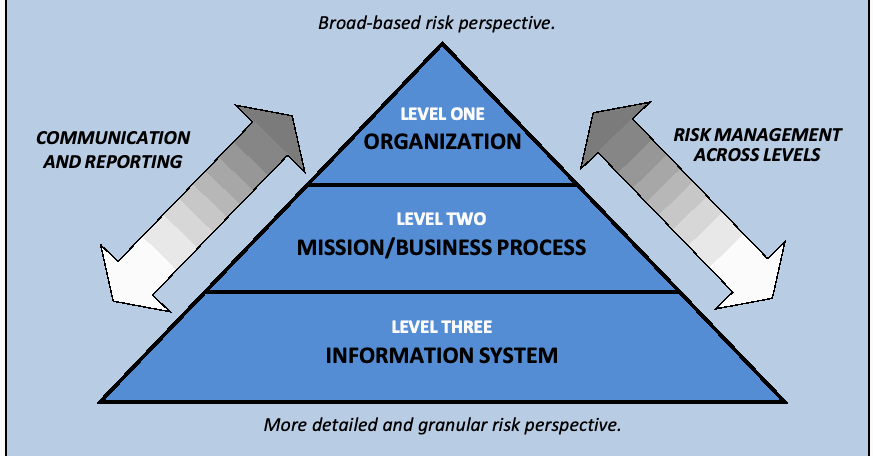
組織、ミッション／業務プロセス、情報システムの3層を示すリスク管理の図。上部ほど広範なリスク視点、下部ほど詳細で粒度の細かい視点となり、各階層間の情報共有・報告を矢印で表す。
FIGURE 1: ORGANIZATION-WIDE RISK MANAGEMENT APPROACH
図1：組織全体のリスク管理アプローチ
The activities conducted at Levels 1 and 2 are critical to preparing the organization to execute the RMF. Such preparation involves a wide range of activities that go beyond simply managing the security and privacy risk associated with operating or using specific systems and includes activities that are essential to managing security and privacy risk appropriately throughout the organization. Decisions about how to manage such risk at the system level cannot be made in isolation. Such decisions are closely linked to the:
レベル1とレベル2で実施される活動は、組織が RMF を実行する準備をするうえで極めて重要である。このような準備には、特定のシステムの運用や利用に伴うセキュリティリスクとプライバシーリスクを管理するだけにとどまらない幅広い活動が含まれ、組織全体でセキュリティリスクとプライバシーリスクを適切に管理するために不可欠な活動も含まれる。システムレベルでこのようなリスクをどのように管理するかの決定は、単独で行うことはできない。このような決定は、次の事項と密接に結び付いている。
•Mission or business objectives of organizations;
•組織のミッションまたは事業上の目標;
•Modernization initiatives for systems, components, and services;
•システム、コンポーネント、およびサービスの近代化イニシアティブ;
•Enterprise architecture and the need to manage and reduce the complexity20 of systems through consolidation, optimization, and standardization;21 and
•エンタープライズアーキテクチャ、ならびに統合、最適化、標準化21によってシステムの複雑さ20を管理し低減する必要性
•Allocation of resources to ensure the organization can conduct its missions and business operations effectively, efficiently, and in a cost-effective manner.
•組織がミッションおよび事業運営を効果的、効率的、かつ費用対効果の高い方法で遂行できるようにするためのリソース配分。
Preparing the organization to execute the RMF can include:
RMFを実行するための組織の準備には、次の事項が含まれる。
•Assigning roles and responsibilities for organizational risk management processes;
•組織のリスク管理プロセスにおける役割と責任の割り当て;
•Establishing a risk management strategy and organizational risk tolerance;
•リスク管理戦略および組織のリスク許容度の確立;
•Identifying the missions, business functions, and mission/business processes the information system is intended to support;
•情報システムが支援することを意図した使命、業務機能、使命・業務プロセスの特定;
•Identifying key stakeholders (internal and external to the organization) that have an interest in the information system;
•情報システムに関心を持つ主要な利害関係者（組織の内外）の特定;
•Identifying and prioritizing assets (including information assets);
•資産（情報資産を含む）の特定と優先順位付け;
•Understanding threats to information systems and organizations;
•情報システムおよび組織に対する脅威の把握;
•Understanding the potential adverse effects on individuals;
•個人に及ぼす潜在的な悪影響を理解すること；
•Conducting organization- and system-level risk assessments;
•組織レベルおよびシステムレベルのリスク評価を実施すること；
•Identifying and prioritizing security and privacy requirements;22
•セキュリティ要件とプライバシー要件の特定と優先順位付け22
•Determining authorization boundaries for information systems and common controls;23
•情報システムと共通管理策の認可境界の決定23
•Defining information systems in terms of the enterprise architecture;
•エンタープライズ・アーキテクチャの観点から情報システムを定義すること；
•Developing the security and privacy architectures that include controls suitable for inheritance by information systems;
•情報システムが継承できる適切な管理策を含む、セキュリティおよびプライバシーのアーキテクチャを策定すること；
•Identifying, aligning, and deconflicting security and privacy requirements; and
•セキュリティおよびプライバシーの要件を特定し、整合させ、競合を解消すること；および
•Allocating security and privacy requirements to information systems, system elements, and organizations.
•セキュリティおよびプライバシーの要件を、情報システム、システム要素、および組織に割り当てること。
In contrast to the Level 1 and 2 activities that prepare the organization for the execution of the RMF, Level 3 addresses risk from an information system perspective and is guided and informed by the risk decisions at the organization and mission/business process levels. The risk decisions at Levels 1 and 2 can impact the selection and implementation of controls at the system level. Controls are designated by the organization as system-specific, hybrid, or common (inherited) controls in accordance with the enterprise architecture, security or privacy architecture, and any tailored control baselines or overlays that have been developed by the organization.24
組織に RMF の実行を準備させるレベル1とレベル2の活動とは対照的に、レベル3は情報システムの観点からリスクを扱い、組織レベルおよびミッション／ビジネスプロセスレベルでのリスクに関する決定によって方向付けられ、その情報を得る。レベル1とレベル2でのリスクに関する決定は、システムレベルでの管理策の選択と実装に影響を及ぼし得る。管理策は、エンタープライズアーキテクチャ、セキュリティアーキテクチャまたはプライバシーアーキテクチャ、および組織が作成したテーラリング済みの管理策ベースラインやオーバーレイに従って、組織によりシステム固有の管理策、ハイブリッド管理策、または共通（継承）管理策として指定される。24
Organizations establish traceability of controls to the security and privacy requirements that the controls are intended to satisfy. Establishing such traceability ensures that all requirements are addressed during system design, development, implementation, operations, maintenance, and disposition.25 Each level of the risk management hierarchy is a beneficiary of a successful RMF execution—reinforcing the iterative nature of the risk management process where security and privacy risks are framed, assessed, responded to, and monitored at various organizational levels.
組織は、管理策と、その管理策が満たすことを意図したセキュリティ要件およびプライバシー要件との間の追跡可能性を確立する。このような追跡可能性を確立することにより、システムの設計、開発、実装、運用、保守、処分の間にすべての要件に対処されることが確実になる。25 リスク管理階層の各レベルは RMF の実行が成功することによる恩恵を受け、セキュリティリスクとプライバシーリスクが組織のさまざまなレベルでフレーミング、評価、対応、監視されるという、リスク管理プロセスの反復的な性質を強化する。
Without adequate risk management preparation at the organizational level, security and privacy activities can become too costly, demand too many skilled security and privacy professionals, and produce ineffective solutions. For example, organizations that fail to implement an effective enterprise architecture will have difficulty in consolidating, optimizing, and standardizing their information technology infrastructures. Additionally, the effect of architectural and design decisions can adversely affect the ability of organizations to implement effective security and privacy solutions. A lack of adequate preparation by organizations could result in unnecessary redundancy as well as inefficient, costly and vulnerable systems, services, and applications.
組織レベルで十分なリスク管理の準備がなければ、セキュリティおよびプライバシーの活動は過度に高コストとなり、高度な技能を持つセキュリティおよびプライバシー専門家を過剰に必要とし、効果のない解決策を生むおそれがある。たとえば、効果的なエンタープライズ・アーキテクチャを実装できない組織は、情報技術インフラストラクチャの統合、最適化、および標準化に困難を伴う。さらに、アーキテクチャおよび設計に関する判断の影響により、組織が効果的なセキュリティおよびプライバシーの解決策を実装する能力が損なわれる可能性がある。組織による十分な準備が欠けていると、不必要な重複に加え、非効率で高コストかつ脆弱なシステム、サービス、およびアプリケーションが生じるおそれがある。
2.2 RISK MANAGEMENT FRAMEWORK STEPS AND STRUCTURE
2.2 リスク管理フレームワークのステップと構成
There are seven steps in the RMF; a preparatory step to ensure that organizations are ready to execute the process and six main steps. All seven steps are essential for the successful execution of the RMF. The steps are:
RMFには7つのステップがある。組織がプロセスを実行する準備を整えるための準備ステップと、6つの主要ステップである。RMFを成功裏に実行するには、7つすべてのステップが不可欠である。各ステップは次のとおりである：
•Prepare to execute the RMF from an organization- and a system-level perspective by establishing a context and priorities for managing security and privacy risk.
•セキュリティおよびプライバシーリスクを管理するための状況と優先順位を定め、組織レベルおよびシステムレベルの観点からRMFの実行準備を行う。
•Categorize the system and the information processed, stored, and transmitted by the system based on an analysis of the impact of loss.26
•喪失による影響の分析に基づき、システムと、そのシステムが処理、保存、送信する情報を分類する。26
•Select an initial set of controls for the system and tailor the controls as needed to reduce risk to an acceptable level based on an assessment of risk.
•システムに適用する初期管理策一式を選択し、リスク評価に基づいてリスクを許容可能な水準まで低減するため、必要に応じて管理策を調整する。
•Implement the controls and describe how the controls are employed within the system and its environment of operation.
•管理策を実装し、システムおよびその運用環境において管理策がどのように適用されているかを記述する。
•Assess the controls to determine if the controls are implemented correctly, operating as intended, and producing the desired outcomes with respect to satisfying the security and privacy requirements.
•管理策が正しく実装され、意図したとおりに機能し、セキュリティおよびプライバシー要件を満たすという点で望ましい結果をもたらしているかを判断するため、管理策を評価する。
•Authorize the system or common controls based on a determination that the risk to organizational operations and assets, individuals, other organizations, and the Nation is acceptable.
•組織の運用および資産、個人、他の組織、ならびに国家に対するリスクが許容可能であるとの判断に基づき、システムまたは共通管理策を認可する。
•Monitor the system and the associated controls on an ongoing basis to include assessing control effectiveness, documenting changes to the system and environment of operation, conducting risk assessments and impact analyses, and reporting the security and privacy posture of the system.
•管理策の有効性の評価、システムおよび運用環境の変更の文書化、リスク評価および影響分析の実施、ならびにシステムのセキュリティおよびプライバシー態勢の報告を含め、システムおよび関連する管理策を継続的にモニタリングする。
Figure 2 illustrates the steps in the RMF. The RMF operates at all levels in the risk management hierarchy illustrated in Figure 1. Chapter Three provides a detailed description of each of the tasks necessary to carry out the steps in the RMF.
図2はRMFの各ステップを示す。RMFは、図1に示すリスク管理階層のすべてのレベルで機能する。第3章では、RMFの各ステップを実施するために必要な各タスクについて詳しく説明する。
リスク管理フレームワークの段階ラベル「CATEGORIZE（分類）」。
CATEGORIZE
分類
リスク管理フレームワークの段階ラベル「SELECT（選択）」。
リスク管理フレームワークの段階ラベル「MONITOR（監視）」。
リスク管理フレームワークの段階ラベル「SELECT（選択）」。
リスク管理フレームワークの段階ラベル「MONITOR（監視）」。
SELECT
選択
MONITOR
モニタリング
リスク管理フレームワークの段階ラベル「PREPARE（準備）」と「Process Initiation（プロセス開始）」。
PREPARE
準備
Process Initiation
プロセスの開始
リスク管理フレームワークの段階ラベル「IMPLEMENT（実装）」。
リスク管理フレームワークの段階ラベル「AUTHORIZE（認可）」。
リスク管理フレームワークの段階ラベル「IMPLEMENT（実装）」。
リスク管理フレームワークの段階ラベル「AUTHORIZE（認可）」。
IMPLEMENT
実装
AUTHORIZE
認可
リスク管理フレームワークの段階ラベル「ASSESS（評価）」。
ASSESS
評価
FIGURE 2: RISK MANAGEMENT FRAMEWORK
図2：リスク管理フレームワーク
While the RMF steps are listed in sequential order above and in Chapter Three, the steps following the Prepare step can be carried out in a nonsequential order. After completing the tasks in the Prepare step, organizations executing the RMF for the first time for a system or set of common controls typically carry out the remaining steps in sequential order. However, there could be many points in the risk management process where there is a need to diverge from the sequential order due to the type of system, risk decisions made by senior leadership, or to allow for iterative cycles between tasks or revisiting of tasks (e.g., during agile development). Once the organization is in the Monitor step, events may dictate a nonsequential execution of steps. For example, changes in risk or in system functionality may necessitate revisiting one or more of the steps in the RMF to address the change.
RMFのステップは上記および第3章では順番に列挙されているが、準備ステップ以降のステップは順不同で実施できる。準備ステップのタスクを完了した後、システムまたは一連の共通管理策について初めてRMFを実行する組織は、通常、残りのステップを順番に実施する。ただし、システムの種類、上級幹部が行うリスク判断、またはタスク間の反復サイクルやタスクの再検討を可能にすること（例：アジャイル開発中）を理由として、リスク管理プロセスでは順序どおりの実施から逸脱する必要が生じる場面も多くあり得る。組織がモニタリングステップに入ると、事象によっては順不同でステップを実行せざるを得なくなる。たとえば、リスクまたはシステム機能の変化により、その変化に対処するためRMFの1つ以上のステップを再検討する必要が生じることがある。
FLEXIBILITY IN RMF IMPLEMENTATION
RMF実装における柔軟性
Organizations are expected to execute all steps and tasks in the RMF (apart from tasks labeled as optional). However, organizations have significant flexibility in how each of the RMF steps and tasks are carried out, as long as organizations are meeting all applicable requirements and effectively managing security and privacy risk. The intent is to allow organizations to implement the RMF in the most efficient, effective, and cost-effective manner to support mission and business needs in a way that promotes effective security and privacy. Flexible implementation may include executing tasks in a different (potentially nonsequential) order, emphasizing certain tasks over other tasks, or combining certain tasks where appropriate. It can also include the use of the Cybersecurity Framework to enhance RMF task execution. Flexibility of implementation can also be applied to control selection, control tailoring to meet organizational security and privacy needs, or conducting control assessments throughout the SDLC. For example, the selection, tailoring, implementation, and assessments of controls can be done incrementally as a system is being developed. The implementation of control tailoring helps to ensure that security and privacy solutions are customized for the specific missions, business functions, risks, and operating environments of the organization. In the end, the flexibility inherent in RMF execution promotes effective security and privacy that helps to protect the systems that organizations depend on for mission and business success and the individuals whose information is processed by those systems.
組織には、（任意と明記されたタスクを除き）RMFのすべてのステップおよびタスクを実行することが期待される。ただし、適用されるすべての要件を満たし、セキュリティおよびプライバシーのリスクを効果的に管理する限り、RMFの各ステップおよびタスクの実施方法には大きな柔軟性がある。その目的は、ミッションおよび事業のニーズを支え、効果的なセキュリティおよびプライバシーを促進する方法で、組織が最も効率的、効果的、かつ費用対効果の高い形でRMFを実装できるようにすることである。柔軟な実装には、タスクを異なる（順不同となる場合もある）順序で実行すること、特定のタスクを他のタスクより重視すること、または適切な場合に複数のタスクを組み合わせることが含まれる。また、RMFタスクの実行を強化するためにサイバーセキュリティ・フレームワークを使用することも含まれる。実装の柔軟性は、管理策の選択、組織のセキュリティおよびプライバシーのニーズに合わせた管理策の調整、またはSDLC全体を通じた管理策評価にも適用できる。たとえば、システムの開発中に、管理策の選択、調整、実装、および評価を段階的に行うことができる。管理策の調整を実装することで、組織の固有のミッション、事業機能、リスク、および運用環境に合わせてセキュリティおよびプライバシーの解決策を確実にカスタマイズできる。最終的に、RMFの実行に本来備わる柔軟性は、組織がミッションおよび事業の成功のために依存するシステムと、それらのシステムが処理する情報に関係する個人の保護に役立つ、効果的なセキュリティおよびプライバシーを促進する。
Note: Since the RMF is an SDLC process that emphasizes ongoing authorization, organizations have the flexibility to determine which RMF step to enter (or reenter) based on an assessment of risk and the tasks described in the Prepare—System Level step. Determination of the appropriate RMF step requires an assessment of the current state of the system, a review of the activities that have already been completed for the system, identification of a proposed step and task entry into the RMF, a gap analysis to ensure that the risk is acceptable, documenting decisions, notifying stakeholders, and approval from the Authorizing Official (or other relevant decision maker).
注：RMFは継続的な認可を重視するSDLCプロセスであるため、組織はリスク評価および「準備—システムレベル」ステップに記載されたタスクに基づいて、どのRMFステップから開始（または再開）するかを柔軟に決定できる。適切なRMFステップを決定するには、システムの現状を評価し、システムについてすでに完了した活動を確認し、RMFへの開始ステップおよびタスクの案を特定し、リスクが許容可能であることを確認するためのギャップ分析を行い、判断を文書化し、利害関係者に通知し、認可権限者（またはその他の該当する意思決定者）の承認を得る必要がある。
Although the risk management approach in Figure 1 is conveyed as hierarchical, project and organization dynamics are typically more complex. The risk management approach selected by an organization may vary on a continuum from top-down command to decentralized consensus among peers. However, in all cases, organizations use a consistent approach that is applied to risk management processes organization-wide from the organization level to the information system level. Organizational officials identify and secure the needed resources to complete the risk management tasks described in this publication and ensure that those resources are made available to the appropriate personnel. Resource allocation includes funding to conduct risk management tasks and assigning qualified personnel that are needed to accomplish the tasks.
図1に示すリスク管理アプローチは階層的に表現されているが、プロジェクトおよび組織の実情は通常、より複雑である。組織が選択するリスク管理アプローチは、トップダウンの指揮から、同僚間の分散型合意形成までの連続体上で変わり得る。ただし、いずれの場合も、組織レベルから情報システムレベルまで、組織全体のリスク管理プロセスに一貫したアプローチを適用する。組織の当局者は、本刊行物に記載されたリスク管理タスクを完了するために必要なリソースを特定して確保し、それらのリソースを適切な要員が利用できるようにする。リソースの割り当てには、リスク管理タスクを実施するための資金の確保と、タスクの達成に必要な有資格者の配置が含まれる。
Each step in the RMF has a purpose statement, a defined set of outcomes, and a set of tasks that are carried out to achieve those outcomes. The outcomes can be achieved by different risk management levels—that is, some of the outcomes are universal to the entire organization, while others are system-focused or mission/business unit-focused. Figure 3 provides an example of the purpose statement and outcomes for the RMF Prepare step—Organization-Level.
RMFの各ステップには、目的の説明、定義された成果一式、およびその成果を達成するために実施するタスク一式がある。成果は、異なるリスク管理レベルで達成され得る。つまり、成果の一部は組織全体に共通し、その他はシステムまたはミッション／事業部門に焦点を当てている。図3に、RMFの準備ステップ（組織レベル）における目的の説明と成果の例を示す。
3.1 PREPARE
3.1 準備
Purpose
目的
The purpose of the Prepare step is to carry out essential activities at the organization, mission and business process, and information system levels of the organization to help prepare the organization to manage its security and privacy risks using the Risk Management Framework.
準備ステップの目的は、組織が Risk Management Framework を用いてセキュリティリスクとプライバシーリスクを管理する準備をするのを支援するため、組織の組織レベル、ミッションおよびビジネスプロセスレベル、情報システムレベルで不可欠な活動を実施することである。
PREPARE TASKS—ORGANIZATION LEVEL
準備タスク — 組織レベル
Table 1 provides a summary of tasks and expected outcomes for the RMF Prepare step at the organization level. Applicable Cybersecurity Framework constructs are also provided.
表1は、組織レベルにおける RMF の準備ステップのタスクと期待される成果の概要を示す。該当するサイバーセキュリティフレームワークの構成要素もあわせて示す。
TABLE 1: PREPARE TASKS AND OUTCOMES—ORGANIZATION LEVEL
表1：準備タスクと成果 — 組織レベル
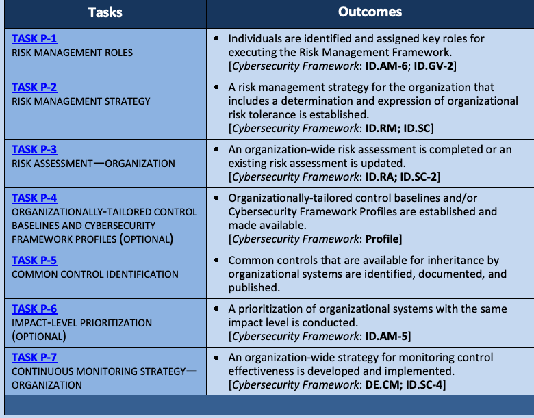
抽出したテキスト（原本と未照合・参考）
Tasks Outcomes TASK P-1 • Individuals are identified and assigned key roles for RISK MANAGEMENT ROLES executing the Risk Management Framework. [Cybersecurity Framework: ID.AM-6; ID.GV-2] TASK P-2 • A risk management strategy for the organization that RISK MANAGEMENT STRATEGY includes a determination and expression of organizational risk tolerance is established. [Cybersecurity Framework: ID.RM; ID.SC] TASK P-3 • An organization-wide risk assessment is completed or an RISK ASSESSMENT—ORGANIZATION existing risk assessment is updated. [Cybersecurity Framework: ID.RA; ID.SC-2] TASK P-4 • Organizationally-tailored control baselines and/or ORGANIZATIONALLY-TAILORED CONTROL Cybersecurity Framework Profiles are established and BASELINES AND CYBERSECURITY made available. FRAMEWORK PROFILES (OPTIONAL) [Cybersecurity Framework: Profile] TASK P-5 • Common controls that are available for inheritance by COMMON CONTROL IDENTIFICATION organizational systems are identified, documented, and published. TASK P-6 • A prioritization of organizational systems with the same IMPACT-LEVEL PRIORITIZATION impact le vel is conducted. (OPTIONAL) [Cyberse curity Framework: ID.AM-5] TASK P-7 • An organ ization-wide strategy for monitoring control CONTINUOUS MONITORING STRATEGY— effective ness is developed and implemented. ORGANIZATION [Cyberse curity Framework: DE.CM; ID.SC-4]抽出したテキストの訳（原本と未照合・参考）
タスク／成果 タスク P-1 • リスク管理の役割：リスク管理フレームワークを実行するための主要な役割を担う個人が特定され、任命される。[Cybersecurity Framework: ID.AM-6; ID.GV-2] タスク P-2 • リスク管理戦略：組織のリスク許容度の判断および表明を含む、組織のリスク管理戦略が策定される。[Cybersecurity Framework: ID.RM; ID.SC] タスク P-3 • リスク評価—組織：組織全体のリスク評価が完了するか、既存のリスク評価が更新される。[Cybersecurity Framework: ID.RA; ID.SC-2] タスク P-4 • 組織に合わせて調整した管理策ベースラインおよび／またはサイバーセキュリティ・フレームワーク・プロファイルが策定され、利用可能になる（任意）。[Cybersecurity Framework: Profile] タスク P-5 • 共通管理策の特定：組織のシステムが継承できる共通管理策が特定され、文書化され、公開される。 タスク P-6 • 影響度レベルによる優先順位付け：同じ影響度レベルの組織システムについて優先順位付けを行う（任意）。[Cybersecurity Framework: ID.AM-5] タスク P-7 • 継続的モニタリング戦略—組織：管理策の有効性をモニタリングする組織全体の戦略が策定され、実施される。[Cybersecurity Framework: DE.CM; ID.SC-4]抽出したテキストの訳（原本と未照合・参考）
タスク P-2 リスク管理戦略抽出したテキストの訳（原本と未照合・参考）
タスク P-3 リスク評価—組織Quick link to summary table for RMF tasks, responsibilities, and supporting roles.
RMF のタスク、責任、支援の役割の概要表へのクイックリンク。
FIGURE 3: RISK MANAGEMENT FRAMEWORK TASK STRUCTURE
図3：リスク管理フレームワークのタスク構造
Each task contains a set of potential inputs needed to execute the task and a set of expected outputs generated from task execution.27 In addition, each task describes the risk management roles and responsibilities associated with the task and the phase of the SDLC where task execution occurs.28 A discussion section provides information related to the task to facilitate understanding and to promote effective task execution. Finally, completing the RMF task description, there is a list of references to provide organizations with supplemental information for each task. Where applicable, the references also identify systems security engineering tasks that correlate with the RMF task.29 Figure 4 illustrates the structure of a typical RMF task.
各タスクには、タスクの実行に必要な潜在的インプットの集合と、タスクの実行によって生成される期待されるアウトプットの集合が含まれる。27 さらに、各タスクでは、そのタスクに関連するリスク管理の役割と責任、およびタスクの実行が行われる SDLC のフェーズを記述する。28 考察のセクションでは、理解を容易にし、効果的なタスクの実行を促進するため、タスクに関連する情報を提供する。最後に、RMF のタスク記述を締めくくるものとして、各タスクについて組織に補足情報を提供する参考文献の一覧がある。該当する場合、参考文献では RMF のタスクと対応するシステムセキュリティエンジニアリングのタスクも示す。29 図4は、典型的な RMF のタスクの構造を示す。
RISK ASSESSMENT—ORGANIZATION
リスクアセスメント — 組織
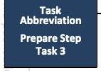
抽出したテキスト（原本と未照合・参考）
| This A publicat P | Task bbreviation repare Step Task 3 |
抽出したテキストの訳（原本と未照合・参考）
| 本刊行物 A 刊行物 P | タスク 略称 準備ステップ タスク3 |
TASK P-3 Assess organization-wide security and privacy risk and update the risk assessment results on an ongoing basis.
タスク P-3 組織全体のセキュリティリスクとプライバシーリスクを評価し、リスクアセスメントの結果を継続的に更新する。
Potential Inputs: Risk management strategy; mission or business objectives; current threat information; system-level security and privacy risk assessment results; supply chain risk assessment results; previous organization-level security and privacy risk assessment results; information sharing agreements or memoranda of understanding; security and privacy information from continuous monitoring.
潜在的インプット：リスク管理戦略、ミッションまたはビジネス上の目標、最新の脅威情報、システムレベルのセキュリティリスクアセスメントとプライバシーリスクアセスメントの結果、サプライチェーンリスクアセスメントの結果、以前の組織レベルのセキュリティリスクアセスメントとプライバシーリスクアセスメントの結果、情報共有協定または覚書、継続的監視によるセキュリティ情報とプライバシー情報。
Expected Outputs: Organization-level risk assessment results.
期待されるアウトプット：組織レベルのリスクアセスメントの結果。
Primary Responsibility: Senior Accountable Official for Risk Management or Risk Executive (Function); Senior Agency Information Security Officer; Senior Agency Official for Privacy.
主たる責任：リスク管理担当上級責任者またはリスク管理幹部（機能）、上級機関情報セキュリティ責任者、上級機関プライバシー責任者。
Supporting Roles: Chief Information Officer; Mission or Business Owner; Authorizing Official or Authorizing Official Designated Representative.
支援の役割：最高情報責任者、ミッションまたはビジネスの所有者、認可権限者または認可権限者指名代理人。
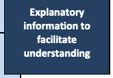
抽出したテキスト（原本と未照合・参考）
Explanatory information to facilitate understanding抽出したテキストの訳（原本と未照合・参考）
理解を促すための説明情報Discussion: Risk assessment at the organizational level leverages aggregated information from system-level risk assessment results, continuous monitoring, and any strategic risk considerations relevant to the organization. The organization considers the totality of risk from the operation and use of its information systems, from information exchange and connections with other internally and externally owned systems, and from the use of external providers. For example, the organization may review the risk related to its enterprise architecture and information systems of varying impact levels residing on the same network and whether higher impact systems are segregated from lower impact systems or systems operated and maintained by external providers. The organization may also consider the variability of environments that may exist within the organization (e.g., different locations serving different missions/business processes) and the need to account for such variability in risk assessments. Risk assessments of the organization’s supply chain may be conducted as well. Risk assessment results may be used to help organizations establish a Cybersecurity Framework Profile.
考察：組織レベルのリスクアセスメントでは、システムレベルのリスクアセスメントの結果、継続的監視、および組織に関連する戦略的なリスクの考慮事項から集約した情報を活用する。組織は、自らの情報システムの運用と利用、内部および外部が所有する他のシステムとの情報交換と接続、ならびに外部プロバイダの利用から生じるリスクの総体を考慮する。例えば、組織は、エンタープライズアーキテクチャと、同一ネットワーク上に存在する影響度の異なる情報システムに関するリスクを見直し、影響度の高いシステムが影響度の低いシステムや外部プロバイダが運用・保守するシステムから分離されているかどうかを確認することがある。また、組織は、組織内に存在し得る環境の多様性（例：異なるミッション／ビジネスプロセスを担う異なる拠点）と、そのような多様性をリスクアセスメントで考慮する必要性を検討することもある。組織のサプライチェーンのリスクアセスメントを実施してもよい。リスクアセスメントの結果は、組織がサイバーセキュリティフレームワークのプロファイルを確立するのに役立てることができる。
References: [SP 800-30]; [SP 800-39] (Organization Level, Mission/Business Process Level); [SP 800-161]; [IR 8062].
参考文献：[SP 800-30]、[SP 800-39]（組織レベル、ミッション／ビジネスプロセスレベル）、[SP 800-161]、[IR 8062]。
タスク実行を支援する追加情報の参照先として、NISTの刊行物を示すラベル。
FIGURE 4: RISK MANAGEMENT FRAMEWORK TASK STRUCTURE
図4：リスク管理フレームワークのタスク構造
2.3 INFORMATION SECURITY AND PRIVACY IN THE RMF
2.3 RMFにおける情報セキュリティとプライバシー
OMB CIRCULAR A-130: INTEGRATION OF INFORMATION SECURITY AND PRIVACY
OMB CIRCULAR A-130：情報セキュリティとプライバシーの統合
In 2016, OMB revised Circular A-130, the circular establishing general policy for the planning, budgeting, governance, acquisition, and management of federal information, personnel, equipment, funds, information technology resources, and supporting infrastructure and services. The circular addresses responsibilities for protecting federal information resources and managing personally identifiable information (PII). In establishing requirements for information security programs and privacy programs, the circular emphasizes the need for both programs to collaborate on shared objectives:
2016年、OMBは Circular A-130 を改訂した。この通達は、連邦政府の情報、人員、設備、資金、情報技術資源、およびそれを支えるインフラとサービスの計画、予算編成、ガバナンス、調達、管理に関する一般方針を定めるものである。この通達は、連邦政府の情報資源を保護し、個人を特定できる情報（PII）を管理する責任を扱っている。情報セキュリティプログラムとプライバシープログラムに対する要件を定めるにあたり、この通達は、両プログラムが共通の目的に向けて協働する必要性を強調している。
While security and privacy are independent and separate disciplines, they are closely related, and it is essential for agencies to take a coordinated approach to identifying and managing security and privacy risks and complying with applicable requirements.
セキュリティとプライバシーは互いに独立した別個の分野であるが、密接に関連しており、各機関は、セキュリティリスクとプライバシーリスクの特定と管理、および適用される要件の遵守に対して、協調したアプローチをとることが不可欠である。
[OMB A-130] requires organizations to implement the RMF that is described in this guideline. With the 2016 revision to the circular, OMB also requires organizations to integrate privacy into the RMF process:
[OMB A-130] は、本ガイドラインで説明する RMF を実施することを組織に求めている。2016年の通達改訂により、OMB は、プライバシーを RMF のプロセスに統合することも組織に求めている。
The RMF provides a disciplined and structured process that integrates information security, privacy, and risk management activities into the SDLC. This Circular requires organizations to use the RMF to manage privacy risks beyond those that are typically included under the “confidentiality” objective of the term “information security.” While many privacy risks relate to the unauthorized access or disclosure of PII, privacy risks may also result from other activities, including the creation, collection, use, and retention of PII; the inadequate quality or integrity of PII; and the lack of appropriate notice, transparency, or participation.
RMF は、情報セキュリティ、プライバシー、およびリスク管理の活動を SDLC に統合する、規律ある構造化されたプロセスを提供する。本通達は、「情報セキュリティ」という用語の「機密性」の目的に通常含まれるものを超えるプライバシーリスクを管理するために、RMF を用いることを組織に求めている。多くのプライバシーリスクは PII への認可されていないアクセスや開示に関係するが、プライバシーリスクは、PII の作成、収集、利用、保持、PII の品質や完全性の不足、適切な通知、透明性、参加の欠如など、他の活動から生じることもある。
This section of the guideline describes the relationship between information security programs and privacy programs under the RMF. However, subject to OMB policy, organizations retain the flexibility to undertake the integration of privacy into the RMF in the most effective manner, considering the organization’s mission and circumstances.
本ガイドラインのこの節では、RMF のもとでの情報セキュリティプログラムとプライバシープログラムの関係を説明する。ただし、OMB の方針に従う限り、組織は、自組織のミッションと状況を考慮して、最も効果的な方法でプライバシーを RMF に統合する柔軟性を保持する。
Executing the RMF requires close collaboration between information security programs and privacy programs. While information security programs and privacy programs have different objectives, those objectives are overlapping and complementary. Information security programs are responsible for protecting information and information systems from unauthorized access, use, disclosure, disruption, modification, or destruction (i.e., unauthorized system activity or behavior) in order to provide confidentiality, integrity, and availability. Privacy programs are responsible for ensuring compliance with applicable privacy requirements and for managing the risks to individuals associated with the creation, collection, use, processing, dissemination, storage, maintenance, disclosure, or disposal (collectively referred to as “processing”) of PII.30 When preparing to execute the steps of the RMF, organizations consider how to best promote and institutionalize collaboration between the two programs to ensure that the objectives of both disciplines are met at every step of the process.
RMF の実施には、情報セキュリティプログラムとプライバシープログラムの緊密な協働が必要である。情報セキュリティプログラムとプライバシープログラムの目的は異なるが、それらの目的は重なり合い、互いに補完する。情報セキュリティプログラムは、機密性、完全性、可用性を確保するために、認可されていないアクセス、利用、開示、妨害、改変、破壊（すなわち、認可されていないシステムの活動や挙動）から情報と情報システムを保護する責任を負う。プライバシープログラムは、適用されるプライバシー要件の遵守を確保し、PII の作成、収集、利用、処理、配布、保存、維持、開示、廃棄（総称して「処理」という）に伴う個人へのリスクを管理する責任を負う。30 RMF のステップの実施を準備するにあたり、組織は、プロセスのすべてのステップで両分野の目的が達成されるよう、両プログラム間の協働を最もよく促進し、制度化する方法を検討する。
When an information system processes PII, the organization’s information security program and privacy program have a shared responsibility for managing the risks to individuals that may arise from unauthorized system activity or behavior. This requires the two programs to collaborate when selecting, implementing, assessing, and monitoring security controls.31 However, while information security programs and privacy programs have complementary objectives with respect to managing the confidentiality, integrity, and availability of PII, protecting individuals’ privacy cannot be achieved solely by securing PII.
情報システムが PII を処理する場合、組織の情報セキュリティプログラムとプライバシープログラムは、認可されていないシステムの活動や挙動から生じうる個人へのリスクを管理する責任を共有する。このため、両プログラムは、セキュリティ管理策の選択、実装、評価、モニタリングにあたって協働する必要がある。31 ただし、情報セキュリティプログラムとプライバシープログラムは、PII の機密性、完全性、可用性の管理に関しては補完的な目的をもつものの、PII を保護するだけでは個人のプライバシーの保護は達成できない。
Not all privacy risks arise from unauthorized system activity or behavior, such as unauthorized access or disclosure of PII. Some privacy risks may result from authorized activity that is beyond the scope of information security. For example, privacy programs are responsible for managing the risks to individuals that may result from the creation, collection, use, and retention of PII; the inadequate quality or integrity of PII; and the lack of appropriate notice, transparency, or participation. Therefore, to help ensure compliance with applicable privacy requirements and to manage privacy risks from authorized and unauthorized processing of PII, organizations’ privacy programs also select, implement, assess, and monitor privacy controls.32
すべてのプライバシーリスクが、PII への認可されていないアクセスや開示のような、認可されていないシステムの活動や挙動から生じるわけではない。プライバシーリスクの中には、情報セキュリティの範囲外にある認可された活動から生じるものもある。たとえば、プライバシープログラムは、PII の作成、収集、利用、保持、PII の品質や完全性の不足、適切な通知、透明性、参加の欠如から生じうる個人へのリスクを管理する責任を負う。したがって、適用されるプライバシー要件の遵守を確保し、PII の認可された処理と認可されていない処理から生じるプライバシーリスクを管理するために、組織のプライバシープログラムもプライバシー管理策を選択、実装、評価、モニタリングする。32
[OMB A-130] defines a privacy control as an administrative, technical, or physical safeguard employed within an agency to ensure compliance with applicable privacy requirements and to manage privacy risks. A privacy control is different from a security control, which the Circular defines as a safeguard or countermeasure prescribed for an information system or an organization to protect the confidentiality, integrity, and availability of the system and its information. Due to the shared responsibility that organizations’ information security programs and privacy programs have to manage the risks to individuals arising from unauthorized system activity or behavior, controls that achieve both security and privacy objectives are both privacy and security controls. This guideline refers to such controls that achieve both sets of objectives simply as “controls.” When this guideline uses the descriptors “privacy” and “security” with the term control, it is referring to those controls in circumstances where the controls are selected, implemented, and assessed for particular objectives.
[OMB A-130]は、プライバシー管理策を、適用されるプライバシー要件の遵守を確保し、プライバシーリスクを管理するために機関内で用いられる、管理上、技術上、または物理的な保護措置と定義している。プライバシー管理策は、情報システムまたは組織に対して規定され、システムおよびその情報の機密性、完全性、および可用性を保護するための保護措置または対抗策として同通達が定義するセキュリティ管理策とは異なる。組織の情報セキュリティ・プログラムとプライバシー・プログラムは、不正なシステム活動または挙動から生じる個人へのリスクを管理する責任を共有するため、セキュリティとプライバシーの両方の目的を達成する管理策は、プライバシー管理策であると同時にセキュリティ管理策でもある。本ガイドラインでは、両方の目的を達成するそのような管理策を、単に「管理策」と呼ぶ。本ガイドラインで「プライバシー」または「セキュリティ」という修飾語を「管理策」に付ける場合は、特定の目的のために管理策を選択、実装、および評価する状況における管理策を指す。
The risk management processes described in this publication are equally applicable to security and privacy programs. However, the risks that security and privacy programs are required to manage are overlapping in some areas, but not in others. Consequently, it is important that organizations understand the interplay between privacy and security to promote effective collaboration between privacy and security officials at every level of the organization.
本刊行物に記載するリスク管理プロセスは、セキュリティ・プログラムとプライバシー・プログラムの双方に等しく適用される。ただし、両プログラムが管理する必要のあるリスクは、一部では重複するが、重複しないものもある。そのため、組織がプライバシーとセキュリティの相互関係を理解し、組織のあらゆるレベルでプライバシー担当者とセキュリティ担当者の効果的な連携を促進することが重要である。
2.4 SYSTEM AND SYSTEM ELEMENTS
2.4 システムおよびシステム要素
This publication uses the statutory definition of information system for RMF execution. It is important, however, to describe information systems in the context of the SDLC process and how security and privacy capabilities are implemented within the components of those systems. Therefore, organizations executing the RMF take a broad view of the life cycle of information system development to provide a contextual relationship and linkage to architectural and engineering concepts that allow security and privacy risks (including supply chain risks) to be addressed throughout the life cycle and at the appropriate level of detail to help ensure that such capabilities are achieved. [ISO 15288] provides an engineering view of an information system and the entities with which the system interacts in its environment of operation.33
本刊行物では、RMFの実行にあたり、情報システムの法令上の定義を用いる。ただし、SDLCプロセスの文脈における情報システムと、そうしたシステムの構成要素内でセキュリティおよびプライバシーの能力がどのように実装されるかを説明することが重要である。したがって、RMFを実行する組織は、セキュリティおよびプライバシーのリスク（サプライチェーンリスクを含む）にライフサイクル全体を通じて適切な詳細レベルで対処でき、そのような能力が確実に達成される助けとなる、アーキテクチャおよびエンジニアリングの概念との文脈上の関係および結び付きを示すため、情報システム開発のライフサイクルを広く捉える。[ISO 15288]は、情報システムと、その運用環境で当該システムが相互作用する実体を、エンジニアリングの観点から説明している。33
Similar to how federal law defines information system as a discrete set of information resources organized for the collection, processing, maintenance, use, sharing, dissemination, or disposition of information. [ISO 15288] defines a system as a set of interacting elements that are organized to achieve one or more stated purposes. Just as the information resources that comprise an information system include information and other resources (e.g., personnel, equipment, funds, and information technology), system elements include technology or machine elements, human elements, and physical or environmental elements. Each of the system elements34 within the system fulfills specified requirements and may be implemented via hardware, software, or firmware;35 physical structures or devices; or people, processes, policies, and procedures. Individual system elements or a combination of system elements may satisfy stated system requirements. Interconnections between system elements allow those elements to interact as necessary to produce a capability as specified by the system requirements. Finally, every system operates within an environment that influences the system and its operation.
連邦法が情報システムを、情報の収集、処理、保守、利用、共有、配布、または廃棄のために編成された情報資源の個別の集合として定義しているのと同様に、[ISO 15288]はシステムを、1つ以上の明示された目的を達成するために編成された相互作用する要素の集合と定義している。情報システムを構成する情報資源に情報およびその他の資源（例：人員、機器、資金、情報技術）が含まれるのと同様に、システム要素には技術または機械の要素、人的要素、ならびに物理的または環境的要素が含まれる。システム内の各システム要素34は、指定された要件を満たし、ハードウェア、ソフトウェア、もしくはファームウェア35、物理的な構造物もしくは装置、または人員、プロセス、方針、および手順を介して実装される場合がある。個々のシステム要素または複数のシステム要素の組み合わせによって、明示されたシステム要件を満たすことができる。システム要素間の相互接続により、システム要件で定められた能力を実現するため、必要に応じて各要素が相互作用できる。最後に、すべてのシステムは、そのシステムおよび運用に影響を与える環境内で動作する。
The authorization boundary defines the system36 for RMF execution to facilitate risk management and accountability. The system may be supported by one or more enabling systems that provide support during the system life cycle. Enabling systems are not contained within the authorization boundary of the system and do not necessarily exist in the system’s environment of operation. An enabling system may provide common (i.e., inherited) controls for the system or may include any type of service or functionality used by the system such as identification and authentication services, network services, or monitoring functionality. Finally, there are other systems the system interacts with in the operational environment. The other systems are also outside of the authorization boundary and may be the beneficiaries of services provided by the system or may simply have some general interaction.37
認可境界は、リスク管理と説明責任を促進するため、RMFの実行におけるシステム36を定義する。システムのライフサイクルを通じて支援を提供する1つ以上の支援システムが、当該システムを支える場合がある。支援システムは、当該システムの認可境界内には含まれず、必ずしもシステムの運用環境内に存在するとは限らない。支援システムは、当該システム向けの共通（すなわち、継承される）管理策を提供する場合がある。また、識別・認証サービス、ネットワークサービス、モニタリング機能など、当該システムが利用するあらゆる種類のサービスまたは機能を含む場合もある。さらに、運用環境において当該システムが相互作用する他のシステムもある。それらのシステムも認可境界の外部にあり、当該システムが提供するサービスの受益者となる場合もあれば、単に何らかの一般的な相互作用を持つ場合もある。37
Figure 5 illustrates the conceptual view of the system and the relationships among the system, system elements, enabling systems, other systems, and the environment of operation.38
図5は、システムの概念図であり、システム、システム要素、支援システム、その他のシステム、および運用環境の間の関係を示す。38
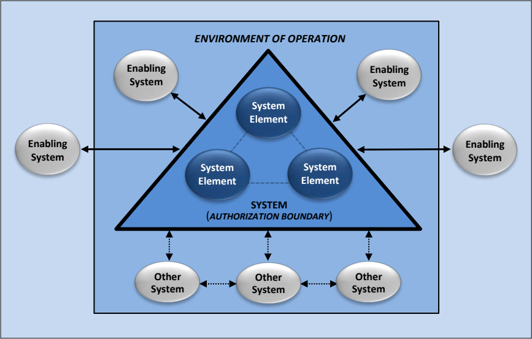
運用環境の関係図。認可境界内のシステムとシステム要素を、外部の支援システム（Enabling System）やその他のシステムとともに配置している。
FIGURE 5: CONCEPTUAL VIEW OF THE SYSTEM
図5：システムの概念図
Certain parts of the environment of operation may be included in the authorization boundary (i.e., determined to be “in scope” for the authorization) while other parts may be excluded. For example, if the facility (i.e., environment of operation) that provides protection for the system elements is determined to be in scope for the authorization of the system, the physical and environmental protection controls (e.g., physical access controls at entry points, perimeter protection devices) are included in the authorization boundary and therefore, are included in the system security plan. If the facility provides physical and environmental protections as common controls to be inherited by the system, the environment of operation is out of scope for the system and is not included in the authorization boundary for the system.39
運用環境の一部は認可境界に含まれ（すなわち、認可の「対象範囲内」と判断され）、他の部分は除外される場合がある。たとえば、システム要素を保護する施設（すなわち運用環境）がシステムの認可の対象範囲内と判断された場合、物理的・環境的保護の管理策（例：入口における物理アクセス管理策、境界防護装置）は認可境界に含まれ、したがってシステムセキュリティ計画にも含まれる。施設が、システムが継承する共通管理策として物理的・環境的保護を提供する場合、その運用環境はシステムの対象範囲外であり、システムの認可境界には含まれない。39
The system may also communicate or have other interactions with enabling systems and other systems that are part of the extended environment of operation but are outside of the scope of authorization for the system.40 Organizations determine which parts of the environment of operation are within the authorization boundary. These determinations are typically specific to the system and are context-driven.
システムは、拡張された運用環境の一部であるがシステムの認可の対象範囲外にある支援システムやその他のシステムと、通信その他のやり取りを行うこともある。40 組織は、運用環境のどの部分が認可境界内にあるかを判断する。この判断は通常、システムに固有であり、状況に依存する。
2.5 AUTHORIZATION BOUNDARIES
2.5 認可境界
The authorization boundary establishes the scope of protection for an information system (i.e., what the organization agrees to protect under its direct management or within the scope of its responsibilities).41 The authorization boundary includes the people, processes, and information technologies (i.e., system elements) that are part of each system supporting the organization’s missions and business functions. Authorization boundaries that are too expansive (i.e., include too many system elements or components) make the risk management process unnecessarily complex. Conversely, authorization boundaries that are too limited (i.e., include too few system elements or components) increase the number of systems that must be separately managed and therefore, may unnecessarily inflate the information security and privacy costs for the organization.
認可境界は、情報システムの保護対象範囲を定める（すなわち、組織が直接管理する、またはその責任範囲内で保護することに合意した対象を定める）。41 認可境界には、組織のミッションおよび事業機能を支える各システムの一部である人員、プロセス、および情報技術（すなわち、システム要素）が含まれる。範囲が広すぎる認可境界（すなわち、含まれるシステム要素またはコンポーネントが多すぎる場合）は、リスク管理プロセスを不必要に複雑にする。反対に、範囲が狭すぎる認可境界（すなわち、含まれるシステム要素またはコンポーネントが少なすぎる場合）は、個別に管理すべきシステム数を増加させるため、組織の情報セキュリティおよびプライバシーのコストを不必要に膨らませる場合がある。
The authorization boundary for a system is established during the RMF Prepare Task – System level, Task P-11. Organizations have flexibility in determining what constitutes the authorization boundary for a system. The set of system elements included within an authorization boundary defines the system (i.e., the scope of the authorization). When a set of system elements is identified as an authorization boundary for a system, the elements are generally under the same direct management.42 Other considerations for determining the authorization boundary include identifying system elements that:
システムの認可境界は、RMFの準備ステップ—システムレベル、タスク P-11 において確立される。組織は、システムの認可境界を何が構成するかを柔軟に決定できる。認可境界に含めるシステム要素の集合によって、システム（すなわち、認可の範囲）が定義される。システム要素の集合をシステムの認可境界として特定する場合、それらの要素は通常、同一の直接管理下にある。42 認可境界を決定する際のその他の考慮事項として、次のシステム要素を特定することが挙げられる：
•Support the same mission or business functions;
•同じミッションまたは事業機能を支援するもの；
•Have similar operating characteristics and security and privacy requirements;
•運用特性ならびにセキュリティおよびプライバシー要件が類似するもの；
•Process, store, and transmit similar types of information (e.g., categorized at the same impact level);43 or
•類似した種類の情報を処理、保存、および伝送するもの（例：同じ影響度レベルに分類される情報）；43 または
•Reside in the same environment of operation (or in the case of a distributed system, reside in various locations with similar operating environments).
•同じ運用環境に存在するもの（分散システムの場合は、類似した運用環境にある複数の場所に存在するもの）。
The scope of the authorization boundary is revisited periodically as part of the continuous monitoring process carried out by the organization. While the above considerations may be useful to organizations in determining authorization boundaries for purposes of managing risk, the considerations are not intended to limit the organization’s flexibility in establishing authorization boundaries that promote effective security and privacy with the available resources of the organization.
組織が実施する継続的モニタリングプロセスの一環として、認可境界の範囲を定期的に見直す。上記の考慮事項は、リスク管理を目的として認可境界を決定する際に組織の参考となる場合があるが、組織が利用可能なリソースを用いて効果的なセキュリティおよびプライバシーを促進する認可境界を設定する柔軟性を制限するものではない。
The process of establishing authorization boundaries carries significant risk management implications and is therefore an organization-wide activity that requires coordination among key participants. The process considers mission and business requirements, security and privacy requirements, and the costs to the organization. Appendix G provides additional information and considerations for determining authorization boundaries, including boundaries for complex systems and software applications.
認可境界を設定するプロセスは、リスク管理に重大な影響を及ぼすため、主要な関係者間の調整を必要とする組織全体の活動である。このプロセスでは、ミッションおよび事業上の要件、セキュリティおよびプライバシーの要件、ならびに組織にかかるコストを考慮する。付録Gには、複雑なシステムやソフトウェア・アプリケーションの境界を含め、認可境界を決定するための追加情報および考慮事項が記載されている。
EFFECTIVE AUTHORIZATION BOUNDARIES
効果的な認可境界
Establishing meaningful authorization boundaries for systems and common controls is one of the most important risk management activities carried out by an organization. The authorization boundary defines the specific scope of an authorizing official’s responsibility and accountability for protecting information resources and individuals’ privacy—including the use of systems, components, and services from external providers. Establishment of meaningful authorization boundaries is a foundation for assuring mission and business success for the organization.
システムおよび共通管理策について意味のある認可境界を設定することは、組織が実施する最も重要なリスク管理活動の1つである。認可境界は、情報資源および個人のプライバシーを保護するための認可担当者の責任と説明責任の具体的な範囲を定める。これには、外部プロバイダーのシステム、コンポーネント、およびサービスの利用も含まれる。意味のある認可境界を設定することは、組織のミッションおよび事業の成功を確実にするための基盤である。
2.6 REQUIREMENTS AND CONTROLS
2.6 要件と管理策
Before executing the RMF, it is important to understand the concept of security and privacy requirements and the relationship between requirements and controls. The term requirements can be used in different contexts. In the context of federal information security and privacy policies, the term is generally used to refer to information security and privacy obligations imposed on organizations. For example, OMB Circular A-130 imposes a series of information security and privacy requirements with which federal agencies must comply when managing information resources. In addition to the use of the term requirements in the context of federal policy, the term requirements is used in this guideline in a broader sense to refer to an expression of the set of stakeholder protection needs for a particular system or organization. Stakeholder protection needs and corresponding security and privacy requirements may be derived from many sources (e.g., laws, executive orders, directives, regulations, policies, standards, mission and business needs, or risk assessments). The term requirements, as used in this guideline, includes both legal and policy requirements, as well as an expression of the broader set of stakeholder protection needs that may be derived from other sources. All of these requirements, when applied to a system, help determine the required characteristics of the system—encompassing security, privacy, and assurance.
RMFを実行する前に、セキュリティおよびプライバシー要件の概念と、要件と管理策の関係を理解することが重要である。「要件」という用語は、文脈によって異なる意味で使われる。連邦政府の情報セキュリティおよびプライバシー方針の文脈では、通常、組織に課される情報セキュリティおよびプライバシー上の義務を指す。たとえば、OMB通達A-130は、情報資源を管理する際に連邦機関が遵守しなければならない一連の情報セキュリティおよびプライバシー要件を課している。連邦方針の文脈での用法に加えて、本ガイドラインでは「要件」をより広い意味で用い、特定のシステムまたは組織に対する利害関係者の保護ニーズ一式を表現するものを指す。利害関係者の保護ニーズと、それに対応するセキュリティおよびプライバシー要件は、法律、大統領令、指令、規則、方針、標準、ミッションおよび事業上のニーズ、リスク評価など、さまざまな情報源に由来する場合がある。本ガイドラインで用いる「要件」という用語には、法的要件および方針上の要件だけでなく、他の情報源に由来するより広範な利害関係者の保護ニーズの表現も含まれる。これらの要件をシステムに適用することで、セキュリティ、プライバシー、および保証を含む、システムに求められる特性を定める助けとなる。
Organizations may choose to divide security and privacy requirements into more granular categories depending on where the requirements are employed in the SDLC and for what purpose. Organizations may use the term capability requirement to describe a capability that the system or organization must provide to satisfy a stakeholder protection need. In addition, organizations may refer to system requirements that pertain to particular hardware, software, and firmware components of a system as specification requirements—that is, capabilities that implement all or part of a control and that may be assessed (i.e., as part of the verification, validation, testing, and evaluation processes). Finally, organizations may use the term statement of work requirements to refer to actions that must be performed operationally or during system development.
組織は、SDLCのどの段階で、どのような目的で要件を用いるかに応じて、セキュリティおよびプライバシー要件をより細かなカテゴリに分けることができる。組織は、利害関係者の保護ニーズを満たすためにシステムまたは組織が提供しなければならない能力を、「能力要件」と呼ぶ場合がある。また、特定のシステムのハードウェア、ソフトウェア、およびファームウェアの各コンポーネントに関するシステム要件を、「仕様要件」と呼ぶ場合がある。これは、管理策の全部または一部を実装する能力であり、検証、妥当性確認、試験、および評価のプロセスの一環として評価できる。さらに組織は、運用時またはシステム開発中に実施しなければならない行動を「作業範囲記述書の要件」と呼ぶ場合がある。
Controls can be viewed as descriptions of the safeguards and protection capabilities appropriate for achieving the particular security and privacy objectives of the organization and reflecting the protection needs of organizational stakeholders. Controls are selected and implemented by the organization in order to satisfy the system requirements. Controls can include technical aspects, administrative aspects, and physical aspects. In some cases, the selection and implementation of a control may necessitate additional specification by the organization in the form of derived requirements or instantiated control parameter values. The derived requirements and control parameter values may be necessary to provide the appropriate level of implementation detail for particular controls within the SDLC.
管理策は、組織固有のセキュリティおよびプライバシー目標を達成し、組織の利害関係者の保護ニーズを反映するのに適した保護措置および保護能力を記述したものとみなすことができる。組織は、システム要件を満たすために管理策を選択し、実装する。管理策には技術的側面、管理的側面、および物理的側面が含まれ得る。場合によっては、管理策の選択および実装にあたり、組織が導出要件または具体化された管理策パラメータ値の形で追加の指定を行う必要がある。SDLC内で特定の管理策の実装に適切な詳細度を確保するため、導出要件および管理策パラメータ値が必要になる場合がある。
CONTEXT-DEPENDENT REQUIREMENTS
状況に応じた要件
Security and privacy requirements and risks identified by the organization, lead to the need for security and privacy controls to respond to the risk. The controls selected by the organization subsequently lead to both specification requirements and statement of work requirements in the systems engineering context. This is an important aspect of how systems engineers develop, derive, and decompose requirements as part of the SDLC process. Thus, organizations manage security and privacy requirements at various levels of granularity and specificity during the life cycle of the system. Controls play an important part in the life cycle by providing high-level statements of protection capability that can be refined and expanded upon by the organization.
組織が特定したセキュリティおよびプライバシー要件とリスクに対応するため、セキュリティおよびプライバシー管理策が必要となる。組織が選択した管理策は、その後、システムズエンジニアリングの文脈における仕様要件と作業範囲記述書の要件の両方につながる。これは、システムエンジニアがSDLCプロセスの一環として要件を策定、導出、および分解する方法の重要な側面である。このように、組織はシステムのライフサイクルを通じて、さまざまな粒度および具体性のレベルでセキュリティおよびプライバシー要件を管理する。管理策は、組織が詳細化し拡張できる、高水準の保護能力の記述を提供することで、ライフサイクルにおいて重要な役割を果たす。
2.7 SECURITY AND PRIVACY POSTURE
2.7 セキュリティおよびプライバシーの態勢
The purpose of the RMF is to help ensure that, throughout the SDLC, information systems, organizations, and individuals are adequately protected, and that authorizing officials have the information needed to make credible, risk-based decisions regarding the operation or use of systems or the provision of common controls. A key aspect of risk-based decision making for authorizing officials is understanding the security and privacy posture of information systems and the common controls that are available for inheritance by those systems. The security and privacy posture represents the status of information systems and information resources (e.g., personnel, equipment, funds, and information technology) within an organization based on information assurance resources (e.g., people, hardware, software, policies, procedures) and the capabilities in place to manage the defense of the organization in its operation or use of systems; comply with applicable privacy requirements and manage privacy risks; and react as the situation changes.
RMFの目的は、SDLC全体を通じて情報システム、組織、および個人が適切に保護され、認可担当者がシステムの運用もしくは使用、または共通管理策の提供に関して、信頼できるリスクベースの判断を下すために必要な情報を得られるようにすることである。認可担当者がリスクベースの判断を行ううえで重要なのは、情報システムのセキュリティおよびプライバシー態勢と、それらのシステムが継承できる共通管理策を理解することである。セキュリティおよびプライバシー態勢とは、組織内の情報システムおよび情報資源（例：人員、機器、資金、情報技術）の状況を指し、情報保証のリソース（例：人員、ハードウェア、ソフトウェア、方針、手順）と、システムの運用または使用において組織を防御する能力の管理、適用されるプライバシー要件の遵守とプライバシーリスクの管理、ならびに状況の変化への対応に関する能力に基づく。
The security and privacy posture of information systems and organizations is determined on an ongoing basis by assessing and continuously monitoring system-specific, hybrid, and common controls.44 The control assessments and monitoring activities provide evidence that the controls selected by the organization are implemented correctly, operating as intended, and satisfying the security and privacy requirements in response to laws, executive orders, regulations, directives, policies, standards, or mission and business requirements. Authorizing officials use the security and privacy posture to determine if the risk to organizational operations and assets, individuals, other organizations, or the Nation are acceptable based on the organization’s risk management strategy and organizational risk tolerance.45
情報システムおよび組織のセキュリティおよびプライバシー態勢は、システム固有、ハイブリッド、および共通の管理策を継続的に評価しモニタリングすることで決定される。44 管理策の評価およびモニタリング活動は、組織が選択した管理策が正しく実装され、意図したとおりに機能し、法律、大統領令、規則、指令、方針、標準、またはミッションおよび事業上の要件に応じたセキュリティおよびプライバシー要件を満たしていることの証拠となる。認可担当者は、組織のリスク管理戦略およびリスク許容度に基づいて、組織の運用および資産、個人、他の組織、または国家に対するリスクが許容可能かどうかを判断するため、セキュリティおよびプライバシー態勢を利用する。45
2.8 SUPPLY CHAIN RISK MANAGEMENT
2.8 サプライチェーンリスク管理
Organizations are becoming increasingly reliant on products, systems, and services provided by external providers to carry out missions and business functions. Organizations are responsible and accountable for the risk incurred when using such component products, systems, and services.46 Relationships with external providers can be established in a variety of ways, for example, through joint ventures, business partnerships, various types of formal agreements (e.g., contracts, interagency agreements, lines of business arrangements, licensing agreements), or outsourcing arrangements.
組織は、ミッションおよび事業機能を遂行するため、外部プロバイダーが提供する製品、システム、およびサービスへの依存を強めている。組織は、そのようなコンポーネント製品、システム、およびサービスを使用する際に生じるリスクについて責任と説明責任を負う。外部プロバイダーとの関係は、合弁事業、事業提携、さまざまな種類の正式な合意（例：契約、機関間協定、業務分野に関する取り決め、ライセンス契約）、またはアウトソーシング契約など、さまざまな形で確立できる。
The growing dependence on products, systems, and services from external providers, along with the nature of the relationships with those providers, present an increasing amount of risk to an organization. Risk may increase based on the likelihood of occurrence and adverse impact from threat events such as the insertion of counterfeits, unauthorized production, tampering, theft, insertion of malicious software and hardware, as well as poor manufacturing and development practices in the supply chain, including the failure to build in security or privacy capabilities that enable an organization to better manage risk in its environment.
外部プロバイダーの製品、システム、およびサービスへの依存度の高まりと、プロバイダーとの関係の性質によって、組織が直面するリスクは増大する。偽造品の挿入、無許可の製造、改ざん、窃盗、悪意のあるソフトウェアやハードウェアの挿入といった脅威事象の発生可能性および悪影響に応じて、リスクが高まることがある。また、サプライチェーンにおける製造および開発慣行の不備、たとえば組織が自らの環境でリスクをより適切に管理するためのセキュリティまたはプライバシー能力を組み込めていないことによっても、リスクが高まる場合がある。
Supply chain risks can be endemic or systemic within a system element, system, organization, sector, or nation. While the singular use of a system element or service within a system may present an acceptable risk to an organization, its common or extended use throughout a system, organization, sector or nation can raise the risk to an unacceptable level. These risks are often associated with the global and distributed nature of product and service supply chains and an organization’s decreased visibility into, and understanding of, how the technology that they acquire is developed, integrated, and deployed. This includes the processes, procedures, and practices used to assure the integrity, security, resilience, privacy capabilities, and quality of the acquired products, systems, and services.
サプライチェーンリスクは、システム要素、システム、組織、セクター、または国家に内在する、もしくはそれら全体に及ぶ場合がある。システム内でシステム要素またはサービスを単独で使用する場合は組織にとって許容可能なリスクでも、それをシステム、組織、セクター、または国家全体で共通して、あるいは広範に使用すると、リスクが許容できない水準に高まる可能性がある。こうしたリスクは、製品およびサービスのサプライチェーンがグローバルかつ分散していることや、調達する技術がどのように開発、統合、配備されるかについて組織の可視性と理解が低下していることに関連する場合が多い。これには、調達する製品、システム、およびサービスの完全性、セキュリティ、レジリエンス、プライバシー能力、および品質を確保するために用いられるプロセス、手順、慣行が含まれる。
To address supply chain risks, organizations develop an SCRM policy, which is an important vehicle for directing SCRM activities. Guided and informed by applicable laws, executive orders, directives, policies, and regulations, the SCRM policy supports applicable organizational policies (e.g., acquisition and procurement, information security and privacy, logistics, quality, and supply chain). The policy addresses the goals and objectives in the organization’s strategic plan, missions and business functions, and the internal and external customer requirements. It also defines the integration points for SCRM with the risk management and the SDLC processes for the organization. Finally, the SCRM policy defines the SCRM roles and responsibilities within the organization, any dependencies among those roles, and the interaction among the roles. SCRM roles specify the responsibilities for procurement, conducting risk assessments, collecting supply chain threat intelligence, identifying and implementing risk-based mitigations, and performing monitoring functions.
サプライチェーンリスクに対処するため、組織はSCRM方針を策定する。この方針は、SCRM活動を方向付ける重要な手段である。適用される法律、大統領令、指令、方針、および規則に導かれ、それらを踏まえたSCRM方針は、調達、情報セキュリティおよびプライバシー、ロジスティクス、品質、サプライチェーンなど、適用される組織方針を支える。この方針では、組織の戦略計画における目標および目的、ミッションおよび事業機能、ならびに内部および外部の顧客要件を扱う。また、組織のリスク管理プロセスおよびSDLCプロセスとSCRMを統合する接点も定義する。さらに、組織内のSCRMの役割と責任、それらの役割間の依存関係、および役割間の連携を定める。SCRMの役割では、調達、リスク評価の実施、サプライチェーンの脅威情報の収集、リスクに基づく緩和策の特定および実装、ならびにモニタリング機能の実施に関する責任を定める。
[FISMA] and [OMB A-130] require external providers handling federal information or operating systems on behalf of the federal government to meet the same security and privacy requirements as federal agencies. Security and privacy requirements for external providers including the controls for systems processing, storing, or transmitting federal information are expressed in contracts or other formal agreements. The RMF can be effectively used to manage supply chain risk.47 The conceptual view of the system in Figure 5 can guide and inform security, privacy, and risk management activities for all elements of the supply chain. Every step in the RMF can be executed by nonfederal external providers except for the Authorize step—that is, the acceptance of risk is an inherent federal responsibility for which senior executives are held responsible and accountable. The authorization decision is directly linked to the management of risk related to the acquisition and use of component products, systems, and services from external providers.48 [OMB A-130] also requires organizations to develop and implement SCRM plans.49
[FISMA] と [OMB A-130] は、連邦政府の情報を取り扱う、または連邦政府に代わってシステムを運用する外部プロバイダに対し、連邦機関と同じセキュリティ要件とプライバシー要件を満たすことを求めている。連邦政府の情報を処理、保存、または送信するシステムの管理策を含む、外部プロバイダに対するセキュリティ要件とプライバシー要件は、契約その他の正式な合意で示される。RMF は、サプライチェーンリスクの管理に効果的に用いることができる。47 図5のシステムの概念図は、サプライチェーンのすべての要素について、セキュリティ、プライバシー、リスク管理の活動の指針と判断材料になる。RMF のすべてのステップは、認可ステップを除いて、連邦政府外の外部プロバイダが実施できる。すなわち、リスクの受容は本質的に連邦政府の責任であり、上級幹部がその責任と説明責任を負う。認可の決定は、外部プロバイダからの構成製品、システム、サービスの調達と利用に関するリスクの管理に直接結びついている。48 [OMB A-130] はまた、SCRM 計画を策定し実施することを組織に求めている。49
Managing supply chain risk is a complex, multifaceted undertaking requiring a coordinated effort across an organization—building trust relationships and communicating with both internal and external stakeholders. SCRM activities involve identifying and assessing applicable risks, determining appropriate mitigating actions, developing appropriate SCRM plans to document selected mitigating actions, and monitoring performance against SCRM plans. Because supply chains differ across and within organizations, SCRM plans are tailored to the individual program, organizational, and operational contexts. Tailored plans provide the basis for determining whether a system is “fit for purpose” and as such, the controls need to be tailored accordingly. Tailored SCRM plans help organizations to focus their resources on the most critical missions and business functions based on mission and business requirements and their risk environment.
サプライチェーンリスクの管理は複雑で多面的な取り組みであり、組織全体で連携し、信頼関係を築き、内部および外部の利害関係者と意思疎通を図る必要がある。SCRM活動には、該当するリスクの特定および評価、適切な緩和措置の決定、選択した緩和措置を記録する適切なSCRM計画の策定、ならびにSCRM計画に照らした実績のモニタリングが含まれる。サプライチェーンは組織間および組織内で異なるため、SCRM計画は個別のプログラム、組織、および運用の状況に合わせて調整される。調整された計画は、システムが「目的に適合」しているかを判断する基礎となり、その判断に応じて管理策も調整する必要がある。調整されたSCRM計画により、組織はミッションおよび事業上の要件とリスク環境に基づき、最も重要なミッションおよび事業機能にリソースを集中できる。
The determination that the risk from acquiring products, systems, or services from external providers is acceptable depends on the level of assurance50 that the organization can gain from the providers. The level of assurance is based on the degree of control the organization can exert on the external provider regarding the controls needed for the protection of the product, system, or service and the evidence brought forth by the provider as to the effectiveness of those controls.
外部プロバイダから製品、システム、サービスを調達することによるリスクが受容可能であるとの判断は、組織がプロバイダから得られる保証のレベル50に依存する。保証のレベルは、製品、システム、サービスの保護に必要な管理策に関して組織が外部プロバイダに対して及ぼしうる統制の程度と、それらの管理策の有効性についてプロバイダが提示する証拠に基づく。
The degree of control is established by the specific terms and conditions of the contract or service-level agreement. Some organizations have extensive control through contract vehicles or other agreements that specify the security and privacy requirements for the external provider. Other organizations, in contrast, have limited control because they are purchasing commodity services or commercial off-the-shelf products. The level of assurance can also be based on many other factors that convince the organization that the requisite controls have been implemented and that a credible determination of control effectiveness exists. For example, an authorized external cloud service provided to an organization through a well-established line-of-business relationship may provide a level of trust in the service that is within the risk tolerance of the organization. Ultimately, the responsibility for responding to risks from the use of component products, systems, and services from external providers remains with the organization and the authorizing official. Organizations require that an appropriate chain of trust be established with external providers when dealing with the issues associated with system security or privacy risks.
管理の度合いは、契約またはサービスレベル合意の具体的な条項および条件によって定まる。外部プロバイダーに対するセキュリティおよびプライバシー要件を定めた契約手段またはその他の合意を通じて、広範な管理権限を持つ組織もある。反対に、汎用サービスまたは市販の既製製品を購入するため、管理権限が限られる組織もある。必要な管理策が実装され、管理策の有効性について信頼できる判断が可能であると組織が確信する根拠となる、他のさまざまな要因も保証の水準に影響し得る。たとえば、確立された業務分野上の関係を通じて組織に提供される認可済みの外部クラウドサービスは、組織のリスク許容度に合致した信頼水準をもたらす場合がある。最終的に、外部プロバイダーのコンポーネント製品、システム、およびサービスの利用に伴うリスクへの対応責任は、組織および認可担当者に残る。組織は、システムのセキュリティまたはプライバシーリスクに関する問題に対処する際、外部プロバイダーとの間に適切な信頼の連鎖を確立することを求める。
SUPPLY CHAIN RISK MANAGEMENT STRATEGIES AND PLANS
サプライチェーンリスク管理の戦略と計画
Organizations have flexibility on how the details of SCRM strategies and plans are documented. SCRM strategy details for Levels 1 and 2 (organization and mission/business process levels), can be documented in the information security program plan for the organization or in a separate organization-level and/or mission/business process-level SCRM strategy. SCRM plan details for Level 3 (information system level) can be documented in the information system security plan or in a separate system-level SCRM plan. An SCRM strategy template is provided in [SP 800-161].
組織は、SCRM の戦略と計画の詳細をどのように文書化するかについて柔軟性をもつ。レベル1とレベル2（組織レベル、ミッション／業務プロセスレベル）の SCRM 戦略の詳細は、組織の情報セキュリティプログラム計画に記載することも、組織レベルやミッション／業務プロセスレベルの別個の SCRM 戦略に記載することもできる。レベル3（情報システムレベル）の SCRM 計画の詳細は、情報システムセキュリティ計画に記載することも、システムレベルの別個の SCRM 計画に記載することもできる。SCRM 戦略のテンプレートは [SP 800-161] に示されている。
CHAPTER THREE
第3章
THE PROCESS
プロセス
EXECUTING THE RISK MANAGEMENT FRAMEWORK TASKS
リスク管理フレームワークのタスクの実行
This chapter describes the steps and associated tasks that comprise the RMF and the selected individuals or groups (defined organizational roles) that carry out such tasks.51 Organizations align their risk management roles with complementary or similar roles defined for the SDLC whenever possible, and consistent with missions and business functions. RMF tasks are executed concurrently with, or as part of, the SDLC processes in the organization. Executing RMF tasks concurrently with SDLC processes helps to ensure that organizations are effectively integrating the process of managing information security and privacy risks into SDLC processes. Moreover, the expected outputs required by the RMF (e.g., security and privacy plans, assessment reports, plans of action and milestones), can be routinely obtained from the SDLC processes in place within organizations and may not need to be developed solely for RMF implementation.
本章では、RMFを構成するステップおよび関連するタスクと、それらのタスクを実施する選定された個人またはグループ（定義された組織上の役割）を説明する。51 組織は、可能な限り、かつミッションおよび業務機能に整合するよう、リスク管理上の役割をSDLCで定義された補完的または類似の役割に対応付ける。RMFのタスクは、組織のSDLCプロセスと並行して、またはその一部として実行される。RMFのタスクをSDLCプロセスと並行して実行することは、情報セキュリティおよびプライバシーリスクを管理するプロセスを組織がSDLCプロセスに効果的に統合することを確実にするのに役立つ。さらに、RMFが求める期待成果物（例：セキュリティ計画およびプライバシー計画、評価報告書、行動計画およびマイルストーン）は、組織内の既存のSDLCプロセスから通常の作業として得ることができ、RMFの実装だけを目的として作成する必要がない場合もある。
RMF ALIGNMENT WITH THE SDLC
RMF と SDLC の整合
The best RMF implementation is one that is indistinguishable from the routine SDLC processes carried out by organizations. That is, RMF tasks are closely aligned with the ongoing activities in the SDLC processes, ensuring the seamless integration of security and privacy protections into organizational systems—and taking maximum advantage of the artifacts generated by the SDLC processes to produce the necessary evidence in authorization packages to facilitate credible, risk-based decision making by senior leaders in organizations.
最良の RMF 実装とは、組織が実施する日常的な SDLC プロセスと区別がつかないものである。すなわち、RMF のタスクは SDLC プロセスで進行中の活動と緊密に整合しており、それによってセキュリティとプライバシーの保護を組織のシステムに継ぎ目なく統合するとともに、SDLC プロセスで生成される成果物を最大限に活用して、組織の上級リーダーによる信頼できるリスクベースの意思決定を促すために認可パッケージに必要な証拠を作成する。
The process of implementing RMF tasks may vary from organization to organization. While the tasks appear in sequential order, there can be many points in the risk management process that require divergence from the sequential order, including the need for iterative cycles between initial task execution and revisiting tasks. For example, control assessment results can trigger a set of remediation actions by system owners and common control providers, which can in turn require the reassessment of selected controls. Monitoring controls can generate a cycle of tracking changes to the system and its environment of operation; assessing the information security and privacy impact; reassessing controls, taking remediation actions, and reporting the security and privacy posture of the system and the organization.
RMFタスクの実装プロセスは組織によって異なる場合がある。タスクは順番に示されているが、リスク管理プロセスでは、最初のタスク実行とタスクの再検討の間に反復サイクルを設ける必要がある場合など、順序どおりの実施から逸脱する場面が数多くあり得る。たとえば、管理策の評価結果によって、システム所有者や共通管理策プロバイダーによる一連の是正措置が必要となり、その結果、選択した管理策を再評価することが必要になる場合がある。管理策のモニタリングによって、システムおよび運用環境の変更を追跡し、情報セキュリティおよびプライバシーへの影響を評価し、管理策を再評価し、是正措置を講じ、システムおよび組織のセキュリティおよびプライバシー態勢を報告するサイクルが生じることがある。
There may be other opportunities to diverge from the sequential nature of the tasks when it is more effective, efficient, or cost-effective to do so. For example, while the control assessment tasks are listed after the control implementation tasks, organizations may begin the assessment of controls as soon as they are implemented but prior to the complete implementation of all controls described in the system security plans and privacy plans. Assessing controls as soon as they are implemented may result in organizations assessing the physical and environmental protection controls within a facility prior to assessing the controls implemented in the hardware, firmware, or software components of the system (which may be implemented later). Regardless of the task ordering, the final action before a system is placed into operation is the explicit acceptance of risk by the authorizing official.
より効果的、効率的、または費用対効果の高い場合には、タスクの順序性から逸脱する機会がほかにもある。たとえば、管理策の評価タスクは管理策の実装タスクの後に示されているが、組織は、システムセキュリティ計画およびプライバシー計画に記載されたすべての管理策が実装される前であっても、管理策が実装され次第、その評価を開始できる。管理策が実装され次第評価することで、後に実装される可能性があるシステムのハードウェア、ファームウェア、またはソフトウェアのコンポーネントに実装された管理策を評価する前に、施設内の物理的および環境的保護の管理策を評価できる場合がある。タスクの順序にかかわらず、システムを運用に移す前の最後の措置は、認可担当者が明示的にリスクを受容することである。
The RMF steps and associated tasks can be applied to new development systems and existing systems at appropriate phases in the SDLC. For new and existing systems, organizations ensure that the designated tasks have been completed to prepare for the execution of the RMF. For existing systems, organizations confirm that the security categorization and (for information systems processing PII) a privacy risk assessment have been completed and are appropriate; and that the needed controls have been selected, tailored, and implemented.
RMFのステップと関連タスクは、SDLCの適切な段階で、新規開発システムおよび既存システムに適用できる。新規システムと既存システムのいずれについても、組織は、RMFの実行準備として指定されたタスクが完了していることを確認する。既存システムについては、セキュリティ分類と（PIIを処理する情報システムの場合は）プライバシーリスク評価が完了し、適切であること、ならびに必要な管理策が選択、調整、および実装されていることを組織が確認する。
Applying the RMF steps and associated tasks to existing systems can serve as a gap analysis to determine if the organization’s security and privacy risks have been effectively managed. Deficiencies in controls can be addressed in the RMF steps for implementation, assessment, authorization, and monitoring in the same manner as in new development systems. If no deficiencies are discovered during the gap analysis and there is a current authorization in effect, the organization can move directly to the continuous monitoring step in the RMF. If a current authorization is not in effect, the organization continues in the usual sequence with the assessment, authorization, and monitoring steps.
既存システムにRMFのステップと関連タスクを適用すると、組織のセキュリティおよびプライバシーリスクが効果的に管理されているかを判断するギャップ分析として機能する。管理策の不備は、新規開発システムの場合と同様に、RMFの実装、評価、認可、およびモニタリングのステップで対処できる。ギャップ分析で不備が見つからず、有効な認可が現在存在する場合、組織はRMFの継続的モニタリングステップに直接進むことができる。有効な認可が現在存在しない場合、組織は通常の順序に従って評価、認可、およびモニタリングの各ステップを続ける。
TASK DELEGATION
タスクの委任
The roles specified in the Primary Responsibility section for each RMF task are responsible for ensuring that the task is completed. The roles with primary responsibility may complete a task or may delegate completion of a task to one or more supporting roles except where delegation is specifically prohibited or disallowed in the task Discussion section or Appendix D. If completion of a task is delegated, the role with primary responsibility for that task remains accountable for task completion.
各RMFタスクの「主たる責任」節に指定された役割は、そのタスクが完了することを確実にする責任を負う。主たる責任を負う役割は、自らタスクを完了してもよく、タスクの「考察」節または付録Dで委任が明確に禁止または不許可とされている場合を除き、1つ以上の支援役割に完了を委任してもよい。タスクの完了を委任した場合でも、そのタスクの主たる責任を負う役割は、タスク完了に対する説明責任を引き続き負う。
TIPS FOR STREAMLINING RMF IMPLEMENTATION
RMF実装を効率化するためのヒント
•Use the tasks and outputs of the Organization-Level and System-Level Prepare Step to promote a consistent starting point within organizations to execute the RMF.
•組織内でRMFを実行する際の一貫した出発点を促進するため、組織レベルおよびシステムレベルの準備ステップのタスクと成果を活用する。
•Maximize the use of common controls to promote standardized, consistent, and cost-effective security and privacy capability inheritance.
•共通管理策の活用を最大化し、標準化され、一貫性があり、費用対効果の高いセキュリティおよびプライバシー能力の継承を促進する。
•Maximize the use of shared or cloud-based systems, services, and applications where applicable, to reduce the number of organizational authorizations.
•該当する場合は、共有システムまたはクラウドベースのシステム、サービス、およびアプリケーションの活用を最大化し、組織で個別に認可すべき対象数を減らす。
•Employ organizationally-tailored control baselines to increase the speed of security and privacy plan development, promote consistency of security and privacy plan content, and address organization-wide threats.
•組織に合わせて調整した管理策ベースラインを活用し、セキュリティおよびプライバシー計画の策定を迅速化し、その内容の一貫性を促進するとともに、組織全体に及ぶ脅威に対処する。
•Employ organization-defined controls based on security and privacy requirements generated from a systems security engineering process.
•システムセキュリティエンジニアリングのプロセスで導出されたセキュリティおよびプライバシー要件に基づき、組織定義の管理策を用いる。
•Maximize the use of automated tools to manage security categorization; control selection, assessment, and monitoring; and the authorization process.
•セキュリティ分類、管理策の選択、評価およびモニタリング、ならびに認可プロセスを管理するため、自動化ツールの活用を最大化する。
•Decrease the level of effort and resource expenditures for low-impact systems if those systems cannot adversely affect higher-impact systems through system connections.
•システム接続を通じて高影響度システムに悪影響を及ぼすおそれがない低影響度システムについては、作業量およびリソース支出を削減する。
•Maximize the reuse of RMF artifacts (e.g., security and privacy assessment results) for standardized hardware/software deployments, including configuration settings.
•標準化されたハードウェア／ソフトウェアの配備（構成設定を含む）について、RMF成果物（例：セキュリティおよびプライバシー評価結果）の再利用を最大化する。
•Reduce the complexity of the IT/OT infrastructure by eliminating unnecessary systems, system elements, and services — employ least functionality principle.
•不要なシステム、システム要素、およびサービスを排除してIT／OTインフラストラクチャの複雑さを軽減し、最小機能の原則を適用する。
•Make the transition to ongoing authorization and use continuous monitoring approaches to reduce the cost and increase the efficiency of security and privacy programs.
•継続的な認可へ移行し、継続的モニタリングの手法を用いて、セキュリティおよびプライバシー・プログラムのコストを削減し、効率を高める。
DEVELOPING WELL-DEFINED SECURITY AND PRIVACY REQUIREMENTS
明確に定義されたセキュリティ要件とプライバシー要件の策定
The RMF is an SDLC-based process that can be effectively used to help ensure that security and privacy requirements are satisfied for information systems or organizations. Defining clear, consistent, and unambiguous security and privacy requirements is an important element in the successful execution of the RMF. The requirements are defined early in the SDLC in collaboration with the senior leaders and are integrated into the acquisition and procurement processes. For example, organizations can use the [SP 800-160 v1] life cycle-based systems engineering process to define an initial set of security and privacy requirements, which in turn, can be used to select a set of controls* to satisfy the requirements. The requirements or the controls can be stated in the Request for Proposal or other contractual agreement when organizations acquire systems, system components, or services. Requirements can also be added throughout the life cycle, such as with the agile development methodology where new features are continuously deployed.
RMF は SDLC に基づくプロセスであり、情報システムや組織においてセキュリティ要件とプライバシー要件が満たされることを確保するのに効果的に用いることができる。明確で一貫性があり曖昧さのないセキュリティ要件とプライバシー要件を定義することは、RMF を成功裏に実施するうえで重要な要素である。要件は SDLC の早い段階で上級リーダーと協働して定義され、取得・調達プロセスに統合される。たとえば、組織は [SP 800-160 v1] のライフサイクルに基づくシステムズエンジニアリングプロセスを用いてセキュリティ要件とプライバシー要件の初期セットを定義し、それを用いて要件を満たす管理策のセット*を選択できる。組織がシステム、システムコンポーネント、サービスを取得する際、要件または管理策を提案依頼書（Request for Proposal）その他の契約上の合意に記載することができる。要件は、新機能が継続的に展開されるアジャイル開発手法の場合のように、ライフサイクル全体を通じて追加することもできる。
The NIST Cybersecurity Framework [NIST CSF] (i.e., Core, Profiles) can also be used to identify, align, and deconflict security requirements and to subsequently inform the selection of security controls for an organization. Cybersecurity Framework Profiles can provide a link between cybersecurity activities and organizational mission/business objectives, which supports risk-based decision-making throughout the RMF. While Profiles may be used as a starting point to inform control selection and tailoring activities, further evaluation is needed to ensure the appropriate controls are selected. Some organizations may choose to use the Cybersecurity Framework in concert with the NIST Systems Security Engineering publications—identifying, aligning, and deconflicting requirements across a sector, an industry, or an organization—and subsequently employing a systems engineering approach to further refine the requirements and obtain trustworthy secure solutions to help protect the organization’s operations, assets, individuals.
NIST サイバーセキュリティフレームワーク [NIST CSF]（すなわち、コア、プロファイル）も、セキュリティ要件を特定し、整合させ、競合を解消し、その後に組織のセキュリティ管理策の選択に活かすために用いることができる。サイバーセキュリティフレームワークのプロファイルは、サイバーセキュリティ活動と組織のミッション／業務目的とを結びつけることができ、RMF 全体を通じてリスクベースの意思決定を支援する。プロファイルは管理策の選択とテーラリングの活動の出発点として用いることができるが、適切な管理策が選択されることを確保するにはさらなる評価が必要である。組織によっては、サイバーセキュリティフレームワークを NIST のシステムセキュリティエンジニアリングの文書と併用し、セクター、業界、または組織全体にわたって要件を特定し、整合させ、競合を解消したうえで、システムズエンジニアリングのアプローチを用いて要件をさらに精緻化し、組織の業務、資産、個人の保護に役立つ信頼できるセキュアなソリューションを得ることを選択する場合もある。
* See Section 2.3 for specific guidance on privacy control selection and managing privacy risk.
* プライバシー管理策の選択とプライバシーリスクの管理に関する具体的な指針については、2.3節を参照のこと。
ORGANIZATION AND SYSTEM PREPARATION
組織とシステムの準備
Preparation can achieve effective, efficient, and cost-effective execution of risk management processes. The primary objectives of the Prepare step include:
準備によって、リスク管理プロセスを効果的、効率的、かつ費用対効果の高い形で実施できる。準備ステップの主な目的には次のものがある。
•Facilitate better communication between senior leaders and executives in the C-suite and system owners and operators—
•経営幹部層（C-suite）の上級リーダーおよび幹部と、システムの所有者および運用者との間のコミュニケーションの改善を促進し、
•aligning organizational priorities with resource allocation and prioritization at the system level; and
•組織の優先順位を、システムレベルでの資源配分と優先順位付けに整合させ、
•conveying acceptable limits regarding the selection and implementation of controls within the established organizational risk tolerance.
•確立された組織のリスク許容度の範囲内での管理策の選択と実装に関する受容可能な限界を伝える。
•Promote organization-wide identification of common controls and the development of organizationally-tailored control baselines, to reduce the workload on individual system owners and the cost of system development and protection.
•共通管理策の組織全体での特定と、組織向けにテーラリングされた管理策ベースラインの策定を促進し、個々のシステム所有者の作業負荷と、システムの開発と保護のコストを削減する。
•Reduce the complexity of the IT infrastructure by consolidating, standardizing, and optimizing systems, applications, and services through the application of enterprise architecture concepts and models.
•エンタープライズアーキテクチャの概念とモデルを適用してシステム、アプリケーション、サービスを統合、標準化、最適化することにより、IT インフラの複雑さを低減する。
•Identify, prioritize, and focus resources on high value assets (as defined in [OMB M-19-03]), that require increased levels of protection.
•より高いレベルの保護を必要とする高価値資産（[OMB M-19-03] で定義されるもの）を特定して優先順位を付け、そこに資源を集中させる。
•Facilitate system readiness for system-specific tasks.
•システム固有のタスクに向けたシステムの準備を促進する。
These objectives, if achieved, significantly reduce the information technology footprint and the attack surface of organizations, promote IT modernization objectives, and prioritize security and privacy activities to focus protection strategies on the most critical assets and systems.
これらの目的が達成されれば、組織の情報技術のフットプリントと攻撃対象領域は大幅に縮小し、IT 近代化の目的が推進され、セキュリティとプライバシーの活動に優先順位が付けられて、保護戦略を最も重要な資産とシステムに集中させることができる。
Finally, certain tasks in the Prepare step at the organization level are designated as optional. These tasks are included to provide organizations additional options to help make their RMF implementations more effective, efficient, and cost-effective.
最後に、組織レベルの準備ステップの一部のタスクは任意とされている。これらのタスクは、組織が RMF の実装をより効果的、効率的、かつ費用対効果の高いものにするための追加の選択肢を提供するために含まれている。
3.1 PREPARE 52
3.1 準備 52
Purpose
目的
The purpose of the Prepare step is to carry out essential activities at the organization, mission and business process, and information system levels of the organization to help prepare the organization to manage its security and privacy risks using the Risk Management Framework.
準備ステップの目的は、組織が Risk Management Framework を用いてセキュリティリスクとプライバシーリスクを管理する準備を整えるために、組織の組織レベル、ミッション・業務プロセスレベル、情報システムレベルで不可欠な活動を実施することである。
PREPARE TASKS—ORGANIZATION LEVEL 53
準備タスク — 組織レベル 53
Table 1 provides a summary of tasks and expected outcomes for the RMF Prepare step at the organization level. Applicable Cybersecurity Framework constructs are also provided.
表1に、組織レベルのRMF準備ステップにおけるタスクと期待される成果の概要を示す。該当するサイバーセキュリティ・フレームワークの構成要素も示す。
TABLE 1: PREPARE TASKS AND OUTCOMES—ORGANIZATION LEVEL
表1：準備タスクと成果—組織レベル
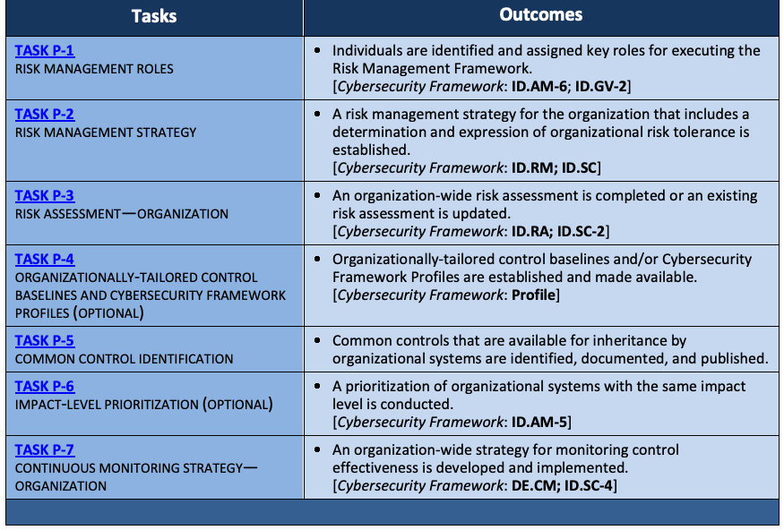
抽出したテキスト（原本と未照合・参考）
Tasks Outcomes TASK P-1 • Individuals are identified and assigned key roles for executing the RISK MANAGEMENT ROLES Risk Management Framework. [Cybersecurity Framework: ID.AM-6; ID.GV-2] TASK P-2 • A risk management strategy for the organization that includes a RISK MANAGEMENT STRATEGY determination and expression of organizational risk tolerance is established. [Cybersecurity Framework: ID.RM; ID.SC] TASK P-3 • An organization-wide risk assessment is completed or an existing RISK ASSESSMENT—ORGANIZATION risk assessment is updated. [Cybersecurity Framework: ID.RA; ID.SC-2] TASK P-4 • Organizationally-tailored control baselines and/or Cybersecurity ORGANIZATIONALLY-TAILORED CONTROL Framework Profiles are established and made available. BASELINES AND CYBERSECURITY FRAMEWORK [Cybersecurity Framework: Profile] PROFILES (OPTIONAL) TASK P-5 • Common controls that are available for inheritance by COMMON CONTROL IDENTIFICATION organizational systems are identified, documented, and published. TASK P-6 • A prioritization of organizational systems with the same impact IMPACT-LEVEL PRIORITIZATION (OPTIONAL) level is conducted. [Cybersecurity Framework: ID.AM-5] TASK P-7 • An organization-wide strategy for monitoring control CONTINUOUS MONITORING STRATEGY— effectiveness is developed and implemented. ORGANIZATION [Cybersecurity Framework: DE.CM; ID.SC-4]抽出したテキストの訳（原本と未照合・参考）
タスク／成果 タスク P-1 • リスク管理の役割：リスク管理フレームワークを実行するための主要な役割を担う個人が特定され、任命される。[Cybersecurity Framework: ID.AM-6; ID.GV-2] タスク P-2 • リスク管理戦略：組織のリスク許容度の判断および表明を含む、組織のリスク管理戦略が策定される。[Cybersecurity Framework: ID.RM; ID.SC] タスク P-3 • リスク評価—組織：組織全体のリスク評価が完了するか、既存のリスク評価が更新される。[Cybersecurity Framework: ID.RA; ID.SC-2] タスク P-4 • 組織に合わせて調整した管理策ベースラインおよび／またはサイバーセキュリティ・フレームワーク・プロファイルが策定され、利用可能になる（任意）。[Cybersecurity Framework: Profile] タスク P-5 • 共通管理策の特定：組織のシステムが継承できる共通管理策が特定され、文書化され、公開される。 タスク P-6 • 影響度レベルによる優先順位付け：同じ影響度レベルの組織システムについて優先順位付けを行う（任意）。[Cybersecurity Framework: ID.AM-5] タスク P-7 • 継続的モニタリング戦略—組織：管理策の有効性をモニタリングする組織全体の戦略が策定され、実施される。[Cybersecurity Framework: DE.CM; ID.SC-4]抽出したテキストの訳（原本と未照合・参考）
タスク P-2 リスク管理戦略抽出したテキストの訳（原本と未照合・参考）
タスク P-3 リスク評価—組織Quick link to summary table for RMF tasks, responsibilities, and supporting roles.
RMFのタスク、責任、および支援役割の一覧表へのクイックリンク。
RISK MANAGEMENT ROLES
リスク管理上の役割
TASK P-1 Identify and assign individuals to specific roles associated with security and privacy risk management.
タスク P-1 セキュリティリスクとプライバシーリスクの管理に関連する特定の役割に、担当者を特定して割り当てる。
Potential Inputs: Organizational security and privacy policies and procedures; organizational charts.
潜在的な入力：組織のセキュリティおよびプライバシー方針と手順；組織図。
Expected Outputs: Documented Risk Management Framework role assignments.
期待される出力：文書化されたリスク管理フレームワークの役割割当て。
Primary Responsibility: Head of Agency; Chief Information Officer; Senior Agency Official for Privacy.
主たる責任：機関の長；最高情報責任者；プライバシー担当機関上級職員。
Supporting Roles: Authorizing Official or Authorizing Official Designated Representative; Senior Accountable Official for Risk Management or Risk Executive (Function); Senior Agency Information Security Officer.
支援役割：認可担当者または認可担当者の指定代理人；リスク管理担当上級責任者またはリスクエグゼクティブ（機能）；機関上級情報セキュリティ担当官。
Discussion: The roles and responsibilities of key participants in risk management processes are described in Appendix D. The roles and responsibilities may include personnel that are internal or external to the organization, as appropriate. Since organizations have different missions, functions, and organizational structures, there may be differences in naming conventions for risk management roles and how specific responsibilities are allocated among organizational personnel (e.g., multiple individuals filling a single role or one individual filling multiple roles). In either situation, the basic risk management functions remain the same. Organizations ensure that there are no conflicts of interest when assigning the same individual to multiple risk management roles. For example, authorizing officials cannot occupy the role of system owner or common control provider for systems or common controls they are authorizing. In addition, combining multiple roles for security and privacy requires care because the two disciplines may require different expertise, and in some circumstances, the priorities may be competing. Some roles may be allocated to a group or an office rather than to an individual, for example, control assessor, risk executive (function), or system administrator.
考察：リスク管理プロセスにおける主要な参加者の役割と責任は、付録Dに記載されている。必要に応じて、役割と責任には組織の内部または外部の人員が含まれる場合がある。組織によってミッション、機能、および組織構造が異なるため、リスク管理上の役割の命名規則や、組織の要員間で特定の責任をどのように割り当てるかにも違いがあり得る（例：1つの役割を複数の個人が担う、または1人が複数の役割を担う）。いずれの場合も、基本的なリスク管理機能は変わらない。組織は、同一人物を複数のリスク管理上の役割に割り当てる際、利益相反が生じないようにする。たとえば、認可担当者は、自らが認可するシステムまたは共通管理策について、システム所有者または共通管理策プロバイダーの役割を担うことはできない。さらに、セキュリティとプライバシーの複数の役割を兼任させる場合は注意が必要である。両分野では異なる専門知識が求められる場合があり、状況によっては優先事項が競合するためである。管理策評価者、リスクエグゼクティブ（機能）、システム管理者などの役割は、個人ではなくグループまたは部門に割り当ててもよい。
References: [SP 800-160 v1] (Human Resource Management Process); [SP 800-181]; [NIST CSF] (Core [Identify Function]).
参考文献：[SP 800-160 v1]（人的資源管理プロセス）；[SP 800-181]；[NIST CSF]（コア［識別機能］）。
RISK MANAGEMENT STRATEGY
リスク管理戦略
TASK P-2 Establish a risk management strategy for the organization that includes a determination of risk tolerance.
タスク P-2 リスク許容度の決定を含む、組織のリスク管理戦略を確立する。
Potential Inputs: Organizational mission statement; organizational policies; organizational risk assumptions, constraints, priorities and trade-offs.
潜在的な入力：組織のミッション声明；組織方針；組織のリスクに関する前提、制約、優先事項、およびトレードオフ。
Expected Outputs: Risk management strategy and statement of risk tolerance inclusive of information security and privacy risk.
期待される出力：情報セキュリティおよびプライバシーリスクを含むリスク管理戦略とリスク許容度の表明。
Primary Responsibility: Head of Agency.
主たる責任：機関の長。
Supporting Roles: Senior Accountable Official for Risk Management or Risk Executive (Function); Chief Information Officer; Senior Agency Information Security Officer; Senior Agency Official for Privacy.
支援役割：リスク管理担当上級責任者またはリスクエグゼクティブ（機能）；最高情報責任者；機関上級情報セキュリティ担当官；プライバシー担当機関上級職員。
Discussion: Risk tolerance is the degree of risk or uncertainty that is acceptable to an organization. Risk tolerance affects all parts of the organization’s risk management process, having a direct impact on the risk management decisions made by senior leaders or executives throughout the organization and providing important constraints on those decisions. The risk management strategy guides and informs risk-based decisions including how security and privacy risk is framed, assessed, responded to, and monitored. The risk management strategy may be composed of a single document, or separate security and privacy risk management documents.54 The risk management strategy makes explicit the threats, assumptions, constraints, priorities, trade-offs, and risk tolerance used for making investment and operational decisions. This strategy includes the strategic-level decisions and considerations for how senior leaders and executives are to manage security and privacy risks (including supply chain risks) to organizational operations, organizational assets, individuals, other organizations, and the Nation. The risk management strategy includes an expression of organizational risk tolerance; acceptable risk assessment methodologies and risk response strategies; a process for consistently evaluating security and privacy risks organization-wide; and approaches for monitoring risk over time. As organizations define and implement the risk management strategies, policies, procedures, and processes, it is important that they include SCRM considerations. The risk management strategy for security and privacy connects security and privacy programs with the management control systems established in the organization’s Enterprise Risk Management strategy.55
考察：リスク許容度とは、組織にとって受容可能なリスクまたは不確実性の程度である。リスク許容度は組織のリスク管理プロセスのあらゆる部分に影響し、組織全体の上級リーダーや幹部が行うリスク管理の決定に直接影響を与え、その決定に対する重要な制約となる。リスク管理戦略は、セキュリティリスクとプライバシーリスクをどのように枠付けし、評価し、対応し、モニタリングするかを含め、リスクベースの決定の指針と判断材料になる。リスク管理戦略は、単一の文書で構成してもよいし、セキュリティとプライバシーのリスク管理の文書を別々に作成してもよい。54 リスク管理戦略は、投資と運用の決定に用いる脅威、前提、制約、優先順位、トレードオフ、リスク許容度を明示する。この戦略には、上級リーダーと幹部が、組織の業務、組織の資産、個人、他の組織、および国家に対するセキュリティリスクとプライバシーリスク（サプライチェーンリスクを含む）をどのように管理するかについての、戦略レベルの決定と考慮事項が含まれる。リスク管理戦略には、組織のリスク許容度の表明、受容可能なリスク評価手法とリスク対応戦略、組織全体でセキュリティリスクとプライバシーリスクを一貫して評価するプロセス、およびリスクを継続的にモニタリングするアプローチが含まれる。組織がリスク管理の戦略、方針、手順、プロセスを定義し実施する際には、SCRM の考慮事項を含めることが重要である。セキュリティとプライバシーのリスク管理戦略は、セキュリティプログラムとプライバシープログラムを、組織の Enterprise Risk Management 戦略で確立された管理統制システムと結びつける。55
References: [SP 800-30]; [SP 800-39] (Organization Level); [SP 800-160 v1] (Risk Management, Decision Management, Quality Assurance, Quality Management, Project Assessment and Control Processes); [SP 800-161]; [IR 8062]; [IR 8179] (Criticality Analysis Process B); [NIST CSF] (Core [Identify Function]).
参考文献：[SP 800-30]、[SP 800-39]（組織レベル）、[SP 800-160 v1]（リスク管理、意思決定管理、品質保証、品質管理、プロジェクト評価・管理の各プロセス）、[SP 800-161]、[IR 8062]、[IR 8179]（重要度分析プロセスB）、[NIST CSF]（コア［識別機能］）。
RISK ASSESSMENT—ORGANIZATION
リスク評価—組織
TASK P-3 Assess organization-wide security and privacy risk and update the risk assessment results on an ongoing basis.
タスク P-3 組織全体のセキュリティリスクとプライバシーリスクを評価し、リスク評価の結果を継続的に更新する。
Potential Inputs: Risk management strategy; mission or business objectives; current threat information; system-level security and privacy risk assessment results; supply chain risk assessment results; previous organization-level security and privacy risk assessment results; information sharing agreements or memoranda of understanding; security and privacy information from continuous monitoring.
潜在的な入力：リスク管理戦略；ミッションまたは事業目標；最新の脅威情報；システムレベルのセキュリティおよびプライバシーリスク評価結果；サプライチェーンリスク評価結果；過去の組織レベルのセキュリティおよびプライバシーリスク評価結果；情報共有契約または覚書；継続的モニタリングから得られるセキュリティおよびプライバシー情報。
Expected Outputs: Organization-level risk assessment results.
期待される出力：組織レベルのリスク評価結果。
Primary Responsibility: Senior Accountable Official for Risk Management or Risk Executive (Function); Senior Agency Information Security Officer; Senior Agency Official for Privacy.
主たる責任：リスク管理担当上級責任者またはリスクエグゼクティブ（機能）；機関上級情報セキュリティ担当官；プライバシー担当機関上級職員。
Supporting Roles: Chief Information Officer; Mission or Business Owner; Authorizing Official or Authorizing Official Designated Representative.
支援役割：最高情報責任者；ミッションまたは事業の所有者；認可担当者または認可担当者の指定代理人。
Discussion: Risk assessment at the organizational level leverages aggregated information from system-level risk assessment results, continuous monitoring, and any strategic risk considerations relevant to the organization. The organization considers the totality of risk from the operation and use of its information systems, from information exchange and connections with other internally and externally owned systems, and from the use of external providers. For example, the organization may review the risk related to its enterprise architecture and information systems of varying impact levels residing on the same network and whether higher impact systems are segregated from lower impact systems or systems operated and maintained by external providers. The organization may also consider the variability of environments that may exist within the organization (e.g., different locations serving different missions/business processes) and the need to account for such variability in risk assessments. Risk assessments of the organization’s supply chain may be conducted as well. Risk assessment results may be used to help organizations establish a Cybersecurity Framework Profile.
考察：組織レベルのリスク評価では、システムレベルのリスク評価結果、継続的モニタリング、および組織に関連する戦略的なリスクの考慮事項から集約した情報を活用する。組織は、自組織の情報システムの運用と利用、組織内外で所有される他のシステムとの情報交換や接続、および外部プロバイダの利用から生じるリスクの全体を考慮する。たとえば、組織は、自組織のエンタープライズアーキテクチャや、同一ネットワーク上に存在する影響レベルの異なる情報システムに関するリスクを検討し、影響度の高いシステムが、影響度の低いシステムや外部プロバイダが運用・保守するシステムから分離されているかどうかを確認することがある。また組織は、組織内に存在しうる環境の多様性（例：異なるミッション／業務プロセスを担う異なる拠点）と、そうした多様性をリスク評価で考慮する必要性を検討することもある。組織のサプライチェーンのリスク評価を実施することもある。リスク評価の結果は、組織がサイバーセキュリティフレームワークのプロファイルを確立するのに役立てることができる。
References: [SP 800-30]; [SP 800-39] (Organization Level, Mission/Business Process Level); [SP 800-161]; [IR 8062].
参考文献：[SP 800-30]；[SP 800-39]（組織レベル、ミッション／事業プロセスレベル）；[SP 800-161]；[IR 8062]。
ORGANIZATIONALLY-TAILORED CONTROL BASELINES AND CYBERSECURITY FRAMEWORK
組織に合わせて調整した管理策ベースラインおよびサイバーセキュリティ・フレームワーク
PROFILES (Optional)
プロファイル（任意）
TASK P-4 Establish, document, and publish organizationally-tailored control baselines and/or Cybersecurity Framework Profiles.
タスク P-4 組織向けにテーラリングした管理策ベースラインおよび／またはサイバーセキュリティフレームワークのプロファイルを確立し、文書化し、公開する。
Potential Inputs: Documented security and privacy requirements directing the use of organizationally-tailored control baselines; mission or business objectives; enterprise architecture; security architecture; privacy architecture; organization- and system-level risk assessment results; list of common control providers and common controls available for inheritance; NIST Special Publication 800-53B control baselines.56
想定される入力：組織独自にテーラリングした管理策ベースラインの使用を指示する、文書化されたセキュリティ要件及びプライバシー要件；ミッション又はビジネス目標；エンタープライズアーキテクチャ；セキュリティアーキテクチャ；プライバシーアーキテクチャ；組織レベル及びシステムレベルのリスクアセスメント結果；共通管理策提供者及び継承可能な共通管理策の一覧；NIST Special Publication 800-53B の管理策ベースライン。56
Expected Outputs: List of approved or directed organizationally-tailored control baselines; [NIST CSF] Profiles.
期待される出力：承認または指示された、組織に合わせて調整した管理策ベースラインの一覧；[NIST CSF]プロファイル。
Primary Responsibility: Mission or Business Owner; Senior Accountable Official for Risk Management or Risk Executive (Function).
主たる責任：ミッションまたは事業の所有者；リスク管理担当上級責任者またはリスクエグゼクティブ（機能）。
Supporting Roles: Chief Information Officer; Authorizing Official or Authorizing Official Designated Representative; Senior Agency Information Security Officer; Senior Agency Official for Privacy.
支援役割：最高情報責任者；認可担当者または認可担当者の指定代理人；機関上級情報セキュリティ担当官；プライバシー担当機関上級職員。
Discussion: To address the organizational mission or business need for specialized sets of controls to reduce risk, organizationally-tailored control baselines may be developed for organization-wide use.57 An organizationally-tailored baseline provides a fully specified set of controls, control enhancements, and supplemental guidance derived from established control baselines described in [SP 800-53B]. The tailoring process can also be guided and informed by the requirements engineering process described in [SP 800-160 v1]. Organizations can use the tailored control baseline concept when there is divergence from the specific assumptions used to create the initial control baselines in [SP 800-53B]. This would include, for example, situations when the organization has specific security or privacy risks, has specific mission or business needs, or plans to operate in environments that are not addressed in the initial baselines.
考察：リスクを低減するための特化した管理策セットに対する組織のミッション上又はビジネス上のニーズに対処するため、組織全体で使用する、組織独自にテーラリングした管理策ベースラインを策定することができる。57 組織独自にテーラリングしたベースラインは、[SP 800-53B] に記述された既存の管理策ベースラインから導出した、管理策、管理策の拡張、及び補足ガイダンスを完全に特定したセットを提供する。テーラリングのプロセスは、[SP 800-160 v1] に記述された要求工学プロセスによって方向付け、情報を得ることもできる。組織は、[SP 800-53B] の初期管理策ベースラインを作成する際に用いた特定の前提から乖離がある場合に、テーラリングした管理策ベースラインの概念を用いることができる。これには、例えば、組織が特定のセキュリティリスク若しくはプライバシーリスクを有する場合、特定のミッション上若しくはビジネス上のニーズを有する場合、又は初期ベースラインが対象としていない環境で運用する計画がある場合が含まれる。
Organizationally-tailored baselines and overlays complement the NIST control baselines by providing an opportunity to add or eliminate controls to accommodate organizational requirements while continuing to protect information commensurate with risk. Organizations can use tailored baselines and overlays to customize control baselines by describing control applicability and by providing interpretations for specific technologies; types of missions or business functions, operations, systems, environments of operation, and operating modes; and statutory or regulatory requirements. Multiple customized baselines may be useful for organizations with heterogeneous systems (e.g., organizations that maintain systems with different operating or processing characteristics, or mission or business characteristics).
組織向けに調整されたベースラインおよびオーバーレイは、組織要件に対応するため管理策を追加または削除できるようにし、リスクに見合った情報保護を継続しながら、NISTの管理策ベースラインを補完する。組織は、管理策の適用可能性を記述し、特定の技術、ミッションまたは事業機能の種類、運用、システム、運用環境および運用モード、ならびに法令または規制上の要件に関する解釈を示すことで、調整済みベースラインおよびオーバーレイを用いて管理策ベースラインをカスタマイズできる。異種システムを有する組織（例：運用または処理の特性、あるいはミッションまたは事業上の特性が異なるシステムを運用する組織）では、複数のカスタマイズ済みベースラインが役立つ場合がある。
Organizationally-tailored baselines can establish organization-defined control parameter values for assignment or selection statements in controls and control enhancements that are agreeable to specific communities of interest and can also extend the supplemental guidance where necessary. Tailored baselines may be more stringent or less stringent than the baselines identified in [SP 800-53B] and are applied to multiple systems.
組織向けに調整したベースラインでは、特定の関心コミュニティの合意を得られる管理策および管理策の機能強化に関する割当てまたは選択の記述に対し、組織定義の管理策パラメータ値を設定できる。また、必要に応じて補足ガイダンスを拡充することもできる。調整済みベースラインは、[SP 800-53B]で示されるベースラインより厳格にも緩やかにもでき、複数のシステムに適用される。
Tailored baselines developed outside the organization may also be mandated for use by certain laws, executive orders, directives, regulations, policies, or standards. In some situations, tailoring actions may be restricted or limited by the developer of the tailored baseline or by the issuing authority for the tailored baseline. Tailored baselines (or overlays) have been developed by communities of interest for cloud and shared systems, services, and applications; industrial control systems; privacy; national security systems; weapons and space-based systems; high value assets;58 mobile device management; federal public key infrastructure; and privacy risks.
翻訳準備中
Organizations may also benefit from developing one or more Cybersecurity Framework Profiles. A Cybersecurity Framework Profile uses the Subcategories in the Framework Core to align cybersecurity outcomes with mission or business requirements, risk tolerance, and resources of the organization.59 The prioritized list of cybersecurity outcomes developed at the organization and mission/business process levels can be helpful in facilitating consistent, risk-based decisions at the system level. The Subcategories identified in the applicable Cybersecurity Framework Profiles can also be used to guide and inform the development of the tailored control baselines described above.
翻訳準備中
References: [SP 800-53]; [SP 800-53B]; [SP 800-160 v1] (Business or Mission Analysis and Stakeholder Needs and Requirements Definition Processes); [NIST CSF] (Core, Profiles).
参考文献：[SP 800-53]；[SP 800-53B]；[SP 800-160 v1]（事業またはミッション分析、ならびに利害関係者のニーズおよび要件定義のプロセス）；[NIST CSF]（コア、プロファイル）。
COMMON CONTROL IDENTIFICATION
共通管理策の特定
TASK P-5 Identify, document, and publish organization-wide common controls that are available for inheritance by organizational systems.
翻訳準備中
Potential Inputs: Documented security and privacy requirements; existing common control providers and associated security and privacy plans; information security and privacy program plans; organization- and system-level security and privacy risk assessment results.
潜在的な入力：文書化されたセキュリティおよびプライバシー要件；既存の共通管理策プロバイダーと関連するセキュリティ計画およびプライバシー計画；情報セキュリティ・プログラム計画およびプライバシー・プログラム計画；組織レベルおよびシステムレベルのセキュリティおよびプライバシーリスク評価結果。
Expected Outputs: List of common control providers and common controls available for inheritance; security and privacy plans (or equivalent documents) providing a description of the common control implementation (including inputs, expected behavior, and expected outputs).
期待される出力：共通管理策プロバイダーと継承可能な共通管理策の一覧；共通管理策の実装（入力、期待される動作、期待される出力を含む）を記述するセキュリティ計画およびプライバシー計画（または同等の文書）。
Primary Responsibility: Senior Agency Information Security Officer; Senior Agency Official for Privacy.
主たる責任：機関上級情報セキュリティ担当官；プライバシー担当機関上級職員。
Supporting Roles: Mission or Business Owner; Senior Accountable Official for Risk Management or Risk Executive (Function); Chief Information Officer; Authorizing Official or Authorizing Official Designated Representative; Common Control Provider; System Owner.
翻訳準備中
Discussion: Common controls are controls that can be inherited by one or more information systems.60 Common controls can include controls from any [SP 800-53] control family, for example, physical and environmental protection controls, system boundary and monitoring controls, personnel security controls, policies and procedures, acquisition controls, account and identity management controls, audit log and accountability controls, or complaint management controls for receiving privacy inquiries from the public. Organizations identify and select the set of common controls and allocate those controls to the organizational entities designated as common control providers. Common controls may differ based upon a variety of factors, such as hosting location, system architecture, and the structure of the organization. The organization-wide list of common controls takes these factors into account. Common controls can also be identified at different levels of the organization (e.g., corporate, department, or agency level; bureau or subcomponent level; or individual program level). Organizations may establish one or more lists of common controls that can be inherited by information systems. A requirement may not be fully met by a common control. In such cases, the control is considered a hybrid control and is noted as such by the organization, including specifying which parts of the control requirement are provided for inheritance by the common control and which parts are to be provided at the system level.
翻訳準備中
When there are multiple sources of common controls, organizations specify the common control provider (i.e., who is providing the controls and through what venue, for example, shared services, specific systems, or within a specific type of architecture) and which systems or types of systems can inherit the controls. Common control listings are communicated to system owners, so they are aware of the security and privacy capabilities that are available from the organization through inheritance. System owners are not required to assess common controls that are inherited by their systems or document common control implementation details; that is the responsibility of the common control providers. Likewise, common control providers are not required to have visibility into the system-level details of those systems that are inheriting the common controls they are providing.
共通管理策の提供元が複数ある場合、組織は共通管理策プロバイダー（すなわち、誰が、どの提供形態で管理策を提供するか。例：共有サービス、特定のシステム、特定のアーキテクチャ内）と、その管理策を継承できるシステムまたはシステムの種類を明示する。共通管理策の一覧をシステム所有者に伝え、組織から継承できるセキュリティおよびプライバシー能力を把握できるようにする。システム所有者は、自らのシステムが継承する共通管理策を評価したり、その実装の詳細を文書化したりする必要はない。それらは共通管理策プロバイダーの責任である。同様に、共通管理策プロバイダーは、自らが提供する共通管理策を継承するシステムのシステムレベルの詳細を把握する必要はない。
Risk assessment results can be used when identifying common controls to determine if the controls available for inheritance satisfy the security and privacy requirements for organizational systems and the environments in which those systems operate (including the identification of potential single points of failure). When the common controls provided by the organization are determined to be insufficient for the information systems inheriting those controls, system owners can supplement the common controls with system-specific or hybrid controls to achieve the required protection for their systems or accept greater risk with the acknowledgement and approval of the organization.
リスク評価結果は、共通管理策を特定する際に、継承可能な管理策が組織のシステムおよびその運用環境に対するセキュリティおよびプライバシー要件を満たすかどうか（潜在的な単一障害点の特定を含む）を判断するために利用できる。組織が提供する共通管理策では、それを継承する情報システムにとって不十分と判断された場合、システム所有者は、必要な保護を実現するためにシステム固有またはハイブリッドの管理策を共通管理策に追加するか、組織の認識と承認を得て、より高いリスクを受容できる。
Common control providers execute the RMF steps to implement, assess, and monitor the controls designated as common controls. Common control providers may also be system owners when the common controls are resident within an information system. Organizations select senior officials or executives to serve as authorizing officials for common controls. The senior agency official for privacy is responsible for designating common privacy controls and for documenting them in the organization’s privacy program plan. Authorizing officials are responsible for accepting security and privacy risk resulting from the use of common controls inherited by organizational systems.
共通管理策プロバイダーは、共通管理策として指定された管理策を実装、評価、およびモニタリングするため、RMFの各ステップを実行する。共通管理策が情報システム内に存在する場合、共通管理策プロバイダーがシステム所有者を兼ねることもある。組織は、共通管理策の認可担当者として上級職員または幹部を選任する。プライバシー担当機関上級職員は、共通プライバシー管理策を指定し、組織のプライバシー・プログラム計画に記録する責任を負う。認可担当者は、組織のシステムが継承した共通管理策の使用に伴うセキュリティおよびプライバシーリスクを受容する責任を負う。
Common control providers are responsible for documenting common controls in security and privacy plans (or equivalent documents prescribed by the organization); ensuring that the common controls are implemented and assessed for effectiveness by qualified assessors and that assessment findings are documented in assessment reports; producing a plan of action and milestones for common controls determined to have unacceptable deficiencies and targeted for remediation; receiving authorization for the common controls from the designated authorizing official; and monitoring control effectiveness on an ongoing basis. Plans, assessment reports, and plans of action and milestones for common controls (or a summary of such information) are made available to system owners and can be used by authorizing officials to guide and inform authorization decisions for systems inheriting common controls. For information about the authorization of common controls, see Task R-4 and Appendix F.
共通管理策プロバイダーは、共通管理策をセキュリティ計画およびプライバシー計画（または組織が定める同等の文書）に記録すること；共通管理策が実装され、適格な評価者によってその有効性が評価されること、および評価結果が評価報告書に記録されることを確保すること；許容できない不備があり是正対象となった共通管理策について、行動計画およびマイルストーンを作成すること；指定された認可担当者から共通管理策の認可を得ること；ならびに管理策の有効性を継続的にモニタリングすることに責任を負う。共通管理策に関する計画、評価報告書、行動計画およびマイルストーン（またはその要約）はシステム所有者に提供され、共通管理策を継承するシステムの認可判断を導き、情報提供するために認可担当者が利用できる。共通管理策の認可については、タスク R-4および付録Fを参照。
References: [SP 800-53].
参考文献：[SP 800-53]。
IMPACT-LEVEL PRIORITIZATION (Optional) 61
影響レベルの優先順位付け（任意）61
TASK P-6 Prioritize organizational systems with the same impact level.
タスク P-6 同じ影響度レベルの組織システムに優先順位を付ける。
Potential Inputs: Security categorization information for organizational systems; system descriptions; organization- and system-level risk assessment results; mission or business objectives; Cybersecurity Framework Profiles.
潜在的な入力：組織システムのセキュリティ分類情報；システムの説明；組織レベルおよびシステムレベルのリスク評価結果；ミッションまたは事業目標；サイバーセキュリティ・フレームワーク・プロファイル。
Expected Outputs: Organizational systems prioritized into low-, moderate-, and high-impact subcategories.
期待される出力：低、中、高の影響度の下位区分に優先順位付けされた組織のシステム。
Primary Responsibility: Senior Accountable Official for Risk Management or Risk Executive (Function).
主たる責任：リスク管理担当上級責任者またはリスクエグゼクティブ（機能）。
Supporting Roles: Senior Agency Information Security Officer; Senior Agency Official for Privacy; Mission or Business Owner; System Owner; Chief Information Officer; Authorizing Official or Authorizing Official Designated Representative.
支援する役割：上級機関情報セキュリティ責任者；プライバシー担当上級機関職員；ミッション又はビジネスオーナー；システムオーナー；最高情報責任者；認可権者又は認可権者指定代理人。
Discussion: This task is carried out only after organizational systems have been categorized (see Task C1). This task requires organizations to first apply the high-water mark concept to each of their information systems categorized in accordance with [FIPS 199] and [FIPS 200].62 The application of the high-water mark concept results in systems designated as low impact, moderate impact, or high impact. Organizations desiring additional granularity in their impact designations for risk-based decision making can use this task to prioritize their systems within each impact level.63 For example, an organization may decide to prioritize its moderate-impact systems by assigning each moderate system to one of three new subcategories: low-moderate systems, moderate-moderate systems, and high-moderate systems. The high-moderate systems assume a higher priority than the moderate-moderate systems and low-moderate systems assume a lower priority than the moderate-moderate systems. The prioritization of its moderate systems gives organizations an opportunity to make more informed decisions regarding control selection and the tailoring of control baselines when responding to identified risks.
考察：このタスクは、組織のシステムを分類した後にのみ実施する（タスク C1 を参照）。このタスクでは、組織はまず、[FIPS 199] 及び [FIPS 200] に従って分類した各情報システムに最高水準点（high-water mark）の概念を適用する必要がある。62 最高水準点の概念を適用すると、システムは低影響、中影響、又は高影響に指定される。リスクに基づく意思決定のために影響度指定をさらに細分化したい組織は、このタスクを用いて各影響レベル内でシステムに優先順位を付けることができる。63 例えば、組織は、各中影響システムを低中システム、中中システム、高中システムという三つの新たな下位区分のいずれかに割り当てることにより、中影響システムに優先順位を付けると決定してもよい。高中システムは中中システムより高い優先度を持ち、低中システムは中中システムより低い優先度を持つ。中影響システムに優先順位を付けることにより、組織は、特定されたリスクに対応する際の管理策の選択及び管理策ベースラインのテーラリングについて、より十分な情報に基づく意思決定を行う機会を得る。
Impact-level prioritization can also be used to determine those systems that are critical or essential to organizational missions and business operations and therefore, organizations can focus on the factors of complexity, aggregation, and system interconnections. Such systems can be identified, for example, by prioritizing high-impact systems into low-high systems, moderate-high systems, and high-high systems. Impact-level prioritizations can be conducted at any level of the organization and are based on security categorization data reported by individual system owners. Impact-level prioritization may necessitate the development of organizationally-tailored baselines to designate the appropriate set of controls for the additional, more granular impact levels.
影響レベルの優先順位付けは、組織のミッション及び業務運営にとって重要又は不可欠なシステムを判断するためにも用いることができ、それにより組織は、複雑性、集約、及びシステム相互接続という要因に注力できる。このようなシステムは、例えば、高影響システムを低高システム、中高システム、高高システムに優先順位付けすることによって特定できる。影響レベルの優先順位付けは組織のどのレベルでも実施でき、個々のシステムオーナーが報告するセキュリティ分類データに基づく。影響レベルの優先順位付けにより、追加されたより細分化した影響レベルに対して適切な管理策セットを指定するため、組織独自にテーラリングしたベースラインの策定が必要になる場合がある。
Cybersecurity Framework Profiles can be used by organizations to support the impact-level prioritization task. The mission and business objectives and prioritized outcomes defined in applicable Cybersecurity Framework Profiles can help distinguish relative priority between systems with the same impact level. Cybersecurity Framework Profiles can be organized around the priority of mission/business objectives of an organization, and those objectives are assigned a relative priority among them. For example, human and environmental safety objectives may be the two most important objectives relevant to a Profile's context. In this example, when performing Task P-6, a system that relates to a human safety objective may be prioritized higher than a system that has the same impact levels but does not relate to the human safety objective.
組織は、影響レベルの優先順位付けタスクを支援するために、サイバーセキュリティフレームワークのプロファイルを用いることができる。該当するサイバーセキュリティフレームワークのプロファイルに定義されたミッション及びビジネス目標並びに優先順位付けされた成果は、同じ影響レベルを持つシステム間の相対的な優先度を区別する助けとなる。サイバーセキュリティフレームワークのプロファイルは、組織のミッション／ビジネス目標の優先度を軸に構成でき、それらの目標には相互の相対的な優先度が割り当てられる。例えば、人の安全と環境の安全という目標が、あるプロファイルの文脈に関係する最も重要な二つの目標であるとする。この例では、タスク P-6 を実施する際、人の安全という目標に関係するシステムは、同じ影響レベルを持つが人の安全という目標に関係しないシステムよりも高い優先度を付けられることがある。
References: [FIPS 199]; [FIPS 200]; [SP 800-30]; [SP 800-39] (Organization and System Levels); [SP 800-59]; [SP 800-60 v1]; [SP 800-60 v2]; [SP 800-160 v1] (System Requirements Definition Process); [IR 8179] (Criticality Analysis Process B); [CNSSI 1253]; [NIST CSF] (Core [Identify Function]; Profiles).
参考文献：[FIPS 199]；[FIPS 200]；[SP 800-30]；[SP 800-39]（組織レベル及びシステムレベル）；[SP 800-59]；[SP 800-60 v1]；[SP 800-60 v2]；[SP 800-160 v1]（システム要求定義プロセス）；[IR 8179]（重要度分析プロセス B）；[CNSSI 1253]；[NIST CSF]（コア［識別機能］；プロファイル）。
CONTINUOUS MONITORING STRATEGY—ORGANIZATION
継続的モニタリング戦略—組織
TASK P-7 Develop and implement an organization-wide strategy for continuously monitoring control effectiveness.
タスク P-7 管理策の有効性を継続的に監視するための組織全体の戦略を策定し、実施する。
Potential Inputs: Risk management strategy; organization- and system-level risk assessment results; organizational security and privacy policies.
潜在的な入力：リスク管理戦略；組織レベルおよびシステムレベルのリスク評価結果；組織のセキュリティおよびプライバシー方針。
Expected Outputs: An implemented organizational continuous monitoring strategy.
期待される出力：実装済みの組織的な継続的モニタリング戦略。
Primary Responsibility: Senior Accountable Official for Risk Management or Risk Executive (Function).
主たる責任：リスク管理担当上級責任者またはリスクエグゼクティブ（機能）。
Supporting Roles: Chief Information Officer; Senior Agency Information Security Officer; Senior Agency Official for Privacy; Mission or Business Owner; System Owner; Authorizing Official or Authorizing Official Designated Representative.
支援役割：最高情報責任者；機関上級情報セキュリティ担当官；プライバシー担当機関上級職員；ミッションまたは事業の所有者；システム所有者；認可担当者または認可担当者の指定代理人。
Discussion: An important aspect of risk management is the ability to monitor the security and privacy posture across the organization and the effectiveness of controls implemented within or inherited by organizational systems on an ongoing basis.64 An effective organization-wide continuous monitoring strategy is essential to efficiently and cost-effectively carry out such monitoring. Continuous monitoring strategies can also include supply chain risk considerations, for example, regularly reviewing supplier foreign ownership, control, or influence (FOCI), monitoring inventory forecasts, or requiring on-going audits of suppliers. The implementation of a robust and comprehensive continuous monitoring program helps an organization understand the security and privacy posture of its information systems. It also facilitates ongoing authorization after the initial system or common control authorizations. This includes the potential for changing missions or business functions, stakeholders, technologies, vulnerabilities, threats, risks, and suppliers of systems, components, or services.
考察：リスク管理の重要な側面は、組織全体のセキュリティおよびプライバシー態勢と、組織の情報システム内で実装された、またはそれらのシステムが継承した管理策の有効性を継続的にモニタリングできることである。64 このようなモニタリングを効率的かつ費用対効果の高い形で実施するには、効果的な組織全体の継続的モニタリング戦略が不可欠である。継続的モニタリング戦略には、サプライチェーンリスクに関する考慮事項を含めることもできる。たとえば、サプライヤーの外国所有、支配、または影響（FOCI）を定期的に見直すこと、在庫予測をモニタリングすること、またはサプライヤーに継続的な監査を求めることなどである。堅牢で包括的な継続的モニタリング・プログラムを実装すると、組織は情報システムのセキュリティおよびプライバシー態勢を把握しやすくなる。また、システムまたは共通管理策の初回認可後の継続的な認可を容易にする。これには、ミッションまたは事業機能、利害関係者、技術、脆弱性、脅威、リスク、ならびにシステム、コンポーネント、またはサービスのサプライヤーが変化する可能性も含まれる。
The organizational continuous monitoring strategy addresses monitoring requirements at the organization, mission/business process, and information system levels. The continuous monitoring strategy identifies the minimum monitoring frequency for implemented controls across the organization; defines the ongoing control assessment approach; and describes how ongoing assessments are to be conducted (e.g., addressing the use and management of automated tools, and instructions for ongoing assessment of controls for which monitoring cannot be automated). The continuous monitoring strategy may also define security and privacy reporting requirements including recipients of the reports. The criteria for determining the minimum frequency for control monitoring is established in collaboration with organizational officials (e.g., senior accountable official for risk management or risk executive [function)]; senior agency information security officer; senior agency official for privacy; chief information officer; system owners; common control providers; and authorizing officials or their designated representatives). An organizational risk assessment can be used to guide and inform the frequency of monitoring.
組織の継続的モニタリング戦略では、組織、ミッション／事業プロセス、および情報システムの各レベルにおけるモニタリング要件を扱う。この戦略では、組織全体で実装済みの管理策をモニタリングする最低頻度を特定し、継続的な管理策評価の方法を定め、継続評価の実施方法（例：自動化ツールの利用および管理、ならびに自動化できない管理策の継続評価手順）を説明する。継続的モニタリング戦略では、報告書の受領者を含むセキュリティおよびプライバシー報告要件も定める場合がある。管理策モニタリングの最低頻度を決定する基準は、組織の当局者と協力して定める（例：リスク管理担当上級責任者またはリスクエグゼクティブ（機能）；機関上級情報セキュリティ担当官；プライバシー担当機関上級職員；最高情報責任者；システム所有者；共通管理策プロバイダー；認可担当者またはその指定代理人）。組織のリスク評価は、モニタリング頻度の設定を導き、参考にするために利用できる。
The use of automation facilitates a greater frequency and volume of control assessments as part of the monitoring process. The ongoing monitoring of controls using automated tools and supporting databases facilitates near real-time risk management for information systems and supports ongoing authorization and efficient use of resources. The senior accountable official for risk management or the risk executive (function) approves the continuous monitoring strategy including the minimum frequency with which controls are to be monitored.
自動化を用いると、モニタリングプロセスの一環として、管理策評価の頻度と量を増やせる。自動化ツールおよび支援データベースを用いて管理策を継続的にモニタリングすると、情報システムのリスクをほぼリアルタイムで管理でき、継続的な認可とリソースの効率的な利用を支援する。リスク管理担当上級責任者またはリスクエグゼクティブ（機能）は、管理策をモニタリングする最低頻度を含め、継続的モニタリング戦略を承認する。
References: [SP 800-30]; [SP 800-39] (Organization, Mission or Business Process, System Levels); [SP 800-53]; [SP 800-53A]; [SP 800-137]; [SP 800-161]; [IR 8011 v1]; [IR 8062]; [NIST CSF] (Core [Identify, Detect Functions]); [CNSSI 1253].
参考文献：[SP 800-30]；[SP 800-39]（組織レベル、ミッションまたは事業プロセスレベル、システムレベル）；[SP 800-53]；[SP 800-53A]；[SP 800-137]；[SP 800-161]；[IR 8011 v1]；[IR 8062]；[NIST CSF]（コア［識別機能、検知機能］）；[CNSSI 1253]。
MISSION/BUSINESS PROCESS (LEVEL 2) CONSIDERATIONS
ミッション／事業プロセス（レベル2）の考慮事項
Mission/business process considerations are addressed in the RMF Prepare-Organization Level step and the RMF Prepare-System Level step by specifying mission/business process concerns; by identifying the mission or business owners in primary or supporting roles; and by identifying the mission or business objectives. Task P-8 and Task P-9 from the RMF Prepare-System Level step are mission/business process level tasks conducted with a system-level specific focus.
ミッション／事業プロセス上の考慮事項は、RMFの準備—組織レベルのステップおよび準備—システムレベルのステップで、ミッション／事業プロセスに関する懸念を明記し、ミッションまたは事業の所有者を主たる役割または支援役割として特定し、ミッションまたは事業目標を特定することによって扱う。RMFの準備—システムレベルのタスク P-8 およびタスク P-9 は、システムレベルに固有の焦点を持って実施する、ミッション／事業プロセスレベルのタスクである。
PREPARE TASKS—SYSTEM LEVEL
準備タスク—システムレベル
Table 2 provides a summary of tasks and expected outcomes for the RMF Prepare step at the system level. Applicable Cybersecurity Framework constructs are also provided.
表2に、システムレベルのRMF準備ステップにおけるタスクと期待される成果の概要を示す。該当するサイバーセキュリティ・フレームワークの構成要素も示す。
TABLE 2: PREPARE TASKS AND OUTCOMES—SYSTEM LEVEL
表2：準備タスクと成果—システムレベル
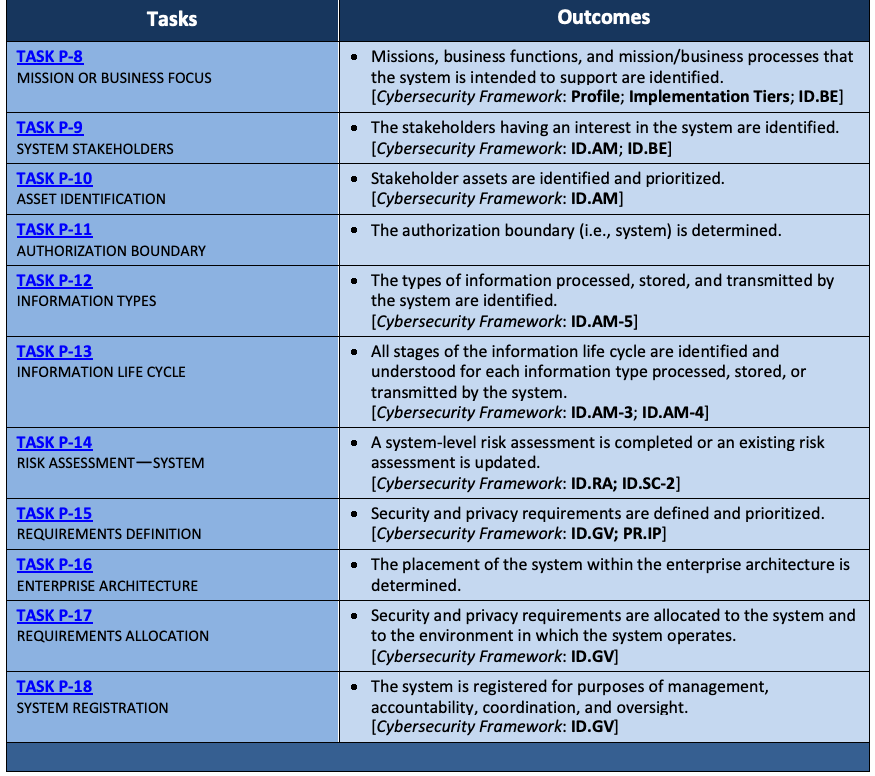
抽出したテキスト（原本と未照合・参考）
Tasks Outcomes TASK P-8 • Missions, business functions, and mission/business processes that MISSION OR BUSINESS FOCUS the system is intended to support are identified. [Cybersecurity Framework: Profile; Implementation Tiers; ID.BE] TASK P-9 • The stakeholders having an interest in the system are identified. SYSTEM STAKEHOLDERS [Cybersecurity Framework: ID.AM; ID.BE] TASK P-10 • Stakeholder assets are identified and prioritized. ASSET IDENTIFICATION [Cybersecurity Framework: ID.AM] TASK P-11 • The authorization boundary (i.e., system) is determined. AUTHORIZATION BOUNDARY TASK P-12 • The types of information processed, stored, and transmitted by INFORMATION TYPES the system are identified. [Cybersecurity Framework: ID.AM-5] TASK P-13 • All stages of the information life cycle are identified and INFORMATION LIFE CYCLE understood for each information type processed, stored, or transmitted by the system. [Cybersecurity Framework: ID.AM-3; ID.AM-4] TASK P-14 • A system-level risk assessment is completed or an existing risk RISK ASSESSMENT—SYSTEM assessment is updated. [Cybersecurity Framework: ID.RA; ID.SC-2] TASK P-15 • Security and privacy requirements are defined and prioritized. REQUIREMENTS DEFINITION [Cybersecurity Framework: ID.GV; PR.IP] TASK P-16 • The placement of the system within the enterprise architecture is ENTERPRISE ARCHITECTURE determined. TASK P-17 • Security and privacy requirements are allocated to the system and REQUIREMENTS ALLOCATION to the environment in which the system operates. [Cybersecurity Framework: ID.GV] TASK P-18 • The system is registered for purposes of management, SYSTEM REGISTRATION accountability, coordination, and oversight. [Cybersecurity Framework: ID.GV]抽出したテキストの訳（原本と未照合・参考）
タスク／成果 タスク P-8 • ミッションまたは事業への重点：システムが支援するミッション、事業機能、およびミッション／事業プロセスを特定する。[Cybersecurity Framework: Profile; Implementation Tiers; ID.BE] タスク P-9 • システム利害関係者：システムに利害関係を持つ利害関係者を特定する。[Cybersecurity Framework: ID.AM; ID.BE] タスク P-10 • 資産の特定：利害関係者の資産を特定し、優先順位を付ける。[Cybersecurity Framework: ID.AM] タスク P-11 • 認可境界：認可境界（すなわち、システム）を決定する。 タスク P-12 • 情報の種類：システムが処理、保存、および伝送する情報の種類を特定する。[Cybersecurity Framework: ID.AM-5] タスク P-13 • 情報ライフサイクル：システムが処理、保存、または伝送する各情報の種類について、情報ライフサイクルのすべての段階を特定し、理解する。[Cybersecurity Framework: ID.AM-3; ID.AM-4] タスク P-14 • リスク評価—システム：システムレベルのリスク評価を完了するか、既存のリスク評価を更新する。[Cybersecurity Framework: ID.RA; ID.SC-2] タスク P-15 • 要件定義：セキュリティおよびプライバシー要件を定義し、優先順位を付ける。[Cybersecurity Framework: ID.GV; PR.IP] タスク P-16 • エンタープライズ・アーキテクチャ：エンタープライズ・アーキテクチャ内でのシステムの配置を決定する。 タスク P-17 • 要件の割当て：セキュリティおよびプライバシー要件をシステムと、そのシステムが運用される環境に割り当てる。[Cybersecurity Framework: ID.GV] タスク P-18 • システム登録：管理、説明責任、調整、および監督を目的としてシステムを登録する。[Cybersecurity Framework: ID.GV]抽出したテキストの訳（原本と未照合・参考）
タスク P-13 情報ライフサイクル抽出したテキストの訳（原本と未照合・参考）
タスク P-14 リスク評価—システム抽出したテキストの訳（原本と未照合・参考）
タスク P-18 システム登録Quick link to summary table for RMF tasks, responsibilities, and supporting roles.
RMFのタスク、責任、および支援役割の一覧表へのクイックリンク。
MISSION OR BUSINESS FOCUS
ミッションまたは事業への重点
TASK P-8 Identify the missions, business functions, and mission/business processes that the system is intended to support.
タスク P-8 システムが支援することを意図しているミッション、ビジネス機能、及びミッション／ビジネスプロセスを特定する。
Potential Inputs: Organizational mission statement; organizational policies; mission/business process information; system stakeholder information; Cybersecurity Framework Profiles; requests for proposal or other acquisition documents; concept of operations.
潜在的な入力：組織のミッション声明；組織方針；ミッション／事業プロセス情報；システム利害関係者情報；サイバーセキュリティ・フレームワーク・プロファイル；提案依頼書またはその他の調達文書；運用概念。
Expected Outputs: Missions, business functions, and mission/business processes that the system will support.
期待される出力：システムが支援するミッション、事業機能、およびミッション／事業プロセス。
Primary Responsibility: Mission or Business Owner.
主たる責任：ミッションまたは事業の所有者。
Supporting Roles: Authorizing Official or Authorizing Official Designated Representative; System Owner; Information Owner or Steward; Chief Information Officer; Senior Agency Information Security Officer; Senior Agency Official for Privacy.
支援役割：認可担当者または認可担当者の指定代理人；システム所有者；情報所有者または管理者；最高情報責任者；機関上級情報セキュリティ担当官；プライバシー担当機関上級職員。
System Development Life Cycle Phase: New – Initiation (concept/requirements definition).
システム開発ライフサイクルの段階：新規—開始（概念／要件定義）。
Existing – Operations/Maintenance.
既存—運用／保守。
Discussion: Organizational missions and business functions influence the design and development of the mission or business processes that are created to carry out those missions and business functions. The prioritization of missions and business functions drives investment strategies, funding decisions, resource prioritization, and risk decisions—and thus affects the existing enterprise architecture and development of the associated security and privacy architectures. Information is elicited from stakeholders to acquire a more thorough understanding of the missions, business functions, and mission/business processes of the organization from a system security and privacy perspective.
考察：組織のミッションおよび事業機能は、それらのミッションおよび事業機能を遂行するために作成されるミッションまたは事業プロセスの設計と開発に影響する。ミッションおよび事業機能の優先順位は、投資戦略、資金調達の判断、リソースの優先順位付け、およびリスク判断を左右し、それによって既存のエンタープライズ・アーキテクチャと、関連するセキュリティおよびプライバシー・アーキテクチャの開発にも影響する。システムのセキュリティおよびプライバシーの観点から、組織のミッション、事業機能、およびミッション／事業プロセスをより深く理解するため、利害関係者から情報を収集する。
References: [SP 800-39] (Organization and Mission/Business Process Levels); [SP 800-64]; [SP 800-160 v1] (Business or Mission Analysis, Portfolio Management, and Project Planning Processes); [NIST CSF] (Core [Identify Function]); [IR 8179] (Criticality Analysis Process B).
参考文献：[SP 800-39]（組織レベルおよびミッション／事業プロセスレベル）；[SP 800-64]；[SP 800-160 v1]（事業またはミッション分析、ポートフォリオ管理、およびプロジェクト計画プロセス）；[NIST CSF]（コア［識別機能］）；[IR 8179]（重要度分析プロセスB）。
SYSTEM STAKEHOLDERS
システム利害関係者
TASK P-9 Identify stakeholders who have an interest in the design, development, implementation, assessment, operation, maintenance, or disposal of the system.
タスク P-9 システムの設計、開発、実装、評価、運用、保守、または廃止に利害関係を持つ利害関係者を特定する。
Potential Inputs: Organizational mission statement; mission or business objectives; missions, business functions, and mission/business processes that the system will support; other mission/business process information; organizational security and privacy policies and procedures; organizational charts; information about individuals or groups (internal and external) that have an interest in and decision-making responsibility for the system.
潜在的な入力：組織のミッション声明；ミッションまたは事業目標；システムが支援するミッション、事業機能、およびミッション／事業プロセス；その他のミッション／事業プロセス情報；組織のセキュリティおよびプライバシー方針と手順；組織図；システムに利害関係を持ち、システムに関する意思決定責任を負う内部および外部の個人またはグループに関する情報。
Expected Outputs: List of system stakeholders.
期待される出力：システム利害関係者の一覧。
Primary Responsibility: Mission or Business Owner; System Owner.
主たる責任：ミッションまたは事業の所有者；システム所有者。
Supporting Roles: Chief Information Officer; Authorizing Official or Authorizing Official Designated Representative; Information Owner or Steward; Senior Agency Information Security Officer; Senior Agency Official for Privacy; Chief Acquisition Officer.
支援役割：最高情報責任者；認可担当者または認可担当者の指定代理人；情報所有者または管理者；機関上級情報セキュリティ担当官；プライバシー担当機関上級職員；最高調達責任者。
System Development Life Cycle Phase: New – Initiation (concept/requirements definition).
システム開発ライフサイクルの段階：新規—開始（概念／要件定義）。
Existing – Operations/Maintenance.
既存—運用／保守。
Discussion: Stakeholders include individuals, organizations, or representatives that have an interest in the system throughout the system life cycle—for design, development, implementation, delivery, operation, and sustainment of the system. It also includes all aspects of the supply chain. Stakeholders may reside in the same organization or they may reside in different organizations in situations when there is a common interest by those organizations in the information system. For example, this may occur during the development, operation, and maintenance of cloud-based systems, shared service systems, or any system where organizations may be adversely impacted by a breach or a compromise to the system or for a variety of considerations related to the supply chain. Communication among stakeholders is important during every step in the RMF and throughout the SDLC to ensure that security and privacy requirements are satisfied, concerns and issues are addressed expeditiously, and risk management processes are carried out effectively.
考察：利害関係者には、システムのライフサイクルを通じて、設計、開発、実装、提供、運用、および維持に関心を持つ個人、組織、またはその代表者が含まれる。サプライチェーンのあらゆる側面も含まれる。利害関係者は同じ組織に属する場合も、情報システムに共通の利害を持つ組織間で異なる組織に属する場合もある。たとえば、クラウドベースのシステム、共有サービスシステム、またはシステム侵害や侵害行為によって組織が悪影響を受ける可能性のあるシステムの開発、運用、保守中に、あるいはサプライチェーンに関するさまざまな考慮事項に関連して、このような状況が生じる場合がある。セキュリティおよびプライバシー要件が満たされ、懸念や問題が速やかに解決され、リスク管理プロセスが効果的に実施されるよう、RMFの各ステップおよびSDLC全体を通じて利害関係者間のコミュニケーションが重要である。
References: [SP 800-39] (Organization Level); [SP 800-64]; [SP 800-160 v1] (Stakeholder Needs and Requirements Definition and Portfolio Management Processes); [SP 800-161]; [NIST CSF] (Core [Identify Function]).
参考文献：[SP 800-39]（組織レベル）；[SP 800-64]；[SP 800-160 v1]（利害関係者のニーズおよび要件定義、ならびにポートフォリオ管理プロセス）；[SP 800-161]；[NIST CSF]（コア［識別機能］）。
ASSET IDENTIFICATION
資産の特定
TASK P-10 Identify assets that require protection.
タスク P-10 保護を必要とする資産を特定する。
Potential Inputs: Missions, business functions, and mission/business processes the information system will support; business impact analyses; internal stakeholders; system stakeholder information; system information; information about other systems that interact with the system.
潜在的な入力：情報システムが支援するミッション、事業機能、およびミッション／事業プロセス；事業影響分析；内部の利害関係者；システム利害関係者に関する情報；システム情報；当該システムと相互作用する他のシステムに関する情報。
Expected Outputs: Set of assets to be protected.
期待される出力：保護対象の資産一式。
Primary Responsibility: System Owner.
主たる責任：システム所有者。
Supporting Roles: Authorizing Official or Authorizing Official Designated Representative; Mission or Business Owner; Information Owner or Steward; Senior Agency Information Security Officer; Senior Agency Official for Privacy; System Administrator.
支援役割：認可担当者または認可担当者の指定代理人；ミッションまたは事業の所有者；情報所有者または管理者；機関上級情報セキュリティ担当官；プライバシー担当機関上級職員；システム管理者。
System Development Life Cycle Phase: New – Initiation (concept/requirements definition).
システム開発ライフサイクルの段階：新規—開始（概念／要件定義）。
Existing – Operations/Maintenance.
既存—運用／保守。
Discussion: Assets are tangible and intangible items that are of value to achievement of mission or business objectives. Tangible assets are physical in nature and include physical/environmental elements (e.g., non-digital information, structures, facilities), human elements, and technology/machine elements (e.g., hardware elements, mechanisms, and networks). In contrast, intangible assets are not physical in nature and include mission and business processes, functions, digital information and data, firmware, software, and services. Information assets can be tangible or intangible assets, and can include the information needed to carry out missions or business functions, to deliver services, and for system management/operation; controlled unclassified information and classified information; and all forms of documentation associated with the information system. Intangible assets can also include the image or reputation of an organization, and the privacy interests of the individuals whose information will be processed by the system. The organization defines the scope of stakeholder assets to be considered for protection. The assets that require protection are identified based on stakeholder concerns and the contexts in which the assets are used. This includes the missions or business functions of the organization; the other systems that interact with the system; and stakeholders whose assets are utilized by the mission or business functions or by the system. Assets can be documented in the system security and privacy plans.
考察：資産とは、ミッションまたは事業目標の達成に価値を持つ有形および無形の項目である。有形資産は物理的なものであり、物理的／環境的要素（例：非デジタル情報、構造物、施設）、人的要素、および技術／機械的要素（例：ハードウェア要素、機構、ネットワーク）を含む。これに対し、無形資産は物理的なものではなく、ミッションおよび事業プロセス、機能、デジタル情報およびデータ、ファームウェア、ソフトウェア、ならびにサービスを含む。情報資産は有形資産または無形資産であり得る。ミッションまたは事業機能の遂行、サービスの提供、システムの管理／運用に必要な情報、管理対象非機密情報および機密情報、ならびに情報システムに関連するあらゆる形式の文書が含まれる。無形資産には、組織のイメージまたは評判、ならびにシステムが処理する情報に関係する個人のプライバシー上の利益も含まれる。保護対象として考慮する利害関係者資産の範囲は、組織が定義する。保護を要する資産は、利害関係者の懸念と、資産が利用される状況に基づいて特定する。これには、組織のミッションまたは事業機能、当該システムと相互作用する他のシステム、ならびにミッションまたは事業機能もしくは当該システムが資産を利用する利害関係者が含まれる。資産は、システムのセキュリティ計画およびプライバシー計画に記録できる。
References: [SP 800-39] (Organization Level); [SP 800-64]; [SP 800-160 v1] (Stakeholder Needs and Requirements Definition Process); [IR 8179] (Criticality Analysis Process C); [NIST CSF] (Core [Identify Function]); [NARA CUI].
参考文献：[SP 800-39]（組織レベル）；[SP 800-64]；[SP 800-160 v1]（利害関係者のニーズおよび要件定義プロセス）；[IR 8179]（重要度分析プロセスC）；[NIST CSF]（コア［識別機能］）；[NARA CUI]。
AUTHORIZATION BOUNDARY
認可境界
TASK P-11 Determine the authorization boundary of the system.
タスク P-11 システムの認可境界を決定する。
Potential Inputs: System design documentation; network diagrams; system stakeholder information; asset information; network and/or enterprise architecture diagrams; organizational structure (charts, information).
潜在的な入力：システム設計文書；ネットワーク図；システム利害関係者に関する情報；資産情報；ネットワークおよび／またはエンタープライズ・アーキテクチャ図；組織構造（組織図、情報）。
Expected Outputs: Documented authorization boundary.
期待される出力：文書化された認可境界。
Primary Responsibility: Authorizing Official.
主たる責任：認可担当者。
Supporting Roles: Chief Information Officer; System Owner; Mission or Business Owner; Senior Agency Information Security Officer; Senior Agency Official for Privacy; Enterprise Architect.
支援役割：最高情報責任者；システム所有者；ミッションまたは事業の所有者；機関上級情報セキュリティ担当官；プライバシー担当機関上級職員；エンタープライズ・アーキテクト。
System Development Life Cycle Phase: New – Initiation (concept/requirements definition).
システム開発ライフサイクルの段階：新規—開始（概念／要件定義）。
Existing – Operations/Maintenance.
既存—運用／保守。
Discussion: Authorization boundaries establish the scope of protection for information systems (i.e., what the organization agrees to protect under its management control or within the scope of its responsibilities). Authorization boundaries are determined by authorizing officials with input from the system owner based on mission, management, or budgetary responsibility (see Appendix F). A clear delineation of authorization boundaries is important for accountability and for security categorization, especially in situations where lower-impact systems are connected to higher-impact systems, or when external providers are responsible for the operation or maintenance of a system. Each system includes a set of elements (i.e., information resources)65 organized to achieve one or more purposes and to support the organization’s missions and business processes. Each system element is implemented in a way that allows the organization to satisfy specified security and privacy requirements. System elements include human elements, technology/machine elements, and physical/environmental elements.
考察：認可境界は、情報システムの保護対象範囲（すなわち、組織が自らの管理下で、または責任範囲内で保護することに合意した対象）を定める。認可境界は、ミッション、管理、または予算に関する責任に基づき、システム所有者の意見を踏まえて認可担当者が決定する（付録Fを参照）。認可境界を明確に区分することは、説明責任とセキュリティ分類にとって重要である。特に、低影響度システムが高影響度システムに接続される場合や、外部プロバイダーがシステムの運用または保守に責任を負う場合に重要となる。各システムは、1つ以上の目的を達成し、組織のミッションおよび業務プロセスを支援するために編成された一連の要素（すなわち、情報資源）65を含む。各システム要素は、組織が指定されたセキュリティおよびプライバシー要件を満たせるよう実装される。システム要素には、人的要素、技術／機械的要素、および物理的／環境的要素が含まれる。
The term system is used to define the set of system elements, system element interconnections, and the environment that is the focus of the RMF implementation (see Figure 5). The system is included in a single authorization boundary to ensure accountability. For systems processing PII, the privacy and security programs collaborate to develop a common understanding of authorization boundaries. To conduct effective risk assessments and select appropriate controls, privacy and security programs provide a clear and consistent understanding of what constitutes the authorization boundary. Understanding the authorization boundary and what will occur beyond it may influence controls selected and how they are implemented. For example, if a function of the system includes sharing PII externally, robust encryption controls may be selected for PII transmitted from the system.
「システム」という用語は、RMFの実装対象となるシステム要素、システム要素間の相互接続、および環境の集合を定義するために用いる（図5を参照）。説明責任を確保するため、システムは単一の認可境界に含める。PIIを処理するシステムについては、プライバシー・プログラムとセキュリティ・プログラムが連携し、認可境界について共通の理解を形成する。効果的なリスク評価を実施し、適切な管理策を選択するには、認可境界を構成するものについて、プライバシー・プログラムとセキュリティ・プログラムが明確で一貫した理解を持つ必要がある。認可境界と、その境界の外で何が行われるかを理解することは、選択する管理策やその実装方法に影響する場合がある。たとえば、システムの機能としてPIIを外部と共有する場合、システムから送信するPIIに対し、堅牢な暗号化管理策を選択できる。
Similarly, for systems either partially or wholly managed, maintained, or operated by external providers, an agreement clearly describing authorization boundaries ensures accountability. Privacy and security programs collaborate with providers to develop a common understanding of authorization boundaries. Formal agreements with external providers (e.g. contracts) may be used to delineate what constitutes authorization boundaries. Understanding such boundaries facilitates the selection of appropriate controls to manage supply chain risk.
同様に、外部プロバイダーが一部または全部を管理、保守、もしくは運用するシステムについては、認可境界を明確に記述した合意を結ぶことで説明責任を確保できる。プライバシー・プログラムとセキュリティ・プログラムは、プロバイダーと連携して認可境界について共通の理解を形成する。外部プロバイダーとの正式な合意（例：契約）を用いて、認可境界を構成するものを明確にできる。そのような境界を理解することは、サプライチェーンリスクを管理する適切な管理策の選択に役立つ。
References: [SP 800-18]; [SP 800-39] (System Level); [SP 800-47]; [SP 800-64]; [SP 800-160 v1] (System Requirements Definition Process); [NIST CSF] (Core [Identify Function]).
参考文献：[SP 800-18]；[SP 800-39]（システムレベル）；[SP 800-47]；[SP 800-64]；[SP 800-160 v1]（システム要件定義プロセス）；[NIST CSF]（コア［識別機能］）。
INFORMATION TYPES
情報の種類
TASK P-12 Identify the types of information to be processed, stored, and transmitted by the system.
タスク P-12 システムが処理、保存、および伝送する情報の種類を特定する。
Potential Inputs: System design documentation; assets to be protected; mission/business process information; system design documentation.
潜在的な入力：システム設計文書；保護対象の資産；ミッション／事業プロセス情報；システム設計文書。
Expected Outputs: A list of information types for the system.
期待される出力：システムの情報の種類の一覧。
Primary Responsibility: System Owner; Information Owner or Steward.
主たる責任：システムオーナー；情報オーナー又はスチュワード。
Supporting Role: Mission or Business Owner; System Security Officer; System Privacy Officer.66
支援する役割：ミッション又はビジネスオーナー；システムセキュリティ担当者；システムプライバシー担当者。66
System Development Life Cycle Phase: New – Initiation (concept/requirements definition).
システム開発ライフサイクルの段階：新規—開始（概念／要件定義）。
Existing – Operations/Maintenance.
既存—運用／保守。
Discussion: Identifying the types of information needed to support organizational missions, business functions, and mission/business processes is an important step in developing security and privacy plans for the system and a precondition for determining the security categorization. [NARA CUI] defines the information types that require protection as part of its Controlled Unclassified Information (CUI) program, in accordance with laws, regulations, or governmentwide policies. Organizations may define additional information types needed to support organizational missions, business functions, and mission/business processes that are not defined in the CUI Registry or in [SP 800-60 v2]. Identified information types are confirmed by the information owners or stewards and documented in the system security and privacy plans.
考察：組織のミッション、事業機能、およびミッション／事業プロセスを支えるために必要な情報の種類を特定することは、システムのセキュリティ計画およびプライバシー計画を策定するうえで重要なステップであり、セキュリティ分類を決定するための前提条件である。[NARA CUI]は、法律、規則、または政府全体の方針に従い、管理対象非機密情報（CUI）プログラムの一環として保護が必要な情報の種類を定義している。組織は、CUIレジストリまたは[SP 800-60 v2]で定義されていない情報の種類で、組織のミッション、事業機能、およびミッション／事業プロセスを支援するために必要なものを追加で定義できる。特定された情報の種類は、情報所有者または管理者が確認し、システムのセキュリティ計画およびプライバシー計画に記録する。
References: [OMB A-130]; [NARA CUI]; [SP 800-39] (System Level); [SP 800-60 v1]; [SP 800-60 v2]; [NIST CSF] (Core [Identify Function]).
参考文献：[OMB A-130]；[NARA CUI]；[SP 800-39]（システムレベル）；[SP 800-60 v1]；[SP 800-60 v2]；[NIST CSF]（コア［識別機能］）。
INFORMATION LIFE CYCLE
情報ライフサイクル
TASK P-13 Identify and understand all stages of the information life cycle for each information type
タスク P-13 情報ライフサイクルのすべての段階を特定し、理解する。対象は、各情報の種類のうち、
processed, stored, or transmitted by the system.
システムによって処理、保存、または伝送されるものである。
Potential Inputs: Missions, business functions, and mission/business processes the system will support; system stakeholder information; authorization boundary information; information about other systems that interact with the system (e.g., information exchange/connection agreements); system design documentation; system element information; list of system information types.
潜在的な入力：システムが支援するミッション、事業機能、およびミッション／事業プロセス；システム利害関係者情報；認可境界情報；当該システムと相互作用する他のシステムに関する情報（例：情報交換／接続に関する合意）；システム設計文書；システム要素情報；システムの情報の種類の一覧。
Expected Outputs: Documentation of the stages through which information passes in the system, such as a data map or model illustrating how information is structured or is processed by the system throughout its life cycle. Such documentation includes, for example, data flow diagrams, entity relationship diagrams, database schemas, and data dictionaries.
期待される出力：情報がシステム内を通過する各段階の文書。たとえば、情報がどのように構造化され、ライフサイクル全体を通じてシステムによってどのように処理されるかを示すデータマップまたはモデルがある。そのような文書には、データフロー図、実体関連図、データベース・スキーマ、およびデータ辞書などが含まれる。
Primary Responsibility: Senior Agency Official for Privacy; System Owner; Information Owner or Steward.
主たる責任：プライバシー担当機関上級職員；システム所有者；情報所有者または管理者。
Supporting Roles: Chief Information Officer; Mission or Business Owner; Security Architect; Privacy Architect; Enterprise Architect; Systems Security Engineer; Privacy Engineer.
支援役割：最高情報責任者；ミッションまたは事業の所有者；セキュリティ・アーキテクト；プライバシー・アーキテクト；エンタープライズ・アーキテクト；システムセキュリティエンジニア；プライバシーエンジニア。
System Development Life Cycle Phase: New – Initiation (concept/requirements definition).
システム開発ライフサイクルの段階：新規—開始（概念／要件定義）。
Existing – Operations/Maintenance.
既存—運用／保守。
Discussion: The information life cycle describes the stages through which information passes, typically characterized as creation or collection, processing, dissemination, use, storage, and disposition, to include destruction and deletion [OMB A-130]. Identifying and understanding how each information type is processed during all stages of the life cycle helps organizations identify considerations for protecting the information, informs the organization’s security and privacy risk assessments, and informs the selection and implementation of controls. Identification and understanding of the information life cycle facilitates the employment of practices to help ensure, for example, that organizations have the authority to collect or create information, develop rules related to the processing of information in accordance with its impact level, create agreements for information sharing, and follow retention schedules for the storage and disposition of information.
考察：情報ライフサイクルとは、情報が通過する各段階を表し、通常、作成または収集、処理、配布、利用、保存、および廃棄（破壊および削除を含む）として特徴付けられる[OMB A-130]。ライフサイクルのすべての段階で各情報種類がどのように処理されるかを特定し理解することで、組織は情報保護上の考慮事項を特定し、セキュリティおよびプライバシーリスク評価に情報を提供し、管理策の選択と実装に役立てることができる。情報ライフサイクルを特定して理解することは、たとえば、組織が情報を収集または作成する権限を有すること、影響度レベルに応じて情報の処理に関する規則を策定すること、情報共有に関する合意を作成すること、および情報の保存と廃棄に関する保存期間表に従うことを確実にするのに役立つ慣行の導入を促進する。
Using tools such as a data map enables organizations to understand how information is being processed so that organizations can better assess where security and privacy risks could arise and where controls could be applied most effectively. It is important for organizations to consider the appropriate delineation of the authorization boundary and the information system’s interaction with other systems because the way information enters and leaves the system can affect the security and privacy risk assessments. The elements of the system are identified with sufficient granularity to support such risk assessments.
データマップなどのツールを用いると、組織は情報がどのように処理されているかを理解し、セキュリティおよびプライバシーリスクがどこで生じる可能性があるか、また管理策をどこに適用すれば最も効果的かをより適切に評価できる。認可境界を適切に区分すること、および情報システムが他のシステムとどのように相互作用するかを組織が考慮することが重要である。情報がシステムに入る方法とシステムから出る方法は、セキュリティおよびプライバシーリスク評価に影響するためである。こうしたリスク評価を支援できるだけの十分な細かさで、システムの要素を特定する。
Identifying and understanding the information life cycle is particularly relevant for the assessment of security and privacy risks since information may be processed by a system in any of the SDLC phases. For example, in the testing and integration phase of the SDLC, processing actual (i.e., live) data would likely raise security and privacy risks, but using substitute (i.e., synthetic) data may allow an equivalent benefit in terms of system testing while reducing risk.
情報ライフサイクルの特定と理解は、SDLCのどの段階でもシステムが情報を処理する場合があるため、セキュリティおよびプライバシーリスクの評価にとりわけ関係する。たとえば、SDLCの試験および統合段階で実データ（すなわち、実運用データ）を処理すると、セキュリティおよびプライバシーリスクが高まる可能性がある。一方、代替データ（すなわち、合成データ）を使用すれば、リスクを低減しながらシステム試験における同等の効果を得られる場合がある。
References: [OMB A-130]; [OMB M-13-13]; [NARA RECM]; [NIST CSF] (Core [Identify Function]); [IR 8062].
参考文献：[OMB A-130]；[OMB M-13-13]；[NARA RECM]；[NIST CSF]（コア［識別機能］）；[IR 8062]。
RISK ASSESSMENT—SYSTEM
リスク評価—システム
TASK P-14 Conduct a system-level risk assessment and update the risk assessment results on an ongoing
タスク P-14 システムレベルのリスク評価を実施し、リスク評価結果を更新する。これを継続的
basis.
に行う。
Potential Inputs: Assets to be protected; missions, business functions, and mission/business processes the system will support; business impact analyses or criticality analyses; system stakeholder information; information about other systems that interact with the system; provider information; threat information; data map; system design documentation; Cybersecurity Framework Profiles; risk management strategy; organization-level risk assessment results.
潜在的な入力：保護対象の資産；システムが支援するミッション、事業機能、およびミッション／事業プロセス；事業影響分析または重要度分析；システム利害関係者情報；当該システムと相互作用する他のシステムに関する情報；プロバイダー情報；脅威情報；データマップ；システム設計文書；サイバーセキュリティ・フレームワーク・プロファイル；リスク管理戦略；組織レベルのリスク評価結果。
Expected Outputs: Security and privacy risk assessment reports.
期待される出力：セキュリティおよびプライバシーのリスク評価報告書。
Primary Responsibility: System Owner; System Security Officer; System Privacy Officer.
主たる責任：システム所有者；システムセキュリティ責任者；システムプライバシー責任者。
Supporting Roles: Senior Accountable Official for Risk Management or Risk Executive (Function); Authorizing Official or Authorizing Official Designated Representative; Mission or Business Owner; Information Owner or Steward; Control Assessor.
支援役割：リスク管理担当上級責任者またはリスクエグゼクティブ（機能）；認可担当者または認可担当者の指定代理人；ミッションまたは事業の所有者；情報所有者または管理者；管理策評価者。
System Development Life Cycle Phase: New – Initiation (concept/requirements definition).
システム開発ライフサイクルの段階：新規—開始（概念／要件定義）。
Existing – Operations/Maintenance.
既存—運用／保守。
Discussion: This task may require that organizations conduct security and privacy risk assessments to ensure that each type of risk is fully assessed. Assessment of security risk includes identification of threat sources67 and threat events affecting assets, whether and how the assets are vulnerable to the threats, the likelihood that an asset vulnerability will be exploited by a threat, and the impact (or consequence) of loss of the assets. As a key part of the risk assessment, assets are prioritized based on the adverse impact or consequence of asset loss. The meaning of loss is defined for each asset type to enable a determination of the loss consequence (i.e., the adverse impact of the loss). Loss consequences may be tangible (e.g., monetary, industrial casualties) or intangible (e.g., reputation) and constitute a continuum that spans from partial loss to total loss relative to the asset. Interpretations of information loss may include, for example, loss of possession, destruction, or loss of precision or accuracy. The loss of a function or service may be interpreted as a loss of control, loss of accessibility, loss of the ability to deliver normal function, performance, or behavior, or a limited loss of capability resulting in a level of degradation of function, performance, or behavior. Physical consequences of compromise can include unscheduled production downtime, industrial equipment damage, casualties at the site, environmental disasters and public safety threats. Prioritization of assets is based on asset value, physical consequences, cost of replacement, criticality, impact on image or reputation, or trust by users, by collaborating organizations, or by mission or business partners. The asset priority translates to precedence in allocating resources, determining strength of mechanisms, and defining levels of assurance.
考察：このタスクでは、各種類のリスクが十分に評価されるよう、組織がセキュリティリスクアセスメントとプライバシーリスクアセスメントを実施する必要がある場合がある。セキュリティリスクの評価には、資産に影響する脅威源67と脅威事象の特定、資産が脅威に対して脆弱であるか否かおよびどのように脆弱であるか、資産の脆弱性が脅威によって悪用される可能性、ならびに資産の喪失による影響（または結果）が含まれる。リスクアセスメントの重要な部分として、資産は、資産の喪失がもたらす悪影響または結果に基づいて優先順位が付けられる。喪失の意味は資産の種類ごとに定義され、喪失の結果（すなわち、喪失による悪影響）を判断できるようにする。喪失の結果は、有形のもの（例：金銭的損失、産業上の死傷者）も無形のもの（例：評判）もあり、その資産について、部分的な喪失から全面的な喪失までの連続体をなす。情報の喪失は、たとえば、占有の喪失、破壊、または精度や正確性の喪失として解釈されることがある。機能またはサービスの喪失は、制御の喪失、アクセス可能性の喪失、通常の機能、性能、または挙動を提供する能力の喪失、あるいは機能、性能、または挙動がある程度低下する結果となる能力の限定的な喪失として解釈されることがある。侵害による物理的な結果には、予定外の生産停止、産業設備の損傷、現場での死傷者、環境災害、公共の安全への脅威が含まれうる。資産の優先順位付けは、資産の価値、物理的な結果、交換費用、重要度、イメージや評判への影響、または利用者、連携組織、ミッションもしくは事業のパートナーによる信頼に基づいて行われる。資産の優先度は、リソース配分における優先順位、メカニズムの強度の決定、および保証レベルの定義に反映される。
Privacy risk assessments are conducted to determine the likelihood that a given operation the system is taking when processing PII could create an adverse effect on individuals—and the potential impact on individuals.68 These adverse effects can arise from unauthorized activities that lead to the loss of confidentiality, integrity, or availability in information systems processing PII, or may arise as a byproduct of authorized activities. Privacy risk assessments are influenced by contextual factors. Contextual factors can include, but are not limited to, the sensitivity level of the PII, including specific elements or in aggregate; the types of organizations using or interacting with the system and individuals’ perceptions about the organizations with respect to privacy; individuals’ understanding about the nature and purpose of the processing; and the privacy interests of individuals, technological expertise or demographic characteristics that influence their understanding or behavior. The privacy risks to individuals may affect individuals’ decisions to engage with the system thereby impacting mission or business objectives, or create legal liability, reputational risks, or other types of risks for the organization. Impacts to the organization are not privacy risks. However, these impacts can guide and inform organizational decision-making and influence prioritization and resource allocation for risk response.
プライバシーリスク評価は、PIIを処理する際にシステムが行う特定の処理によって個人に悪影響が生じる可能性と、その影響の大きさを判断するために実施する。68 こうした悪影響は、PIIを処理する情報システムにおける機密性、完全性、または可用性の喪失につながる不正な活動から生じる場合も、許可された活動の副産物として生じる場合もある。プライバシーリスク評価には、状況に応じた要因が影響する。状況要因には、PIIの機微度（個別要素ごと、または集約した場合を含む）、システムを利用またはシステムと相互作用する組織の種類と、それらの組織のプライバシーに関する個人の認識、処理の性質および目的に関する個人の理解、ならびに個人のプライバシー上の利益や、理解または行動に影響を与える技術的知識もしくは人口統計上の特性などが含まれるが、これらに限定されない。個人に対するプライバシーリスクは、個人がシステムを利用するかどうかの判断に影響し、その結果、ミッションまたは事業目標に影響を及ぼしたり、組織に法的責任、評判上のリスク、その他のリスクを生じさせたりする場合がある。組織への影響はプライバシーリスクではない。ただし、組織の意思決定に情報を提供し、リスク対応に関する優先順位付けおよびリソース配分に影響する場合がある。
Risk assessments are also conducted to determine the potential that the use of an external provider for the development, implementation, maintenance, management, operation, or disposition of a system, system element, or service could create a loss, and the potential impact of that loss. The impact may be immediate (e.g., physical theft) or on-going (e.g., the ability of adversaries to replicate critical equipment because of theft). The impact may be endemic (e.g., limited to a single system) or systemic (e.g., including any system that uses a specific type of system component). Supply chain risk assessments consider vulnerabilities which may arise related to the disposition of a system or system element and from the use of external providers. Vulnerabilities in the supply chain may include a lack of traceability or accountability leading to the potential use of counterfeits, insertion of malware, or poor-quality systems. The use of external providers may result in a loss of visibility and control over how systems, system elements, and services are developed, deployed, and maintained. A clear understanding of the threats, vulnerabilities, and potential impacts of an adverse supply chain event can help organizations appropriately balance supply chain risk with risk tolerance. Supply chain risk assessments can include information from supplier audits, reviews, and supply chain intelligence. Organizations develop a strategy for collecting information, including a strategy for collaborating with providers on supply chain risk assessments. Such collaboration helps organizations leverage information from providers, reduce redundancy, identify potential courses of action for risk responses, and reduce the burden on providers.
システム、システム要素、またはサービスの開発、実装、保守、管理、運用、もしくは廃止に外部プロバイダーを利用することで損失が生じる可能性と、その損失の影響を判断するためにも、リスク評価を実施する。影響は直ちに生じる場合（例：物理的な窃盗）も、継続的に生じる場合（例：窃盗により敵対者が重要な機器を複製できるようになること）もある。影響は局所的なもの（例：単一のシステムに限定される）である場合も、システム全体に及ぶもの（例：特定種類のシステム・コンポーネントを使用するあらゆるシステムに及ぶ）である場合もある。サプライチェーンリスク評価では、システムまたはシステム要素の廃止や外部プロバイダーの利用に関連して生じる可能性のある脆弱性を考慮する。サプライチェーンの脆弱性には、追跡可能性または説明責任の欠如により、偽造品の使用、マルウェアの挿入、または品質の低いシステムにつながる可能性が含まれる。外部プロバイダーを利用すると、システム、システム要素、およびサービスがどのように開発、配備、保守されるかについて、可視性と管理能力が失われる場合がある。サプライチェーン上の有害事象に関する脅威、脆弱性、および潜在的影響を明確に理解することで、組織はサプライチェーンリスクとリスク許容度を適切に均衡させることができる。サプライチェーンリスク評価には、サプライヤー監査、レビュー、およびサプライチェーン情報から得た情報を含めることができる。組織は、外部プロバイダーと協力してサプライチェーンリスク評価を行うための戦略を含め、情報を収集する戦略を策定する。この協力により、プロバイダーからの情報を活用し、重複を減らし、リスク対応の選択肢を特定し、プロバイダーの負担を軽減できる。
Risk assessments are conducted throughout the SDLC and support various RMF steps and tasks. Risk assessment results are used to inform security and privacy requirements definition; categorization decisions; the selection, tailoring, implementation, and assessment of controls; authorization decisions; potential courses of action and prioritization for risk responses; and continuous monitoring strategy. Organizations determine the form of risk assessment conducted (including the scope, rigor, and formality of such assessments) and method of reporting results.
リスク評価はSDLC全体を通じて実施され、RMFのさまざまなステップおよびタスクを支援する。リスク評価結果は、セキュリティおよびプライバシー要件の定義、分類の判断、管理策の選択・調整・実装・評価、認可判断、リスク対応のための選択肢および優先順位付け、ならびに継続的モニタリング戦略に情報を提供するために用いられる。組織は、実施するリスク評価の形式（評価の範囲、厳密さ、および形式性を含む）と、結果を報告する方法を決定する。
References: [FIPS 199]; [FIPS 200]; [SP 800-30]; [SP 800-39] (Organization Level); [SP 800-59]; [SP 800-60 v1]; [SP 800-60 v2]; [SP 800-64]; [SP 800-160 v1] (Stakeholder Needs and Requirements Definition and Risk Management Processes); [SP 800-161] (Assess); [IR 8062]; [IR 8179]; [NIST CSF] (Core [Identify Function]); [CNSSI 1253].
参考文献：[FIPS 199]；[FIPS 200]；[SP 800-30]；[SP 800-39]（組織レベル）；[SP 800-59]；[SP 800-60 v1]；[SP 800-60 v2]；[SP 800-64]；[SP 800-160 v1]（利害関係者のニーズおよび要件定義、ならびにリスク管理プロセス）；[SP 800-161]（評価）；[IR 8062]；[IR 8179]；[NIST CSF]（コア［識別機能］）；[CNSSI 1253]。
REQUIREMENTS DEFINITION
要件の定義
TASK P-15 Define the security and privacy requirements for the system and the environment of
タスク P-15 システムおよびその環境に関するセキュリティ要件およびプライバシー要件を定義する。対象とする環境は、
operation.
運用環境である。
Potential Inputs: System design documentation; organization- and system-level risk assessment results; known set of stakeholder assets to be protected; missions, business functions, and mission/business processes the system will support; business impact analyses or criticality analyses; system stakeholder information; data map of the information life cycle for PII; Cybersecurity Framework Profiles; information about other systems that interact with the system; supply chain information; threat information; laws, executive orders, directives, regulations, or policies that apply to the system; risk management strategy.
潜在的な入力：システム設計文書；組織レベルおよびシステムレベルのリスク評価結果；保護対象として既知の利害関係者資産一式；システムが支援するミッション、事業機能、およびミッション／事業プロセス；事業影響分析または重要度分析；システム利害関係者情報；PIIの情報ライフサイクルのデータマップ；サイバーセキュリティ・フレームワーク・プロファイル；当該システムと相互作用する他のシステムに関する情報；サプライチェーン情報；システムに適用される法律、大統領令、指令、規則、または方針；リスク管理戦略。
Expected Outputs: Documented security and privacy requirements.
期待される出力：文書化されたセキュリティおよびプライバシー要件。
Primary Responsibility: Mission or Business Owner; System Owner; Information Owner or Steward; System Privacy Officer.69
主たる責任：ミッションまたは事業の所有者；システム所有者；情報所有者または管理者；システムプライバシー責任者。69
Supporting Roles: Authorizing Official or Authorizing Official Designated Representative; System Security Officer; Senior Agency Information Security Officer; Senior Agency Official for Privacy; Chief Acquisition Officer; Security Architect; Privacy Architect; Enterprise Architect.
支援役割：認可担当者または認可担当者の指定代理人；システムセキュリティ責任者；機関上級情報セキュリティ担当官；プライバシー担当機関上級職員；最高調達責任者；セキュリティ・アーキテクト；プライバシー・アーキテクト；エンタープライズ・アーキテクト。
System Development Life Cycle Phase: New – Initiation (concept/requirements definition).
システム開発ライフサイクルの段階：新規—開始（概念／要件定義）。
Existing – Operations/Maintenance.
既存—運用／保守。
Discussion: Protection needs are an expression of the protection capability required for the system in order to reduce security and privacy risk to an acceptable level while supporting mission or business needs. Protection needs include the security characteristics70 of the system and the security behavior of the system in its intended operational environment and across all system life cycle phases. The protection needs reflect the priorities of stakeholders, results of negotiations among stakeholders in response to conflicts, opposing priorities, contradictions, and stated objectives, and thus, are inherently subjective. The protection needs are documented to help ensure that the reasoning, assumptions, and constraints associated with those needs are available for future reference and to provide traceability to the security and privacy requirements. Security and privacy requirements71 constitute a formal, more granular expression of protection needs across all SDLC phases, the associated life cycle processes, and protections for the assets associated with the system. Security and privacy requirements are obtained from many sources (e.g., laws, executive orders, directives, regulations, policies, standards, mission and business needs, or risk assessments). Security and privacy requirements are an important part of the formal expression of the required characteristics of the system.72 The security and privacy requirements guide and inform the selection of controls for a system and the tailoring activities associated with those controls.
考察：保護ニーズとは、ミッションまたは事業上のニーズを支えながら、セキュリティおよびプライバシーリスクを許容可能な水準まで低減するためにシステムに求められる保護能力を表す。保護ニーズには、システムのセキュリティ特性70と、意図された運用環境およびシステムライフサイクルの全段階におけるシステムのセキュリティ上の挙動が含まれる。保護ニーズには、利害関係者の優先事項、対立、相反する優先事項、矛盾、および明示された目標に応じた利害関係者間の交渉結果が反映されるため、本質的に主観的である。保護ニーズに関する根拠、前提、および制約を将来参照できるようにし、セキュリティおよびプライバシー要件へのトレーサビリティを確保するため、保護ニーズを文書化する。セキュリティおよびプライバシー要件71は、すべてのSDLC段階、関連するライフサイクルプロセス、およびシステムに関連する資産の保護について、保護ニーズを形式的かつより詳細に表現したものである。セキュリティおよびプライバシー要件は、法律、大統領令、指令、規則、方針、標準、ミッションおよび事業上のニーズ、リスク評価など、さまざまな情報源から得られる。セキュリティおよびプライバシー要件は、システムに必要な特性を正式に表現するうえで重要である。72 セキュリティおよびプライバシー要件は、システムの管理策の選択と、それらの管理策に関連する調整活動を導き、情報を提供する。
Organizations can use the Cybersecurity Framework to manage security and privacy requirements and express those requirements in Cybersecurity Framework Profiles defined for the organization. For instance, multiple requirements can be aligned and even deconflicted using the Function-Category-Subcategory structure of the Framework Core. The Profiles can then be used to inform the development of organizationally-tailored control baselines described in the RMF Prepare-Organization Level step, Task P-4.
組織は、サイバーセキュリティ・フレームワークを用いてセキュリティおよびプライバシー要件を管理し、組織向けに定義したサイバーセキュリティ・フレームワーク・プロファイルでそれらの要件を表現できる。たとえば、フレームワーク・コアの機能—カテゴリ—サブカテゴリの構造を用いて、複数の要件を整合させ、競合を解消できる。次に、RMFの準備—組織レベルのステップ、タスク P-4 に記載される、組織向けに調整した管理策ベースラインの策定にプロファイルを活用できる。
References: [SP 800-39] (Organization Level); [SP 800-64]; [SP 800-160 v1] (Stakeholder Needs and Requirements Definition Process); [SP 800-161] (Multi-Tiered Risk Management); [IR 8179]; [NIST CSF] (Core [Protect, Detect, Respond, Recover Functions]; Profiles).
参考文献：[SP 800-39]（組織レベル）；[SP 800-64]；[SP 800-160 v1]（利害関係者のニーズおよび要件定義プロセス）；[SP 800-161]（多層リスク管理）；[IR 8179]；[NIST CSF]（コア［保護、検知、対応、復旧の各機能］；プロファイル）。
ENTERPRISE ARCHITECTURE
エンタープライズ・アーキテクチャ
TASK P-16 Determine the placement of the system within the enterprise architecture.
タスク P-16 エンタープライズ・アーキテクチャ内におけるシステムの配置を決定する。
Potential Inputs: Security and privacy requirements; organization- and system-level risk assessment results; enterprise architecture information; security architecture information; privacy architecture information; asset information.
潜在的な入力：セキュリティおよびプライバシー要件；組織レベルおよびシステムレベルのリスク評価結果；エンタープライズ・アーキテクチャ情報；セキュリティ・アーキテクチャ情報；プライバシー・アーキテクチャ情報；資産情報。
Expected Outputs: Updated enterprise architecture; updated security architecture; updated privacy architecture; plans to use cloud-based systems and shared systems, services, or applications.
期待される出力：更新されたエンタープライズ・アーキテクチャ；更新されたセキュリティ・アーキテクチャ；更新されたプライバシー・アーキテクチャ；クラウドベースのシステムおよび共有システム、サービス、またはアプリケーションを利用する計画。
Primary Responsibility: Mission or Business Owner; Enterprise Architect; Security Architect; Privacy Architect.
主たる責任：ミッションまたは事業の所有者；エンタープライズ・アーキテクト；セキュリティ・アーキテクト；プライバシー・アーキテクト。
Supporting Roles: Chief Information Officer; Authorizing Official or Authorizing Official Designated Representative; Senior Agency Information Security Officer; Senior Agency Official for Privacy; System Owner; Information Owner or Steward.
支援役割：最高情報責任者；認可担当者または認可担当者の指定代理人；機関上級情報セキュリティ担当官；プライバシー担当機関上級職員；システム所有者；情報所有者または管理者。
System Development Life Cycle Phase: New – Initiation (concept/requirements definition).
システム開発ライフサイクルの段階：新規—開始（概念／要件定義）。
Existing – Operations/Maintenance.
既存—運用／保守。
Discussion: Enterprise architecture is a management practice used to maximize the effectiveness of mission/business processes and information resources and to achieve mission and business success. An enterprise architecture can provide greater understanding of information and operational technologies included in the initial design and development of information systems and is a prerequisite for achieving resilience and survivability of those systems in an environment of increasingly sophisticated threats. Enterprise architecture also provides an opportunity for organizations to consolidate, standardize, and optimize information and technology assets. An effectively implemented architecture produces systems that are more transparent and therefore, easier to understand and protect. Enterprise architecture also establishes an unambiguous connection from investments to measurable performance improvements. The placement of a system within the enterprise architecture is important as it provides greater visibility and understanding about the other systems (internal and external) that are connected to the system and can also be used to establish security domains for increased levels of protection for the system.
考察：エンタープライズ・アーキテクチャは、ミッション／事業プロセスおよび情報資源の有効性を最大化し、ミッションおよび事業の成功を達成するための管理手法である。エンタープライズ・アーキテクチャによって、情報システムの初期設計および開発に含まれる情報技術および運用技術をより深く理解できる。また、脅威がますます高度化する環境において、それらのシステムのレジリエンスおよび存続性を実現するための前提条件となる。エンタープライズ・アーキテクチャは、情報資産および技術資産を統合、標準化、最適化する機会も組織に提供する。効果的に実装されたアーキテクチャによって、透明性が高く、理解し保護しやすいシステムが実現する。エンタープライズ・アーキテクチャは、投資と測定可能な業績改善との明確なつながりも確立する。エンタープライズ・アーキテクチャ内にシステムを配置することは重要である。システムに接続されている他のシステム（内部および外部）をより可視化し理解できるほか、システムの保護水準を高めるためのセキュリティドメインの確立にも利用できるためである。
The security architecture and the privacy architecture are integral parts of the enterprise architecture. These architectures represent the parts of the enterprise architecture related to the implementation of security and privacy requirements. The primary purpose of the security and privacy architectures is to ensure that security and privacy requirements are consistently and cost-effectively met in organizational systems and are aligned with the risk management strategy. The security and privacy architectures provide a roadmap that facilitates traceability from the strategic goals and objectives of organizations, through protection needs and security and privacy requirements, to specific security and privacy solutions provided by people, processes, and technologies.
セキュリティ・アーキテクチャおよびプライバシー・アーキテクチャは、エンタープライズ・アーキテクチャに不可欠な部分である。これらのアーキテクチャは、セキュリティおよびプライバシー要件の実装に関係する、エンタープライズ・アーキテクチャの部分を表す。セキュリティ・アーキテクチャおよびプライバシー・アーキテクチャの主な目的は、組織のシステムにおいてセキュリティおよびプライバシー要件を一貫性と費用対効果を保って満たし、リスク管理戦略と整合させることである。これらのアーキテクチャは、組織の戦略目標から保護ニーズ、セキュリティおよびプライバシー要件を経て、人員、プロセス、および技術によって提供される具体的なセキュリティおよびプライバシー解決策に至るまでのトレーサビリティを可能にするロードマップを提供する。
References: [SP 800-39] (Mission/Business Process Level); [SP 800-64]; [SP 800-160 v1] (System Requirements Definition Process); [NIST CSF] (Core [Identify Function]; Profiles); [OMB FEA].
参考文献：[SP 800-39]（ミッション／事業プロセスレベル）；[SP 800-64]；[SP 800-160 v1]（システム要件定義プロセス）；[NIST CSF]（コア［識別機能］；プロファイル）；[OMB FEA]。
REQUIREMENTS ALLOCATION
要件の割当て
TASK P-17 Allocate security and privacy requirements to the system and to the environment of
タスク P-17 セキュリティおよびプライバシー要件をシステムと、そのシステムの運用
operation.
環境に割り当てる。
Potential Inputs: Organization- and system-level risk assessment results; documented security and privacy requirements; organization- and system-level risk assessment results; list of common control providers and common controls available for inheritance; system description; system element information; system component inventory; relevant laws, executive orders, directives, regulations, and policies.
潜在的な入力：組織レベルおよびシステムレベルのリスク評価結果；文書化されたセキュリティおよびプライバシー要件；組織レベルおよびシステムレベルのリスク評価結果；共通管理策プロバイダーと継承可能な共通管理策の一覧；システムの説明；システム要素情報；システム・コンポーネントの一覧；関連する法律、大統領令、指令、規則、および方針。
Expected Outputs: List of security and privacy requirements allocated to the system, system elements, and the environment of operation.
期待される出力：システム、システム要素、および運用環境に割り当てられたセキュリティおよびプライバシー要件の一覧。
Primary Responsibility: Security Architect; Privacy Architect; System Security Officer; System Privacy Officer.
主たる責任：セキュリティ・アーキテクト；プライバシー・アーキテクト；システムセキュリティ責任者；システムプライバシー責任者。
Supporting Roles: Chief Information Officer; Authorizing Official or Authorizing Official Designated Representative; Mission or Business Owner; Senior Agency Information Security Officer; Senior Agency Official for Privacy; System Owner.
支援役割：最高情報責任者；認可担当者または認可担当者の指定代理人；ミッションまたは事業の所有者；機関上級情報セキュリティ担当官；プライバシー担当機関上級職員；システム所有者。
System Development Life Cycle Phase: New – Initiation (concept/requirements definition).
システム開発ライフサイクルの段階：新規—開始（概念／要件定義）。
Existing – Operations/Maintenance.
既存—運用／保守。
Discussion: Security and privacy requirements are allocated to guide and inform control selection and implementation for the organization, system, system elements, and/or environment of operation.73 Requirements allocation identifies where controls will be implemented. The allocation of requirements conserves resources and helps to streamline the risk management process by ensuring that requirements are not implemented on multiple systems or system elements when implementation of a common control or a system-level control on a specific system element provides the needed protection capability.
考察：セキュリティおよびプライバシー要件の割当ては、組織、システム、システム要素、および／または運用環境に対する管理策の選択と実装を導き、情報を提供する。73 要件の割当てによって、管理策を実装する場所が特定される。共通管理策または特定のシステム要素に対するシステムレベルの管理策で必要な保護能力を提供できる場合、複数のシステムまたはシステム要素に同じ要件を重複して実装しないようにすることで、リソースを節約し、リスク管理プロセスを効率化できる。
References: [SP 800-39] (Organization, Mission/Business Process, and System Levels); [SP 800-64]; [SP 800-160 v1] (System Requirements Definition Process); [NIST CSF] (Core [Identify Function]; Profiles); [OMB FEA].
参考文献：[SP 800-39]（組織、ミッション／事業プロセス、およびシステムの各レベル）；[SP 800-64]；[SP 800-160 v1]（システム要件定義プロセス）；[NIST CSF]（コア［識別機能］；プロファイル）；[OMB FEA]。
SYSTEM REGISTRATION
システム登録
TASK P-18 Register the system with organizational program or management offices.
タスク P-18 組織のプログラム担当部門または管理部門にシステムを登録する。
Potential Inputs: Organizational policy on system registration; system information.
潜在的な入力：システム登録に関する組織方針；システム情報。
Expected Outputs: Registered system in accordance with organizational policy.
期待される出力：組織方針に従って登録されたシステム。
Primary Responsibility: System Owner.
主たる責任：システム所有者。
Supporting Role: Mission or Business Owner; Chief Information Officer; System Security Officer; System Privacy Officer.
支援役割：ミッションまたは事業の所有者；最高情報責任者；システムセキュリティ責任者；システムプライバシー責任者。
System Development Life Cycle Phase: New – Initiation (concept/requirements definition).
システム開発ライフサイクルの段階：新規—開始（概念／要件定義）。
Existing – Operations/Maintenance.
既存—運用／保守。
Discussion: System registration, in accordance with organizational policy, serves to inform the governing organization of plans to develop the system or the existence of the system; the key characteristics of the system; and the expected security and privacy implications for the organization due to the operation and use of the system. System registration provides organizations with a management and tracking tool to facilitate bringing the system into the enterprise architecture, implementation of protections that are commensurate with risk, and security and privacy posture reporting in accordance with applicable laws, executive orders, directives, regulations, policies, or standards. As part of the system registration process, organizations add the system to the organization-wide system inventory. System registration information is updated with security categorization and system characterization information upon completion of the Categorize step.
考察：組織方針に従ったシステム登録により、システムの開発計画またはシステムの存在、システムの主要な特性、ならびにシステムの運用および使用によって組織に生じると予想されるセキュリティおよびプライバシー上の影響が、統括組織に伝えられる。システム登録は、システムをエンタープライズ・アーキテクチャに組み入れ、リスクに見合った保護を実装し、適用される法律、大統領令、指令、規則、方針、または標準に従ってセキュリティおよびプライバシー態勢を報告するための、管理および追跡の手段を組織に提供する。システム登録プロセスの一環として、組織全体のシステム一覧に当該システムを追加する。分類ステップの完了後、セキュリティ分類情報およびシステム特性情報を用いてシステム登録情報を更新する。
References: None.
参考文献：なし。
3.2 CATEGORIZE74
3.2 分類 74
Purpose
目的
The purpose of the Categorize step is to inform organizational risk management processes and tasks by determining the adverse impact to organizational operations and assets, individuals, other organizations, and the Nation with respect to the loss of confidentiality, integrity, and availability of organizational systems and the information processed, stored, and transmitted by those systems.
分類ステップの目的は、組織システムおよびそれらのシステムが処理、保存、伝送する情報について、機密性、完全性、および可用性が失われた場合に組織の運用および資産、個人、他の組織、ならびに国家に及ぶ悪影響を判断し、組織のリスク管理プロセスおよびタスクに情報を提供することである。
CATEGORIZE TASKS
分類タスク
Table 3 provides a summary of tasks and expected outcomes for the RMF Categorize step. Applicable Cybersecurity Framework constructs are also provided.
表3に、RMF分類ステップのタスクと期待される成果の概要を示す。該当するサイバーセキュリティ・フレームワークの構成要素も示す。
TABLE 3: CATEGORIZE TASKS AND OUTCOMES
表3：分類タスクと成果
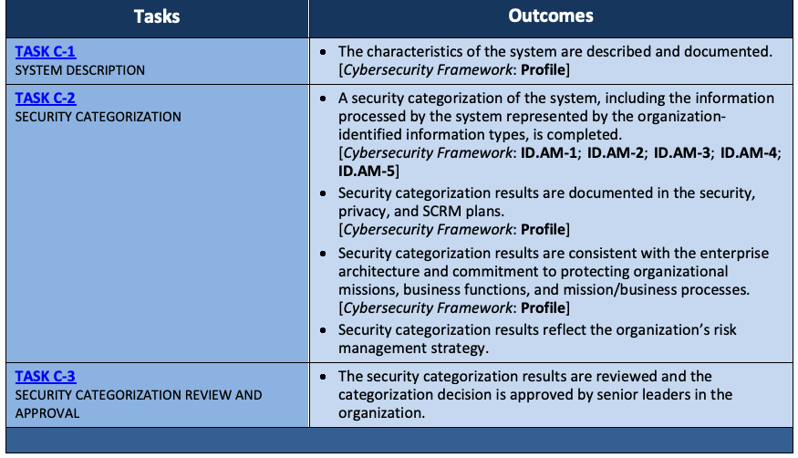
抽出したテキスト（原本と未照合・参考）
Tasks Outcomes TASK C-1 • The characteristics of the system are described and documented. SYSTEM DESCRIPTION [Cybersecurity Framework: Profile] TASK C-2 • A security categorization of the system, including the information SECURITY CATEGORIZATION processed by the system represented by the organization- identified information types, is completed. [Cybersecurity Framework: ID.AM-1; ID.AM-2; ID.AM-3; ID.AM-4; ID.AM-5] • Security categorization results are documented in the security, privacy, and SCRM plans. [Cybersecurity Framework: Profile] • Security categorization results are consistent with the enterprise architecture and commitment to protecting organizational missions, business functions, and mission/business processes. [Cybersecurity Framework: Profile] • Security categorization results reflect the organization’s risk management strategy. TASK C-3 • The security categorization results are reviewed and the SECURITY CATEGORIZATION REVIEW AND categorization decision is approved by senior leaders in the APPROVAL organization.抽出したテキストの訳（原本と未照合・参考）
タスク／成果 タスク C-1 • システムの説明：システムの特性を記述し、文書化する。[Cybersecurity Framework: Profile] タスク C-2 • セキュリティ分類：組織が特定した情報の種類で表される、システムが処理する情報を含め、システムのセキュリティ分類を完了する。[Cybersecurity Framework: ID.AM-1; ID.AM-2; ID.AM-3; ID.AM-4; ID.AM-5] • セキュリティ分類の結果を、セキュリティ計画、プライバシー計画、およびSCRM計画に記録する。[Cybersecurity Framework: Profile] • セキュリティ分類の結果を、エンタープライズ・アーキテクチャならびに組織のミッション、事業機能、およびミッション／事業プロセスを保護するとのコミットメントに整合させる。[Cybersecurity Framework: Profile] • セキュリティ分類の結果に組織のリスク管理戦略を反映させる。 タスク C-3 • セキュリティ分類のレビューおよび承認：セキュリティ分類の結果をレビューし、組織の上級リーダーが分類の判断を承認する。Quick link to summary table for RMF tasks, responsibilities, and supporting roles.
RMFのタスク、責任、および支援役割の一覧表へのクイックリンク。
SYSTEM DESCRIPTION
システムの説明
TASK C-1 Document the characteristics of the system.
タスク C-1 システムの特性を文書化する。
Potential Inputs: System design and requirements documentation; authorization boundary information; list of security and privacy requirements allocated to the system, system elements, and the environment of operation; physical or other processes controlled by system elements; system element information; system component inventory; system element supply chain information, including inventory and supplier information; security categorization; data map of the information life cycle for information types processed, stored, and transmitted by the system; information on system use, users, and roles.
潜在的な入力：システム設計および要件に関する文書；認可境界情報；システム、システム要素、および運用環境に割り当てられたセキュリティおよびプライバシー要件の一覧；システム要素が制御する物理的またはその他のプロセス；システム要素情報；システム・コンポーネントの一覧；一覧およびサプライヤー情報を含むシステム要素のサプライチェーン情報；セキュリティ分類；システムが処理、保存、および伝送する情報の種類に関する情報ライフサイクルのデータマップ；システムの利用、利用者、および役割に関する情報。
Expected Outputs: Documented system description.
期待される出力：文書化されたシステムの説明。
Primary Responsibility: System Owner.
主たる責任：システム所有者。
Supporting Roles: Authorizing Official or Authorizing Official Designated Representative; Information Owner or Steward; System Security Officer; System Privacy Officer.
支援役割：認可担当者または認可担当者の指定代理人；情報所有者または管理者；システムセキュリティ責任者；システムプライバシー責任者。
System Development Life Cycle Phase: New – Initiation (concept/requirements definition).
システム開発ライフサイクルの段階：新規—開始（概念／要件定義）。
Existing – Operations/Maintenance.
既存—運用／保守。
Discussion: A description of the system characteristics is documented in the security and privacy plans, included in attachments to the plans, or referenced in other standard sources for the information generated as part of the SDLC. Duplication of information is avoided, whenever possible. The level of detail in the security and privacy plans is determined by the organization and is commensurate with the security categorization and the security and privacy risk assessments of the system. Information may be added to or updated in the system description as it becomes available during the system life cycle, during the execution of the RMF steps, and as any system characteristics change.
考察：システム特性の説明は、セキュリティ計画およびプライバシー計画に記載するか、計画の添付資料に含めるか、またはSDLCの一環として生成される情報を扱う他の標準的な情報源を参照する。可能な場合は情報の重複を避ける。セキュリティ計画およびプライバシー計画に記載する詳細度は組織が決定し、システムのセキュリティ分類ならびにセキュリティおよびプライバシーリスク評価に見合うものとする。システムライフサイクル中、RMFの各ステップを実行する過程で情報が利用可能になったときや、システム特性が変化したときに、システムの説明に情報を追加または更新できる。
Examples of different types of descriptive information that organizations can include in security and privacy plans include: descriptive name of the system and system identifier; system version or release number; manufacturer and supplier information; individual responsible for the system; system contact information; organization that manages, owns, or controls the system; system location; purpose of the system and missions/business processes supported; how the system is integrated into the enterprise architecture; SDLC phase; results of the categorization process and privacy risk assessment; authorization boundary; laws, directives, policies, regulations, or standards affecting individuals’ privacy and the security of the system; architectural description of the system including network topology; information types; hardware, firmware, and software components that are part of the system; hardware, software, and system interfaces (internal and external); information flows within the system; network connection rules for communicating with external systems; interconnected systems and identifiers for those systems; physical or other processes, components and equipment controlled by system elements; system users (including affiliations, access rights, privileges, citizenship); system provenance in the supply chain; maintenance or other relevant agreements; potential suppliers for replacement components for the system; alternative compatible system components; number and location in inventory of replacement system components; ownership or operation of the system (government-owned, government-operated; government-owned, contractor-operated; contractor-owned, contractor-operated; nonfederal [state and local governments, grantees]); incident response points of contact; authorization date and authorization termination date; and ongoing authorization status. System registration information is updated with the system characterization information (see Task P-18).
組織がセキュリティ計画およびプライバシー計画に含めることのできる記述情報の例には、システムの説明名およびシステム識別子；システムのバージョンまたはリリース番号；製造者およびサプライヤー情報；システムの責任者；システムの連絡先情報；システムを管理、所有、または統制する組織；システムの所在地；システムの目的と、支援するミッション／事業プロセス；エンタープライズ・アーキテクチャへのシステムの統合方法；SDLC段階；分類プロセスおよびプライバシーリスク評価の結果；認可境界；個人のプライバシーおよびシステムのセキュリティに影響する法律、指令、方針、規則、または標準；ネットワーク・トポロジーを含むシステムのアーキテクチャの説明；情報の種類；システムに含まれるハードウェア、ファームウェア、およびソフトウェアのコンポーネント；ハードウェア、ソフトウェア、およびシステムのインターフェース（内部および外部）；システム内の情報フロー；外部システムとの通信に関するネットワーク接続規則；相互接続システムとその識別子；システム要素が制御する物理的またはその他のプロセス、コンポーネント、および機器；所属、アクセス権、特権、市民権を含むシステム利用者；サプライチェーンにおけるシステムの来歴；保守その他の関連合意；システムの交換用コンポーネントの潜在的なサプライヤー；代替可能な互換システム・コンポーネント；交換用システム・コンポーネントの在庫数量および保管場所；システムの所有または運用形態（政府所有・政府運用、政府所有・請負業者運用、請負業者所有・請負業者運用、非連邦政府［州および地方政府、助成金受領者］）；インシデント対応の連絡先；認可日および認可終了日；ならびに継続的な認可の状態がある。システム登録情報は、システム特性情報を用いて更新する（タスク P-18 を参照）。
References: [SP 800-18]; [NIST CSF] (Core [Identify Function]).
参考文献：[SP 800-18]；[NIST CSF]（コア［識別機能］）。
SECURITY CATEGORIZATION
セキュリティ分類
TASK C-2 Categorize the system and document the security categorization results.
タスク C-2 システムを分類し、セキュリティ分類の結果を文書化する。
Potential Inputs: Risk management strategy; organizational risk tolerance; authorization boundary (i.e., system) information; organization- and system-level risk assessment results; information types processed, stored, or transmitted by the system; list of security and privacy requirements allocated to the system, system elements, and environment of operation; organizational authority or purpose for operating the system; business impact analyses or criticality analyses; information about missions, business functions, and mission/business processes supported by the system.
潜在的な入力：リスク管理戦略；組織のリスク許容度；認可境界（すなわち、システム）情報；組織レベルおよびシステムレベルのリスク評価結果；システムが処理、保存、または伝送する情報の種類；システム、システム要素、および運用環境に割り当てられたセキュリティおよびプライバシー要件の一覧；システムを運用する組織の権限または目的；事業影響分析または重要度分析；システムが支援するミッション、事業機能、およびミッション／事業プロセスに関する情報。
Expected Outputs: Impact levels determined for each information type and for each security objective (confidentiality, integrity, availability); security categorization based on high-water mark of information type impact levels.
期待される出力：情報の種類ごと、かつセキュリティ目的（機密性、完全性、可用性）ごとに決定された影響度レベル；情報の種類ごとの影響度レベルのハイウォーターマークに基づくセキュリティ分類。
Primary Responsibility: System Owner; Information Owner or Steward.
主たる責任：システム所有者；情報所有者または管理者。
Supporting Roles: Senior Accountable Official for Risk Management or Risk Executive (Function); Chief Information Officer; Senior Agency Information Security Officer; Senior Agency Official for Privacy; Authorizing Official or Authorizing Official Designated Representative; System Security Officer; System Privacy Officer.
支援役割：リスク管理担当上級責任者またはリスクエグゼクティブ（機能）；最高情報責任者；機関上級情報セキュリティ担当官；プライバシー担当機関上級職員；認可担当者または認可担当者の指定代理人；システムセキュリティ責任者；システムプライバシー責任者。
System Development Life Cycle Phase: New – Initiation (concept/requirements definition).
システム開発ライフサイクルの段階：新規—開始（概念／要件定義）。
Existing – Operations/Maintenance.
既存—運用／保守。
Discussion: Security categorization determinations consider potential adverse impacts to organizational operations, organizational assets, individuals, other organizations, and the Nation resulting from the loss of confidentiality, integrity, or availability of information. Organizations have flexibility in conducting a security categorization using either [FIPS 200] to establish a single impact level for a system based on the high-water mark concept (for other than national security systems), or [CNSSI 1253] to establish three impact values that may vary for each of the security objectives of confidentiality, integrity, and availability (for national security systems). The security categorization process is carried out by the system owner and the information owner or steward in cooperation and collaboration with senior leaders and executives with mission, business function, or risk management responsibilities. Cooperation and collaboration helps to ensure that individual systems are categorized based on the mission and business objectives of the organization. The system owner and information owner or steward consider the results from the security risk assessment (and the privacy risk assessment when the system processes PII) as a part of the security categorization decision. The decision is consistent with the risk management strategy. The results of the categorization process influence the selection of security controls for the system. Security categorization information is documented in the system security plan or included as an attachment to the plan and can be cross-referenced in a privacy plan when the system processes PII.
考察：セキュリティ分類の判断では、情報の機密性、完全性、または可用性の喪失により、組織の運用および資産、個人、他の組織、ならびに国家に生じる可能性のある悪影響を考慮する。組織は、国家安全保障システム以外については、ハイウォーターマークの概念に基づきシステム全体に単一の影響度レベルを設定する[FIPS 200]を用いるか、国家安全保障システムについては、機密性、完全性、および可用性という各セキュリティ目的で値が異なる場合のある3つの影響度値を設定する[CNSSI 1253]を用いて、柔軟にセキュリティ分類を実施できる。セキュリティ分類プロセスは、システム所有者および情報所有者または管理者が、ミッション、事業機能、またはリスク管理の責任を負う上級リーダーおよび幹部と協力・連携して実施する。協力と連携により、個々のシステムが組織のミッションおよび事業目標に基づいて分類されるようにする。システム所有者と情報所有者または管理者は、セキュリティ分類の判断の一環として、セキュリティリスク評価の結果（システムがPIIを処理する場合はプライバシーリスク評価の結果も）を考慮する。この判断はリスク管理戦略と整合する。分類プロセスの結果は、システムのセキュリティ管理策の選択に影響する。セキュリティ分類情報は、システムセキュリティ計画に記録するか、計画の添付資料に含める。システムがPIIを処理する場合は、プライバシー計画から相互参照できる。
The security categorization results for the system can be further refined by the organization to facilitate an impact-level prioritization of systems with the same impact level (see Task P-6). Results from the impact-level prioritization conducted by the organization can be used to help system owners in control selection and tailoring decisions.
システムのセキュリティ分類結果は、同じ影響度レベルのシステムに影響度レベルによる優先順位を付けやすくするため、組織がさらに細分化できる（タスク P-6 を参照）。組織が行った影響度レベルの優先順位付けの結果は、システム所有者による管理策の選択および調整の判断を支援するために利用できる。
References: [FIPS 199]; [FIPS 200]; [SP 800-30]; [SP 800-39] (System Level); [SP 800-59]; [SP 800-60 v1]; [SP 800-60 v2]; [SP 800-160 v1] (Stakeholder Needs and Requirements Definition and System Requirements Definition Processes); [IR 8179]; [CNSSI 1253]; [NIST CSF] (Core [Identify Function]).
参考文献：[FIPS 199]；[FIPS 200]；[SP 800-30]；[SP 800-39]（システムレベル）；[SP 800-59]；[SP 800-60 v1]；[SP 800-60 v2]；[SP 800-160 v1]（利害関係者のニーズおよび要件定義、ならびにシステム要件定義プロセス）；[IR 8179]；[CNSSI 1253]；[NIST CSF]（コア［識別機能］）。
SECURITY CATEGORIZATION REVIEW AND APPROVAL
セキュリティ分類のレビューおよび承認
TASK C-3 Review and approve the security categorization results and decision.
TASK C-3 セキュリティ分類の結果および決定をレビューし、承認する。
Potential Inputs: Impact levels determined for each information type and for each security objective (confidentiality, integrity, availability); security categorization based on high-water mark of information type impact levels; list of high value assets for the organization.
想定される入力: 各情報種別および各セキュリティ目的（機密性、完全性、可用性）について決定された影響レベル; 情報種別の影響レベルの最大値に基づくセキュリティ分類; 組織の高価値資産の一覧。
Expected Outputs: Approval of security categorization for the system.
期待される出力: システムのセキュリティ分類の承認。
Primary Responsibility: Authorizing Official or Authorizing Official Designated Representative; Senior Agency Official for Privacy.75
主な責任者: 認可担当者または認可担当者の指定代理人; プライバシー担当機関上級職員。75
Supporting Roles: Senior Accountable Official for Risk Management or Risk Executive (Function); Chief Information Officer; Senior Agency Information Security Officer.
支援する役割: リスク管理上級責任者またはリスクエグゼクティブ（機能）; 最高情報責任者; 機関上級情報セキュリティ責任者。
System Development Life Cycle Phase: New – Initiation (concept/requirements definition).
システム開発ライフサイクルの段階: 新規 – 開始（概念／要件定義）。
Existing – Operations/Maintenance.
既存 – 運用／保守。
Discussion: For information systems that process PII, the senior agency official for privacy reviews and approves the security categorization results and decision prior to the authorizing official’s review.76 Security categorization results and decisions are reviewed by the authorizing official or a designated representative to ensure that the security category selected for the information system is consistent with the mission and business functions of the organization and the need to adequately protect those missions and functions. The authorizing official or designated representative reviews the categorization results and decision from an organization-wide perspective, including how the decision aligns with the categorization decisions for all other organizational systems. The authorizing official collaborates with the senior accountable official for risk management or the risk executive (function) to ensure that the categorization decision for the system is consistent with the organizational risk management strategy and satisfies requirements for high value assets. As part of the approval process, the authorizing official can provide specific guidance to the system owner with respect to any limitations on baseline tailoring activities for the system that occur at the RMF Select step (see Task S-2). If the security categorization decision is not approved, the system owner initiates steps to repeat the categorization process and resubmits the adjusted results to the authorizing official or designated representative. System registration information is subsequently updated with the approved security categorization information (see Task P-18).
考察：PIIを処理する情報システムについては、プライバシー担当機関上級職員が、認可担当者によるレビューに先立ち、セキュリティ分類の結果および決定をレビューして承認する。76 認可担当者または指定代理人は、情報システムに選択されたセキュリティカテゴリが組織のミッションおよび業務機能、ならびにそれらのミッションおよび機能を適切に保護する必要性と整合していることを確認するため、セキュリティ分類の結果および決定をレビューする。認可担当者または指定代理人は、組織全体の観点から分類結果および決定をレビューし、その決定が他のすべての組織システムに関する分類決定とどのように整合するかも確認する。認可担当者は、リスク管理上級責任者またはリスクエグゼクティブ（機能）と協力し、システムの分類決定が組織のリスク管理戦略と整合し、高価値資産に関する要件を満たすことを確認する。承認プロセスの一環として、認可担当者は、RMFの選択（Select）ステップ（タスクS-2を参照）で行われるシステムのベースライン調整活動に対する制限について、システム所有者に具体的な指針を示すことができる。セキュリティ分類の決定が承認されない場合、システム所有者は分類プロセスを繰り返すための手順を開始し、調整した結果を認可担当者または指定代理人に再提出する。その後、システム登録情報は承認済みのセキュリティ分類情報で更新される（タスクP-18を参照）。
References: [FIPS 199]; [SP 800-30]; [SP 800-39] (Organization Level); [SP 800-160 v1] (Stakeholder Needs and Requirements Definition Process); [CNSSI 1253]; [NIST CSF] (Core [Identify Function]).
参考文献：[FIPS 199]；[SP 800-30]；[SP 800-39]（組織レベル）；[SP 800-160 v1]（利害関係者のニーズおよび要件定義プロセス）；[CNSSI 1253]；[NIST CSF]（コア［識別機能］）。
3.3 SELECT
3.3 選択（SELECT）
Purpose
目的
The purpose of the Select step is to select, tailor, and document the controls necessary to protect the information system and organization commensurate with risk to organizational operations and assets, individuals, other organizations, and the Nation.
選択ステップの目的は、組織の業務及び資産、個人、他の組織、並びに国家に対するリスクに見合った形で、情報システム及び組織を保護するために必要な管理策を選択し、テーラリングし、文書化することである。
SELECT TASKS
選択タスク
Table 4 provides a summary of tasks and expected outcomes for the RMF Select step. Applicable Cybersecurity Framework constructs are also provided.
表 4 は、RMF の選択ステップのタスク及び期待される成果の概要を示す。該当するサイバーセキュリティフレームワークの構成要素も併せて示す。
TABLE 4: SELECT TASKS AND OUTCOMES
表 4：選択のタスク及び成果
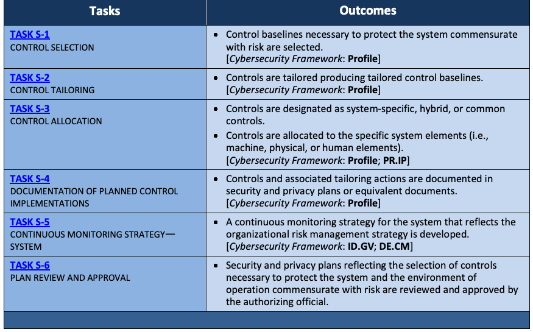
抽出したテキスト（原本と未照合・参考）
Tasks Outcomes TASK S-1 • Control baselines necessary to protect the system commensurate CONTROL SELECTION with risk are selected. [Cybersecurity Framework: Profile] TASK S-2 • Controls are tailored producing tailored control baselines. CONTROL TAILORING [Cybersecurity Framework: Profile] TASK S-3 • Controls are designated as system-specific, hybrid, or common CONTROL ALLOCATION controls. • Controls are allocated to the specific system elements (i.e., machine, physical, or human elements). [Cybersecurity Framework: Profile; PR.IP] TASK S-4 • Controls and associated tailoring actions are documented in DOCUMENTATION OF PLANNED CONTROL security and privacy plans or equivalent documents. IMPLEMENTATIONS [Cybersecurity Framework: Profile] TASK S-5 • A continuous monitoring strategy for the system that reflects the CONTINUOUS MONITORING STRATEGY— organizational risk management strategy is developed. SYSTEM [Cybersecurity Framework: ID.GV; DE.CM] TASK S-6 • Security and privacy plans reflecting the selection of controls PLAN REVIEW AND APPROVAL necessary to protect the system and the environment of operation commensurate with risk are reviewed and approved by the authorizing official.抽出したテキストの訳（原本と未照合・参考）
タスク 成果 TASK S-1 • システムをリスクに見合う形で保護するために必要な管理策ベースラインが選択される。 [Cybersecurity Framework: Profile] TASK S-2 • 管理策が調整され、調整済みの管理策ベースラインが作成される。 管理策の調整 [Cybersecurity Framework: Profile] TASK S-3 • 管理策は、システム固有、ハイブリッド、または共通の管理策として指定される。 管理策の割当て • 管理策は、特定のシステム構成要素（すなわち、機械、物理、または人の構成要素）に割り当てられる。 [Cybersecurity Framework: Profile; PR.IP] TASK S-4 • 管理策および関連する調整措置は、セキュリティ計画およびプライバシー計画、または同等の文書に記録される。 計画された管理策実装の文書化 [Cybersecurity Framework: Profile] TASK S-5 • 組織のリスク管理戦略を反映したシステムの継続的モニタリング戦略が策定される。 継続的モニタリング戦略—システム [Cybersecurity Framework: ID.GV; DE.CM] TASK S-6 • リスクに見合う形でシステムおよび運用環境を保護するために必要な管理策の選択を反映したセキュリティ計画およびプライバシー計画が、認可担当者によってレビューされ、承認される。 計画のレビューおよび承認Quick link to summary table for RMF tasks, responsibilities, and supporting roles.
RMFタスク、責任、および支援する役割の概要表へのクイックリンク。
CONTROL SELECTION
管理策の選択
TASK S-1 Select the controls for the system and the environment of operation.
タスク S-1 システムおよび運用環境に対する管理策を選択する。
Potential Inputs: Security categorization; organization- and system-level risk assessment results; system element information; system component inventory; list of security and privacy requirements allocated to the system, system elements, and environment of operation; list of contractual requirements allocated to external providers of the system or system element; business impact analysis or criticality analysis; risk management strategy; organizational security and privacy policy; federal or organization-approved or mandated baselines or overlays; Cybersecurity Framework Profiles.
潜在的な入力：セキュリティ分類；組織レベルおよびシステムレベルのリスク評価結果；システム要素情報；システムコンポーネントのインベントリ；システム、システム要素、および運用環境に割り当てられたセキュリティおよびプライバシー要件の一覧；システムまたはシステム要素の外部プロバイダーに割り当てられた契約上の要件の一覧；事業影響分析または重要度分析；リスク管理戦略；組織のセキュリティおよびプライバシー方針；連邦政府または組織が承認した、もしくは義務付けたベースラインまたはオーバーレイ；サイバーセキュリティ・フレームワークのプロファイル。
Expected Outputs: Controls selected for the system and the environment of operation.
期待される出力: システムおよび運用環境に選択された管理策。
Primary Responsibility: System Owner; Common Control Provider.
主たる責任：システム所有者；共通管理策プロバイダー。
Supporting Roles: Authorizing Official or Authorizing Official Designated Representative; Information Owner or Steward; Systems Security Engineer; Privacy Engineer; System Security Officer; System Privacy Officer.
支援役割：認可担当者または認可担当者の指定代理人；情報所有者または管理者；システムセキュリティエンジニア；プライバシーエンジニア；システムセキュリティ責任者；システムプライバシー責任者。
System Development Life Cycle Phase: New – Development/Acquisition.
システム開発ライフサイクルの段階: 新規 – 開発／取得。
Existing – Operations/Maintenance.
既存 – 運用／保守。
Discussion: There are two approaches that can be used for the initial selection of controls: a baseline control selection approach, or an organization-generated control selection approach. The baseline control selection approach uses control baselines, which are pre-defined sets of controls specifically assembled to address the protection needs of a group, organization, or community of interest. Control baselines serve as a starting point for the protection of individuals’ privacy, information, and information systems. Federal control baselines are provided in [SP 800-53B]. The system security categorization (see Task C-2) and the security requirements derived from stakeholder protection needs, laws, executive orders, regulations, policies, directives, instructions, and standards (see Task P-15) can help inform the selection of security control baselines. A privacy risk assessment (see Task P-14) and privacy requirements derived from stakeholder protection needs, laws, executive orders, regulations, policies, directives, instructions, and standards (see Task P-15) can help inform the selection of privacy control baselines. Privacy programs use security and privacy control baselines to manage the privacy risks arising from both unauthorized system activity or behavior, as well as from authorized activities. After the pre-defined control baseline is selected, organizations tailor the baseline in accordance with the guidance provided (see Task S-2). The baseline control selection approach can provide consistency across a broad community of interest.
説明: 管理策を最初に選択する方法には、ベースライン管理策選択アプローチと、組織が作成する管理策選択アプローチの2つがある。ベースライン管理策選択アプローチでは、特定のグループ、組織、または関心共同体の保護ニーズに対応するためにあらかじめ構成された管理策一式である管理策ベースラインを使用する。管理策ベースラインは、個人のプライバシー、情報、および情報システムを保護するための出発点となる。連邦政府の管理策ベースラインは[SP 800-53B]に示されている。システムのセキュリティ分類（タスクC-2を参照）および、利害関係者の保護ニーズ、法律、大統領令、規則、ポリシー、指令、指示、標準から導かれるセキュリティ要件（タスクP-15を参照）は、セキュリティ管理策ベースラインの選択に情報を提供する助けとなる。プライバシーリスク評価（タスクP-14を参照）および、利害関係者の保護ニーズ、法律、大統領令、規則、ポリシー、指令、指示、標準から導かれるプライバシー要件（タスクP-15を参照）は、プライバシー管理策ベースラインの選択に情報を提供する助けとなる。プライバシープログラムは、無許可のシステム活動または振る舞い、および許可された活動の双方から生じるプライバシーリスクを管理するために、セキュリティ管理策ベースラインとプライバシー管理策ベースラインを使用する。あらかじめ定義された管理策ベースラインを選択した後、組織は示された指針に従ってベースラインを調整する（タスクS-2を参照）。ベースライン管理策選択アプローチは、広範な関心共同体全体で一貫性を確保する助けとなる。
The organization-generated control selection approach differs from the baseline selection approach because the organization does not start with a pre-defined set of controls. Rather, the organization uses its own selection process to select controls. This may be necessary when the system is highly specialized (e.g., a weapons system or a medical device) or has limited purpose or scope (e.g., a smart meter). In these situations, it may be more efficient and cost-effective for an organization to select a specific set of controls for the system (i.e., a bottom-up approach) instead of starting with a pre-defined set of controls from a broad-based control baseline and subsequently eliminating controls through the tailoring process (i.e., top-down approach).
組織が作成する管理策選択アプローチは、組織があらかじめ定義された管理策一式から始めない点で、ベースライン選択アプローチと異なる。その代わりに、組織は独自の選択プロセスを用いて管理策を選択する。システムが高度に専門化されている場合（例: 兵器システムや医療機器）、または目的や範囲が限定されている場合（例: スマートメーター）には、この方法が必要となることがある。このような状況では、広範な管理策ベースラインに含まれるあらかじめ定義された管理策一式から始めて、後に調整プロセスを通じて管理策を除外する方法（すなわち、トップダウンアプローチ）よりも、組織がシステムに固有の管理策一式を選択する方法（すなわち、ボトムアップアプローチ）のほうが、効率的で費用対効果が高い場合がある。
In both the baseline control selection approach and organization-generated control selection approach, organizations develop a well-defined set of security and privacy requirements using a life cycle-based systems engineering process (e.g., [ISO 15288] and [SP 800-160 v1] as described in the RMF Prepare-System Level step, Task P-15. This process generates a set of requirements that can be used to guide and inform the selection of a set of controls to satisfy the requirements (whether the organization starts with a control baseline or generates the set of controls from its own selection process). Similarly, organizations can use the [NIST CSF] to develop Cybersecurity Framework Profiles representing a set of organization-specific security and privacy requirements—and thus, guiding and informing control selection from [SP 800-53]. Tailoring may also be required in the organization-generated control selection approach (see Task S-2). Organizations do not need to choose one approach for the selection of controls for each of their systems, but instead, may use different approaches as circumstances dictate.
ベースライン管理策選択アプローチと組織が作成する管理策選択アプローチのいずれにおいても、組織はライフサイクルに基づくシステムエンジニアリングプロセス（例: [ISO 15288]および[SP 800-160 v1]。RMFの準備—システムレベルのステップ、タスクP-15で説明）を用いて、明確に定義されたセキュリティ要件およびプライバシー要件一式を策定する。このプロセスは、要件を満たす管理策一式の選択を導き、情報を提供するために使える要件一式を生成する（組織が管理策ベースラインから始める場合も、独自の選択プロセスから管理策一式を作成する場合も同様である）。同様に、組織は[NIST CSF]を用いて、組織固有のセキュリティ要件およびプライバシー要件一式を表すサイバーセキュリティ・フレームワーク・プロファイルを作成し、それによって[SP 800-53]からの管理策選択を導き、情報を提供できる。組織が作成する管理策選択アプローチでも調整が必要となる場合がある（タスクS-2を参照）。組織は各システムの管理策を選択する際に一つのアプローチだけを選ぶ必要はなく、状況に応じて異なるアプローチを使うことができる。
References: [FIPS 199]; [FIPS 200]; [SP 800-30]; [SP 800-53]; [SP 800-53B]; [SP 800-160 v1] (System Requirements Definition, Architecture Definition, and Design Definition Processes); [SP 800-161] (Respond and Chapter 3); [IR 8062]; [IR 8179]; [CNSSI 1253]; [NIST CSF] (Core [Identify, Protect, Detect, Respond, Recover Functions]; Profiles).
参考文献: [FIPS 199]; [FIPS 200]; [SP 800-30]; [SP 800-53]; [SP 800-53B]; [SP 800-160 v1] (System Requirements Definition, Architecture Definition, and Design Definition Processes); [SP 800-161] (Respond and Chapter 3); [IR 8062]; [IR 8179]; [CNSSI 1253]; [NIST CSF] (Core [Identify, Protect, Detect, Respond, Recover Functions]; Profiles).
CONTROL TAILORING
管理策の調整
TASK S-2 Tailor the controls selected for the system and the environment of operation.
タスク S-2 システムおよび運用環境向けに選択された管理策を調整する。
Potential Inputs: Initial control baselines; organization- and system-level risk assessment results; system element information; system component inventory; list of security and privacy requirements allocated to the system, system elements, and environment of operation; business impact analysis or criticality analysis; risk management strategy; organizational security and privacy policies; federal or organization-approved or mandated overlays.
想定される入力：初期管理策ベースライン；組織レベル及びシステムレベルのリスクアセスメント結果；システム要素の情報；システムコンポーネントのインベントリ；システム、システム要素、及び運用環境に割り当てられたセキュリティ要件及びプライバシー要件の一覧；ビジネス影響分析又は重要度分析；リスク管理戦略；組織のセキュリティポリシー及びプライバシーポリシー；連邦政府又は組織が承認若しくは義務付けたオーバーレイ。
Expected Outputs: List of tailored controls for the system and environment of operation (i.e., tailored control baselines).
期待される出力: システムおよび運用環境向けに調整された管理策の一覧（すなわち、調整済み管理策ベースライン）。
Primary Responsibility: System Owner; Common Control Provider.
主たる責任：システム所有者；共通管理策プロバイダー。
Supporting Roles: Authorizing Official or Authorizing Official Designated Representative; Information Owner or Steward; Systems Security Engineer; Privacy Engineer; System Security Officer; System Privacy Officer.
支援役割：認可担当者または認可担当者の指定代理人；情報所有者または管理者；システムセキュリティエンジニア；プライバシーエンジニア；システムセキュリティ責任者；システムプライバシー責任者。
System Development Life Cycle Phase: New – Development/Acquisition.
システム開発ライフサイクルの段階: 新規 – 開発／取得。
Existing – Operations/Maintenance.
既存 – 運用／保守。
Discussion: After selecting the applicable control baselines, organizations tailor the controls based on various factors (e.g., missions or business functions, threats, security and privacy risks (including supply chain risks), type of system, or risk tolerance). The tailoring process includes identifying and designating common controls in the control baselines (see Task P-5); applying scoping considerations to the remaining baseline controls; selecting compensating controls, if needed; assigning values to organization-defined control parameters using either assignment or selection statements; supplementing baselines with additional controls; and providing specification information for control implementation.77 Organizations determine the amount of detail to include in justifications or supporting rationale required for tailoring decisions. For example, the justification or supporting rationale for scoping decisions related to a high-impact system or high value asset78 may necessitate greater specificity than similar decisions for a low-impact system. Such determinations are consistent with the organization’s missions and business functions; stakeholder needs; and any relevant laws, executive orders, regulations, directives, or policies. Controls related to the SDLC and SCRM provide the basis for determining whether an information system is fit-for-purpose79 and need to be tailored accordingly.
考察：該当する管理策ベースラインを選択した後、組織は様々な要因（例えば、ミッション又はビジネス機能、脅威、セキュリティリスク及びプライバシーリスク（サプライチェーンリスクを含む）、システムの種類、又はリスク許容度）に基づいて管理策をテーラリングする。テーラリングのプロセスには、管理策ベースライン内の共通管理策を特定して指定すること（タスク P-5 を参照）、残りのベースライン管理策に適用範囲の考慮事項を適用すること、必要に応じて代替管理策を選択すること、割当て文又は選択文のいずれかを用いて組織定義の管理策パラメータに値を割り当てること、追加の管理策でベースラインを補完すること、及び管理策の実装のための仕様情報を提供することが含まれる。77 組織は、テーラリングの決定に必要な正当化又は裏付けとなる根拠にどの程度の詳細を含めるかを決定する。例えば、高影響システム又は高価値資産78 に関する適用範囲の決定の正当化又は裏付けとなる根拠は、低影響システムに関する同様の決定よりも高い具体性を必要とする場合がある。このような判断は、組織のミッション及びビジネス機能、ステークホルダーのニーズ、並びに関連する法律、大統領令、規則、指令、又はポリシーと整合する。SDLC 及び SCRM に関連する管理策は、情報システムが目的に適合しているか79 を判断するための基礎となるものであり、それに応じてテーラリングする必要がある。
Organizations use risk assessments to inform and guide the tailoring process. Threat information from security risk assessments provides information on adversary capabilities, intent, and targeting that may affect organizational decisions regarding the selection of security controls, including the associated costs and benefits. Privacy risk assessments, including the contextual factors therein, will also influence tailoring when an information system processes PII.80 Risk assessment results are also leveraged when identifying common controls to determine if the controls available for inheritance meet the security and privacy requirements for the system and its environment of operation. When common controls provided by the organization do not provide adequate protection for the systems inheriting the controls, system owners can either supplement the common controls with system-specific or hybrid controls to achieve the required level of protection or recommend a greater acceptance of risk to the authorizing official. Organizations may also consider federally or organizationally directed or approved overlays, tailored baselines, or Cybersecurity Framework Profiles when tailoring controls (see Task P-4).
組織は、リスクアセスメントを用いてテーラリングのプロセスに情報を提供し、方向付ける。セキュリティリスクアセスメントから得られる脅威情報は、敵対者の能力、意図、及び標的に関する情報を提供し、それらは、関連するコスト及び便益を含め、セキュリティ管理策の選択に関する組織の決定に影響を及ぼす可能性がある。情報システムが PII を処理する場合には、そこに含まれる文脈的要因を含むプライバシーリスクアセスメントもテーラリングに影響を与える。80 リスクアセスメントの結果は、共通管理策を特定する際にも活用され、継承可能な管理策がシステム及びその運用環境のセキュリティ要件及びプライバシー要件を満たすかどうかを判断する。組織が提供する共通管理策が、それを継承するシステムに十分な保護を提供しない場合、システムオーナーは、必要な保護水準を達成するためにシステム固有管理策又はハイブリッド管理策で共通管理策を補完するか、より大きなリスクの受容を認可権者に推奨することができる。組織は、管理策をテーラリングする際に、連邦政府又は組織が指示若しくは承認したオーバーレイ、テーラリングしたベースライン、又はサイバーセキュリティフレームワークのプロファイルを考慮することもできる（タスク P-4 を参照）。
References: [FIPS 199]; [FIPS 200]; [SP 800-30]; [SP 800-53]; [SP 800-53B]; [SP 800-160 v1] (System Requirements Definition, Architecture Definition, and Design Definition Processes); [SP 800-161] (Respond
参考文献: [FIPS 199]; [FIPS 200]; [SP 800-30]; [SP 800-53]; [SP 800-53B]; [SP 800-160 v1] (System Requirements Definition, Architecture Definition, and Design Definition Processes); [SP 800-161] (Respond
and Chapter 3); [IR 8179]; [CNSSI 1253]; [NIST CSF] (Core [Identify, Protect, Detect, Respond, Recover Functions]; Profiles).
翻訳準備中
CONTROL ALLOCATION
管理策の割当て
TASK S-3 Allocate security and privacy controls to the system and to the environment of operation.
TASK S-3 セキュリティ管理策およびプライバシー管理策を、システムおよび運用環境に割り当てる。
Potential Inputs: Security categorization; organization- and system-level risk assessment results; organizational policy on system registration; enterprise architecture; security and privacy architectures; security and privacy requirements; list of security and privacy requirements allocated to the system, system elements, and the environment of operation; list of common control providers and common controls available for inheritance; system description; system element information; system component inventory; relevant laws, executive orders, directives, regulations, and policies.
想定される入力: セキュリティ分類; 組織レベルおよびシステムレベルのリスク評価結果; システム登録に関する組織のポリシー; エンタープライズアーキテクチャ; セキュリティアーキテクチャおよびプライバシーアーキテクチャ; セキュリティ要件およびプライバシー要件; システム、システム構成要素、および運用環境に割り当てられたセキュリティ要件およびプライバシー要件の一覧; 継承可能な共通管理策および共通管理策プロバイダーの一覧; システムの説明; システム構成要素情報; システム構成要素のインベントリ; 関連する法律、大統領令、指令、規則、およびポリシー。
Expected Outputs: List of security and privacy controls allocated to the system, system elements, and the environment of operation.
期待される出力: システム、システム構成要素、および運用環境に割り当てられたセキュリティ管理策およびプライバシー管理策の一覧。
Primary Responsibility: Security Architect; Privacy Architect; System Security Officer; System Privacy Officer.
主な責任者: セキュリティアーキテクト; プライバシーアーキテクト; システムセキュリティ責任者; システムプライバシー責任者。
Supporting Roles: Chief Information Officer; Authorizing Official or Authorizing Official Designated Representative; Mission or Business Owner; Senior Agency Information Security Officer; Senior Agency Official for Privacy; System Owner.
支援する役割: 最高情報責任者; 認可担当者または認可担当者の指定代理人; ミッションまたは業務の責任者; 機関上級情報セキュリティ責任者; プライバシー担当機関上級職員; システム所有者。
System Development Life Cycle Phase: New – Initiation (concept/requirements definition).
システム開発ライフサイクルの段階: 新規 – 開始（概念／要件定義）。
Existing – Operations/Maintenance.
既存 – 運用／保守。
Discussion: The organization designates controls as system-specific, hybrid, or common, and allocates the controls to the system elements (i.e, machine, physical, or human elements) responsible for providing a security or privacy capability. Controls are allocated to a system or an organization consistent with the organization’s enterprise architecture and security or privacy architecture and the allocated security and privacy requirements. Not all controls need to be allocated to every system element. Controls providing a specific security or privacy capability are only allocated to system elements that require that capability. The security categorization, privacy risk assessment, security and privacy architectures, and the allocation of controls work together to help achieve a suitable balance between security and privacy protections and the mission-based function of the system.
説明: 組織は、管理策をシステム固有、ハイブリッド、または共通として指定し、セキュリティ機能またはプライバシー機能を提供する責任を担うシステム構成要素（すなわち、機械、物理、または人の構成要素）に管理策を割り当てる。管理策は、組織のエンタープライズアーキテクチャ、セキュリティアーキテクチャまたはプライバシーアーキテクチャ、および割り当てられたセキュリティ要件とプライバシー要件に整合する形で、システムまたは組織に割り当てられる。すべての管理策をすべてのシステム構成要素に割り当てる必要はない。特定のセキュリティ機能またはプライバシー機能を提供する管理策は、その機能を必要とするシステム構成要素にのみ割り当てられる。セキュリティ分類、プライバシーリスク評価、セキュリティアーキテクチャおよびプライバシーアーキテクチャ、ならびに管理策の割当てが連携することで、セキュリティ保護、プライバシー保護、およびシステムのミッションに基づく機能の間で適切なバランスを実現する助けとなる。
Security and privacy requirements allocated to the system, system elements, and the environment of operation (see Task P-17) guide and inform control allocation to system elements. Common controls that are made available by the organization during the RMF Prepare-Organization Level step (see Task P-5), are selected for inheritance; hybrid controls are also selected. Common controls satisfy security and privacy requirements allocated to the organization and provide a protection capability that is inherited by one or more systems. Hybrid controls satisfy security and privacy requirements allocated to the system and to the organization and provide a protection capability that is partially inherited by one or more systems. And finally, system-specific controls satisfy security and privacy requirements allocated to the system and provide a protection capability for that system. Controls can be allocated to specific system elements rather than to every element within a system. For example, system-specific controls associated with management of audit logs may be allocated to a log management server and need not be implemented on every system element.
システム、システム構成要素、および運用環境に割り当てられたセキュリティ要件およびプライバシー要件（タスクP-17を参照）は、システム構成要素への管理策の割当てを導き、情報を提供する。RMFの準備—組織レベルのステップ（タスクP-5を参照）で組織が利用可能にした共通管理策は継承のために選択され、ハイブリッド管理策も選択される。共通管理策は組織に割り当てられたセキュリティ要件およびプライバシー要件を満たし、1つ以上のシステムが継承する保護機能を提供する。ハイブリッド管理策はシステムおよび組織に割り当てられたセキュリティ要件およびプライバシー要件を満たし、1つ以上のシステムが部分的に継承する保護機能を提供する。最後に、システム固有の管理策はシステムに割り当てられたセキュリティ要件およびプライバシー要件を満たし、そのシステムに保護機能を提供する。管理策は、システム内のすべての構成要素ではなく、特定のシステム構成要素に割り当てることができる。例えば、監査ログの管理に関連するシステム固有の管理策は、ログ管理サーバーに割り当てることができ、すべてのシステム構成要素に実装する必要はない。
References: [SP 800-39] (Organization, Mission/Business Process, and System Levels); [SP 800-64]; [SP 800-160 v1] (System Requirements Definition, Architecture Definition, and Design Definition Processes); [NIST CSF] (Core [Identify Function]; Profiles); [OMB FEA].
参考文献: [SP 800-39] (Organization, Mission/Business Process, and System Levels); [SP 800-64]; [SP 800-160 v1] (System Requirements Definition, Architecture Definition, and Design Definition Processes); [NIST CSF] (Core [Identify Function]; Profiles); [OMB FEA].
DOCUMENTATION OF PLANNED CONTROL IMPLEMENTATIONS
計画された管理策実装の文書化
TASK S-4 Document the controls for the system and environment of operation in security and privacy plans.
タスク S-4 システム及び運用環境の管理策をセキュリティ計画及びプライバシー計画に文書化する。
Potential Inputs: Security categorization; organization- and system-level risk assessment results (security, privacy, and/or supply chain); system element information; system component inventory; business impact or criticality analysis; list of security and privacy requirements allocated to the system, system elements, and environment of operation; risk management strategy; list of selected controls for the system and environment of operation; organizational security, privacy, and SCRM policies.
想定される入力: セキュリティ分類; 組織レベルおよびシステムレベルのリスク評価結果（セキュリティ、プライバシー、および／またはサプライチェーン）; システム構成要素情報; システム構成要素のインベントリ; システム、システム構成要素、および運用環境に割り当てられたセキュリティ要件およびプライバシー要件の一覧; ビジネス影響分析または重要度分析; リスク管理戦略; システムおよび運用環境向けに選択された管理策の一覧; 組織のセキュリティ、プライバシー、およびSCRMポリシー。
Expected Outputs: Security and privacy plans for the system.
期待される出力: システムのセキュリティ計画およびプライバシー計画。
Primary Responsibility: System Owner; Common Control Provider.
主な責任者: システム所有者; 共通管理策プロバイダー。
Supporting Roles: Authorizing Official or Authorizing Official Designated Representative; Information Owner or Steward; Systems Security Engineer; Privacy Engineer; System Security Officer; System Privacy Officer.
支援する役割: 認可担当者または認可担当者の指定代理人; 情報所有者またはスチュワード; システムセキュリティエンジニア; プライバシーエンジニア; システムセキュリティ責任者; システムプライバシー責任者。
System Development Life Cycle Phase: New – Development/Acquisition.
システム開発ライフサイクルの段階: 新規 – 開発／取得。
Existing – Operations/Maintenance.
既存 – 運用／保守。
Discussion: Security and privacy plans contain an overview of the security and privacy requirements for the system and the controls selected to satisfy the requirements. The plans describe the intended application of each selected control in the context of the system with a sufficient level of detail to correctly implement the control and to subsequently assess the effectiveness of the control. The control documentation describes how system-specific and hybrid controls are implemented and the plans and expectations regarding the functionality of the system. The description includes planned inputs, expected behavior, and expected outputs where appropriate, typically for those controls implemented in the hardware, software, or firmware components of the system. Common controls are also identified in the plans. There is no requirement to provide implementation details for inherited common controls. Rather, those details are provided in the plans for common control providers and are made available to system owners. For hybrid controls, the organization specifies in the system-level plans the parts of the control that are provided by the common control provider and the parts of the control that are implemented at the system level.
説明: セキュリティ計画およびプライバシー計画には、システムのセキュリティ要件およびプライバシー要件の概要と、その要件を満たすために選択された管理策が記載される。計画には、各選択管理策をシステムの文脈でどのように適用するかが、管理策を正しく実装し、その有効性を後に評価するのに十分な詳細さで記述される。管理策の文書には、システム固有の管理策およびハイブリッド管理策の実装方法と、システムの機能に関する計画および期待事項が記載される。適切な場合、通常はシステムのハードウェア、ソフトウェア、またはファームウェアの構成要素に実装される管理策について、計画された入力、期待される振る舞い、および期待される出力も説明に含める。共通管理策も計画に特定される。継承された共通管理策について、実装の詳細を記載する必要はない。そうした詳細は共通管理策プロバイダー向けの計画に記載され、システム所有者が利用できるようにする。ハイブリッド管理策については、共通管理策プロバイダーが提供する部分とシステムレベルで実装する部分を、システムレベルの計画で組織が明示する。
Organizations may develop a consolidated plan that incorporates security and privacy plans or maintain separate plans. If developing a consolidated plan, privacy programs collaborate with security programs to ensure that the plan reflects the selection of controls that provide protections with respect to managing the confidentiality, integrity, and availability of PII; and delineates roles and responsibilities for control implementation, assessment, and monitoring. For separate system security plans and privacy plans, organizations cross-reference the controls in all plans to help maintain accountability and awareness. The senior agency official for privacy reviews and approves the privacy plan (or integrated plan) before the plan is provided to the authorizing official or designated representative for review (see Task S-6). Organizations may document the control selection and tailoring information in documents equivalent to security and privacy plans, for example, in systems engineering or system life cycle artifacts or documents.
組織は、セキュリティ計画およびプライバシー計画を統合した計画を策定することも、別々の計画を維持することもできる。統合計画を策定する場合、プライバシープログラムはセキュリティプログラムと協力し、その計画に、PIIの機密性、完全性、および可用性を管理するための保護を提供する管理策の選択が反映され、管理策の実装、評価、およびモニタリングに関する役割と責任が明確に示されるようにする。システムセキュリティ計画とプライバシー計画を別々にする場合、組織は説明責任と認識の維持に役立つよう、すべての計画に記載された管理策を相互参照する。プライバシー担当機関上級職員は、プライバシー計画（または統合計画）を認可担当者または指定代理人にレビューのために提出する前にレビューして承認する（タスクS-6を参照）。組織は、セキュリティ計画およびプライバシー計画に相当する文書、例えばシステムエンジニアリング成果物やシステムライフサイクル成果物・文書に、管理策の選択および調整に関する情報を記録することもできる。
Documentation of planned control implementations allows for traceability of decisions prior to and after the deployment of the system. To the extent possible, organizations reference existing documentation (either by vendors or other organizations that have employed the same or similar systems or system elements), use automated support tools, and coordinate across the organization to reduce redundancy and increase the efficiency and cost-effectiveness of control documentation. The documentation also addresses platform dependencies and includes any additional information necessary to describe how the capability required is to be achieved at the level of detail sufficient to support control implementation and assessment. Documentation for control implementations follows best practices for hardware and software development and for systems security and privacy engineering disciplines and is also consistent with established policies and procedures for documenting activities in the SDLC. In certain situations, security controls can be implemented in ways that create privacy risks. The privacy program supports documentation of privacy risk considerations and the implementations intended to mitigate them.
計画された管理策実装を文書化すると、システムの導入前および導入後の決定を追跡できる。可能な限り、組織は既存の文書（ベンダー、または同一もしくは類似のシステムやシステム要素を使用した他の組織が作成したもの）を参照し、自動化された支援ツールを使用し、組織内で連携して、重複を減らし、管理策の文書化の効率と費用対効果を高める。文書ではプラットフォーム依存関係にも対処し、必要な能力をどのように実現するかを、管理策の実装と評価を支援するのに十分な詳細さで説明するために必要な追加情報も含める。管理策の実装に関する文書化は、ハードウェアおよびソフトウェアの開発ならびにシステムセキュリティおよびプライバシーエンジニアリング分野のベストプラクティスに従い、SDLCにおける活動の文書化に関する確立済みのポリシーおよび手順とも整合する。特定の状況では、セキュリティ管理策がプライバシーリスクを生じさせる形で実装されることがある。プライバシープログラムは、プライバシーリスクに関する考慮事項と、そのリスクを軽減することを目的とした実装の文書化を支援する。
For controls that are mechanism-based, organizations take advantage of the functional specifications provided by or obtainable from manufacturers, vendors, and systems integrators. This includes any documentation that may assist the organization during the development, implementation, assessment, and monitoring of controls. For certain controls, organizations obtain control implementation information from the appropriate organizational entities (e.g., physical security offices, facilities offices, records management offices, and human resource offices). Since the enterprise architecture and the security and privacy architectures established by the organization guide and inform the organizational approach used to plan for and implement controls, documenting the process helps to ensure traceability in meeting the security and privacy requirements.
メカニズムに基づく管理策について、組織はメーカー、ベンダー、およびシステムインテグレーターから提供される、または入手可能な機能仕様を活用する。これには、管理策の開発、実装、評価、およびモニタリングの際に組織の役に立つ可能性がある文書が含まれる。特定の管理策については、組織内の適切な部門（例: 物理セキュリティ部門、施設部門、記録管理部門、人事部門）から管理策の実装情報を入手する。組織が確立したエンタープライズアーキテクチャ、セキュリティアーキテクチャ、およびプライバシーアーキテクチャは、管理策の計画と実装に用いる組織のアプローチを導き、情報を提供するため、そのプロセスを文書化することは、セキュリティ要件およびプライバシー要件を満たす過程の追跡可能性を確保する助けとなる。
References: [FIPS 199]; [FIPS 200]; [SP 800-18]; [SP 800-30]; [SP 800-53]; [SP 800-64]; [SP 800-160 v1] (System Requirements Definition, Architecture Definition, and Design Definition Processes); [SP 800-161] (Respond and Chapter 3); [IR 8179]; [CNSSI 1253]; [NIST CSF] (Core [Identify, Protect, Detect, Respond, Recover Functions]; Profiles).
参考文献: [FIPS 199]; [FIPS 200]; [SP 800-18]; [SP 800-30]; [SP 800-53]; [SP 800-64]; [SP 800-160 v1] (System Requirements Definition, Architecture Definition, and Design Definition Processes); [SP 800-161] (Respond and Chapter 3); [IR 8179]; [CNSSI 1253]; [NIST CSF] (Core [Identify, Protect, Detect, Respond, Recover Functions]; Profiles).
CONTINUOUS MONITORING STRATEGY—SYSTEM
継続的モニタリング戦略—システム
TASK S-5 Develop and implement a system-level strategy for monitoring control effectiveness that is consistent with and supplements the organizational continuous monitoring strategy.
TASK S-5 組織の継続的モニタリング戦略と整合し、それを補完する、管理策の有効性をモニタリングするためのシステムレベルの戦略を策定して実施する。
Potential Inputs: Organizational risk management strategy; organizational continuous monitoring strategy; organization- and system-level risk assessment results; security and privacy plans; organizational security and privacy policies.
想定される入力: 組織のリスク管理戦略; 組織の継続的モニタリング戦略; 組織レベルおよびシステムレベルのリスク評価結果; セキュリティ計画およびプライバシー計画; 組織のセキュリティポリシーおよびプライバシーポリシー。
Expected Outputs: Continuous monitoring strategy for the system including time-based trigger for ongoing authorization.
期待される出力: 継続的認可のための時間ベースのトリガーを含む、システムの継続的モニタリング戦略。
Primary Responsibility: System Owner; Common Control Provider.
主な責任者: システム所有者; 共通管理策プロバイダー。
Supporting Roles: Senior Accountable Official for Risk Management or Risk Executive (Function); Chief Information Officer; Senior Agency Information Security Officer; Senior Agency Official for Privacy; Authorizing Official or Authorizing Official Designated Representative; Information Owner or Steward; Security Architect; Privacy Architect; Systems Security Engineer; Privacy Engineer; System Security Officer; System Privacy Officer.
支援する役割: リスク管理上級責任者またはリスクエグゼクティブ（機能）; 最高情報責任者; 機関上級情報セキュリティ責任者; プライバシー担当機関上級職員; 認可担当者または認可担当者の指定代理人; 情報所有者またはスチュワード; セキュリティアーキテクト; プライバシーアーキテクト; システムセキュリティエンジニア; プライバシーエンジニア; システムセキュリティ責任者; システムプライバシー責任者。
System Development Life Cycle Phase: New – Development/Acquisition.
システム開発ライフサイクルの段階: 新規 – 開発／取得。
Existing – Operations/Maintenance.
既存 – 運用／保守。
Discussion: An important aspect of risk management is the ongoing monitoring of controls implemented within or inherited by an information system. An effective continuous monitoring strategy at the system level is developed and implemented in coordination with the organizational continuous monitoring strategy early in the SDLC (i.e., during initial system design or procurement decision). The system-level continuous monitoring strategy is consistent with and supplements the continuous monitoring strategy for the organization. The system-level strategy addresses monitoring those controls for which monitoring is not provided as part of the continuous monitoring strategy and implementation for the organization. The system-level strategy identifies the frequency of monitoring for controls not addressed by the organization-level strategy and defines the approach to be used for assessing those controls. The system-level continuous monitoring strategy, consistent with the organizational monitoring strategy, defines how changes to the system and the environment of operation81 are to be monitored; how risk assessments are to be conducted; and the security and privacy posture reporting requirements including recipients of the reports. The system-level continuous monitoring strategy can be included in security and privacy plans.82
考察：リスク管理の重要な側面の一つは、情報システム内で実装された管理策、又は情報システムが継承する管理策の継続的な監視である。システムレベルの効果的な継続的監視戦略は、SDLC の早い段階（すなわち、初期のシステム設計時又は調達決定時）に、組織の継続的監視戦略と連携して策定及び実施される。システムレベルの継続的監視戦略は、組織の継続的監視戦略と整合し、それを補完する。システムレベルの戦略は、組織の継続的監視戦略及びその実施の一部として監視が提供されない管理策の監視に対処する。システムレベルの戦略は、組織レベルの戦略で対処されない管理策について監視の頻度を特定し、それらの管理策の評価に用いるアプローチを定義する。システムレベルの継続的監視戦略は、組織の監視戦略と整合して、システム及び運用環境81 の変更をどのように監視するか、リスクアセスメントをどのように実施するか、並びに報告の受領者を含むセキュリティ態勢及びプライバシー態勢の報告要件を定義する。システムレベルの継続的監視戦略は、セキュリティ計画及びプライバシー計画に含めることができる。82
For controls that are not addressed by the organizational continuous monitoring strategy, the system-level continuous monitoring strategy identifies the criteria for determining the frequency with which controls are monitored post-implementation and the plan for the ongoing assessment of those controls. The criteria are established by the system owner or common control provider in collaboration with other organizational officials (e.g., the authorizing official or designated representative; senior accountable official for risk management or risk executive [function]; senior agency information security officer; senior agency official for privacy; and chief information officer). The frequency criteria at the system level reflect organizational priorities and the importance of the system to the organization’s operations and assets, individuals, other organizations, and the Nation. Controls that are volatile (i.e., where the control or the control implementation is most likely to change over time),83 critical to certain aspects of the protection needs for the organization, or identified in plans of action and milestones, may require more frequent assessment. The approach to control assessments during continuous monitoring may include reuse of assessment procedures and results that supported the initial authorization decision; detection of the status of system elements; and analysis of historical and operational data.
組織の継続的監視戦略で対処されない管理策について、システムレベルの継続的監視戦略は、実装後に管理策を監視する頻度を決定するための基準と、それらの管理策の継続的な評価の計画とを特定する。この基準は、システムオーナー又は共通管理策提供者が、他の組織の職員（例えば、認可権者又は指定代理人、リスク管理担当の上級説明責任者又はリスクエグゼクティブ［機能］、上級機関情報セキュリティ責任者、プライバシー担当上級機関職員、及び最高情報責任者）と協力して確立する。システムレベルの頻度基準は、組織の優先事項と、組織の業務及び資産、個人、他の組織、並びに国家にとってのシステムの重要性とを反映する。変動しやすい管理策（すなわち、管理策又は管理策の実装が時間の経過とともに変化する可能性が最も高いもの）83、組織の保護ニーズの特定の側面にとって重要な管理策、又は行動計画及びマイルストーンで特定された管理策は、より頻繁な評価を必要とする場合がある。継続的監視における管理策評価のアプローチには、当初の認可決定を裏付けた評価手順及び評価結果の再利用、システム要素の状態の検出、並びに履歴データ及び運用データの分析が含まれ得る。
The authorizing official or designated representative approves the continuous monitoring strategy and the minimum frequency with which each control is to be monitored. The approval of the strategy can be obtained in conjunction with the security and privacy plan approval. The monitoring of controls begins at the start of the operational phase of the SDLC and continues through the disposal phase.
認可担当者または指定代理人は、継続的モニタリング戦略と、各管理策をモニタリングする最小頻度を承認する。戦略の承認は、セキュリティ計画およびプライバシー計画の承認と併せて得ることができる。管理策のモニタリングは、SDLCの運用段階の開始時に始まり、廃止段階まで続く。
References: [SP 800-30]; [SP 800-39] (Organization, Mission or Business Process, System Levels); [SP 800-53]; [SP 800-53A]; [SP 800-137]; [SP 800-161]; [IR 8011 v1]; [CNSSI 1253]; [NIST CSF] (Core [Detect Function]).
参考文献：[SP 800-30]；[SP 800-39]（組織、ミッション又はビジネスプロセス、システムの各レベル）；[SP 800-53]；[SP 800-53A]；[SP 800-137]；[SP 800-161]；[IR 8011 v1]；[CNSSI 1253]；[NIST CSF]（コア［検知機能］）。
PLAN REVIEW AND APPROVAL
計画のレビューおよび承認
TASK S-6 Review and approve the security and privacy plans for the system and the environment of operation.
タスク S-6 システム及び運用環境のセキュリティ計画及びプライバシー計画をレビューし、承認する。
Potential Inputs: Security and privacy plans; organization- and system-level risk assessment results.
想定される入力: セキュリティ計画およびプライバシー計画; 組織レベルおよびシステムレベルのリスク評価結果。
Expected Outputs: Security and privacy plans approved by the authorizing official.
期待される出力: 認可担当者が承認したセキュリティ計画およびプライバシー計画。
Primary Responsibility: Authorizing Official or Authorizing Official Designated Representative.
主な責任者: 認可担当者または認可担当者の指定代理人。
Supporting Roles: Senior Accountable Official for Risk Management or Risk Executive (Function); Chief Information Officer; Chief Acquisition Officer; Senior Agency Information Security Officer; Senior Agency Official for Privacy.
支援する役割: リスク管理上級責任者またはリスクエグゼクティブ（機能）; 最高情報責任者; 最高調達責任者; 機関上級情報セキュリティ責任者; プライバシー担当機関上級職員。
System Development Life Cycle Phase: New – Development/Acquisition.
システム開発ライフサイクルの段階: 新規 – 開発／取得。
Existing – Operations/Maintenance.
既存 – 運用／保守。
Discussion: The security and privacy plan review by the authorizing official or designated representative with support from the senior accountable official for risk management or risk executive (function), chief information officer, senior agency information security officer, and senior agency official for privacy, determines if the plans are complete, consistent, and satisfy the stated security and privacy requirements for the system. Based on the results from this review, the authorizing official or designated representative may recommend changes to the security and privacy plans. If the plans are unacceptable, the system owner or common control provider make appropriate changes to the plans. If the plans are acceptable, the authorizing official or designated representative approves the plans.
説明: 認可担当者または指定代理人は、リスク管理上級責任者またはリスクエグゼクティブ（機能）、最高情報責任者、機関上級情報セキュリティ責任者、およびプライバシー担当機関上級職員の支援を受けてセキュリティ計画およびプライバシー計画をレビューし、その計画が完全で一貫しており、システムに関して明示されたセキュリティ要件およびプライバシー要件を満たすかどうかを判断する。このレビュー結果に基づき、認可担当者または指定代理人は、セキュリティ計画およびプライバシー計画の変更を提案することがある。計画が受け入れられない場合、システム所有者または共通管理策プロバイダーは計画に適切な変更を加える。計画が受け入れ可能な場合、認可担当者または指定代理人が計画を承認する。
The acceptance of the security and privacy plans represents an important milestone in the SDLC and risk management process. The authorizing official or designated representative, by approving the plans, agrees to the set of controls (i.e., system-specific, hybrid, or common controls) and the description of the proposed implementation of the controls to meet the security and privacy requirements for the system and the environment in which the system operates.84 The approval of the plans allows the risk management process to proceed to the RMF Implement step. The approval of the plans also establishes the level of effort required to successfully complete the remainder of the RMF steps and provides the basis of the security and privacy specifications for the acquisition of the system or individual system elements.
セキュリティ計画およびプライバシー計画の受け入れは、SDLCおよびリスク管理プロセスにおける重要なマイルストーンである。認可担当者または指定代理人は計画を承認することにより、管理策一式（すなわち、システム固有、ハイブリッド、または共通の管理策）と、システムおよびその運用環境に関するセキュリティ要件およびプライバシー要件を満たすために提案された管理策の実装方法の説明に同意する。84 計画の承認により、リスク管理プロセスはRMFの実装ステップに進むことができる。また、計画の承認は、残りのRMFステップを正常に完了するために必要な作業量を定め、システムまたは個々のシステム要素を取得する際のセキュリティ仕様およびプライバシー仕様の基礎となる。
References: [SP 800-30]; [SP 800-53]; [SP 800-160 v1] (System Requirements Definition, Architecture Definition, and Design Definition Processes).
参考文献: [SP 800-30]; [SP 800-53]; [SP 800-160 v1] (System Requirements Definition, Architecture Definition, and Design Definition Processes).
3.4 IMPLEMENT
3.4 実装（IMPLEMENT）
Purpose
目的
The purpose of the Implement step is to implement the controls in the security and privacy plans for the system and for the organization and to document in a baseline configuration, the specific details of the control implementation.
実装ステップの目的は、システムおよび組織向けのセキュリティ計画およびプライバシー計画に記載された管理策を実装し、ベースライン構成に管理策実装の具体的な詳細を記録することである。
IMPLEMENT TASKS
実装タスク
Table 5 provides a summary of tasks and expected outcomes for the RMF Implement step. Applicable Cybersecurity Framework constructs are also provided.
表5に、RMFの実装ステップにおけるタスクと期待される成果の概要を示す。該当するサイバーセキュリティ・フレームワークの構成要素も示す。
TABLE 5: IMPLEMENT TASKS AND OUTCOMES
表5: 実装タスクと成果
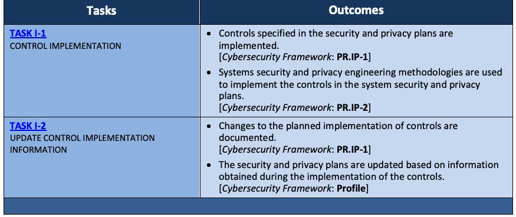
抽出したテキスト（原本と未照合・参考）
Tasks Outcomes TASK I-1 • Controls specified in the security and privacy plans are CONTROL IMPLEMENTATION implemented. [Cybersecurity Framework: PR.IP-1] • Systems security and privacy engineering methodologies are used to implement the controls in the system security and privacy plans. [Cybersecurity Framework: PR.IP-2] TASK I-2 • Changes to the planned implementation of controls are UPDATE CONTROL IMPLEMENTATION documented. INFORMATION [Cybersecurity Framework: PR.IP-1] • The security and privacy plans are updated based on information obtained during the implementation of the controls. [Cybersecurity Framework: Profile]抽出したテキストの訳（原本と未照合・参考）
タスク 成果 TASK I-1 • セキュリティ計画およびプライバシー計画で規定された管理策が実装される。 [Cybersecurity Framework: PR.IP-1] • システムセキュリティおよびプライバシーエンジニアリングの方法論を用いて、システムのセキュリティ計画およびプライバシー計画にある管理策を実装する。 [Cybersecurity Framework: PR.IP-2] TASK I-2 • 管理策の計画された実装への変更が記録される。 管理策実装情報の更新 [Cybersecurity Framework: PR.IP-1] • 管理策の実装中に得られた情報に基づいて、セキュリティ計画およびプライバシー計画が更新される。 [Cybersecurity Framework: Profile]抽出したテキストの訳（原本と未照合・参考）
TASK I-2 管理策実装情報の更新Quick link to summary table for RMF tasks, responsibilities, and supporting roles.
RMFタスク、責任、および支援する役割の概要表へのクイックリンク。
CONTROL IMPLEMENTATION
管理策の実装
TASK I-1 Implement the controls in the security and privacy plans.
TASK I-1 セキュリティ計画およびプライバシー計画に記載された管理策を実装する。
Potential Inputs: Approved security and privacy plans; system design documents; organizational security and privacy policies and procedures; business impact or criticality analyses; enterprise architecture information; security architecture information; privacy architecture information; list of security and privacy requirements allocated to the system, system elements; and environment of operation; system element information; system component inventory; organization- and system-level risk assessment results.
想定される入力: 承認済みのセキュリティ計画およびプライバシー計画; システム設計文書; 組織のセキュリティおよびプライバシーポリシーと手順; ビジネス影響分析または重要度分析; エンタープライズアーキテクチャ情報; セキュリティアーキテクチャ情報; プライバシーアーキテクチャ情報; システム、システム構成要素、および運用環境に割り当てられたセキュリティ要件およびプライバシー要件の一覧; システム構成要素情報; システム構成要素のインベントリ; 組織レベルおよびシステムレベルのリスク評価結果。
Expected Outputs: Implemented controls.
期待される出力: 実装された管理策。
Primary Responsibility: System Owner; Common Control Provider.
主な責任者: システム所有者; 共通管理策プロバイダー。
Supporting Roles: Information Owner or Steward; Security Architect; Privacy Architect; Systems Security Engineer; Privacy Engineer; System Security Officer; System Privacy Officer; Enterprise Architect; System Administrator.
支援する役割: 情報所有者またはスチュワード; セキュリティアーキテクト; プライバシーアーキテクト; システムセキュリティエンジニア; プライバシーエンジニア; システムセキュリティ責任者; システムプライバシー責任者; エンタープライズアーキテクト; システム管理者。
System Development Life Cycle Phase: New – Development/Acquisition; Implementation/Assessment. Existing – Operations/Maintenance.
システム開発ライフサイクルの段階: 新規 – 開発／取得; 実装／評価。既存 – 運用／保守。
Discussion: Organizations implement the controls as described in the security and privacy plans. The control implementation is consistent with the organization’s enterprise architecture and associated security and privacy architectures. Organizations use best practices when implementing controls, including systems security and privacy engineering methodologies, concepts, and principles. Risk assessments guide and inform decisions regarding the cost, benefit, and risk trade-offs in using different technologies or policies for control implementation. Organizations also ensure that mandatory configuration settings are established and implemented on system elements in accordance with federal and organizational policies. When organizations have no direct control over what controls are implemented in a system element, for example, in commercial off-the-shelf products, organizations consider the use of system elements that have been tested, evaluated, or validated by approved, independent, third-party assessment facilities (e.g., NIST Cryptographic Module Validation Program Testing Laboratories, National Information Assurance Partnership Common Criteria Testing Laboratories). The tests, evaluations, and validations consider products in specific configurations and in isolation; control implementation addresses how the product is integrated into the system while preserving security functionality and assurance.
説明: 組織は、セキュリティ計画およびプライバシー計画に記載されたとおりに管理策を実装する。管理策の実装は、組織のエンタープライズアーキテクチャおよび関連するセキュリティアーキテクチャ、プライバシーアーキテクチャと整合する。組織は、システムセキュリティおよびプライバシーエンジニアリングの方法論、概念、原則を含むベストプラクティスを用いて管理策を実装する。リスク評価は、管理策の実装に異なる技術またはポリシーを用いる際のコスト、便益、リスクのトレードオフに関する判断を導き、情報を提供する。組織はまた、連邦政府および組織のポリシーに従い、必須の構成設定がシステム構成要素に確立され、実装されていることを確認する。例えば市販既製品の場合など、システム構成要素にどの管理策を実装するかを組織が直接制御できない場合、組織は、承認された独立した第三者評価施設によって試験、評価、または検証されたシステム構成要素の使用を検討する（例: NIST Cryptographic Module Validation Program Testing Laboratories, National Information Assurance Partnership Common Criteria Testing Laboratories）。試験、評価、および検証は、特定の構成における製品を単体で考慮する。管理策の実装では、セキュリティ機能および保証を維持しながら、その製品をシステムに統合する方法を扱う。
Organizations also address, where applicable, assurance requirements when implementing controls. Assurance requirements are directed at the activities that control developers and implementers carry out to increase the level of confidence that the controls are implemented correctly, operating as intended, and producing the desired outcome with respect to meeting the security and privacy requirements for the system. The assurance requirements address quality of the design, development, and implementation of the controls.85
該当する場合、組織は管理策の実装時に保証要件にも対処する。保証要件は、管理策の開発者および実装者が、管理策が正しく実装され、意図したとおりに動作し、システムのセキュリティ要件およびプライバシー要件を満たすという点で望ましい結果を生み出しているとの確信を高めるために行う活動を対象とする。保証要件は、管理策の設計、開発、および実装の品質を対象とする。85
For the common controls inherited by the system, systems security and privacy engineers with support from system security and privacy officers, coordinate with the common control provider to determine the most appropriate way to implement common controls. System owners can refer to the authorization packages prepared by common control providers when making determinations regarding the adequacy of common controls inherited by their systems. During implementation, it may be determined that common controls previously selected to be inherited by the system do not meet the specified security or privacy requirements for the system. For common controls that do not meet the requirements for the system inheriting the controls or when common controls have unacceptable deficiencies, the system owners identify compensating or supplementary controls to be implemented. System owners can supplement the common controls with system-specific or hybrid controls to achieve the required protection for their systems or they can accept greater risk with the acknowledgement and approval of the organization. Risk assessments may determine how gaps in security or privacy requirements between systems and common controls affect the risk associated with the system, and how to prioritize the need for compensating or supplementary controls to mitigate specific risks.
システムが継承する共通管理策について、システムセキュリティエンジニアおよびプライバシーエンジニアは、システムセキュリティ責任者およびシステムプライバシー責任者の支援を得て、共通管理策プロバイダーと連携し、共通管理策を実装する最適な方法を決定する。システム所有者は、自らのシステムが継承する共通管理策の適切性を判断する際、共通管理策プロバイダーが作成した認可パッケージを参照できる。実装中に、以前システムが継承するものとして選択された共通管理策が、システムの指定されたセキュリティ要件またはプライバシー要件を満たさないと判明する場合がある。管理策を継承するシステムの要件を満たさない共通管理策について、または共通管理策に受け入れられない欠陥がある場合、システム所有者は、実装する代替管理策または補完管理策を特定する。システム所有者は、必要な保護を実現するために共通管理策をシステム固有またはハイブリッドの管理策で補完するか、組織がそのリスクを認識し、承認した上で、より大きなリスクを受容できる。リスク評価によって、システムと共通管理策の間にあるセキュリティ要件またはプライバシー要件の不足がシステムに関連するリスクにどのように影響するか、また特定のリスクを軽減する代替管理策または補完管理策の必要性にどのような優先順位を付けるかが明らかになる場合がある。
Consistent with the flexibility allowed in applying the tasks in the RMF, organizations conduct initial control assessments during system development and implementation. Conducting such assessments in parallel with the development and implementation phases of the SDLC facilitates early identification of deficiencies and provides a cost-effective method for initiating corrective actions. Issues discovered during these assessments can be referred to authorizing officials for resolution. The results of the initial control assessments can also be used during the authorize step to avoid delays or costly repetition of assessments. Assessment results that are subsequently reused in other phases of the SDLC meet the reuse requirements established by the organization.86
RMFタスクの適用において認められる柔軟性に沿って、組織はシステムの開発および実装中に初期管理策評価を実施する。このような評価をSDLCの開発段階および実装段階と並行して行うことで、欠陥を早期に特定でき、是正措置を開始するための費用対効果の高い方法となる。これらの評価で発見された問題は、解決のため認可担当者に付託できる。初期管理策評価の結果は、遅延や評価の高額な反復を避けるため、認可ステップでも利用できる。その後SDLCの他の段階で再利用される評価結果は、組織が定めた再利用要件を満たす。86
References: [FIPS 200]; [SP 800-30]; [SP 800-53]; [SP 800-53A]; [SP 800-160 v1] (Implementation, Integration, Verification, and Transition Processes); [SP 800-161]; [IR 8062]; [IR 8179].
参考文献：[FIPS 200]；[SP 800-30]；[SP 800-53]；[SP 800-53A]；[SP 800-160 v1]（実装、統合、検証、及び移行のプロセス）；[SP 800-161]；[IR 8062]；[IR 8179]。
UPDATE CONTROL IMPLEMENTATION INFORMATION
管理策実装情報の更新
TASK I-2 Document changes to planned control implementations based on the “as-implemented” state of controls.
タスク I-2 管理策の「実装された状態」に基づき、計画した管理策の実装に対する変更を文書化する。
Potential Inputs: Security and privacy plans; information from control implementation efforts.
想定される入力: セキュリティ計画およびプライバシー計画; 管理策実装の取り組みから得られた情報。
Expected Outputs: Security and privacy plans updated with implementation detail sufficient for use by assessors; system configuration baseline.
期待される出力: 評価者が使用するのに十分な実装詳細で更新されたセキュリティ計画およびプライバシー計画; システム構成ベースライン。
Primary Responsibility: System Owner; Common Control Provider.
主な責任者: システム所有者; 共通管理策プロバイダー。
Supporting Roles: Information Owner or Steward; Security Architect; Privacy Architect; Systems Security Engineer; Privacy Engineer; System Security Officer; System Privacy Officer; Enterprise Architect; System Administrator.
支援する役割: 情報所有者またはスチュワード; セキュリティアーキテクト; プライバシーアーキテクト; システムセキュリティエンジニア; プライバシーエンジニア; システムセキュリティ責任者; システムプライバシー責任者; エンタープライズアーキテクト; システム管理者。
System Development Life Cycle Phase: New – Development/Acquisition; Implementation/Assessment. Existing – Operations/Maintenance.
システム開発ライフサイクルの段階: 新規 – 開発／取得; 実装／評価。既存 – 運用／保守。
Discussion: Despite the control implementation details in the security and privacy plans and the system design documents, it is not always feasible to implement controls as planned. Therefore, as control implementations are carried out, the security and privacy plans are updated with as-implemented control implementation details. The updates include revised descriptions of implemented controls including changes to planned inputs, expected behavior, and expected outputs with sufficient detail to support control assessments. Documenting the “as implemented” control information is essential to providing the capability to determine when there are changes to the controls, whether those changes are authorized, and the impact of the changes on the security and privacy posture of the system and the organization.
説明: セキュリティ計画、プライバシー計画、およびシステム設計文書に管理策実装の詳細が記載されていても、必ずしも計画どおりに管理策を実装できるとは限らない。そのため、管理策の実装を進める中で、実際に実装された管理策の詳細を反映するようセキュリティ計画およびプライバシー計画を更新する。更新には、実装された管理策の記述の改訂が含まれ、評価を支援するのに十分な詳細さで、計画された入力、期待される振る舞い、および期待される出力の変更も記載する。“as implemented”の管理策情報を文書化することは、管理策に変更が生じた時期、その変更が承認済みかどうか、ならびにその変更がシステムおよび組織のセキュリティ態勢とプライバシー態勢に与える影響を判断できるようにする上で不可欠である。
References: [SP 800-53]; [SP 800-128]; [SP 800-160 v1] (Implementation, Integration, Verification, and Transition, Configuration Management Processes).
参考文献: [SP 800-53]; [SP 800-128]; [SP 800-160 v1] (Implementation, Integration, Verification, and Transition, Configuration Management Processes).
3.5 ASSESS
3.5 評価（ASSESS）
Purpose
目的
The purpose of the Assess step is to determine if the controls selected for implementation are implemented correctly, operating as intended, and producing the desired outcome with respect to meeting the security and privacy requirements for the system and the organization.
評価ステップの目的は、実装対象として選択された管理策が正しく実装され、意図したとおりに動作し、システムおよび組織のセキュリティ要件およびプライバシー要件を満たすという点で望ましい結果を生み出しているかどうかを判断することである。
ASSESS TASKS
評価タスク
Table 6 provides a summary of tasks and expected outcomes for the RMF Assess step. Applicable Cybersecurity Framework constructs are also provided.
表6に、RMFの評価ステップにおけるタスクと期待される成果の概要を示す。該当するサイバーセキュリティ・フレームワークの構成要素も示す。
TABLE 6: ASSESS TASKS AND OUTCOMES
表6: 評価タスクと成果
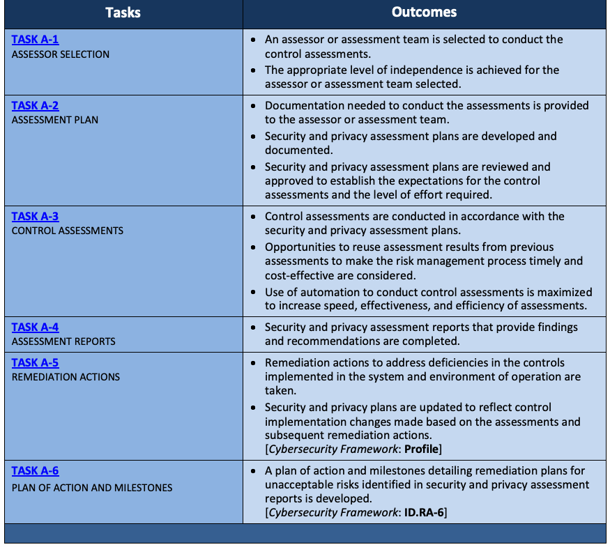
抽出したテキスト（原本と未照合・参考）
Tasks Outcomes TASK A-1 • An assessor or assessment team is selected to conduct the ASSESSOR SELECTION control assessments. • The appropriate level of independence is achieved for the assessor or assessment team selected. TASK A-2 • Documentation needed to conduct the assessments is provided ASSESSMENT PLAN to the assessor or assessment team. • Security and privacy assessment plans are developed and documented. • Security and privacy assessment plans are reviewed and approved to establish the expectations for the control assessments and the level of effort required. TASK A-3 • Control assessments are conducted in accordance with the CONTROL ASSESSMENTS security and privacy assessment plans. • Opportunities to reuse assessment results from previous assessments to make the risk management process timely and cost-effective are considered. • Use of automation to conduct control assessments is maximized to increase speed, effectiveness, and efficiency of assessments. TASK A-4 • Security and privacy assessment reports that provide findings ASSESSMENT REPORTS and recommendations are completed. TASK A-5 • Remediation actions to address deficiencies in the controls REMEDIATION ACTIONS implemented in the system and environment of operation are taken. • Security and privacy plans are updated to reflect control implementation changes made based on the assessments and subsequent remediation actions. [Cybersecurity Framework: Profile] TASK A-6 • A plan of action and milestones detailing remediation plans for PLAN OF ACTION AND MILESTONES unacceptable risks identified in security and privacy assessment reports is developed. [Cybersecurity Framework: ID.RA-6]抽出したテキストの訳（原本と未照合・参考）
タスク 成果 TASK A-1 • 管理策評価を実施する評価者または評価チームが選定される。 評価者の選定 • 選定された評価者または評価チームについて、適切な独立性の水準が確保される。 TASK A-2 • 評価の実施に必要な文書が評価者または評価チームに提供される。 評価計画 • セキュリティ評価計画およびプライバシー評価計画が策定され、文書化される。 • 管理策評価に関する期待事項および必要な作業量を定めるため、セキュリティ評価計画およびプライバシー評価計画がレビューされ、承認される。 TASK A-3 • 管理策評価がセキュリティ評価計画およびプライバシー評価計画に従って実施される。 管理策評価 • リスク管理プロセスの迅速化と費用対効果の向上に役立てるため、過去の評価結果を再利用する機会が検討される。 • 評価の速度、有効性、および効率性を高めるため、管理策評価の自動化の利用が最大化される。 TASK A-4 • 所見および推奨事項を示すセキュリティ評価報告書およびプライバシー評価報告書が完成する。 評価報告書 TASK A-5 • システムおよび運用環境に実装された管理策の欠陥に対処するため、是正措置が講じられる。 是正措置 • 評価およびその後の是正措置に基づいて行われた管理策実装の変更を反映するよう、セキュリティ計画およびプライバシー計画が更新される。 [Cybersecurity Framework: Profile] TASK A-6 • セキュリティ評価報告書およびプライバシー評価報告書で特定された受け入れられないリスクに対する是正計画を詳述した、行動計画およびマイルストーンが策定される。 行動計画およびマイルストーン [Cybersecurity Framework: ID.RA-6]抽出したテキストの訳（原本と未照合・参考）
TASK A-2 評価計画抽出したテキストの訳（原本と未照合・参考）
TASK A-3 管理策評価抽出したテキストの訳（原本と未照合・参考）
TASK A-6 行動計画およびマイルストーンQuick link to summary table for RMF tasks, responsibilities, and supporting roles.
RMFタスク、責任、および支援する役割の概要表へのクイックリンク。
ASSESSOR SELECTION
評価者の選定
TASK A-1 Select the appropriate assessor or assessment team for the type of control assessment to be conducted.
タスク A-1 実施する管理策評価の種類に応じて、適切な評価者又は評価チームを選定する。
Potential Inputs: Security, privacy, and SCRM plans; program management control information; common control documentation; organizational security and privacy program plans; SCRM strategy; system design documentation; enterprise, security, and privacy architecture information; security, privacy, and SCRM policies and procedures applicable to the system.
想定される入力: セキュリティ、プライバシー、およびSCRMの計画; プログラム管理の管理策情報; 共通管理策に関する文書; 組織のセキュリティおよびプライバシープログラム計画; SCRM戦略; システム設計文書; エンタープライズ、セキュリティ、およびプライバシーアーキテクチャ情報; システムに適用されるセキュリティ、プライバシー、およびSCRMのポリシーと手順。
Expected Outputs: Selection of assessor or assessment team responsible for conducting the control assessment.
期待される出力: 管理策評価を実施する責任を負う評価者または評価チームの選定。
Primary Responsibility: Authorizing Official or Authorizing Official Designated Representative.
主な責任者: 認可担当者または認可担当者の指定代理人。
Supporting Roles: Chief Information Officer; Senior Agency Information Security Officer; Senior Agency Official for Privacy.
支援する役割: 最高情報責任者; 機関上級情報セキュリティ責任者; プライバシー担当機関上級職員。
System Development Life Cycle Phase: New – Development/Acquisition; Implementation/Assessment. Existing – Operations/Maintenance.
システム開発ライフサイクルのフェーズ：新規 – 開発／取得；実装／評価。既存 – 運用／保守。
Discussion: Organizations consider both the technical expertise and level of independence87 required in selecting control assessors.88 Organizations ensure that control assessors possess the required skills and technical expertise to develop effective assessment plans and to conduct assessments of program management, system-specific, hybrid, and common controls, as appropriate. This includes general knowledge of risk management concepts and approaches as well as comprehensive knowledge of and experience with the hardware, software, and firmware components implemented. In organizations where the assessment capability is centrally managed, the senior agency information security officer may have the responsibility of selecting and managing the security control assessors or assessment teams for organizational systems. As controls may be implemented to achieve security and privacy objectives, organizations consider the degree of collaboration between security control and privacy control assessors that is necessary.
考察：組織は、管理策評価者を選定する際に、必要とされる技術的専門性と独立性の程度87 の両方を考慮する。88 組織は、管理策評価者が、効果的な評価計画を策定し、プログラム管理管理策、システム固有管理策、ハイブリッド管理策、及び共通管理策の評価を必要に応じて実施するために必要なスキルと技術的専門性を有することを確実にする。これには、リスク管理の概念及びアプローチに関する一般的な知識に加え、実装されたハードウェア、ソフトウェア、及びファームウェアのコンポーネントに関する包括的な知識と経験が含まれる。評価能力を一元的に管理している組織では、上級機関情報セキュリティ責任者が、組織のシステムに対するセキュリティ管理策評価者又は評価チームの選定及び管理の責任を負う場合がある。管理策はセキュリティ目標とプライバシー目標の達成のために実装されることがあるため、組織は、セキュリティ管理策評価者とプライバシー管理策評価者との間で必要な協力の程度を考慮する。
Organizations can conduct self-assessments of controls or obtain the services of an independent control assessor. An independent assessor is an individual or group that can conduct an impartial assessment. Impartiality means that assessors are free from perceived or actual conflicts of interest with respect to the determination of control effectiveness or the development, operation, or management of the system, common controls, or program management controls. The authorizing official determines the level of assessor independence based on applicable laws, executive orders, directives, regulations, policies, or standards. The authorizing official consults with the Office of the Inspector General, chief information officer, senior agency official for privacy, and senior agency information security officer to help guide and inform decisions regarding assessor independence.
組織は、管理策の自己評価を実施することも、独立した管理策評価者のサービスを利用することもできる。独立評価者とは、公平な評価を実施できる個人またはグループである。公平性とは、管理策の有効性の判断、またはシステム、共通管理策、プログラム管理の管理策の開発、運用、管理に関して、評価者が利益相反と認識される状態または実際の利益相反から自由であることを意味する。認可担当者は、適用される法律、大統領令、指令、規則、ポリシー、または標準に基づいて、評価者の独立性の水準を決定する。認可担当者は、評価者の独立性に関する判断を導き、情報を提供する助けを得るため、監察総監室、最高情報責任者、プライバシー担当機関上級職員、および機関上級情報セキュリティ責任者と協議する。
The system privacy officer is responsible for identifying assessment methodologies and metrics to determine if privacy controls are implemented correctly, operating as intended, and sufficient to ensure compliance with applicable privacy requirements and manage privacy risks. The senior agency official for privacy is responsible for conducting assessments of privacy controls and documenting the results of the assessments. At the discretion of the organization, privacy controls may be assessed by an independent assessor. However, in all cases, the senior agency official for privacy is responsible and accountable for the organization’s privacy program, including any privacy functions performed by independent assessors. The senior agency official for privacy is responsible for providing privacy information to the authorizing official.
システムプライバシー責任者は、プライバシー管理策が正しく実装され、意図したとおりに動作し、適用されるプライバシー要件への準拠を確保してプライバシーリスクを管理するのに十分かどうかを判断するため、評価方法および測定指標を特定する責任を負う。プライバシー担当機関上級職員は、プライバシー管理策の評価を実施し、その結果を文書化する責任を負う。組織の裁量により、プライバシー管理策を独立評価者が評価することもできる。ただし、いずれの場合も、独立評価者が実施するプライバシー機能を含め、組織のプライバシープログラムに対して責任と説明責任を負うのはプライバシー担当機関上級職員である。プライバシー担当機関上級職員は、認可担当者にプライバシー情報を提供する責任を負う。
References: [FIPS 199]; [SP 800-30]; [SP 800-53A]; [SP 800-55].
参考文献: [FIPS 199]; [SP 800-30]; [SP 800-53A]; [SP 800-55].
ASSESSMENT PLAN
評価計画
TASK A-2 Develop, review, and approve plans to assess implemented controls.
TASK A-2 実装済みの管理策を評価するための計画を策定し、レビューして承認する。
Potential Inputs: Security, privacy, and SCRM plans; program management control information; common control documentation; organizational security and privacy program plans; SCRM strategy; system design documentation; supply chain information; enterprise, security, and privacy architecture information; security, privacy, and SCRM policies and procedures applicable to the system.
想定される入力: セキュリティ、プライバシー、およびSCRMの計画; プログラム管理の管理策情報; 共通管理策に関する文書; 組織のセキュリティおよびプライバシープログラム計画; SCRM戦略; システム設計文書; サプライチェーン情報; エンタープライズ、セキュリティ、およびプライバシーアーキテクチャ情報; システムに適用されるセキュリティ、プライバシー、およびSCRMのポリシーと手順。
Expected Outputs: Security and privacy assessment plans approved by the authorizing official.
期待される出力: 認可担当者が承認したセキュリティ評価計画およびプライバシー評価計画。
Primary Responsibility: Authorizing Official or Authorizing Official Designated Representative; Control Assessor.
主な責任者: 認可担当者または認可担当者の指定代理人; 管理策評価者。
Supporting Roles: Senior Agency Information Security Officer; Senior Agency Official for Privacy; System Owner; Common Control Provider; Information Owner or Steward; System Security Officer; System Privacy Officer.
支援する役割: 機関上級情報セキュリティ責任者; プライバシー担当機関上級職員; システム所有者; 共通管理策プロバイダー; 情報所有者またはスチュワード; システムセキュリティ責任者; システムプライバシー責任者。
System Development Life Cycle Phase: New – Development/Acquisition; Implementation/Assessment. Existing – Operations/Maintenance.
システム開発ライフサイクルの段階: 新規 – 開発／取得; 実装／評価。既存 – 運用／保守。
Discussion: Security and privacy assessment plans are developed by control assessors based on the implementation information contained in security and privacy plans, program management control documentation, and common control documentation. Organizations may choose to develop a single, integrated security and privacy assessment plan for the system or the organization. An integrated assessment plan delineates roles and responsibilities for control assessment. Assessment plans also provide the objectives for control assessments and specific assessment procedures for each control. Assessment plans reflect the type of assessment the organization is conducting, including for example: developmental testing and evaluation; independent verification and validation; audits, including supply chain; assessments supporting system and common control authorization or reauthorization; program management control assessments; continuous monitoring; and assessments conducted after remediation actions.
説明: セキュリティ評価計画およびプライバシー評価計画は、セキュリティ計画およびプライバシー計画、プログラム管理の管理策に関する文書、ならびに共通管理策に関する文書に含まれる実装情報に基づいて、管理策評価者が策定する。組織は、システムまたは組織のために、セキュリティ評価計画とプライバシー評価計画を統合した単一の計画を策定することを選択できる。統合評価計画では、管理策評価に関する役割と責任を明確にする。評価計画には、管理策評価の目的と、各管理策に固有の評価手順も示す。評価計画には、組織が実施する評価の種類が反映される。例として、開発テストおよび評価; 独立した検証および妥当性確認; サプライチェーンを含む監査; システムおよび共通管理策の認可または再認可を支援する評価; プログラム管理の管理策評価; 継続的モニタリング; 是正措置後に実施する評価がある。
Assessment plans are reviewed and approved by the authorizing official or the designated representative of the authorizing official to help ensure that the plans are consistent with the security and privacy objectives of the organization; employ procedures, methods, techniques, tools, and automation to support continuous monitoring and near real-time risk management; and are cost-effective. Approved assessment plans establish expectations for the control assessments and the level of effort for the assessment. Approved assessment plans help to ensure that appropriate resources are applied toward determining control effectiveness while providing the necessary level of assurance in making such determinations. When controls are provided by an external provider through contracts, interagency agreements, lines of business arrangements, licensing agreements, or supply chain arrangements, the organization can request security and privacy assessment plans and assessments results or evidence from the provider.
評価計画は、組織のセキュリティおよびプライバシーの目的と整合していること、継続的モニタリングおよびほぼリアルタイムのリスク管理を支援する手順、方法、技法、ツール、自動化を採用していること、ならびに費用対効果が高いことを確認するため、認可担当者またはその指定代理人がレビューして承認する。承認済みの評価計画によって、管理策評価に関する期待事項と評価に必要な作業量が定まる。承認済みの評価計画は、管理策の有効性を判断するために適切なリソースが割り当てられ、その判断に必要な水準の保証が得られるようにする。契約、省庁間協定、事業分野間の取り決め、ライセンス契約、またはサプライチェーンの取り決めを通じて外部プロバイダーが管理策を提供する場合、組織はプロバイダーに対し、セキュリティおよびプライバシー評価計画ならびに評価結果または証拠の提供を求めることができる。
References: [SP 800-53A]; [SP 800-160 v1] (Verification and Validation Processes); [SP 800-161]; [IR 8011 v1].
参考文献: [SP 800-53A]; [SP 800-160 v1] (Verification and Validation Processes); [SP 800-161]; [IR 8011 v1].
CONTROL ASSESSMENTS
管理策評価
TASK A-3 Assess the controls in accordance with the assessment procedures described in assessment plans.
タスク A-3 評価計画に記述された評価手順に従って管理策を評価する。
Potential Inputs: Security and privacy assessment plans; security and privacy plans; external assessment or audit results (if applicable).
想定される入力: セキュリティ評価計画およびプライバシー評価計画; セキュリティ計画およびプライバシー計画; 外部評価または監査の結果（該当する場合）。
Expected Outputs: Completed control assessments and associated assessment evidence.
期待される出力: 完了した管理策評価および関連する評価証拠。
Primary Responsibility: Control Assessor.
主な責任者: 管理策評価者。
Supporting Roles: Authorizing Official or Authorizing Official Designated Representative; System Owner; Common Control Provider; Information Owner or Steward; Senior Agency Information Security Officer; Senior Agency Official for Privacy; System Security Officer; System Privacy Officer.
支援する役割: 認可担当者または認可担当者の指定代理人; システム所有者; 共通管理策プロバイダー; 情報所有者またはスチュワード; 機関上級情報セキュリティ責任者; プライバシー担当機関上級職員; システムセキュリティ責任者; システムプライバシー責任者。
System Development Life Cycle Phase: New – Development/Acquisition; Implementation/Assessment. Existing – Operations/Maintenance.
システム開発ライフサイクルの段階: 新規 – 開発／取得; 実装／評価。既存 – 運用／保守。
Discussion: Control assessments determine the extent to which the selected controls are implemented correctly, operating as intended, and producing the desired outcome with respect to meeting security and privacy requirements for the system and the organization. The system owner, common control provider, and/or organization rely on the technical skills and expertise of assessors to assess implemented controls using the assessment procedures specified in assessment plans and provide recommendations on how to respond to control deficiencies to reduce or eliminate identified vulnerabilities or unacceptable risks. The senior agency official for privacy serves as the control assessor for the privacy controls and is responsible for conducting an initial assessment of the privacy controls prior to system operation, and for assessing the controls periodically thereafter at a frequency sufficient to ensure compliance with privacy requirements and to manage privacy risks.89 Controls implemented to achieve both security and privacy objectives may require a degree of collaboration between security and privacy control assessors. The assessor findings are a factual reporting of whether the controls are operating as intended and whether any deficiencies90 in the controls are discovered during the assessment.
考察：管理策評価は、選択した管理策が、システム及び組織のセキュリティ要件及びプライバシー要件を満たすことに関して、正しく実装され、意図したとおりに運用され、望ましい成果を生み出している程度を判断する。システムオーナー、共通管理策提供者、及び／又は組織は、評価者の技術的スキル及び専門性に依拠し、評価計画で指定された評価手順を用いて実装された管理策を評価するとともに、特定された脆弱性又は受容できないリスクを低減又は排除するために管理策の不備にどのように対応すべきかについての推奨事項を提供してもらう。プライバシー担当上級機関職員は、プライバシー管理策の管理策評価者を務め、システム運用前にプライバシー管理策の初期評価を実施し、その後は、プライバシー要件への準拠を確実にし、プライバシーリスクを管理するのに十分な頻度で定期的に管理策を評価する責任を負う。89 セキュリティ目標とプライバシー目標の両方を達成するために実装された管理策では、セキュリティ管理策評価者とプライバシー管理策評価者の間にある程度の協力が必要となる場合がある。評価者の所見は、管理策が意図したとおりに運用されているかどうか、及び評価中に管理策の不備90 が発見されたかどうかについての事実に基づく報告である。
Control assessments occur as early as practicable in the SDLC, preferably during the development phase. These types of assessments are referred to as developmental testing and evaluation, and validate that the controls are implemented correctly and are consistent with the established information security and privacy architectures. Developmental testing and evaluation activities include, for example, design and code reviews, regression testing, and application scanning. Deficiencies identified early in the SDLC can be resolved in a more cost-effective manner. Assessments may be needed prior to source selection during the procurement process to assess potential suppliers or providers before the organization enters into agreements or contracts to begin the development phase. The results of control assessments conducted during the SDLC can also be used (consistent with reuse criteria established by the organization) during the authorization process to avoid unnecessary delays or costly repetition of assessments. Organizations can maximize the use of automation to conduct control assessments to increase the speed, effectiveness, and efficiency of the assessments, and to support continuous monitoring of the security and privacy posture of organizational systems.
管理策評価は、実行可能な限り早期に、望ましくは開発段階でSDLCにおいて実施する。この種の評価は開発テストおよび評価と呼ばれ、管理策が正しく実装され、確立された情報セキュリティアーキテクチャおよびプライバシーアーキテクチャと整合していることを検証する。開発テストおよび評価の活動には、例えば、設計レビューおよびコードレビュー、回帰テスト、アプリケーションスキャンが含まれる。SDLCの早期に特定された欠陥は、より費用対効果の高い方法で解決できる。組織が開発段階を開始するための協定または契約を締結する前に、潜在的なサプライヤーまたはプロバイダーを評価する目的で、調達プロセスにおいて供給元の選定より前に評価が必要となる場合がある。SDLC中に実施された管理策評価の結果は、組織が定めた再利用基準に従って、不要な遅延や評価の高額な反復を避けるため認可プロセスでも利用できる。組織は、管理策評価の速度、有効性、および効率性を高めるとともに、組織のシステムのセキュリティ態勢およびプライバシー態勢の継続的モニタリングを支援するため、自動化による管理策評価を最大限に活用できる。
Applying and assessing controls throughout the development process may be appropriate for iterative development processes. When iterative development processes (e.g., agile development) are employed, an iterative assessment may be conducted as each cycle is completed. A similar process is employed for assessing controls in commercial IT products that are used in the system. Organizations may choose to begin assessing controls prior to the complete implementation of all controls in the security and privacy plans. This type of incremental assessment is appropriate if it is more efficient or cost-effective to do so.
反復型の開発プロセスでは、開発プロセス全体を通じて管理策を適用し評価することが適切な場合がある。反復型の開発プロセス（例: アジャイル開発）を採用する場合、各サイクルの完了時に反復的な評価を実施できる。システムで使用する商用IT製品の管理策評価にも同様のプロセスを用いる。組織は、セキュリティ計画およびプライバシー計画にあるすべての管理策の実装が完了する前に、管理策評価を開始することを選択できる。より効率的または費用対効果が高い場合には、この種の段階的評価が適切である。
Common controls (i.e., controls that are inherited by the system) are assessed separately (by assessors chosen by common control providers or the organization) and need not be assessed as part of a system-level assessment.
共通管理策（すなわち、システムが継承する管理策）は（共通管理策提供者又は組織が選定した評価者によって）個別に評価され、システムレベルの評価の一部として評価する必要はない。
Organizations ensure that assessors have access to the information system and environment of operation where the controls are implemented and to the documentation, records, artifacts, test results, and other materials needed to assess the controls. This includes the controls implemented by external providers through contracts, interagency agreements, lines of business arrangements, licensing agreements, or supply chain arrangements. Assessors have the required degree of independence as determined by the authorizing official.91 Assessor independence during the continuous monitoring process facilitates reuse of assessment results to support ongoing authorization and reauthorization.
組織は、評価者が、管理策が実装されている情報システム及び運用環境、並びに管理策の評価に必要な文書、記録、成果物、テスト結果、及びその他の資料にアクセスできることを確実にする。これには、契約、省庁間協定、事業ライン取決め、ライセンス契約、又はサプライチェーン上の取決めを通じて外部提供者が実装する管理策が含まれる。評価者は、認可権者が決定した必要な程度の独立性を有する。91 継続的監視プロセスにおける評価者の独立性は、継続的認可及び再認可を支援するための評価結果の再利用を促進する。
To make the risk management process more efficient and cost-effective, organizations may choose to establish reasonable and appropriate criteria for reusing assessment results as part of organization-wide assessment policy or in the security and privacy program plans. For example, a recent audit of a system may have produced information about the effectiveness of selected controls. Another opportunity to reuse previous assessment results may come from external programs that test and evaluate security and privacy features of commercial information technology products (e.g., Common Criteria Evaluation and Validation Program and NIST Cryptographic Module Validation Program,). If prior assessment results from the system developer or vendor are available, the control assessor, under appropriate circumstances, may incorporate those results into the assessment. In addition, if a control implementation was assessed during other forms of assessment at previous stages of the SDLC (e.g., unit testing, functional testing, acceptance testing), organizations may consider potential reuse of those results to reduce duplication of efforts. And finally, assessment results can be reused to support reciprocity, for example, assessment results supporting an authorization to use (see Appendix F). Additional information on assessment result reuse is available in [SP 800-53A].
リスク管理プロセスの効率と費用対効果を高めるため、組織は、組織全体の評価ポリシーまたはセキュリティ・プライバシープログラム計画の一部として、評価結果を再利用するための合理的かつ適切な基準を定めることを選択できる。例えば、システムの最近の監査によって、選択された管理策の有効性に関する情報が得られている場合がある。過去の評価結果を再利用する別の機会として、商用情報技術製品のセキュリティ機能およびプライバシー機能を試験、評価する外部プログラム（例: Common Criteria Evaluation and Validation Program、NIST Cryptographic Module Validation Program）がある。システム開発者またはベンダーによる以前の評価結果を利用できる場合、適切な状況の下で、管理策評価者はその結果を評価に組み込むことができる。また、SDLCの以前の段階における他の形式の評価（例: 単体テスト、機能テスト、受け入れテスト）で管理策の実装が評価されていた場合、組織は作業の重複を減らすため、それらの結果を再利用できる可能性を検討することができる。最後に、相互利用を支援するために評価結果を再利用できる。例えば、利用認可を支援する評価結果が挙げられる（付録Fを参照）。評価結果の再利用に関する追加情報は[SP 800-53A]に記載されている。
References: [SP 800-53A]; [SP 800-160 v1] (Verification and Validation Processes); [IR 8011 v1].
参考文献: [SP 800-53A]; [SP 800-160 v1] (Verification and Validation Processes); [IR 8011 v1].
ASSESSMENT REPORTS
評価報告書
TASK A-4 Prepare the assessment reports documenting the findings and recommendations from the control assessments.
タスク A-4 管理策評価から得られた所見及び推奨事項を文書化した評価報告書を作成する。
Potential Inputs: Completed control assessments and associated assessment evidence.
想定される入力: 完了した管理策評価および関連する評価証拠。
Expected Outputs: Completed security and privacy assessment reports detailing the assessor findings and recommendations.
期待される出力: 評価者の所見および推奨事項を詳述した、完成済みのセキュリティ評価報告書およびプライバシー評価報告書。
Primary Responsibility: Control Assessor.
主な責任者: 管理策評価者。
Supporting Roles: System Owner; Common Control Provider; System Security Officer; System Privacy Officer.
支援する役割: システム所有者; 共通管理策プロバイダー; システムセキュリティ責任者; システムプライバシー責任者。
System Development Life Cycle Phase: New – Development/Acquisition; Implementation/Assessment. Existing – Operations/Maintenance.
システム開発ライフサイクルの段階: 新規 – 開発／取得; 実装／評価。既存 – 運用／保守。
Discussion: The results of the security and privacy control assessments, including recommendations for correcting deficiencies in the implemented controls, are documented in the assessment reports92 by control assessors. Organizations may develop a single, integrated security and privacy assessment report. Assessment reports are key documents in the system or common control authorization package that is developed for authorizing officials. The assessment reports include information based on assessor findings, necessary to determine the effectiveness of the controls implemented within or inherited by the information system. Assessment reports are an important factor in a determining risk to organizational operations and assets, individuals, other organizations, and the Nation by the authorizing official. The format and the level of detail provided in assessment reports are appropriate for the type of control assessment conducted, for example, developmental testing and evaluation; independent verification and validation; independent assessments supporting information system or common control authorizations or reauthorizations; self-assessments; assessments after remediation actions; independent evaluations or audits; and assessments during continuous monitoring. The reporting format may also be prescribed by the organization.
考察：セキュリティおよびプライバシーの管理策評価の結果は、実装された管理策の不備を是正するための推奨事項を含め、管理策評価者によって評価報告書92に文書化される。組織は、セキュリティとプライバシーを統合した単一の評価報告書を作成してもよい。評価報告書は、認可責任者のために作成されるシステムまたは共通管理策の認可パッケージにおける重要な文書である。評価報告書には、情報システム内で実装された管理策または情報システムが継承する管理策の有効性を判断するために必要な、評価者の所見に基づく情報が含まれる。評価報告書は、認可責任者が組織の業務と資産、個人、他の組織、および国家に対するリスクを判断する際の重要な要素である。評価報告書の形式と詳細さの程度は、実施された管理策評価の種類に応じて適切なものとする。評価の種類には、例えば、開発時のテストと評価、独立した検証と妥当性確認、情報システムまたは共通管理策の認可もしくは再認可を支援する独立した評価、自己評価、是正措置後の評価、独立した評価または監査、継続的モニタリング中の評価がある。報告形式は組織が定めることもできる。
Control assessment results obtained during the system development lifecycle are documented in an interim report and included in the final security and privacy assessment reports. Development of interim reports that document assessment results from relevant phases of the SDLC reinforces the concept that assessment reports are evolving documents. Interim reports are used, as appropriate, to inform the final assessment report. Organizations may choose to develop an executive summary from the control assessment findings. The executive summary provides authorizing officials and other interested individuals in the organization with an abbreviated version of the assessment reports that includes a synopsis of the assessment, findings, and the recommendations for addressing deficiencies in the controls.
システム開発ライフサイクル中に得られた管理策評価結果は、中間報告書に記録され、最終的なセキュリティ評価報告書およびプライバシー評価報告書に含められる。SDLCの該当する段階の評価結果を記録した中間報告書を作成することで、評価報告書が更新されていく文書であるという考えが強化される。中間報告書は、適切な場合、最終評価報告書に情報を提供するために用いる。組織は、管理策評価の所見に基づいてエグゼクティブサマリーを作成することを選択できる。エグゼクティブサマリーは、評価、所見、および管理策の欠陥に対処する推奨事項の概要を含む評価報告書の要約版を、認可担当者および組織内のその他の関心を持つ者に提供する。
References: [SP 800-53A]; [SP 800-160 v1] (Verification and Validation Processes).
参考文献: [SP 800-53A]; [SP 800-160 v1] (Verification and Validation Processes).
REMEDIATION ACTIONS
是正措置
TASK A-5 Conduct initial remediation actions on the controls and reassess remediated controls.
TASK A-5 管理策に対する初期是正措置を実施し、是正後の管理策を再評価する。
Potential Inputs: Completed security and privacy assessment reports with findings and recommendations; security and privacy plans; security and privacy assessment plans; organization- and system-level risk assessment results.
想定される入力: 所見および推奨事項を含む完成済みのセキュリティ評価報告書およびプライバシー評価報告書; セキュリティ計画およびプライバシー計画; セキュリティ評価計画およびプライバシー評価計画; 組織レベルおよびシステムレベルのリスク評価結果。
Expected Outputs: Completed initial remediation actions based on the security and privacy assessment reports; changes to implementations reassessed by the assessment team; updated security and privacy assessment reports; updated security and privacy plans including changes to the control implementations.
期待される出力: セキュリティ評価報告書およびプライバシー評価報告書に基づいて完了した初期是正措置; 評価チームが再評価した実装変更; 更新済みのセキュリティ評価報告書およびプライバシー評価報告書; 管理策実装の変更を含む更新済みのセキュリティ計画およびプライバシー計画。
Primary Responsibility: System Owner; Common Control Provider; Control Assessor.
主な責任者: システム所有者; 共通管理策プロバイダー; 管理策評価者。
Supporting Roles: Authorizing Official or Authorizing Official Designated Representative; Senior Agency Information Security Officer; Senior Agency Official for Privacy; Senior Accountable Official for Risk Management or Risk Executive (Function); Information Owner or Steward; Systems Security Engineer; Privacy Engineer; System Security Officer; System Privacy Officer.
支援する役割: 認可担当者または認可担当者の指定代理人; 機関上級情報セキュリティ責任者; プライバシー担当機関上級職員; リスク管理上級責任者またはリスクエグゼクティブ（機能）; 情報所有者またはスチュワード; システムセキュリティエンジニア; プライバシーエンジニア; システムセキュリティ責任者; システムプライバシー責任者。
System Development Life Cycle Phase: New – Development/Acquisition; Implementation/Assessment. Existing – Operations/Maintenance.
システム開発ライフサイクルの段階: 新規 – 開発／取得; 実装／評価。既存 – 運用／保守。
Discussion: The security and privacy assessment reports describe deficiencies in the controls that could not be resolved during the development of the system or that are discovered post-development. Such control deficiencies may result in security and privacy risks (including supply chain risks). The findings generated during control assessments, provide information that facilitates risk responses based on organizational risk tolerance and priorities. The authorizing official, in consultation and coordination with system owners and other organizational officials, may decide that certain findings represent significant, unacceptable risk and require immediate remediation actions. Additionally, it may be possible and practical to conduct initial remediation actions for assessment findings that can be quickly and easily remediated with existing resources.
説明: セキュリティ評価報告書およびプライバシー評価報告書には、システムの開発中に解決できなかった、または開発後に発見された管理策の欠陥が記載される。このような管理策の欠陥は、セキュリティリスクおよびプライバシーリスク（サプライチェーンリスクを含む）を生じさせる場合がある。管理策評価で得られた所見は、組織のリスク許容度および優先事項に基づくリスク対応を促進する情報となる。認可担当者は、システム所有者および他の組織職員と協議・連携し、特定の所見が重大で受け入れられないリスクを示し、即時の是正措置を必要とすると判断することがある。また、既存のリソースを用いて迅速かつ容易に是正できる評価所見については、初期是正措置を実施することが可能で、かつ実際的な場合もある。
If initial remediation actions are taken, assessors reassess the controls. The control reassessments determine the extent to which remediated controls are implemented correctly, operating as intended, and producing the desired outcome with respect to meeting the security and privacy requirements for the system and the organization. The assessors update the assessment reports with the findings from the reassessment, but do not change the original assessment results. The security and privacy plans are updated based on the findings of the control assessments and any remediation actions taken. The updated plans reflect the state of the controls after the initial assessment and any modifications by the system owner or common control provider in addressing recommendations for corrective actions. At the completion of the control assessments, security and privacy plans contain an accurate description of implemented controls, including compensating controls.
初期是正措置を講じた場合、評価者は管理策を再評価する。管理策の再評価では、是正後の管理策が正しく実装され、意図したとおりに動作し、システムおよび組織のセキュリティ要件およびプライバシー要件を満たすという点で望ましい結果を生み出している程度を判断する。評価者は、再評価の所見を評価報告書に反映するが、最初の評価結果は変更しない。管理策評価の所見および講じられた是正措置に基づき、セキュリティ計画およびプライバシー計画を更新する。更新された計画には、初期評価後の管理策の状態と、是正措置に関する推奨事項に対処する際にシステム所有者または共通管理策プロバイダーが行った変更が反映される。管理策評価の完了時には、セキュリティ計画およびプライバシー計画に、代替管理策を含む実装済み管理策の正確な説明が記載される。
Organizations can prepare an addendum to the security and privacy assessment reports that provides an opportunity for system owners and common control providers to respond to initial assessment findings. The addendum may include, for example, information regarding initial remediation actions taken by system owners or common control providers in response to assessor findings. The addendum can also provide the system owner or common control provider perspective on the findings. This may include providing additional explanatory material, rebutting certain findings, and correcting the record. The addendum does not change or influence the initial assessor findings provided in the reports. Information provided in the addendum is considered by authorizing officials when making risk-based authorization decisions. Organizations implement a process to determine the initial actions to take regarding the control deficiencies identified during the assessment. This process can address vulnerabilities and risks, false positives, and other factors that provide useful information to authorizing officials regarding the security and privacy posture of the system and organization including the ongoing effectiveness of system-specific, hybrid, and common controls. The issue resolution process can also ensure that only substantive items are identified and transferred to the plan of actions and milestones.
組織は、システム所有者および共通管理策プロバイダーが初期評価の所見に回答できる機会を設けるため、セキュリティ評価報告書およびプライバシー評価報告書への補遺を作成できる。補遺には、評価者の所見に対応してシステム所有者または共通管理策プロバイダーが講じた初期是正措置に関する情報などを含めることができる。補遺では、所見に対するシステム所有者または共通管理策プロバイダーの見解も示すことができる。これには、追加の説明資料の提示、特定の所見への反論、記録の訂正などが含まれる場合がある。補遺によって、報告書に記載された評価者の初期所見が変更または左右されることはない。認可担当者は、リスクに基づく認可決定を行う際に、補遺で提供された情報を考慮する。組織は、評価中に特定された管理策の欠陥に対して最初に講じる措置を決定するプロセスを実施する。このプロセスでは、脆弱性とリスク、誤検知、およびシステム固有、ハイブリッド、共通の各管理策の継続的な有効性を含め、システムおよび組織のセキュリティ態勢とプライバシー態勢に関して認可担当者に有用な情報を提供するその他の要因を扱うことができる。問題解決プロセスにより、実質的な項目だけが特定され、行動計画およびマイルストーンに移されるようにすることもできる。
Findings from a system-level control assessment may necessitate an update to the system risk assessment and the organizational risk assessment.93 The updated risk assessments and any inputs from the senior accountable official for risk management or risk executive (function) determines the initial remediation actions and the prioritization of those actions. System owners and common control providers may decide, based on a system or organizational risk assessment, that certain findings are inconsequential and present no significant security or privacy risk. Such findings are retained in the security and privacy assessment reports and monitored during the monitoring step. The authorizing official is responsible for reviewing and understanding the assessor findings and for accepting the security and privacy risks (including any supply chain risks) that result from the operation the system or the use of common controls.
システムレベルの管理策評価で得られた所見により、システムのリスクアセスメントと組織のリスクアセスメントの更新が必要になる場合がある。93 更新されたリスクアセスメントと、リスク管理の上級責任者またはリスクエグゼクティブ（機能）からの入力に基づいて、初期の是正措置とその優先順位が決定される。システムオーナーと共通管理策提供者は、システムまたは組織のリスクアセスメントに基づき、特定の所見が重要でなく、重大なセキュリティリスクやプライバシーリスクをもたらさないと判断することがある。そのような所見もセキュリティおよびプライバシーの評価報告書に残され、モニタリングステップで監視される。認可責任者は、評価者の所見をレビューして理解し、システムの運用または共通管理策の使用から生じるセキュリティリスクとプライバシーリスク（サプライチェーンリスクを含む）を受容する責任を負う。
In all cases, organizations review assessor findings to determine the significance of the findings and whether the findings warrant any further investigation or remediation. Senior leadership involvement in the mitigation process is necessary to ensure that the organization’s resources are effectively allocated in accordance with organizational priorities—providing resources to the systems that are supporting the most critical missions and business functions or correcting the deficiencies that pose the greatest risk.
いずれの場合も、組織は評価者の所見をレビューし、その重要性と、さらなる調査または是正が必要かどうかを判断する。組織の優先事項に従って組織のリソースが効果的に割り当てられるようにするには、緩和プロセスへの上級幹部の関与が必要である。すなわち、最も重要なミッションおよび業務機能を支えるシステムにリソースを提供するか、最大のリスクをもたらす欠陥を是正する。
References: [SP 800-53A]; [SP 800-160 v1] (Verification and Validation Processes).
参考文献: [SP 800-53A]; [SP 800-160 v1] (Verification and Validation Processes).
PLAN OF ACTION AND MILESTONES
行動計画およびマイルストーン
TASK A-6 Prepare the plan of action and milestones based on the findings and recommendations of the assessment reports.
タスク A-6 評価報告書の所見と推奨事項に基づいて、行動計画とマイルストーンを作成する。
Potential Inputs: Updated security and privacy assessment reports; updated security and privacy plans; organization- and system-level risk assessment results; organizational risk management strategy and risk tolerance.
想定される入力: 更新済みのセキュリティ評価報告書およびプライバシー評価報告書; 更新済みのセキュリティ計画およびプライバシー計画; 組織レベルおよびシステムレベルのリスク評価結果; 組織のリスク管理戦略およびリスク許容度。
Expected Outputs: A plan of action and milestones detailing the findings from the security and privacy assessment reports that are to be remediated.
期待される出力: 是正対象となるセキュリティ評価報告書およびプライバシー評価報告書の所見を詳述した、行動計画およびマイルストーン。
Primary Responsibility: System Owner; Common Control Provider.
主な責任者: システム所有者; 共通管理策プロバイダー。
Supporting Roles: Information Owner or Steward; System Security Officer; System Privacy Officer; Senior Agency Information Security Officer; Senior Agency Official for Privacy; Control Assessor; Chief Acquisition Officer.
支援する役割: 情報所有者またはスチュワード; システムセキュリティ責任者; システムプライバシー責任者; 機関上級情報セキュリティ責任者; プライバシー担当機関上級職員; 管理策評価者; 最高調達責任者。
System Development Life Cycle Phase: New – Implementation/Assessment.
システム開発ライフサイクルの段階: 新規 – 実装／評価。
Existing – Operations/Maintenance.
既存 – 運用／保守。
Discussion: The plan of action and milestones is included as part of the authorization package. The plan of action and milestones describes the actions that are planned to correct deficiencies in the controls identified during the assessment of the controls and during continuous monitoring. The plan of action and milestones includes tasks to be accomplished with a recommendation for completion before or after system authorization; resources required to accomplish the tasks; milestones established to meet the tasks; and the scheduled completion dates for the milestones and tasks. The plan of action and milestones is reviewed by the authorizing official to ensure there is agreement with the remediation actions planned to correct the identified deficiencies. It is subsequently used to monitor progress in completing the actions. Deficiencies are accepted by the authorizing official as residual risk or are remediated during the assessment or prior to submission of the authorization package to the authorizing official. Plan of action and milestones entries are not necessary when deficiencies are accepted by the authorizing official as residual risk. However, deficiencies identified during assessment and monitoring are documented in the assessment reports, which can be retained within an automated security/privacy management and reporting tool to maintain an effective audit trail. Organizations develop plans of action and milestones based on assessment results obtained from control assessments, audits, and continuous monitoring and in accordance with applicable laws, executive orders, directives, policies, regulations, standards, or guidance.
説明: 行動計画およびマイルストーンは認可パッケージの一部として含まれる。行動計画およびマイルストーンには、管理策評価および継続的モニタリング中に特定された管理策の欠陥を是正するために予定される措置が記載される。行動計画およびマイルストーンには、システム認可の前または後に完了することを推奨するタスク、タスクの遂行に必要なリソース、タスクを達成するために設定されたマイルストーン、ならびにタスクおよびマイルストーンの予定完了日が含まれる。認可担当者は、特定された欠陥を是正するために計画された措置に合意していることを確認するため、行動計画およびマイルストーンをレビューする。その後、この計画を措置完了の進捗状況の監視に用いる。欠陥は認可担当者が残留リスクとして受容するか、評価中または認可パッケージを認可担当者に提出する前に是正する。欠陥が認可担当者によって残留リスクとして受容された場合、行動計画およびマイルストーンにその欠陥を記載する必要はない。ただし、評価およびモニタリング中に特定された欠陥は評価報告書に文書化する。効果的な監査証跡を維持するため、これらの報告書を自動化されたセキュリティ／プライバシー管理・報告ツールに保存できる。組織は、管理策評価、監査、および継続的モニタリングから得られた結果に基づき、適用される法律、大統領令、指令、ポリシー、規則、標準、またはガイダンスに従って行動計画およびマイルストーンを策定する。
Organizations implement a consistent process for developing plans of action and milestones that uses a prioritized approach to risk mitigation that is uniform across the organization. A risk assessment guides the prioritization process for items included in the plan of action and milestones. The process ensures that plans of action and milestones are informed by the security categorization of the system and security, privacy, and supply chain risk assessments; the specific deficiencies in the controls; the criticality of the identified control deficiencies (i.e., the direct or indirect effect that the deficiencies may have on the security and privacy posture of the system, and therefore, on the risk exposure of the organization; or the ability of the organization to perform its mission or business functions); and the proposed risk mitigation approach to address the identified deficiencies in the controls (e.g., prioritization of risk mitigation actions and allocation of risk mitigation resources). Risk mitigation resources include, for example, personnel, new hardware or software, and tools.
組織は、組織全体で統一された優先順位付け方式によるリスク緩和アプローチを用いて、行動計画およびマイルストーンを策定する一貫したプロセスを実施する。リスク評価は、行動計画およびマイルストーンに含める項目の優先順位付けを導く。このプロセスでは、システムのセキュリティ分類、セキュリティ・プライバシー・サプライチェーンのリスク評価、管理策の具体的な欠陥、特定された管理策の欠陥の重大性（すなわち、その欠陥がシステムのセキュリティ態勢およびプライバシー態勢、ひいては組織のリスクエクスポージャー、または組織がミッションや業務機能を遂行する能力に及ぼす直接的または間接的な影響）、ならびに特定された欠陥に対処するために提案されたリスク緩和アプローチ（例: リスク緩和措置の優先順位付けおよびリスク緩和リソースの割当て）に基づいて、行動計画およびマイルストーンを策定する。リスク緩和リソースには、例えば人員、新しいハードウェアまたはソフトウェア、およびツールが含まれる。
References: [SP 800-30]; [SP 800-53A]; [SP 800-160 v1] (Verification and Validation Processes); [IR 8062].
参考文献: [SP 800-30]; [SP 800-53A]; [SP 800-160 v1] (Verification and Validation Processes); [IR 8062].
3.6 AUTHORIZE
3.6 認可（AUTHORIZE）
Purpose
目的
The purpose of the Authorize step is to provide organizational accountability by requiring a senior management official to determine if the security and privacy risk (including supply chain risk) to organizational operations and assets, individuals, other organizations, or the Nation based on the operation of a system or the use of common controls, is acceptable.
認可ステップの目的は、システムの運用または共通管理策の使用に起因する、組織の業務と資産、個人、他の組織、または国家に対するセキュリティリスクとプライバシーリスク（サプライチェーンリスクを含む）が受容可能かどうかを上級管理職に判断させることにより、組織としての説明責任を果たすことである。
AUTHORIZE TASKS
認可タスク
Table 7 provides a summary of tasks and expected outcomes for the RMF Authorize step. Applicable Cybersecurity Framework constructs are also provided.
表7に、RMFの認可ステップにおけるタスクと期待される成果の概要を示す。該当するサイバーセキュリティ・フレームワークの構成要素も示す。
TABLE 7: AUTHORIZE TASKS AND OUTCOMES
表7: 認可タスクと成果
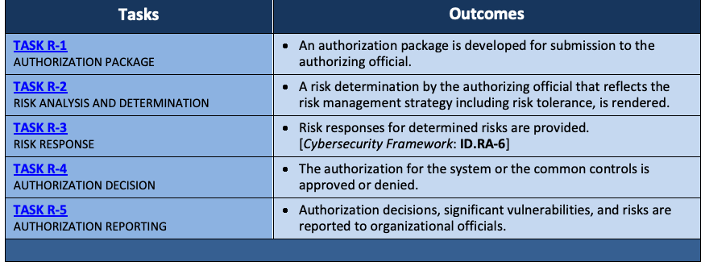
抽出したテキスト（原本と未照合・参考）
| Tasks | Outcomes |
| TASK R-1 | • An authorization package is developed for submission to the |
| AUTHORIZATION PACKAGE | authorizing official. |
| TASK R-2 | • A risk determination by the authorizing official that reflects the |
| RISK ANALYSIS AND DETERMINATION | risk management strategy including risk tolerance, is rendered. |
| TASK R-3 | • Risk responses for determined risks are provided. |
| RISK RESPONSE | [Cybersecurity Framework: ID.RA-6] |
| TASK R-4 | • The authorization for the system or the common controls is |
| AUTHORIZATION DECISION | approved or denied. |
| TASK R-5 | • Authorization decisions, significant vulnerabilities, and risks are |
| AUTHORIZATION REPORTING | reported to organizational officials. |
抽出したテキストの訳（原本と未照合・参考）
| タスク | 成果 |
| TASK R-1 | • 認可担当者に提出する認可パッケージが作成され、 |
| 認可パッケージ | 提出される。 |
| TASK R-2 | • リスク許容度を含むリスク管理戦略を反映した、認可担当者によるリスク判断が |
| リスク分析と判断 | 下される。 |
| TASK R-3 | • 判断されたリスクに対するリスク対応が提示される。 |
| リスク対応 | [Cybersecurity Framework: ID.RA-6] |
| TASK R-4 | • システムまたは共通管理策に対する認可が |
| 認可決定 | 承認または拒否される。 |
| TASK R-5 | • 認可決定、重大な脆弱性、およびリスクが |
| 認可に関する報告 | 組織の職員に報告される。 |
Quick link to summary table for RMF tasks, responsibilities, and supporting roles.
RMFタスク、責任、および支援する役割の概要表へのクイックリンク。
AUTHORIZATION PACKAGE
認可パッケージ
TASK R-1 Assemble the authorization package and submit the package to the authorizing official for an authorization decision.
タスク R-1 認可パッケージを取りまとめ、認可判断のために認可責任者に提出する。
Potential Inputs: Security and privacy plans; security and privacy assessment reports; plan of action and milestones; supporting assessment evidence or other documentation, as required.
想定される入力: セキュリティ計画およびプライバシー計画; セキュリティ評価報告書およびプライバシー評価報告書; 行動計画およびマイルストーン; 必要に応じて、評価を裏付ける証拠またはその他の文書。
Expected Outputs: Authorization package (with an executive summary), which may be generated from a security or privacy management tool94 for submission to the authorizing official.
想定される出力：認可責任者に提出するための認可パッケージ（エグゼクティブサマリーを含む）。これはセキュリティまたはプライバシーの管理ツール94から生成してもよい。
Primary Responsibility: System Owner; Common Control Provider; Senior Agency Official for Privacy.95
主たる責任：システムオーナー、共通管理策提供者、プライバシー担当上級政府機関職員。95
Supporting Roles: System Security Officer; System Privacy Officer; Senior Agency Information Security Officer; Control Assessor.
支援的役割：システムセキュリティ担当者、システムプライバシー担当者、上級政府機関情報セキュリティ責任者、管理策評価者。
System Development Life Cycle Phase: New – Implementation/Assessment.
システム開発ライフサイクルの段階: 新規 – 実装／評価。
Existing – Operations/Maintenance.
既存 – 運用／保守。
Discussion: Authorization packages96 include security and privacy plans, security and privacy assessment reports, plans of action and milestones, and an executive summary. Additional information can be included in the authorization package at the request of the authorizing official. Organizations maintain version and change control as the information in the authorization package is updated. Providing timely updates to the plans, assessment reports, and plans of action and milestones on an ongoing basis supports the concept of near real-time risk management and ongoing authorization, and can be used for reauthorization actions, if required.
考察：認可パッケージ96には、セキュリティ計画とプライバシー計画、セキュリティとプライバシーの評価報告書、行動計画とマイルストーン、およびエグゼクティブサマリーが含まれる。認可責任者の要請に応じて、追加の情報を認可パッケージに含めることができる。組織は、認可パッケージ内の情報が更新されるのに合わせて、版管理と変更管理を維持する。計画、評価報告書、行動計画とマイルストーンを継続的に適時更新することは、ほぼリアルタイムのリスク管理と継続的認可という概念を支え、必要な場合には再認可の手続にも使用できる。
The senior agency official for privacy reviews the authorization package for systems that process PII to ensure compliance with applicable privacy requirements and to manage privacy risks, prior to authorizing officials making risk determination and acceptance decisions.
プライバシー担当機関上級職員は、PIIを処理するシステムの認可パッケージを、適用されるプライバシー要件への準拠を確保しプライバシーリスクを管理するためにレビューする。このレビューは、認可担当者がリスクの判断および受容に関する決定を行う前に実施する。
The information in the authorization package is used by authorizing officials to make informed, risk-based decisions. When controls are implemented by an external provider through contracts, interagency agreements, lines of business arrangements, licensing agreements, or supply chain arrangements, the organization ensures that the information needed to make risk-based decisions is made available by the provider.
認可担当者は、十分な情報に基づくリスクベースの決定を行うために、認可パッケージ内の情報を使用する。契約、省庁間協定、事業分野間の取り決め、ライセンス契約、またはサプライチェーンの取り決めを通じて外部プロバイダーが管理策を実装する場合、組織は、リスクベースの決定に必要な情報をプロバイダーが利用可能にすることを確保する。
The authorization package may be provided to the authorizing official in hard copy or electronically or may be generated using an automated security/privacy management and reporting tool. Organizations can use automated support tools in preparing and managing the content of the authorization package. Automated support tools provide an effective vehicle for maintaining and updating information for authorizing officials regarding the ongoing security and privacy posture of information systems within the organization.
認可パッケージは、紙媒体または電子的に認可担当者に提供することも、自動化されたセキュリティ／プライバシー管理・報告ツールを使って生成することもできる。組織は、認可パッケージの内容を準備し管理する際に、自動化された支援ツールを使用できる。自動化された支援ツールは、組織内の情報システムの継続的なセキュリティ態勢およびプライバシー態勢に関する情報を、認可担当者向けに維持し更新する効果的な手段となる。
When an information system is under ongoing authorization, the authorization package is presented to the authorizing official via automated reports to provide information in the most efficient and timely manner possible.97 Information to be presented to the authorizing official in assessment reports is generated in the format and with the frequency determined by the organization using information from the information security and privacy continuous monitoring programs.
情報システムが継続的認可の下にある場合、可能な限り効率的かつ適時に情報を提供するため、認可パッケージは自動化された報告によって認可責任者に提示される。97 評価報告書で認可責任者に提示する情報は、情報セキュリティとプライバシーの継続的モニタリングプログラムから得た情報を用いて、組織が定めた形式と頻度で生成される。
The assessment reports presented to the authorizing official include information about deficiencies in system-specific, hybrid, and common controls (i.e., other than satisfied findings determined by assessors). The authorizing official uses automated security/privacy management and reporting tools or other automated methods, whenever practicable, to access the security and privacy plans and the plans of action and milestones. The authorization documents are updated at an organization-defined frequency using automated or manual processes in accordance with the risk management objectives of the organization.98
認可責任者に提示される評価報告書には、システム固有の管理策、ハイブリッド管理策、および共通管理策の不備（すなわち、評価者が「充足」以外と判断した所見）に関する情報が含まれる。認可責任者は、実行可能な場合は常に、自動化されたセキュリティ／プライバシーの管理・報告ツールまたはその他の自動化された手段を用いて、セキュリティ計画とプライバシー計画、および行動計画とマイルストーンにアクセスする。認可文書は、組織のリスク管理の目的に従い、自動または手動のプロセスを用いて、組織が定めた頻度で更新される。98
References: [OMB A-130]; [SP 800-18]; [SP 800-160 v1] (Risk Management Process); [SP 800-161] (SCRM Plans).
参考文献：[OMB A-130]、[SP 800-18]、[SP 800-160 v1]（リスク管理プロセス）、[SP 800-161]（SCRM 計画）。
RISK ANALYSIS AND DETERMINATION
リスク分析および判定
TASK R-2 Analyze and determine the risk from the operation or use of the system or the provision of common controls.
タスク R-2 システムの運用もしくは使用、または共通管理策の提供から生じるリスクを分析し、判断する。
Potential Inputs: Authorization package; supporting assessment evidence or other documentation as required; information provided by the senior accountable official for risk management or risk executive (function); organizational risk management strategy and risk tolerance; organization- and system-level risk assessment results.
想定される入力: 認可パッケージ; 必要に応じた、評価を裏付ける証拠またはその他の文書; リスク管理上級責任者またはリスクエグゼクティブ（機能）から提供された情報; 組織のリスク管理戦略およびリスク許容度; 組織レベルおよびシステムレベルのリスク評価結果。
Expected Outputs: Risk determination.
期待される出力: リスク判定。
Primary Responsibility: Authorizing Official or Authorizing Official Designated Representative.
主な責任者: 認可担当者または認可担当者の指定代理人。
Supporting Roles: Senior Accountable Official for Risk Management or Risk Executive (Function); Senior Agency Information Security Officer; Senior Agency Official for Privacy.
支援する役割: リスク管理上級責任者またはリスクエグゼクティブ（機能）; 機関上級情報セキュリティ責任者; プライバシー担当機関上級職員。
System Development Life Cycle Phase: New – Implementation/Assessment.
システム開発ライフサイクルの段階: 新規 – 実装／評価。
Existing – Operations/Maintenance.
既存 – 運用／保守。
Discussion: The authorizing official or designated representative, in collaboration with the senior agency information security officer and the senior agency official for privacy (for information systems processing PII), analyzes the information in the authorization package provided by the control assessor, system owner, or common control provider, and finalizes the determination of risk. Further discussion with the control assessor, system owner, or common control provider may be necessary to help ensure a thorough understanding of risk by the authorizing official.
考察：認可責任者またはその指名代理人は、上級政府機関情報セキュリティ責任者およびプライバシー担当上級政府機関職員（PII を処理する情報システムの場合）と協力して、管理策評価者、システムオーナー、または共通管理策提供者が提供した認可パッケージの情報を分析し、リスクの判断を確定する。認可責任者がリスクを十分に理解できるよう、管理策評価者、システムオーナー、または共通管理策提供者とさらに協議する必要が生じることもある。
Risk assessments are employed to provide information99 that may influence the risk analysis and determination. The senior accountable official for risk management or risk executive (function) may provide additional information to the authorizing official that is considered in the final determination of risk to organizational operations and assets, individuals, other organizations, and the Nation resulting from either the operation or use of the system or the provision of common controls. The additional information may include, for example, organizational risk tolerance, dependencies among systems and controls, mission and business requirements, the criticality of the missions or business functions supported by the system, or the risk management strategy.
リスクアセスメントは、リスクの分析と判断に影響を与えうる情報99を提供するために用いられる。リスク管理の上級責任者またはリスクエグゼクティブ（機能）は、システムの運用もしくは使用、または共通管理策の提供から生じる、組織の業務と資産、個人、他の組織、および国家に対するリスクの最終判断において考慮される追加情報を、認可責任者に提供することがある。追加情報には、例えば、組織のリスク許容度、システム間および管理策間の依存関係、ミッション要件と業務要件、システムが支援するミッションまたは業務機能の重要度、あるいはリスク管理戦略が含まれる。
The authorizing official analyzes the information provided by the senior accountable official for risk management or risk executive (function) and information provided by the system owner or common control provider in the authorization package when making a risk determination. Any additional information provided by the senior accountable official for risk management or risk executive (function) is documented and included, to the extent it is relevant, as part of the authorization decision (see Task R-4). The authorizing official may also use an automated security/privacy management and reporting tool to annotate senior accountable official for risk management or risk executive (function) input.
認可担当者は、リスク判定を行う際、リスク管理上級責任者またはリスクエグゼクティブ（機能）から提供された情報と、システム所有者または共通管理策プロバイダーが認可パッケージで提供した情報を分析する。リスク管理上級責任者またはリスクエグゼクティブ（機能）から提供された追加情報は、関連する範囲で文書化し、認可決定の一部として含める（Task R-4 を参照）。認可担当者は、リスク管理上級責任者またはリスクエグゼクティブ（機能）からの入力に注釈を付けるため、自動化されたセキュリティ／プライバシー管理・報告ツールを使用することもできる。
When the system is operating under an ongoing authorization, the risk determination task is effectively unchanged. The authorizing official analyzes the relevant security and privacy information provided by the automated security/privacy management and reporting tool to determine the current security and privacy posture of the system.
システムが継続的認可の下で運用されている場合、リスク判定タスクの実質は変わらない。認可担当者は、自動化されたセキュリティ／プライバシー管理・報告ツールから提供される関連するセキュリティ情報およびプライバシー情報を分析し、システムの現在のセキュリティ態勢およびプライバシー態勢を判断する。
References: [OMB A-130]; [SP 800-30]; [SP 800-39] (Organization, Mission/Business Process, and System Levels); [SP 800-137]; [SP 800-160 v1] (Risk Management Process); [IR 8062].
参考文献: [OMB A-130]; [SP 800-30]; [SP 800-39] (Organization, Mission/Business Process, and System Levels); [SP 800-137]; [SP 800-160 v1] (Risk Management Process); [IR 8062].
RISK RESPONSE
リスク対応
TASK R-3 Identify and implement a preferred course of action in response to the risk determined.
TASK R-3 判定されたリスクへの対応として、望ましい行動方針を特定し、実施する。
Potential Inputs: Authorization package; risk determination; organization- and system-level risk assessment results.
想定される入力: 認可パッケージ; リスク判定; 組織レベルおよびシステムレベルのリスク評価結果。
Expected Outputs: Risk responses for determined risks.
期待される出力: 判定されたリスクに対するリスク対応。
Primary Responsibility: Authorizing Official or Authorizing Official Designated Representative.
主な責任者: 認可担当者または認可担当者の指定代理人。
Supporting Roles: Senior Accountable Official for Risk Management or Risk Executive (Function); Senior Agency Information Security Officer; Senior Agency Official for Privacy; System Owner or Common Control Provider; Information Owner or Steward; Systems Security Engineer; Privacy Engineer; System Security Officer; System Privacy Officer.
支援する役割: リスク管理上級責任者またはリスクエグゼクティブ（機能）; 機関上級情報セキュリティ責任者; プライバシー担当機関上級職員; システム所有者または共通管理策プロバイダー; 情報所有者またはスチュワード; システムセキュリティエンジニア; プライバシーエンジニア; システムセキュリティ責任者; システムプライバシー責任者。
System Development Life Cycle Phase: New – Implementation/Assessment.
システム開発ライフサイクルの段階: 新規 – 実装／評価。
Existing – Operations/Maintenance.
既存 – 運用／保守。
Discussion: After risk is analyzed and determined, organizations can respond to risk in a variety of ways, including acceptance of risk and mitigation of risk. Existing risk assessment results and risk assessment techniques may be used to help determine the preferred course of action for the risk response.100 When the response to risk is mitigation, the planned mitigation actions are included in and tracked using the plan of action and milestones. Once mitigated, assessors reassess the controls. Control reassessments determine the extent to which remediated controls are implemented correctly, operating as intended, and producing the desired outcome with respect to meeting the security and privacy requirements for the system and the organization. The assessors update the assessment reports with the findings from the reassessment, but do not change the original assessment results. The security and privacy plans are updated based on the findings of the control assessments and any remediation actions taken. The updated plans reflect the state of the controls after the initial assessment and any modifications by the system owner or common control provider in addressing recommendations for corrective actions.
考察：リスクを分析・判断した後、組織はリスクの受容やリスクの低減など、さまざまな方法でリスクに対応できる。既存のリスクアセスメントの結果とリスクアセスメントの手法を用いて、リスク対応として望ましい行動方針を決定する助けとすることができる。100 リスクへの対応が低減である場合、計画された低減措置は行動計画とマイルストーンに含められ、それを用いて追跡される。低減措置の実施後、評価者は管理策を再評価する。管理策の再評価では、是正された管理策が、システムと組織のセキュリティ要件およびプライバシー要件を満たすという観点から、どの程度正しく実装され、意図したとおりに動作し、望ましい結果を生み出しているかを判断する。評価者は再評価の所見で評価報告書を更新するが、元の評価結果は変更しない。セキュリティ計画とプライバシー計画は、管理策評価の所見と実施された是正措置に基づいて更新される。更新された計画は、初回評価後の管理策の状態と、是正措置の推奨事項に対応するためにシステムオーナーまたは共通管理策提供者が行った変更を反映する。
At the completion of the control reassessments, security and privacy plans contain an accurate description of implemented controls, including compensating controls. When the response to risk is acceptance, the deficiencies found during the assessment process remain documented in the security and privacy assessment reports and are monitored for changes to the risk factors.101 Because the authorizing official is the only person who can accept risk, the authorizing official is responsible for reviewing the assessment reports and plans of action and milestones and determining whether the identified risks need to be mitigated prior to authorization. Decisions on the most appropriate course of action for responding to risk may include some form of prioritization. Some risks may be of greater concern to organizations than other risks. In that case, more resources may need to be directed at addressing higher-priority risks versus lower-priority risks. Prioritizing risk response does not necessarily mean that the lower-priority risks are ignored. Rather, it could mean that fewer resources are directed at addressing the lower-priority risks, or that the lower-priority risks are addressed later. A key part of the risk-based decision process is the recognition that regardless of the risk response, there remains a degree of residual risk. Organizations determine acceptable degrees of residual risk based on organizational risk tolerance.
管理策の再評価が完了した時点で、セキュリティ計画とプライバシー計画には、代替管理策を含め、実装された管理策が正確に記述されている。リスクへの対応が受容である場合、評価プロセスで発見された不備はセキュリティとプライバシーの評価報告書に記録されたまま残り、リスク要因の変化について監視される。101 リスクを受容できるのは認可責任者だけであるため、認可責任者は、評価報告書と行動計画とマイルストーンをレビューし、特定されたリスクを認可前に低減する必要があるかどうかを判断する責任を負う。リスク対応として最も適切な行動方針に関する決定には、何らかの優先順位付けが含まれることがある。組織にとって、一部のリスクは他のリスクよりも懸念が大きい場合がある。その場合、優先度の低いリスクよりも優先度の高いリスクへの対処に、より多くの資源を振り向ける必要があるかもしれない。リスク対応に優先順位を付けることは、優先度の低いリスクを無視することを必ずしも意味しない。むしろ、優先度の低いリスクへの対処に振り向ける資源を減らすこと、または優先度の低いリスクに後で対処することを意味しうる。リスクに基づく意思決定プロセスの重要な点は、どのようなリスク対応をとっても、ある程度の残存リスクが残ることを認識することである。組織は、組織のリスク許容度に基づいて、受容可能な残存リスクの程度を決定する。
References: [SP 800-30]; [SP 800-39] (Organization, Mission/Business Process, and System Levels); [SP 800-160 v1] (Risk Management Process); [IR 8062]; [IR 8179]; [NIST CSF] (Core [Identify Function]).
参考文献: [SP 800-30]; [SP 800-39] (Organization, Mission/Business Process, and System Levels); [SP 800-160 v1] (Risk Management Process); [IR 8062]; [IR 8179]; [NIST CSF] (Core [Identify Function]).
AUTHORIZATION DECISION
認可決定
TASK R-4 Determine if the risk from the operation or use of the information system or the provision or use of common controls is acceptable.
翻訳準備中
Potential Inputs: Risk responses for determined risks.
想定される入力: 判定されたリスクに対するリスク対応。
Expected Outputs: Authorization to operate, authorization to use, common control authorization; denial of authorization to operate, denial of authorization to use, denial of common control authorization.
期待される出力: 運用認可、利用認可、共通管理策の認可; 運用認可の拒否、利用認可の拒否、共通管理策の認可の拒否。
Primary Responsibility: Authorizing Official.
主な責任者: 認可担当者。
Supporting Roles: Senior Accountable Official for Risk Management or Risk Executive (Function); Chief Information Officer; Senior Agency Information Security Officer; Senior Agency Official for Privacy; Authorizing Official Designated Representative.
支援する役割: リスク管理上級責任者またはリスクエグゼクティブ（機能）; 最高情報責任者; 機関上級情報セキュリティ責任者; プライバシー担当機関上級職員; 認可担当者の指定代理人。
System Development Life Cycle Phase: New – Implementation/Assessment.
システム開発ライフサイクルの段階: 新規 – 実装／評価。
Existing – Operations/Maintenance.
既存 – 運用／保守。
Discussion: The explicit acceptance of risk is the responsibility of the authorizing official and cannot be delegated to other officials within the organization. The authorizing official considers many factors when deciding if the risk to the organization’s operations (including mission, functions, image, and reputation) and assets, individuals, other organizations, or the Nation, is acceptable. Balancing security and privacy considerations with mission and business needs is paramount to achieving an acceptable risk-based authorization decision.102 The authorizing official issues an authorization decision for the system or for organization-designated common controls after reviewing the information in the authorization package, input from other organizational officials (see Task R-2), and other relevant information that may affect the authorization decision. The authorization package provides the most current information on the security and privacy posture of the system or the common controls.
翻訳準備中
The authorizing official consults with the Senior Accountable Official for Risk Management or the Risk Executive (Function) prior to making the final authorization decision for the information system or the common controls. Because there are potentially significant dependencies among organizational systems and with external systems, the authorization decisions for individual systems consider the current residual risk, organizational plans of action and milestones, and the risk tolerance of the organization.
認可担当者は、情報システムまたは共通管理策に対する最終認可決定を行う前に、リスク管理上級責任者またはリスクエグゼクティブ（機能）と協議する。組織内のシステム間および外部システムとの間には重要な依存関係が存在する可能性があるため、個々のシステムの認可決定では、現在の残留リスク、組織の行動計画およびマイルストーン、ならびに組織のリスク許容度を考慮する。
The authorization decision is conveyed by the authorizing official to the system owner or common control provider, and other organizational officials, as appropriate.103 The authorization decision also conveys the terms and conditions for the authorization to operate; the authorization termination date or time-driven authorization frequency; input from the senior accountable official for risk management or risk executive (function), if provided; and for common control authorizations, the system impact level supported by the common controls.
翻訳準備中
For systems, the authorization decision indicates to the system owner whether the system is authorized to operate or authorized to use, or not authorized to operate or not authorized to use. For common controls, the authorization decision indicates to the common control provider and to the system owners of inheriting systems, whether the common controls are authorized to be provided or not authorized to
システムの場合、認可決定は、システム所有者に対し、システムが運用認可もしくは利用認可を受けたか、または運用もしくは利用を認可されなかったかを示す。共通管理策の場合、認可決定は、共通管理策プロバイダーおよびそれを継承するシステムの所有者に対し、共通管理策が提供を認可されるか、または認可されない
The authorization termination date is established by the authorizing official and indicates when the authorization expires. Organizations may eliminate the authorization termination date if the system is operating under an ongoing authorization—that is, the continuous monitoring program is sufficiently robust and mature to provide the authorizing official with the needed information to conduct ongoing risk determination and risk acceptance activities regarding the security and privacy posture of the system and the ongoing effectiveness of the controls employed within and inherited by the system.
認可の終了日は認可担当者が定め、認可の有効期限を示す。システムが継続的認可の下で運用されている場合、継続的モニタリングプログラムが十分に堅牢かつ成熟しており、認可担当者がシステムのセキュリティ態勢およびプライバシー態勢と、システム内で使用または継承される管理策の継続的な有効性について、継続的なリスク判定およびリスク受容を行うために必要な情報を提供できるとき、組織は認可の終了日をなくすことができる。
The authorization decision is included with the authorization package and is transmitted to the system owner or common control provider. Upon receipt of the authorization decision and the authorization package, the system owner or common control provider acknowledges and implements the terms and conditions of the authorization. The organization ensures that the authorization package, including the authorization decision for systems and common controls, is made available to organizational officials (e.g., system owners inheriting common controls; chief information officers; senior accountable officials for risk management or risk executive [function]; senior agency information security officers; senior agency officials for privacy; and system security and privacy officers). The authorizing official verifies on an ongoing basis as part of continuous monitoring (see Task M-2) that the established terms and conditions for authorization are being followed by the system owner or common control provider.
認可決定は認可パッケージに含められ、システム所有者または共通管理策プロバイダーに送付される。認可決定および認可パッケージを受領したシステム所有者または共通管理策プロバイダーは、認可の条件を承認し、実施する。組織は、システムおよび共通管理策に対する認可決定を含む認可パッケージを、組織の職員（例: 共通管理策を継承するシステムの所有者; 最高情報責任者; リスク管理上級責任者またはリスクエグゼクティブ [function]; 機関上級情報セキュリティ責任者; プライバシー担当機関上級職員; システムセキュリティ責任者およびシステムプライバシー責任者）が利用できるようにする。認可担当者は、継続的モニタリングの一環として継続的に（Task M-2 を参照）、システム所有者または共通管理策プロバイダーが定められた認可条件に従っていることを検証する。
When the system is operating under ongoing authorization, the authorizing official continues to be responsible and accountable for explicitly understanding and accepting the risk of continuing to operate or use the system or continuing to provide common controls for inheritance. For ongoing authorization, the authorization frequency is specified in lieu of an authorization termination date. The authorizing official reviews the information with the specific time-driven authorization frequency defined by the organization as part of the continuous monitoring strategy and determines if the risk of continued system operation or the provision of common controls remains acceptable. If the risk remains acceptable, the authorizing official acknowledges the acceptance in accordance with organizational processes. If not, the authorizing official indicates that the risk is no longer acceptable and requires further risk response or a full denial of the authorization.
システムが継続的認可の下で運用されている場合も、継続してシステムを運用もしくは使用するリスク、または継承のために共通管理策を継続して提供するリスクを明示的に理解し受容する責任と説明責任は、認可担当者が引き続き負う。継続的認可では、認可の終了日に代えて認可頻度を定める。認可担当者は、継続的モニタリング戦略の一部として組織が定めた特定の時間ベースの頻度に従って情報をレビューし、システム運用の継続または共通管理策の提供によるリスクが引き続き受容可能かどうかを判断する。リスクが引き続き受容可能であれば、認可担当者は組織のプロセスに従ってその受容を確認する。そうでなければ、リスクがもはや受容可能ではなく、さらなるリスク対応または認可の全面的な拒否が必要であることを認可担当者が示す。
The organization determines the level of formality for the process of communicating and acknowledging continued risk acceptance by the authorizing official. The authorizing official may continue to establish and convey the specific terms and conditions to be followed by the system owner or common control provider for continued authorization to operate, continued common control authorization, or continued authorization to use. The terms and conditions of the authorization may be conveyed through an automated management and reporting tool as part of an automated authorization decision.
翻訳準備中
If control assessments are conducted by qualified assessors with the level of independence104 required, the assessment results support ongoing authorization and may be applied to a reauthorization. Organizational policies regarding ongoing authorization and reauthorization are consistent with laws, executive orders, directives, regulations, and policies.
翻訳準備中
Appendix F provides additional guidance on authorization decisions, the types of authorizations, and the preparation of the authorization packages.
付録Fには、認可決定、認可の種類、および認可パッケージの作成に関する追加の指針が示されている。
References: [SP 800-39] (Organization, Mission/Business Process, and System Levels); [SP 800-160 v1] (Risk Management Process).
参考文献: [SP 800-39] (Organization, Mission/Business Process, and System Levels); [SP 800-160 v1] (Risk Management Process).
AUTHORIZATION REPORTING
認可に関する報告
TASK R-5 Report the authorization decision and any deficiencies in controls that represent significant security or privacy risk.
タスク R-5 認可判断と、重大なセキュリティリスクまたはプライバシーリスクとなる管理策の不備を報告する。
Potential Inputs: Authorization decision.
想定される入力: 認可決定。
Expected Outputs: A report indicating the authorization decision for a system or set of common controls; annotation of authorization status in the organizational system registry.
期待される出力: システムまたは一連の共通管理策に対する認可決定を示す報告書; 組織のシステム登録簿に記録された認可状態。
Primary Responsibility: Authorizing Official or Authorizing Official Designated Representative.
主な責任者: 認可担当者または認可担当者の指定代理人。
Supporting Roles: System Owner or Common Control Provider; Information Owner or Steward; System Security Officer; System Privacy Officer; Senior Agency Information Security Officer; Senior Agency Official for Privacy.
支援する役割: システム所有者または共通管理策プロバイダー; 情報所有者またはスチュワード; システムセキュリティ責任者; システムプライバシー責任者; 機関上級情報セキュリティ責任者; プライバシー担当機関上級職員。
System Development Life Cycle Phase: New – Implementation/Assessment.
システム開発ライフサイクルの段階: 新規 – 実装／評価。
Existing – Operations/Maintenance.
既存 – 運用／保守。
Discussion: Authorizing officials report authorization decisions for systems and common controls to designated organizational officials so the individual risk decisions can be viewed in the context of organization-wide security and privacy risk to organizational operations and assets, individuals, other organizations, and the Nation. Reporting occurs only in situations where organizations have delegated the authorization functions to levels of the organization below the head of agency. Authorizing officials also report exploitable deficiencies (i.e., vulnerabilities) in the system or controls noted during the assessment and continuous monitoring that represent significant security or privacy risk. Organizations determine, and the organizational policy reflects, what constitutes a significant security or privacy risk for reporting. Deficiencies that represent significant vulnerabilities and risk can be reported using the Subcategories, Categories, and Functions in the [NIST CSF]. Authorization decisions may be tracked and reflected as part of the organization-wide system registration process at the organization’s discretion (see Task P-18).
説明: 認可担当者は、システムおよび共通管理策に対する認可決定を指定された組織職員に報告する。これにより、個々のリスク決定を、組織の運用および資産、個人、他の組織、ならびに国家に対する組織全体のセキュリティリスクおよびプライバシーリスクの文脈で把握できる。認可機能が機関の長より下位の組織レベルに委任されている場合に限り、報告を行う。認可担当者は、評価および継続的モニタリング中に確認された、重大なセキュリティリスクまたはプライバシーリスクを示す、システムまたは管理策の悪用可能な欠陥（すなわち、脆弱性）も報告する。重大なセキュリティリスクまたはプライバシーリスクに該当するものを組織が決定し、組織のポリシーに反映する。重大な脆弱性およびリスクを示す欠陥は、[NIST CSF]のサブカテゴリ、カテゴリ、および機能を用いて報告できる。組織の裁量により、認可決定を追跡し、組織全体のシステム登録プロセスに反映することもできる（Task P-18 を参照）。
References: [SP 800-39] (Organization, Mission/Business Process, and System Levels); [SP 800-160 v1] (Decision Management and Project Assessment and Control Processes); [NIST CSF] (Core [Identify, Protect, Detect, Respond, Recover Functions]).
参考文献: [SP 800-39] (Organization, Mission/Business Process, and System Levels); [SP 800-160 v1] (Decision Management and Project Assessment and Control Processes); [NIST CSF] (Core [Identify, Protect, Detect, Respond, Recover Functions]).
3.7 MONITOR
3.7 モニタリング（MONITOR）
Purpose
目的
The purpose of the Monitor step is to maintain an ongoing situational awareness about the security and privacy posture of the information system and the organization in support of risk management decisions.
モニタリングステップの目的は、リスク管理の意思決定を支援するために、情報システムと組織のセキュリティ態勢およびプライバシー態勢について継続的な状況認識を維持することである。
MONITOR TASKS
モニタリングタスク
Table 8 provides a summary of tasks and expected outcomes for the RMF Monitor step. Applicable Cybersecurity Framework constructs are also provided.
表8に、RMFのモニタリングステップにおけるタスクと期待される成果の概要を示す。該当するサイバーセキュリティ・フレームワークの構成要素も示す。
TABLE 8: MONITOR TASKS AND OUTCOMES
表8: モニタリングタスクと成果
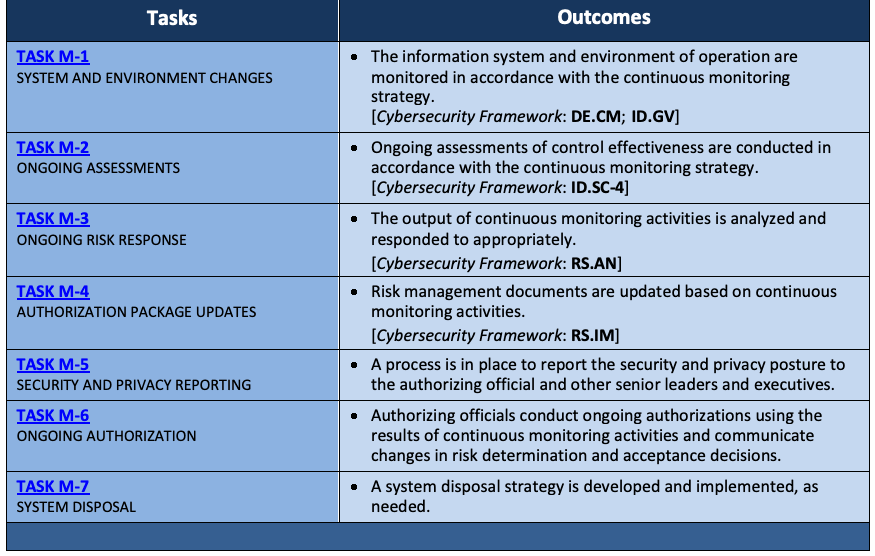
抽出したテキスト（原本と未照合・参考）
Tasks Outcomes TASK M-1 • The information system and environment of operation are SYSTEM AND ENVIRONMENT CHANGES monitored in accordance with the continuous monitoring strategy. [Cybersecurity Framework: DE.CM; ID.GV] TASK M-2 • Ongoing assessments of control effectiveness are conducted in ONGOING ASSESSMENTS accordance with the continuous monitoring strategy. [Cybersecurity Framework: ID.SC-4] TASK M-3 • The output of continuous monitoring activities is analyzed and ONGOING RISK RESPONSE responded to appropriately. [Cybersecurity Framework: RS.AN] TASK M-4 • Risk management documents are updated based on continuous AUTHORIZATION PACKAGE UPDATES monitoring activities. [Cybersecurity Framework: RS.IM] TASK M-5 • A process is in place to report the security and privacy posture to SECURITY AND PRIVACY REPORTING the authorizing official and other senior leaders and executives. TASK M-6 • Authorizing officials conduct ongoing authorizations using the ONGOING AUTHORIZATION results of continuous monitoring activities and communicate changes in risk determination and acceptance decisions. TASK M-7 • A system disposal strategy is developed and implemented, as SYSTEM DISPOSAL needed.抽出したテキストの訳（原本と未照合・参考）
タスク 成果 TASK M-1 • 継続的モニタリング戦略に従い、情報システムおよび運用環境がモニタリングされる。 システムおよび環境の変更 [Cybersecurity Framework: DE.CM; ID.GV] TASK M-2 • 継続的モニタリング戦略に従い、管理策の有効性を継続的に評価する。 継続的評価 [Cybersecurity Framework: ID.SC-4] TASK M-3 • 継続的モニタリング活動の出力が分析され、適切に対応される。 継続的なリスク対応 [Cybersecurity Framework: RS.AN] TASK M-4 • 継続的モニタリング活動に基づいて、リスク管理文書が更新される。 認可パッケージの更新 [Cybersecurity Framework: RS.IM] TASK M-5 • 認可担当者およびその他の上級リーダー・幹部にセキュリティ態勢およびプライバシー態勢を報告するプロセスが確立されている。 セキュリティおよびプライバシーの報告 TASK M-6 • 認可担当者は、継続的モニタリング活動の結果を用いて継続的認可を実施し、リスク判定および受容の決定に関する変更を伝達する。 継続的認可 TASK M-7 • 必要に応じてシステム廃止戦略が策定され、実施される。 システムの廃止抽出したテキストの訳（原本と未照合・参考）
TASK M-2 継続的評価抽出したテキストの訳（原本と未照合・参考）
TASK M-3 継続的なリスク対応抽出したテキストの訳（原本と未照合・参考）
TASK M-4 認可パッケージの更新Quick link to summary table for RMF tasks, responsibilities, and supporting roles.
RMFタスク、責任、および支援する役割の概要表へのクイックリンク。
SYSTEM AND ENVIRONMENT CHANGES
システムおよび環境の変更
TASK M-1 Monitor the information system and its environment of operation for changes that impact the security and privacy posture of the system.
タスク M-1 システムのセキュリティ態勢とプライバシー態勢に影響を与える変化について、情報システムとその運用環境を監視する。
Potential Inputs: Organizational continuous monitoring strategy; organizational configuration management policy and procedures; organizational policy and procedures for handling unauthorized system changes; security and privacy plans; configuration change requests/approvals; system design documentation; security and privacy assessment reports; plans of action and milestones; information from automated and manual monitoring tools.
想定される入力: 組織の継続的モニタリング戦略; 組織の構成管理ポリシーおよび手順; 無許可のシステム変更に対処するための組織のポリシーおよび手順; セキュリティ計画およびプライバシー計画; 構成変更の要求／承認; システム設計文書; セキュリティ評価報告書およびプライバシー評価報告書; 行動計画およびマイルストーン; 自動および手動のモニタリングツールから得られる情報。
Expected Outputs: Updated security and privacy plans; updated plans of action and milestones; updated security and privacy assessment reports.
期待される出力: 更新されたセキュリティ計画およびプライバシー計画; 更新された行動計画およびマイルストーン; 更新されたセキュリティ評価報告書およびプライバシー評価報告書。
Primary Responsibility: System Owner or Common Control Provider; Senior Agency Information Security Officer; Senior Agency Official for Privacy.
主たる責任：システム所有者または共通管理策プロバイダー；機関上級情報セキュリティ担当官；プライバシー担当機関上級職員。
Supporting Roles: Senior Accountable Official for Risk Management or Risk Executive (Function); Authorizing Official or Authorizing Official Designated Representative; Information Owner or Steward; System Security Officer; System Privacy Officer.
支援役割：リスク管理上級説明責任者またはリスクエグゼクティブ（機能）；認可担当者または認可担当者の指定代理人；情報所有者または管理者；システムセキュリティ責任者；システムプライバシー責任者。
System Development Life Cycle Phase: New – Operations/Maintenance.
システム開発ライフサイクルの段階: 新規 – 運用／保守。
Existing – Operations/Maintenance.
既存 – 運用／保守。
Discussion: Systems and environments of operation are in a constant state of change with changes occurring in the technology or machine elements, human elements, and physical or environmental elements. Changes to the technology or machine elements include for example, upgrades to hardware, software, or firmware; changes to the human elements include for example, staff turnover or a reduction in force; and modifications to the surrounding physical and environmental elements include for example, changes in the location of the facility or the physical access controls protecting the facility. Changes made by external providers can be difficult to detect. A disciplined and structured approach to managing, controlling, and documenting changes to systems and environments of operation, and adherence with terms and conditions of the authorization, is an essential element of security and privacy programs. Organizations establish configuration management and control processes to support configuration and change management.105
考察：システムと運用環境は常に変化しており、変化は技術または機械の要素、人的要素、物理的または環境的要素で生じる。技術または機械の要素の変化には、例えばハードウェア、ソフトウェア、ファームウェアのアップグレードが含まれる。人的要素の変化には、例えば職員の離職や人員削減が含まれる。周囲の物理的要素と環境的要素の変更には、例えば施設の所在地の変更や、施設を保護する物理アクセス制御の変更が含まれる。外部提供者による変更は検知が難しいことがある。システムと運用環境への変更を管理、統制、文書化するための規律ある体系的なアプローチと、認可の条件の遵守は、セキュリティプログラムとプライバシープログラムの不可欠な要素である。組織は、構成管理と変更管理を支援するために、構成の管理と統制のプロセスを確立する。105
Common activities within organizations can cause changes to systems or the environments of operation and can have a significant impact on the security and privacy posture of systems. Examples include installing or disposing of hardware, making changes to configurations, and installing patches outside of the established configuration change control process. Unauthorized changes may occur because of purposeful attacks by adversaries or inadvertent errors by authorized personnel. In addition to adhering to the established configuration management process, organizations monitor for unauthorized changes to systems and analyze information about unauthorized changes that have occurred to determine the root cause of the unauthorized change. In addition to monitoring for unauthorized changes, organizations continuously monitor systems and environments of operation for any authorized changes that impact the privacy posture of systems.106
組織内の一般的な活動は、システムや運用環境に変化をもたらし、システムのセキュリティ態勢とプライバシー態勢に重大な影響を与えうる。例えば、ハードウェアの導入や廃棄、構成の変更、確立された構成変更管理プロセスを経ないパッチの適用がある。認可されていない変更は、敵対者による意図的な攻撃や、認可された要員による不注意な誤りによって生じることがある。組織は、確立された構成管理プロセスを遵守することに加え、システムに対する認可されていない変更を監視し、発生した認可されていない変更に関する情報を分析してその根本原因を特定する。また組織は、認可されていない変更の監視に加え、システムのプライバシー態勢に影響を与える認可された変更についても、システムと運用環境を継続的に監視する。106
Once the root cause of an unauthorized change (or an authorized change that impacts the privacy posture of the system) has been determined, organizations respond accordingly (see Task M-3). For example, if the root cause of an unauthorized change is determined to be an adversarial attack, multiple actions could be taken such as invoking incident response processes, adjusting intrusion detection and prevention tools and firewall configurations, or implementing additional or stronger controls to reduce the risk of future attacks. If the root cause of an unauthorized change is determined to be a failure of staff to adhere to established configuration management processes, remedial training for certain individuals may be warranted.
無許可の変更（またはシステムのプライバシー態勢に影響を与える許可済みの変更）の根本原因が特定された後、組織は適切に対応する（Task M-3 を参照）。例えば、無許可の変更の根本原因が敵対者による攻撃と判断された場合、インシデント対応プロセスの発動、侵入検知・防止ツールおよびファイアウォール構成の調整、将来の攻撃リスクを低減するための追加または強化された管理策の実装など、複数の措置を講じることができる。無許可の変更の根本原因が、職員が確立された構成管理プロセスに従わなかったことであると判断された場合、特定の職員への是正訓練が必要となる場合がある。
References: [SP 800-30]; [SP 800-128]; [SP 800-137]; [IR 8062].
参考文献：[SP 800-30]；[SP 800-128]；[SP 800-137]；[IR 8062]。
ONGOING ASSESSMENTS
継続的なアセスメント
Task M-2 Assess the controls implemented within and inherited by the system in accordance with the continuous monitoring strategy.
タスク M-2 継続的モニタリング戦略に従って、システム内で実装された管理策およびシステムが継承する管理策を評価する。
Potential Inputs: Organizational continuous monitoring strategy and system level continuous monitoring strategy (if applicable); security and privacy plans; security and privacy assessment plans; security and privacy assessment reports; plans of action and milestones; information from automated and manual monitoring tools; organization- and system-level risk assessment results; external assessment or audit results (if applicable).
想定される入力：組織レベルの継続的監視戦略およびシステムレベルの継続的監視戦略（該当する場合）；セキュリティ計画およびプライバシー計画；セキュリティアセスメント計画およびプライバシーアセスメント計画；セキュリティアセスメント報告書およびプライバシーアセスメント報告書；行動計画およびマイルストーン；自動および手動の監視ツールから得られる情報；組織レベルおよびシステムレベルのリスクアセスメント結果；外部アセスメントまたは監査の結果（該当する場合）。
Expected Outputs: Updated security and privacy assessment reports.
期待される出力：更新されたセキュリティアセスメント報告書およびプライバシーアセスメント報告書。
Primary Responsibility: Control Assessor.
主な責任者：管理策アセッサ。
Supporting Roles: Authorizing Official or Authorizing Official Designated Representative; System Owner or Common Control Provider; Information Owner or Steward; System Security Officer; System Privacy Officer; Senior Agency Information Security Officer; Senior Agency Official for Privacy.
支援する役割：認可担当者または認可担当者が指名した代表者；システム所有者または共通管理策プロバイダ；情報所有者または管理者；システムセキュリティ責任者；システムプライバシー責任者；上級機関情報セキュリティ責任者；上級機関プライバシー担当者。
System Development Life Cycle Phase: New – Operations/Maintenance.
システム開発ライフサイクル段階：新規－運用／保守。
Existing – Operations/Maintenance.
既存－運用／保守。
Discussion: After an initial system or common control authorization, the organization assesses all controls on an ongoing basis. Ongoing assessment of the control effectiveness is part of the continuous monitoring activities of the organization. The monitoring frequency for each control is based on the organizational continuous monitoring strategy (see Task P-7) and can be supplemented by the system-level continuous monitoring strategy (see Task S-5). Adherence to the terms and conditions specified by the authorizing official as part of the authorization decision are also monitored (see Task M-1). Ongoing control assessment continues as the information generated as part of continuous monitoring is correlated, analyzed, and reported to senior leaders.
説明：システムまたは共通管理策の初回認可後、組織はすべての管理策を継続的にアセスメントする。管理策の有効性に関する継続的アセスメントは、組織の継続的監視活動の一部である。各管理策の監視頻度は、組織の継続的監視戦略（Task P-7 を参照）に基づき、システムレベルの継続的監視戦略（Task S-5 を参照）によって補足できる。認可決定の一環として認可担当者が指定した条件への準拠も監視する（Task M-1 を参照）。継続的監視の一環として生成された情報を相関付け、分析し、上級幹部に報告する間、管理策の継続的アセスメントを続ける。
For ongoing control assessments, assessors have the required degree of independence as determined by the authorizing official.107 Assessor independence during continuous monitoring introduces efficiencies into the process and may allow for reuse of assessment results in support of ongoing authorization and when reauthorization is required.
継続的な管理策評価では、評価者は認可責任者が定めた必要な程度の独立性を有する。107 継続的モニタリング中の評価者の独立性は、プロセスに効率性をもたらし、継続的認可を支援する場合や再認可が必要な場合に評価結果を再利用できるようにすることがある。
To satisfy the annual FISMA security assessment requirement, organizations can use assessment results from control assessments that occurred during authorization, ongoing authorization, or reauthorization; during continuous monitoring; or the during testing and evaluation of systems as part of the SDLC or an audit (provided the assessment results are current, relevant to the determination of control effectiveness, and obtained by assessors with the required degree of independence). Existing assessment results are reused consistent with the reuse policy established by the organization and are supplemented with additional assessments as needed. The reuse of assessment results is helpful in achieving a cost-effective, security program capable of producing the evidence necessary to determine the security posture of information systems and the organization. Finally, the use of automation to support control assessments facilitates a greater frequency, volume, and coverage of assessments.
FISMAの年次セキュリティアセスメント要件を満たすため、組織は、認可、継続的認可、再認可、継続的監視、またはSDLCの一環として実施するシステムのテストおよび評価、あるいは監査で得た管理策アセスメントの結果を利用できる（ただし、アセスメント結果が最新であり、管理策の有効性の判定に関連し、必要な独立性の程度を備えるアセッサが取得したものであること）。既存のアセスメント結果は、組織が定めた再利用方針に従って再利用し、必要に応じて追加のアセスメントで補完する。アセスメント結果の再利用は、情報システムおよび組織のセキュリティ態勢を判定するために必要な証拠を作成できる、費用対効果の高いセキュリティプログラムの実現に役立つ。最後に、自動化を利用して管理策アセスメントを支援することで、アセスメントの頻度、量、および範囲を拡大できる。
References: [SP 800-53A]; [SP 800-137]; [SP 800-160 v1] (Verification, Validation, Operation, and Maintenance Processes); [IR 8011 v1].
参考文献：[SP 800-53A]；[SP 800-137]；[SP 800-160 v1]（検証、妥当性確認、運用、および保守プロセス）；[IR 8011 v1]。
ONGOING RISK RESPONSE
継続的なリスク対応
Task M-3 Respond to risk based on the results of ongoing monitoring activities, risk assessments, and outstanding items in plans of action and milestones.
タスク M-3 継続的なモニタリング活動の結果、リスクアセスメント、および行動計画とマイルストーンの未対応項目に基づいて、リスクに対応する。
Potential Inputs: Security and privacy assessment reports; organization- and system-level risk assessment results; security and privacy plans; plans of action and milestones.
想定される入力：セキュリティアセスメント報告書およびプライバシーアセスメント報告書；組織レベルおよびシステムレベルのリスクアセスメント結果；セキュリティ計画およびプライバシー計画；行動計画およびマイルストーン。
Expected Outputs: Mitigation actions or risk acceptance decisions; updated security and privacy assessment reports.
期待される出力：緩和措置またはリスク受容の決定；更新されたセキュリティアセスメント報告書およびプライバシーアセスメント報告書。
Primary Responsibility: Authorizing Official; System Owner; Common Control Provider.
主な責任者：認可担当者；システム所有者；共通管理策プロバイダ。
Supporting Roles: Senior Accountable Official for Risk Management or Risk Executive (Function); Senior Agency Official for Privacy; Authorizing Official Designated Representative; Information Owner or Steward; System Security Officer; System Privacy Officer; Systems Security Engineer; Privacy Engineer; Security Architect; Privacy Architect.
支援する役割：リスク管理担当上級責任者またはリスク管理幹部（機能）；上級機関プライバシー担当者；認可担当者が指名した代表者；情報所有者または管理者；システムセキュリティ責任者；システムプライバシー責任者；システムセキュリティエンジニア；プライバシーエンジニア；セキュリティアーキテクト；プライバシーアーキテクト。
System Development Life Cycle Phase: New – Operations/Maintenance.
システム開発ライフサイクル段階：新規－運用／保守。
Existing – Operations/Maintenance.
既存－運用／保守。
Discussion: Assessment information produced by an assessor during continuous monitoring is provided to the system owner and the common control provider in updated assessment reports or via reports from automated security/privacy management and reporting tools. The authorizing official determines the appropriate risk response to the assessment findings or approves responses proposed by the system owner and common control provider. The system owner and common control provider subsequently implement the appropriate risk response. When the risk response is acceptance, the findings remain documented in the security and privacy assessment reports and are monitored for changes to risk factors. When the risk response is mitigation, the planned mitigation actions are included in and tracked using the plans of action and milestones. If requested by the authorizing official, control assessors may provide recommendations for remediation actions. Recommendations for remediation actions may also be provided by an automated security/privacy management and reporting tool. An organizational assessment of risk (Task P-3) and system-level risk assessment results (Task P-14) guide and inform the decisions regarding ongoing risk response. Controls that are modified, enhanced, or added as part of ongoing risk response are reassessed by assessors to ensure that the new, modified, or enhanced controls have been implemented correctly, are operating as intended, and producing the desired outcome with respect to meeting the security and privacy requirements of the system.
説明：継続的監視中にアセッサが作成したアセスメント情報は、更新されたアセスメント報告書、または自動化されたセキュリティ／プライバシー管理・報告ツールの報告書を通じて、システム所有者および共通管理策プロバイダに提供される。認可担当者は、アセスメントの所見に対する適切なリスク対応を決定するか、システム所有者および共通管理策プロバイダが提案した対応を承認する。その後、システム所有者および共通管理策プロバイダが適切なリスク対応を実施する。リスク対応が受容である場合、所見はセキュリティアセスメント報告書およびプライバシーアセスメント報告書に引き続き記録され、リスク要因の変化について監視される。リスク対応が緩和である場合、計画された緩和措置を行動計画およびマイルストーンに含め、それを用いて追跡する。認可担当者から求められた場合、管理策アセッサは修正措置の推奨を提示することがある。自動化されたセキュリティ／プライバシー管理・報告ツールも、修正措置の推奨を提示する場合がある。組織レベルのリスクアセスメント（Task P-3）およびシステムレベルのリスクアセスメント結果（Task P-14）は、継続的なリスク対応に関する意思決定を導き、情報を与える。継続的なリスク対応の一環として変更、強化、または追加された管理策は、アセッサが再アセスメントし、新規、変更、または強化された管理策が正しく実装され、意図したとおりに運用され、システムのセキュリティ要件およびプライバシー要件を満たすという点で期待される成果を生み出していることを確認する。
References: [SP 800-30]; [SP 800-53]; [SP 800-53A]; [SP 800-137]; [SP 800-160 v1] (Risk Management Process); [IR 8011 v1]; [IR 8062]; [NIST CSF] (Core [Respond Function]).
参考文献：[SP 800-30]；[SP 800-53]；[SP 800-53A]；[SP 800-137]；[SP 800-160 v1]（リスク管理プロセス）；[IR 8011 v1]；[IR 8062]；[NIST CSF]（コア［対応機能］）。
AUTHORIZATION PACKAGE UPDATES
認可パッケージの更新
Task M-4 Update plans, assessment reports, and plans of action and milestones based on the results of the continuous monitoring process.
タスク M-4 継続的モニタリングプロセスの結果に基づいて、計画、評価報告書、および行動計画とマイルストーンを更新する。
Potential Inputs: Security and privacy assessment reports; organization- and system-level risk assessment results; security and privacy plans; plans of action and milestones.
想定される入力：セキュリティとプライバシーの評価報告書、組織レベルおよびシステムレベルのリスクアセスメント結果、セキュリティ計画とプライバシー計画、行動計画とマイルストーン。
Expected Outputs: Updated security and privacy assessment reports;108 updated plans of action and milestones; updated risk assessment results; updated security and privacy plans.
想定される出力：更新されたセキュリティとプライバシーの評価報告書、108 更新された行動計画とマイルストーン、更新されたリスクアセスメント結果、更新されたセキュリティ計画とプライバシー計画。
Primary Responsibility: System Owner; Common Control Provider.
主な責任者：システム所有者；共通管理策プロバイダ。
Supporting Roles: Information Owner or Steward; System Security Officer; System Privacy Officer; Senior Agency Official for Privacy; Senior Agency Information Security Officer.
支援する役割：情報所有者または管理者；システムセキュリティ責任者；システムプライバシー責任者；上級機関プライバシー担当者；上級機関情報セキュリティ責任者。
System Development Life Cycle Phase: New – Operations/Maintenance.
システム開発ライフサイクル段階：新規－運用／保守。
Existing – Operations/Maintenance.
既存－運用／保守。
Discussion: To achieve near real-time risk management, the organization updates security and privacy plans, security and privacy assessment reports, and plans of action and milestones on an ongoing basis. Updates to the plans reflect modifications to controls based on risk mitigation activities carried out by system owners or common control providers. Updates to control assessment reports reflect additional assessment activities carried out to determine control effectiveness based on implementation details in the plans. Plans of action and milestones are updated based on progress made on the current outstanding items; address security and privacy risks discovered as part of control effectiveness monitoring; and describe how the system owner or common control provider intends to address those risks. The updated information raises awareness of the security and privacy posture of the system and the common controls inherited by the system, thereby, supporting near real-time risk management and the ongoing authorization process.
説明：ほぼリアルタイムのリスク管理を実現するため、組織はセキュリティ計画およびプライバシー計画、セキュリティアセスメント報告書およびプライバシーアセスメント報告書、ならびに行動計画およびマイルストーンを継続的に更新する。計画の更新には、システム所有者または共通管理策プロバイダが実施したリスク緩和活動に基づく管理策の変更を反映する。管理策アセスメント報告書の更新には、計画に記載された実装の詳細に基づいて管理策の有効性を判定するために実施した追加のアセスメント活動を反映する。行動計画およびマイルストーンは、現在の未処理項目の進捗に基づいて更新され、管理策の有効性の監視で発見されたセキュリティリスクおよびプライバシーリスクに対処し、システム所有者または共通管理策プロバイダがそれらのリスクにどう対処する予定かを記述する。更新された情報によって、システムのセキュリティおよびプライバシー態勢と、システムが継承する共通管理策への認識が高まり、それにより、ほぼリアルタイムのリスク管理および継続的認可プロセスを支援する。
The frequency of updates to risk management information is at the discretion of the system owner, common control provider, and authorizing officials in accordance with federal and organizational policies and is consistent with the organizational and system-level continuous monitoring strategies. The updates to information regarding the security and privacy posture of the system and the common controls inherited by the system are accurate and timely since the information provided influences ongoing actions and decisions by authorizing officials and other senior leaders within the organization. The use of automated support tools and organization-wide security and privacy program management practices ensure that authorizing officials can readily access the current security and privacy posture of the system. Ready access to the current security and privacy posture supports continuous monitoring and ongoing authorization and promotes the near real-time management of risk to organizational operations and assets, individuals, other organizations, and the Nation.
リスク管理情報の更新頻度は、連邦政府および組織の方針に従い、組織レベルおよびシステムレベルの継続的監視戦略と整合する範囲で、システム所有者、共通管理策プロバイダ、および認可担当者の裁量に委ねられる。システムのセキュリティおよびプライバシー態勢と、システムが継承する共通管理策に関する情報の更新は、認可担当者および組織内のその他の上級幹部による継続的な行動や意思決定に影響するため、正確かつタイムリーである。自動支援ツールと組織全体のセキュリティおよびプライバシープログラム管理の実践により、認可担当者はシステムの現在のセキュリティおよびプライバシー態勢に容易にアクセスできる。現在のセキュリティおよびプライバシー態勢への容易なアクセスは、継続的監視および継続的認可を支援し、組織の運用および資産、個人、他の組織、ならびに国家に対するリスクのほぼリアルタイムの管理を促進する。
Organizations ensure that information needed for oversight, management, and auditing purposes is not modified or destroyed when updating security and privacy plans, assessment reports, and plans of action and milestones. Providing an effective method to track changes to systems through configuration management procedures is necessary to achieve transparency and traceability in the security and privacy activities of the organization; to obtain individual accountability for any security or privacy actions; and to understand emerging trends in the security and privacy programs of the organization.
組織は、セキュリティ計画およびプライバシー計画、アセスメント報告書、ならびに行動計画およびマイルストーンを更新する際、監督、管理、および監査に必要な情報が変更または破棄されないようにする。構成管理手順を通じてシステムの変更を追跡する効果的な方法を提供することは、組織のセキュリティ活動およびプライバシー活動の透明性と追跡可能性を実現し、セキュリティまたはプライバシーに関する各行動の個人責任を確保し、組織のセキュリティプログラムおよびプライバシープログラムに現れる傾向を理解するために必要である。
References: [SP 800-30]; [SP 800-53A].
参考文献：[SP 800-30]；[SP 800-53A]。
SECURITY AND PRIVACY REPORTING
セキュリティおよびプライバシーの報告
Task M-5 Report the security and privacy posture of the system to the authorizing official and other organizational officials on an ongoing basis in accordance with the organizational continuous monitoring strategy.
タスク M-5 組織の継続的モニタリング戦略に従って、システムのセキュリティ態勢とプライバシー態勢を認可責任者およびその他の組織の責任者に継続的に報告する。
Potential Inputs: Security and privacy assessment reports; plans of action and milestones; organization- and system-level risk assessment results; organization- and system-level continuous monitoring strategy; security and privacy plans; Cybersecurity Framework Profile.
想定される入力：セキュリティとプライバシーの評価報告書、行動計画とマイルストーン、組織レベルおよびシステムレベルのリスクアセスメント結果、組織レベルおよびシステムレベルの継続的モニタリング戦略、セキュリティ計画とプライバシー計画、Cybersecurity Framework プロファイル。
Expected Outputs: Security and privacy posture reports.109
想定される出力：セキュリティ態勢とプライバシー態勢の報告書。109
Primary Responsibility: System Owner; Common Control Provider; Senior Agency Information Security Officer; Senior Agency Official for Privacy.
主な責任者：システム所有者；共通管理策プロバイダ；上級機関情報セキュリティ責任者；上級機関プライバシー担当者。
Supporting Roles: System Security Officer; System Privacy Officer.
支援する役割：システムセキュリティ責任者；システムプライバシー責任者。
System Development Life Cycle Phase: New – Operations/Maintenance.
システム開発ライフサイクル段階：新規－運用／保守。
Existing – Operations/Maintenance.
既存－運用／保守。
Discussion: The results of monitoring activities are documented and reported to the authorizing official and other selected organizational officials on an ongoing basis in accordance with the organizational continuous monitoring strategy. Other organizational officials who may receive security and privacy posture reports include, for example, chief information officer, senior agency information security officer, senior agency official for privacy, senior accountable official for risk management or risk executive (function), information owner or steward, incident response roles, and contingency planning roles. Security and privacy posture reporting can be event-driven, time-driven, or event- and time-driven.110 The reports provide the authorizing official and other organizational officials with information regarding the security and privacy posture of the systems including the effectiveness of implemented controls. Security and privacy posture reports describe the ongoing monitoring activities employed by system owners or common control providers. The reports also include information about security and privacy risks in the systems and environments of operation discovered during control assessments, auditing, and continuous monitoring and how system owners or common control providers plan to address those risks.
考察：モニタリング活動の結果は、組織の継続的モニタリング戦略に従って文書化され、認可責任者および選定されたその他の組織の責任者に継続的に報告される。セキュリティ態勢とプライバシー態勢の報告書を受け取りうるその他の組織の責任者には、例えば、最高情報責任者、上級政府機関情報セキュリティ責任者、プライバシー担当上級政府機関職員、リスク管理の上級責任者またはリスクエグゼクティブ（機能）、情報オーナーまたは情報スチュワード、インシデント対応の役割、緊急時計画の役割がある。セキュリティ態勢とプライバシー態勢の報告は、イベント駆動型、時間駆動型、またはイベント駆動と時間駆動の併用型とすることができる。110 報告書は、実装された管理策の有効性を含め、システムのセキュリティ態勢とプライバシー態勢に関する情報を認可責任者およびその他の組織の責任者に提供する。セキュリティ態勢とプライバシー態勢の報告書は、システムオーナーまたは共通管理策提供者が採用している継続的なモニタリング活動を記述する。報告書にはまた、管理策評価、監査、および継続的モニタリングの過程で発見された、システムと運用環境におけるセキュリティリスクとプライバシーリスクに関する情報と、システムオーナーまたは共通管理策提供者がそれらのリスクにどのように対処する計画であるかも含まれる。
Organizations have flexibility in the breadth, depth, formality, form, and format of security and privacy posture reports. The goal is efficient ongoing communication with the authorizing official and other organizational officials as necessary, conveying the current security and privacy posture of systems and environments of operation and how the current posture affects individuals, organizational missions, and business functions. At a minimum, security and privacy posture reports summarize changes to the security and privacy plans, security and privacy assessment reports, and plans of action and milestones that have occurred since the last report. The use of automated security and privacy management and reporting tools (e.g., a dashboard) by the organization facilitates the effectiveness and timeliness of security and privacy posture reporting.
組織には、セキュリティおよびプライバシー態勢報告書の対象範囲、詳細度、形式性、形態、および書式に関する柔軟性がある。目標は、必要に応じて認可担当者およびその他の組織関係者と効率的に継続連絡を取り、システムおよび運用環境の現在のセキュリティおよびプライバシー態勢と、その現在の態勢が個人、組織のミッション、および業務機能に及ぼす影響を伝えることである。最低限、セキュリティおよびプライバシー態勢報告書では、前回の報告以降に生じたセキュリティ計画およびプライバシー計画、セキュリティアセスメント報告書およびプライバシーアセスメント報告書、ならびに行動計画およびマイルストーンの変更を要約する。組織が自動化されたセキュリティおよびプライバシー管理・報告ツール（例：ダッシュボード）を使用すると、セキュリティおよびプライバシー態勢の報告の有効性と適時性が高まる。
The frequency of security and privacy posture reports is at the discretion of the organization and in compliance with federal and organizational policies. Reports occur at appropriate intervals to transmit security and privacy information about systems or common controls but not so frequently as to generate unnecessary work or expense. Authorizing officials use the security and privacy posture reports and consult with the senior accountable official for risk management or risk executive (function), senior agency information security officer, and senior agency official for privacy to determine if a reauthorization action is necessary.
セキュリティおよびプライバシー態勢報告書の頻度は、連邦政府および組織の方針に従う範囲で、組織の裁量に委ねられる。報告書は、システムまたは共通管理策に関するセキュリティ情報およびプライバシー情報を伝達する適切な間隔で作成されるが、不必要な作業や費用が発生するほど頻繁には作成しない。認可担当者はセキュリティおよびプライバシー態勢報告書を使用し、リスク管理担当上級責任者またはリスク管理幹部（機能）、上級機関情報セキュリティ責任者、および上級機関プライバシー担当者と協議して、再認可措置が必要かどうかを判断する。
Security and privacy posture reports are marked, protected, and handled in accordance with federal and organizational policies. Security and privacy posture reports can be used to satisfy FISMA reporting requirements for documenting remediation actions for security and privacy weaknesses or deficiencies. Reporting on security and privacy posture is intended to be ongoing and should not be interpreted as requiring the time, expense, and formality associated with the information provided for the initial authorization. Rather, reporting is conducted in a cost-effective manner consistent with achieving the reporting objectives.
セキュリティおよびプライバシー態勢報告書には、連邦政府および組織の方針に従って表示、保護、および取り扱いを行う。セキュリティおよびプライバシー態勢報告書は、セキュリティ上およびプライバシー上の弱点または欠陥に対する是正措置を文書化するFISMA報告要件を満たすために使用できる。セキュリティおよびプライバシー態勢の報告は継続的に行うことを意図しており、初回認可時に提供する情報に伴う時間、費用、および形式性を要求するものと解釈するべきではない。むしろ、報告は報告目的の達成と整合する費用対効果の高い方法で実施する。
References: [SP 800-53A]; [SP 800-137]; [NIST CSF] (Core [Identify, Protect, Detect, Respond, Recover Functions]).
参考文献：[SP 800-53A]；[SP 800-137]；[NIST CSF]（コアの[Identify, Protect, Detect, Respond, Recover Functions]）。
ONGOING AUTHORIZATION
継続的認可
Task M-6 Review the security and privacy posture of the system on an ongoing basis to determine whether the risk remains acceptable.
タスク M-6 リスクが引き続き受容可能かどうかを判断するために、システムのセキュリティ態勢とプライバシー態勢を継続的にレビューする。
Potential Inputs: Risk tolerance; security and privacy posture reports; plans of action and milestones; organization- and system-level risk assessment results; security and privacy plans.
想定される入力：リスク許容度；セキュリティおよびプライバシー態勢報告書；行動計画およびマイルストーン；組織レベルおよびシステムレベルのリスクアセスメント結果；セキュリティ計画およびプライバシー計画。
Expected Outputs: A determination of risk; ongoing authorization to operate, ongoing authorization to use, ongoing common control authorization; denial of ongoing authorization to operate, denial of ongoing authorization to use, denial of ongoing common control authorization.
期待される出力：リスクの判定；運用継続の認可、使用継続の認可、共通管理策の継続認可；運用継続の認可拒否、使用継続の認可拒否、共通管理策の継続認可の拒否。
Primary Responsibility: Authorizing Official.
主な責任者：認可担当者。
Supporting Roles: Senior Accountable Official for Risk Management or Risk Executive (Function); Chief Information Officer; Senior Agency Information Security Officer; Senior Agency Official for Privacy; Authorizing Official Designated Representative.
支援役割：リスク管理上級説明責任者またはリスクエグゼクティブ（機能）；最高情報責任者；機関上級情報セキュリティ担当官；プライバシー担当機関上級職員；認可担当者の指定代理人。
System Development Life Cycle Phase: New – Operations/Maintenance.
システム開発ライフサイクル段階：新規－運用／保守。
Existing – Operations/Maintenance.
既存－運用／保守。
Discussion: To employ an ongoing authorization approach, organizations have in place an organization-level and system-level continuous monitoring process to assess implemented controls on an ongoing basis.111 The findings or results from the continuous monitoring process provides useful information to authorizing officials to support near-real time risk-based decision making. In accordance with the guidance in Task R-4, the authorizing official or designated representative reviews the security and privacy posture of the system (including the effectiveness of the implemented controls) on an ongoing basis to determine the current risk to organizational operations and assets, individuals, other organizations, and the Nation. The authorizing official determines whether the current risk is acceptable and provides appropriate direction to the system owner or common control provider. The authorizing official may determine that the risk remains at an acceptable level for continued operation or that the risk is no longer at an acceptable level for continued operation, and may issue a denial of authorization to operate, authorization to use, or common control authorization.
考察：継続的認可のアプローチを採用するため、組織は、実装された管理策を継続的にアセスメントする組織レベルおよびシステムレベルの継続的モニタリングプロセスを整備する。111 継続的モニタリングプロセスから得られる所見または結果は、ほぼリアルタイムのリスクに基づく意思決定を支援する有用な情報を認可権者に提供する。タスクR-4のガイダンスに従い、認可権者または指名された代理人は、システムのセキュリティおよびプライバシーの態勢（実装された管理策の有効性を含む）を継続的にレビューし、組織の業務および資産、個人、他の組織、ならびに国家に対する現在のリスクを判断する。認可権者は、現在のリスクが受容可能かどうかを判断し、システム所有者または共通管理策提供者に適切な指示を与える。認可権者は、リスクが運用継続に受容可能な水準にとどまっていると判断することも、リスクがもはや運用継続に受容可能な水準にないと判断することもでき、運用認可、使用認可、または共通管理策認可の拒否を発行することがある。
The risks may change based on the information provided in the security and privacy posture reports because the reports may indicate changes to the security or privacy risk factors. Determining how changing conditions affect organizational and individual risk is essential for managing privacy risk and maintaining adequate security. By carrying out ongoing risk determination and risk acceptance, authorizing officials can maintain system and common control authorizations over time and transition to ongoing authorization. Reauthorization actions occur only in accordance with federal or organizational policies. The authorizing official conveys updated risk determination and acceptance results to the senior accountable official for risk management or the risk executive (function).
セキュリティおよびプライバシー態勢報告書に示される情報によって、セキュリティリスクまたはプライバシーリスクの要因の変化が示される場合があるため、リスクは変化することがある。状況の変化が組織および個人のリスクにどう影響するかを判断することは、プライバシーリスクを管理し、適切なセキュリティを維持するうえで不可欠である。継続的なリスク判定およびリスク受容を行うことで、認可担当者はシステム認可および共通管理策認可を長期にわたって維持し、継続的認可に移行できる。再認可措置は、連邦政府または組織の方針に従う場合にのみ実施される。認可担当者は、更新されたリスク判定および受容の結果を、リスク管理上級説明責任者またはリスクエグゼクティブ（機能）に伝える。
The use of automated support tools to capture, organize, quantify, visually display, and maintain security and privacy posture information promotes near real-time risk management regarding the risk posture of the organization. The use of metrics and dashboards increases an organization’s capability to make risk-based decisions by consolidating data in an automated fashion and providing the data to decision makers at different levels within the organization in an easy-to-understand format.
セキュリティおよびプライバシーの態勢に関する情報を収集、整理、定量化、視覚的に表示、および維持するための自動化支援ツールを使用することで、組織のリスク態勢に関するほぼリアルタイムのリスク管理が促進される。メトリクスとダッシュボードを使用すると、データが自動的に集約され、組織内のさまざまな階層の意思決定者に理解しやすい形式で提供されるため、リスクに基づく意思決定を行う組織の能力が向上する。
References: [SP 800-30]; [SP 800-39] (Organization, Mission/Business Process, and System Levels); [SP 800-55]; [SP 800-160 v1] (Risk Management Process); [IR 8011 v1]; [IR 8062].
参考文献：[SP 800-30]；[SP 800-39]（組織、ミッション／業務プロセス、およびシステムの各レベル）；[SP 800-55]；[SP 800-160 v1]（リスク管理プロセス）；[IR 8011 v1]；[IR 8062]。
SYSTEM DISPOSAL
システムの廃棄
Task M-7 Implement a system disposal strategy and execute required actions when a system is removed from operation.
タスクM-7 システムを運用から外す際に、システム廃棄戦略を実施し、必要な措置を実行する。
Potential Inputs: Security and privacy plans; organization- and system-level risk assessment results; system component inventory.
想定される入力：セキュリティ計画およびプライバシー計画；組織レベルおよびシステムレベルのリスクアセスメント結果；システムコンポーネントのインベントリ。
Expected Outputs: Disposal strategy; updated system component inventory; updated security and privacy plans.
期待される出力：廃棄戦略；更新されたシステムコンポーネントのインベントリ；更新されたセキュリティ計画およびプライバシー計画。
Primary Responsibility: System Owner.
主な責任者：システム所有者。
Supporting Roles: Authorizing Official or Authorizing Official Designated Representative; Information Owner or Steward; System Security Officer; System Privacy Officer; Senior Accountable Official for Risk
支援する役割：認可担当者または認可担当者が指名した代表者；情報所有者または管理者；システムセキュリティ責任者；システムプライバシー責任者；リスク担当上級説明責任者
Management or Risk Executive (Function); Senior Agency Information Security Officer; Senior Agency Official for Privacy.
経営管理層またはリスクエグゼクティブ（機能）；上級機関情報セキュリティ責任者；上級機関プライバシー担当者。
System Development Life Cycle Phase: New – Not Applicable.
システム開発ライフサイクル段階：新規－該当なし。
Existing – Disposal.
既存－廃棄。
Discussion: When a system is removed from operation, several risk management actions are required. Organizations ensure that controls addressing system disposal are implemented. Examples include media sanitization; configuration management and control; component authenticity; and record retention. Organizational tracking and management systems (including inventory systems) are updated to indicate the system that is being removed from service. Security and privacy posture reports reflect the security and privacy status of the system. Users and application owners hosted on the disposed system are notified as appropriate, and any control inheritance relationships are reviewed and assessed for impact. This task also applies to system elements that are removed from operation. Organizations removing a system from operation update the inventory of information systems to reflect the removal. System owners and security personnel ensure that disposed systems comply with relevant federal laws, regulations, directives, policies, and standards.
説明：システムを運用から除外する際には、複数のリスク管理措置が必要となる。組織はシステム廃棄に対処する管理策が実施されるようにする。例として、媒体のサニタイズ、構成管理および制御、コンポーネントの真正性、記録の保持が挙げられる。組織の追跡・管理システム（インベントリシステムを含む）を更新し、サービスから除外するシステムを示す。セキュリティおよびプライバシー態勢報告書には、システムのセキュリティおよびプライバシーの状態を反映する。廃棄するシステム上でホストされているユーザーおよびアプリケーション所有者に、適切に通知し、管理策の継承関係をレビューして影響を評価する。このタスクは、運用から除外されるシステム要素にも適用される。システムを運用から除外する組織は、情報システムのインベントリを更新して除外を反映する。システム所有者およびセキュリティ担当者は、廃棄するシステムが関連する連邦法、規則、指令、方針、および規格に準拠するようにする。
References: [SP 800-30]; [SP 800-88]; [IR 8062].
参考文献：[SP 800-30]；[SP 800-88]；[IR 8062]。
APPENDIX A
付録A
REFERENCES
参考文献
LAWS, POLICIES, DIRECTIVES, REGULATIONS, STANDARDS, AND GUIDELINES
法律、方針、指令、規則、規格、およびガイドライン
抽出したテキストの訳（原本と未照合・参考）
法律および大統領令[32 CFR 2002.4] Title 32 Code of Federal Regulations, Sec. 2002.4, Definitions. 2018 ed. https://www.govinfo.gov/app/details/CFR-2018-title32-vol6/CFR-2018-title32-vol6-sec2002-4
[32 CFR 2002.4] Title 32 Code of Federal Regulations, Sec. 2002.4, Definitions. 2018 ed. https://www.govinfo.gov/app/details/CFR-2018-title32-vol6/CFR-2018-title32-vol6-sec2002-4
[40 USC 11331] Title 40 U.S. Code, Sec. 11331, Responsibilities for Federal information systems standards. 2017 ed. https://www.govinfo.gov/app/details/USCODE-2017-title40/USCODE-2017-title40-subtitleIII-chap113-subchapIII-sec11331
[40 USC 11331] Title 40 U.S. Code, Sec. 11331, Responsibilities for Federal information systems standards。2017年版。https://www.govinfo.gov/app/details/USCODE-2017-title40/USCODE-2017-title40-subtitleIII-chap113-subchapIII-sec11331
[44 USC 3301] Title 44 U.S. Code, Sec. 3301, Definition of records. 2017 ed. https://www.govinfo.gov/app/details/USCODE-2017-title44/USCODE-2017-title44-chap33-sec3301
[44 USC 3301] Title 44 U.S. Code, Sec. 3301, Definition of records. 2017 ed. https://www.govinfo.gov/app/details/USCODE-2017-title44/USCODE-2017-title44-chap33-sec3301
[44 USC 3502] Title 44 U.S. Code, Sec. 3502, Definitions. 2017 ed. https://www.govinfo.gov/app/details/USCODE-2017-title44/USCODE-2017-title44-chap35-subchapI-sec3502
[44 USC 3502] Title 44 U.S. Code, Sec. 3502, Definitions. 2017 ed. https://www.govinfo.gov/app/details/USCODE-2017-title44/USCODE-2017-title44-chap35-subchapI-sec3502
[44 USC 3552] Title 44 U.S. Code, Sec. 3552, Definitions. 2017 ed. https://www.govinfo.gov/app/details/USCODE-2017-title44/USCODE-2017-title44-chap35-subchapII-sec3552
[44 USC 3552] Title 44 U.S. Code, Sec. 3552, Definitions. 2017 ed. https://www.govinfo.gov/app/details/USCODE-2017-title44/USCODE-2017-title44-chap35-subchapII-sec3552
[44 USC 3554] Title 44 U.S. Code, Sec. 3554, Federal agency responsibilities. 2017 ed. https://www.govinfo.gov/app/details/USCODE-2017-title44/USCODE-2017-title44-chap35-subchapII-sec3554
[44 USC 3554] Title 44 U.S. Code, Sec. 3554, Federal agency responsibilities. 2017 ed. https://www.govinfo.gov/app/details/USCODE-2017-title44/USCODE-2017-title44-chap35-subchapII-sec3554
[44 USC 3601] Title 44 U.S. Code, Sec. 3601, Definitions. 2017 ed. https://www.govinfo.gov/app/details/USCODE-2017-title44/USCODE-2017-title44-chap36-sec3601
[44 USC 3601] Title 44 U.S. Code, Sec. 3601, Definitions. 2017 ed. https://www.govinfo.gov/app/details/USCODE-2017-title44/USCODE-2017-title44-chap36-sec3601
[PRIVACT] Privacy Act (P.L. 93-579), December 1974. https://www.govinfo.gov/app/details/STATUTE-88/STATUTE-88-Pg1896
[PRIVACT] Privacy Act (P.L. 93-579), 1974年12月. https://www.govinfo.gov/app/details/STATUTE-88/STATUTE-88-Pg1896
[FOIA96] Freedom of Information Act (FOIA), 5 U.S.C. § 552, As Amended By Public Law No. 104-231, 110 Stat. 3048, Electronic Freedom of Information Act Amendments of 1996. https://www.govinfo.gov/app/details/PLAW-104publ231
[FOIA96] Freedom of Information Act (FOIA), 5 U.S.C. § 552, As Amended By Public Law No. 104-231, 110 Stat. 3048, Electronic Freedom of Information Act Amendments of 1996. https://www.govinfo.gov/app/details/PLAW-104publ231
[FISMA] Federal Information Security Modernization Act (P.L. 113-283), December 2014. https://www.govinfo.gov/app/details/PLAW-113publ283
[FISMA] Federal Information Security Modernization Act (P.L. 113-283), 2014年12月. https://www.govinfo.gov/app/details/PLAW-113publ283
[EO 13800] Executive Order 13800, Strengthening the Cybersecurity of Federal Networks and Critical Infrastructure, May 2017. https://www.govinfo.gov/app/details/FR-2017-05-16/2017-10004
[EO 13800] Executive Order 13800, Strengthening the Cybersecurity of Federal Networks and Critical Infrastructure, 2017年5月. https://www.govinfo.gov/app/details/FR-2017-05-16/2017-10004
抽出したテキスト（原本と未照合・参考）
POLICIES, REGULATIONS, DIRECTIVES, AND INSTRUCTIONS抽出したテキストの訳（原本と未照合・参考）
方針、規則、指令、および指示[OMB A-123] Office of Management and Budget Circular No. A-123, Management's Responsibility for Enterprise Risk Management and Internal Control, July 2016. https://www.whitehouse.gov/sites/whitehouse.gov/files/omb/memoranda/2016/m-16-17.pdf
[OMB A-123] Office of Management and Budget Circular No. A-123, Management's Responsibility for Enterprise Risk Management and Internal Control、2016年7月。https://www.whitehouse.gov/sites/whitehouse.gov/files/omb/memoranda/2016/m-16-17.pdf
[OMB A-130] Office of Management and Budget Circular A-130, Managing Information as a Strategic Resource, July 2016. https://www.whitehouse.gov/sites/whitehouse.gov/files/omb/circulars/A130/a130revised.pdf
[OMB A-130] Office of Management and Budget Circular A-130, Managing Information as a Strategic Resource、2016年7月。https://www.whitehouse.gov/sites/whitehouse.gov/files/omb/circulars/A130/a130revised.pdf
[OMB M-13-13] Office of Management and Budget Memorandum M-13-13, Open Data Policy-Managing Information as an Asset, May 2013. https://obamawhitehouse.archives.gov/sites/default/files/omb/memoranda/2013/m-13-13.pdf
[OMB M-13-13] Office of Management and Budget Memorandum M-13-13, Open Data Policy-Managing Information as an Asset, 2013年5月. https://obamawhitehouse.archives.gov/sites/default/files/omb/memoranda/2013/m-13-13.pdf
[OMB M-17-25] Office of Management and Budget Memorandum M-17-25, Reporting Guidance for Executive Order on Strengthening the Cybersecurity of Federal Networks and Critical Infrastructure, May 2017. https://www.whitehouse.gov/sites/whitehouse.gov/files/omb/memoranda/2017/M-17-25.pdf
[OMB M-17-25] Office of Management and Budget Memorandum M-17-25, Reporting Guidance for Executive Order on Strengthening the Cybersecurity of Federal Networks and Critical Infrastructure、2017年5月。https://www.whitehouse.gov/sites/whitehouse.gov/files/omb/memoranda/2017/M-17-25.pdf
[OMB M-19-03] Office of Management and Budget Memorandum M-19-03, Strengthening the Cybersecurity of Federal Agencies by enhancing the High Value Asset Program, December 2018. https://www.whitehouse.gov/wp-content/uploads/2018/12/M-19-03.pdf
[OMB M-19-03] Office of Management and Budget Memorandum M-19-03, Strengthening the Cybersecurity of Federal Agencies by enhancing the High Value Asset Program、2018年12月。https://www.whitehouse.gov/wp-content/uploads/2018/12/M-19-03.pdf
[CNSSI 1253] Committee on National Security Systems Instruction 1253, Security Categorization and Control Selection for National Security Systems, March 2014. https://www.cnss.gov/CNSS/issuances/Instructions.cfm
[CNSSI 1253] Committee on National Security Systems Instruction 1253, Security Categorization and Control Selection for National Security Systems、2014年3月。https://www.cnss.gov/CNSS/issuances/Instructions.cfm
[CNSSI 4009] Committee on National Security Systems Instruction 4009, Committee on National Security Systems (CNSS) Glossary, April 2015. https://www.cnss.gov/CNSS/issuances/Instructions.cfm
[CNSSI 4009] Committee on National Security Systems Instruction 4009, Committee on National Security Systems (CNSS) Glossary, 2015年4月. https://www.cnss.gov/CNSS/issuances/Instructions.cfm
[CNSSD 505] Committee on National Security Systems Directive 505, Supply Chain Risk Management, August 2017. https://www.cnss.gov/CNSS/issuances/Directives.cfm
[CNSSD 505] Committee on National Security Systems Directive 505, Supply Chain Risk Management, 2017年8月. https://www.cnss.gov/CNSS/issuances/Directives.cfm
[OCIO HVA] Office of the Federal Chief Information Officer, The Agency HVA Process. https://policy.cio.gov/hva/process
[OCIO HVA] Office of the Federal Chief Information Officer, The Agency HVA Process. https://policy.cio.gov/hva/process
[DODI 5200.44] Department of Defense Instruction 5200.44, Protection of Mission Critical Functions to Achieve Trusted Systems and Networks (TSN), July 2017. http://www.esd.whs.mil/Portals/54/Documents/DD/issuances/dodi/520044p.pdf
[DODI 5200.44] Department of Defense Instruction 5200.44, Protection of Mission Critical Functions to Achieve Trusted Systems and Networks (TSN), 2017年7月. http://www.esd.whs.mil/Portals/54/Documents/DD/issuances/dodi/520044p.pdf
抽出したテキストの訳（原本と未照合・参考）
規格、ガイドライン、および報告書[IEEE 610.12] Institute of Electrical and Electronics Engineers (IEEE) Std. 610.12-1990, IEEE Standard Glossary of Software Engineering Terminology, December 1990. https://ieeexplore.ieee.org/iel1/2238/4148/00159342.pdf
[IEEE 610.12] Institute of Electrical and Electronics Engineers (IEEE) Std. 610.12-1990, IEEE Standard Glossary of Software Engineering Terminology、1990年12月。https://ieeexplore.ieee.org/iel1/2238/4148/00159342.pdf
[ISO 15026-1] International Organization for Standardization/International Electrotechnical Commission/Institute of Electrical and Electronics Engineers (ISO/IEC/IEEE) 15026-1:2013, Systems and software engineering—Systems and software assurance—Part 1: Concepts and vocabulary, May 2015. https://www.iso.org/standard/62526.html
[ISO 15026-1] International Organization for Standardization/International Electrotechnical Commission/Institute of Electrical and Electronics Engineers (ISO/IEC/IEEE) 15026-1:2013, Systems and software engineering—Systems and software assurance—Part 1: Concepts and vocabulary、2015年5月。https://www.iso.org/standard/62526.html
[ISO 15288] International Organization for Standardization/International Electrotechnical Commission/Institute of Electrical and Electronics Engineers (ISO/IEC/IEEE) 15288:2015, Systems and software engineering—Systems life cycle processes, May 2015. https://www.iso.org/standard/63711.html
[ISO 15288] International Organization for Standardization/International Electrotechnical Commission/Institute of Electrical and Electronics Engineers (ISO/IEC/IEEE) 15288:2015, Systems and software engineering—Systems life cycle processes、2015年5月。https://www.iso.org/standard/63711.html
[ISO 15408-1] International Organization for Standardization/International Electrotechnical Commission 15408-1:2009, Information technology— Security techniques— Evaluation criteria for IT security—Part 1: Introduction and general model. https://www.commoncriteriaportal.org/files/ccfiles/CCPART1V3.1R5.pdf
[ISO 15408-1] International Organization for Standardization/International Electrotechnical Commission 15408-1:2009, Information technology— Security techniques— Evaluation criteria for IT security—Part 1: Introduction and general model. https://www.commoncriteriaportal.org/files/ccfiles/CCPART1V3.1R5.pdf
[ISO 15408-2] International Organization for Standardization/International Electrotechnical Commission 15408-2:2008, Information technology—Security techniques— Evaluation criteria for IT security—Part 2: Security functional requirements. https://www.commoncriteriaportal.org/files/ccfiles/CCPART2V3.1R5.pdf
[ISO 15408-2] International Organization for Standardization/International Electrotechnical Commission 15408-2:2008, Information technology—Security techniques— Evaluation criteria for IT security—Part 2: Security functional requirements。https://www.commoncriteriaportal.org/files/ccfiles/CCPART2V3.1R5.pdf
[ISO 15408-3] International Organization for Standardization/International Electrotechnical Commission 15408-3:2008, Information technology—Security techniques— Evaluation criteria for IT security—Part 3: Security assurance requirements. https://www.commoncriteriaportal.org/files/ccfiles/CCPART3V3.1R5.pdf
[ISO 15408-3] International Organization for Standardization/International Electrotechnical Commission 15408-3:2008, Information technology—Security techniques— Evaluation criteria for IT security—Part 3: Security assurance requirements。https://www.commoncriteriaportal.org/files/ccfiles/CCPART3V3.1R5.pdf
[ISO 27001] International Organization for Standardization/International Electrotechnical Commission 27001:2013, Information Technology—Security techniques— Information security management systems—Requirements. https://www.iso.org/standard/54534.html
[ISO 27001] International Organization for Standardization/International Electrotechnical Commission 27001:2013, Information Technology—Security techniques— Information security management systems—Requirements。https://www.iso.org/standard/54534.html
[ISO 29148] International Organization for Standardization/International Electrotechnical Commission/Institute of Electrical and Electronics Engineers (ISO/IEC/IEEE) 29148:2011, Systems and software engineering—Life cycle processes—Requirements engineering, December 2011. https://www.iso.org/standard/45171.html
[ISO 29148] International Organization for Standardization/International Electrotechnical Commission/Institute of Electrical and Electronics Engineers (ISO/IEC/IEEE) 29148:2011, Systems and software engineering—Life cycle processes—Requirements engineering、2011年12月。https://www.iso.org/standard/45171.html
[FIPS 199] National Institute of Standards and Technology Federal Information Processing Standards Publication 199, Standards for Security Categorization of Federal Information and Information Systems, February 2004. https://doi.org/10.6028/NIST.FIPS.199
[FIPS 199] National Institute of Standards and Technology Federal Information Processing Standards Publication 199, Standards for Security Categorization of Federal Information and Information Systems, 2004年2月. https://doi.org/10.6028/NIST.FIPS.199
[FIPS 200] National Institute of Standards and Technology Federal Information Processing Standards Publication 200, Minimum Security Requirements for Federal Information and Information Systems, March 2006. https://doi.org/10.6028/NIST.FIPS.200
[FIPS 200] National Institute of Standards and Technology Federal Information Processing Standards Publication 200, Minimum Security Requirements for Federal Information and Information Systems, 2006年3月. https://doi.org/10.6028/NIST.FIPS.200
[SP 800-18] National Institute of Standards and Technology Special Publication 800-18, Revision 1, Guide for Developing Security Plans for Federal Information Systems, February 2006. https://doi.org/10.6028/NIST.SP.800-18r1
[SP 800-18] National Institute of Standards and Technology Special Publication 800-18、改訂第1版、 Guide for Developing Security Plans for Federal Information Systems、2006年2月。https://doi.org/10.6028/NIST.SP.800-18r1
[SP 800-30] National Institute of Standards and Technology Special Publication 800-30, Revision 1, Guide for Conducting Risk Assessments, September 2012. https://doi.org/10.6028/NIST.SP.800-30r1
[SP 800-30] National Institute of Standards and Technology Special Publication 800-30, Revision 1, Guide for Conducting Risk Assessments, 2012年9月. https://doi.org/10.6028/NIST.SP.800-30r1
[SP 800-39] National Institute of Standards and Technology Special Publication 800-39, Managing Information Security Risk: Organization, Mission, and Information System View, March 2011. https://doi.org/10.6028/NIST.SP.800-39
[SP 800-39] National Institute of Standards and Technology Special Publication 800-39, Managing Information Security Risk: Organization, Mission, and Information System View、2011年3月。https://doi.org/10.6028/NIST.SP.800-39
[SP 800-47] National Institute of Standards and Technology Special Publication 800-47, Security Guide for Interconnecting Information Technology Systems, August 2002. https://doi.org/10.6028/NIST.SP.800-47
[SP 800-47] National Institute of Standards and Technology Special Publication 800-47, Security Guide for Interconnecting Information Technology Systems、2002年8月。https://doi.org/10.6028/NIST.SP.800-47
[SP 800-53] National Institute of Standards and Technology Special Publication 800-53, Revision 4, Security and Privacy Controls for Federal Information Systems and Organizations, April 2013. https://doi.org/10.6028/NIST.SP.800-53r4
[SP 800-53] National Institute of Standards and Technology Special Publication 800-53、改訂第4版、 Security and Privacy Controls for Federal Information Systems and Organizations、2013年4月。https://doi.org/10.6028/NIST.SP.800-53r4
[SP 800-53A] National Institute of Standards and Technology Special Publication 800-53A, Revision 4, Assessing Security and Privacy Controls in Federal Information Systems and Organizations: Building Effective Security Assessment Plans, July 2008. https://doi.org/10.6028/NIST.SP.800-53Ar4
[SP 800-53A] National Institute of Standards and Technology Special Publication 800-53A、改訂第4版、 Assessing Security and Privacy Controls in Federal Information Systems and Organizations: Building Effective Security Assessment Plans、2008年7月。https://doi.org/10.6028/NIST.SP.800-53Ar4
[SP 800-55] National Institute of Standards and Technology Special Publication 800-55, Revision 1, Performance Measurement Guide for Information Security, December 2014. https://doi.org/10.6028/NIST.SP.800-55r1
[SP 800-55] National Institute of Standards and Technology Special Publication 800-55、改訂第1版、 Performance Measurement Guide for Information Security、2014年12月。https://doi.org/10.6028/NIST.SP.800-55r1
[SP 800-59] National Institute of Standards and Technology Special Publication 800-59, Guideline for Identifying an Information System as a National Security System, August 2003. https://doi.org/10.6028/NIST.SP.800-59
[SP 800-59] National Institute of Standards and Technology Special Publication 800-59、Guideline for Identifying an Information System as a National Security System、2003年8月。https://doi.org/10.6028/NIST.SP.800-59
[SP 800-60 v1] National Institute of Standards and Technology Special Publication 800-60, Volume 1, Revision 1, Guide for Mapping Types of Information and Information Systems to Security Categories, August 2008. https://doi.org/10.6028/NIST.SP.800-60v1r1
[SP 800-60 v1] National Institute of Standards and Technology Special Publication 800-60, Volume 1, Revision 1, Guide for Mapping Types of Information and Information Systems to Security Categories, 2008年8月. https://doi.org/10.6028/NIST.SP.800-60v1r1
[SP 800-60 v2] National Institute of Standards and Technology Special Publication 800-60, Volume 2, Revision 1, Guide for Mapping Types of Information and Information Systems to Security Categories: Appendices, August 2008. https://doi.org/10.6028/NIST.SP.800-60v2r1
[SP 800-60 v2] National Institute of Standards and Technology Special Publication 800-60, Volume 2, Revision 1, Guide for Mapping Types of Information and Information Systems to Security Categories: Appendices, 2008年8月. https://doi.org/10.6028/NIST.SP.800-60v2r1
[SP 800-61] National Institute of Standards and Technology Special Publication 800-61, Revision 2, Computer Security Incident Handling Guide, August 2012. https://doi.org/10.6028/NIST.SP.800-61r2
[SP 800-61] National Institute of Standards and Technology Special Publication 800-61, Revision 2, Computer Security Incident Handling Guide, 2012年8月. https://doi.org/10.6028/NIST.SP.800-61r2
[SP 800-64] National Institute of Standards and Technology Special Publication 800-64, Revision 2, Security Considerations in the System Development Life Cycle, October 2008. https://doi.org/10.6028/NIST.SP.800-64r2
[SP 800-64] National Institute of Standards and Technology Special Publication 800-64、改訂第2版、Security Considerations in the System Development Life Cycle、2008年10月。https://doi.org/10.6028/NIST.SP.800-64r2
[SP 800-82] National Institute of Standards and Technology Special Publication 800-82, Revision 2, Guide to Industrial Control Systems (ICS) Security, May 2015. https://doi.org/10.6028/NIST.SP.800-82r2
[SP 800-82] National Institute of Standards and Technology Special Publication 800-82、改訂第2版、Guide to Industrial Control Systems (ICS) Security、2015年5月。https://doi.org/10.6028/NIST.SP.800-82r2
[SP 800-88] National Institute of Standards and Technology Special Publication 800-88, Guidelines for Media Sanitization, December 2014. https://doi.org/10.6028/NIST.SP.800-88r1
[SP 800-88] National Institute of Standards and Technology Special Publication 800-88, Guidelines for Media Sanitization, 2014年12月. https://doi.org/10.6028/NIST.SP.800-88r1
[SP 800-128] National Institute of Standards and Technology Special Publication 800-128, Guide for Security-Focused Configuration Management of Information Systems, August 2011. https://doi.org/10.6028/NIST.SP.800-128
[SP 800-128] National Institute of Standards and Technology Special Publication 800-128、Guide for Security-Focused Configuration Management of Information Systems、2011年8月。https://doi.org/10.6028/NIST.SP.800-128
[SP 800-137] National Institute of Standards and Technology Special Publication 800-137, Information Security Continuous Monitoring for Federal Information Systems and Organizations, September 2011. https://doi.org/10.6028/NIST.SP.800-137
[SP 800-137] National Institute of Standards and Technology Special Publication 800-137, Information Security Continuous Monitoring for Federal Information Systems and Organizations, 2011年9月. https://doi.org/10.6028/NIST.SP.800-137
[SP 800-160 v1] National Institute of Standards and Technology Special Publication 800-160, Volume 1, Systems Security Engineering: Considerations for a Multidisciplinary Approach in the Engineering of Trustworthy Secure Systems, November 2016. https://doi.org/10.6028/NIST.SP.800-160v1
[SP 800-160 v1] National Institute of Standards and Technology Special Publication 800-160、第1巻、Systems Security Engineering: Considerations for a Multidisciplinary Approach in the Engineering of Trustworthy Secure Systems、2016年11月。https://doi.org/10.6028/NIST.SP.800-160v1
[SP 800-161] National Institute of Standards and Technology Special Publication 800-161, Supply Chain Risk Management Practices for Federal Information Systems and Organizations, April 2015. https://doi.org/10.6028/NIST.SP.800-161
[SP 800-161] National Institute of Standards and Technology Special Publication 800-161、Supply Chain Risk Management Practices for Federal Information Systems and Organizations、2015年4月。https://doi.org/10.6028/NIST.SP.800-161
[SP 800-181] National Institute of Standards and Technology Special Publication 800-181, National Initiative for Cybersecurity Education (NICE) Cybersecurity Workforce Framework, August 2017. https://doi.org/10.6028/NIST.SP.800-181
[SP 800-181] National Institute of Standards and Technology Special Publication 800-181、National Initiative for Cybersecurity Education (NICE) Cybersecurity Workforce Framework、2017年8月。https://doi.org/10.6028/NIST.SP.800-181
[IR 8011 v1] National Institute of Standards and Technology Interagency Report 8011, Volume 1, Automation Support for Security Control Assessments: Overview, June 2017. https://doi.org/10.6028/NIST.IR.8011-1
[IR 8011 v1] National Institute of Standards and Technology Interagency Report 8011, Volume 1, Automation Support for Security Control Assessments: Overview, 2017年6月. https://doi.org/10.6028/NIST.IR.8011-1
[IR 8062] National Institute of Standards and Technology Internal Report 8062, An Introduction to Privacy Engineering and Risk Management in Federal Systems, January 2017. https://doi.org/10.6028/NIST.IR.8062
[IR 8062] National Institute of Standards and Technology Internal Report 8062, An Introduction to Privacy Engineering and Risk Management in Federal Systems, 2017年1月. https://doi.org/10.6028/NIST.IR.8062
[IR 8179] National Institute of Standards and Technology Internal Report 8179, Criticality Analysis Process Model: Prioritizing Systems and Components, April 2018. https://doi.org/10.6028/NIST.IR.8179
[IR 8179] National Institute of Standards and Technology Internal Report 8179, Criticality Analysis Process Model: Prioritizing Systems and Components, 2018年4月. https://doi.org/10.6028/NIST.IR.8179
抽出したテキストの訳（原本と未照合・参考）
その他の刊行物およびウェブサイトMISCELLANEOUS PUBLICATIONS AND WEBSITES
その他の出版物およびWebサイト
[DSB 2013] Department of Defense, Defense Science Board, Task Force Report: Resilient Military Systems and the Advanced Cyber Threat, January 2013. https://www.acq.osd.mil/dsb/reports/2010s/ResilientMilitarySystemsCyberThreat.pdf
[DSB 2013] Department of Defense, Defense Science Board, Task Force Report: Resilient Military Systems and the Advanced Cyber Threat, 2013年1月. https://www.acq.osd.mil/dsb/reports/2010s/ResilientMilitarySystemsCyberThreat.pdf
[NARA CUI] National Archives and Records Administration, Controlled Unclassified Information (CUI) Registry. https://www.archives.gov/cui
[NARA CUI] National Archives and Records Administration、Controlled Unclassified Information (CUI) Registry。https://www.archives.gov/cui
[NARA RECM] National Archives and Records Administration, NARA Records Management Guidance and Regulations. https://www.archives.gov/records-mgmt/policy/guidance-regulations.html
[NARA RECM] National Archives and Records Administration、NARA Records Management Guidance and Regulations。https://www.archives.gov/records-mgmt/policy/guidance-regulations.html
[NIST CSF] National Institute of Standards and Technology Framework for Improving Critical Infrastructure Cybersecurity (Cybersecurity Framework), Version 1.1, April 2018. https://www.nist.gov/cyberframework
[NIST CSF] National Institute of Standards and Technology Framework for Improving Critical Infrastructure Cybersecurity（Cybersecurity Framework）、バージョン1.1、2018年4月。https://www.nist.gov/cyberframework
[OMB FEA] Office of Management and Budget, Federal Enterprise Architecture (FEA). https://obamawhitehouse.archives.gov/omb/e-gov/fea
[OMB FEA] Office of Management and Budget, Federal Enterprise Architecture (FEA). https://obamawhitehouse.archives.gov/omb/e-gov/fea
APPENDIX B
付録B
GLOSSARY
用語集
COMMON TERMS AND DEFINITIONS
共通用語および定義
Appendix B provides definitions for terminology used within Special Publication 800-37. Sources for terms used in this publication are cited as applicable. Where no citation is noted, the source of the definition is Special Publication 800-37.
付録Bは、Special Publication 800-37で使用される用語の定義を示す。本書で使用される用語の出典は、該当する場合に引用している。引用が記載されていない場合、定義の出典はSpecial Publication 800-37である。
adequate security [OMB A-130] — Security protections commensurate with the risk resulting from the unauthorized access, use, disclosure, disruption, modification, or destruction of information. This includes ensuring that information hosted on behalf of an agency and information systems and applications used by the agency operate effectively and provide appropriate confidentiality, integrity, and availability protections through the application of cost-effective security controls.
adequate security [OMB A-130] — 情報の認可されていないアクセス、使用、開示、中断、改変、または破壊から生じるリスクに見合ったセキュリティ保護。これには、機関に代わってホストされる情報、ならびに機関が使用する情報システムおよびアプリケーションが、費用対効果の高いセキュリティ管理策の適用を通じて、効果的に動作し、適切な機密性、完全性、および可用性の保護を提供することを確保することが含まれる。
agency [OMB A-130] — Any executive agency or department, military department, Federal Government corporation, Federal Government-controlled corporation, or other establishment in the Executive Branch of the Federal Government, or any independent regulatory agency.
agency [OMB A-130] — 行政機関もしくは省庁、軍事省、連邦政府公社、連邦政府管理下の公社、もしくは連邦政府の行政府に属するその他の機関、または独立規制機関。
allocation — The process an organization employs to assign security or privacy requirements to an information system or its environment of operation; or to assign controls to specific system elements responsible for providing a security or privacy capability (e.g., router, server, remote sensor).
allocation — 組織が、セキュリティ要件もしくはプライバシー要件を情報システムもしくはその運用環境に割り当てるために、またはセキュリティ能力もしくはプライバシー能力の提供を担う特定のシステム要素（例：ルータ、サーバ、リモートセンサ）に管理策を割り当てるために用いるプロセス。
application — A software program hosted by an information system.
application — 情報システムによってホストされるソフトウェアプログラム。
assessment — See control assessment or risk assessment.
assessment — control assessment または risk assessment を参照のこと。
assessment plan — The objectives for the control assessments and a detailed roadmap of how to conduct such assessments.
assessment plan — 管理策アセスメントの目的、およびそのアセスメントの実施方法に関する詳細な行程表。
assessor — The individual, group, or organization responsible for conducting a security or privacy assessment.
assessor — セキュリティアセスメントまたはプライバシーアセスメントの実施に責任を負う個人、グループ、または組織。
assignment statement — A control parameter that allows an organization to assign a specific, organization-defined value to the control or control enhancement (e.g., assigning a list of roles to be notified or a value for the frequency of testing). See organization-defined control parameters and selection statement.
assignment statement — 組織が、組織によって定義された特定の値を管理策または管理策拡張に割り当てることを可能にする管理策パラメータ（例：通知すべき役割の一覧や、テストの頻度の値を割り当てる）。organization-defined control parameters および selection statement を参照のこと。
assurance [ISO 15026, Adapted] — Grounds for justified confidence that a [security or privacy] claim has been or will be achieved. Note 1: Assurance is typically obtained relative to a set of specific claims. The scope and focus of such claims may vary (e.g., security claims, safety claims) and the claims themselves may be interrelated. Note 2: Assurance is obtained through techniques and methods that generate credible evidence to substantiate claims.
assurance [ISO 15026, Adapted] — ［セキュリティまたはプライバシーに関する］主張が達成されている、または達成されるであろうことに対する、正当な確信の根拠。注1：保証は通常、特定の主張の集合に関して得られる。そうした主張の範囲と焦点はさまざまであり（例：セキュリティに関する主張、安全に関する主張）、主張どうしが相互に関連していることもある。注2：保証は、主張を立証する信頼できる証拠を生成する技法および手法を通じて得られる。
audit log [CNSSI 4009] — A chronological record of system activities, including records of system accesses and operations performed in a given period.
audit log [CNSSI 4009] — システムの活動を時系列で記録したもの。所定の期間に行われたシステムへのアクセスおよび操作の記録を含む。
audit trail — A chronological record that reconstructs and examines the sequence of activities surrounding or leading to a specific operation, procedure, or event in a security-relevant transaction from inception to result.
audit trail — セキュリティに関係するトランザクションにおいて、特定の操作、手順、またはイベントの周辺で、またはそれに至るまでに行われた一連の活動を、開始から結果まで再構築し調べることができる時系列の記録。
authentication [FIPS 200] — Verifying the identity of a user, process, or device, often as a prerequisite to allowing access to resources in a system.
authentication [FIPS 200] — ユーザ、プロセス、またはデバイスの識別情報を検証すること。多くの場合、システム内のリソースへのアクセスを許可する前提条件として行われる。
authenticity — The property of being genuine and being able to be verified and trusted; confidence in the validity of a transmission, a message, or message originator. See authentication.
authenticity — 本物であり、検証および信頼が可能であるという特性。伝送、メッセージ、またはメッセージ発信者の正当性に対する確信。authentication を参照のこと。
authorization boundary [OMB A-130] — All components of an information system to be authorized for operation by an authorizing official. This excludes separately authorized systems to which the information system is connected.
authorization boundary [OMB A-130] — 認可権者による運用認可の対象となる情報システムのすべてのコンポーネント。当該情報システムが接続されている、別途認可されたシステムは除く。
authorization package [OMB A-130] — The essential information that an authorizing official uses to determine whether to authorize the operation of an information system or the provision of a designated set of common controls. At a minimum, the authorization package includes an executive summary, system security plan, privacy plan, security control assessment, privacy control assessment, and any relevant plans of action and milestones.
authorization package [OMB A-130] — 情報システムの運用、または指定された一連の共通管理策の提供を認可するかどうかを判断するために認可権者が用いる必須情報。認可パッケージには、少なくとも、エグゼクティブサマリ、システムセキュリティ計画、プライバシー計画、セキュリティ管理策アセスメント、プライバシー管理策アセスメント、および関連する行動計画とマイルストーンが含まれる。
authorization to operate [OMB A-130] — The official management decision given by a senior Federal official or officials to authorize operation of an information system and to explicitly accept the risk to agency operations (including mission, functions, image, or reputation), agency assets, individuals, other organizations, and the Nation based on the implementation of an agreed-upon set of security and privacy controls. Authorization also applies to common controls inherited by agency information systems.
authorization to operate [OMB A-130] — 合意された一連のセキュリティ管理策およびプライバシー管理策の実装に基づき、情報システムの運用を認可し、機関の業務（ミッション、機能、イメージ、または評判を含む）、機関の資産、個人、他の組織、および国家に対するリスクを明示的に受容するために、連邦政府の1人以上の上級職員が下す正式な管理上の決定。認可は、機関の情報システムが継承する共通管理策にも適用される。
authorization to use The official management decision given by an authorizing official
authorization to use 認可権者が与える正式な管理上の決定
to authorize the use of an information system, service, or application based on the information in an existing authorization package generated by another organization, and to explicitly accept the risk to agency operations (including mission, functions, image, or reputation), agency assets, individuals, other organizations, and the Nation based on the implementation of an agreed-upon set of controls in the system, service, or application.
別の組織が作成した既存の認可パッケージ内の情報に基づいて、情報システム、サービス、またはアプリケーションの使用を認可するとともに、システム、サービス、またはアプリケーションにおいて合意された一連の管理策を実装することに基づき、機関の運用（ミッション、機能、イメージ、または評判を含む）、機関の資産、個人、他の組織、および国家に対するリスクを明示的に受容するもの。
Note: An authorization to use typically applies to cloud and shared systems, services, and applications and is employed when an organization (referred to as the customer organization) chooses to accept the information in an existing authorization package generated by another organization (referred to as the provider organization).
注：使用認可は通常、クラウドおよび共有システム、サービス、アプリケーションに適用され、ある組織（顧客組織と呼ぶ）が、別の組織（プロバイダ組織と呼ぶ）が作成した既存の認可パッケージの情報を受容する場合に用いられる。
authorizing official
authorizing official
A senior Federal official or executive with the authority to
次の権限を有する連邦政府の上級職員または幹部。その権限とは、
[OMB A-130]
[OMB A-130]
authorize (i.e., assume responsibility for) the operation of an information system or the use of a designated set of common controls at an acceptable level of risk to agency operations (including mission, functions, image, or reputation), agency assets, individuals, other organizations, and the Nation.
情報システムの運用、または指定された一連の共通管理策の使用を、機関の運用（ミッション、機能、イメージ、または評判を含む）、機関の資産、個人、他の組織、および国家にとって許容可能なリスク水準で認可する（すなわち、責任を引き受ける）こと。
authorizing official
authorizing official
An organizational official acting on behalf of an authorizing
組織の職員であり、authorizing
未レビュー訳designated representative official in carrying out and coordinating the required activities associated with the authorization process.
designated representative official に代わって、認可プロセスに関連する必要な活動を実施し、調整する。
未レビュー訳availability
availability
Ensuring timely and reliable access to and use of information.
情報への適時かつ信頼できるアクセスおよびその利用を確保すること。
[44 USC 3552]
[44 USC 3552]
See control baseline.
control baseline を参照のこと。
baseline
baseline
baseline configuration A documented set of specifications for a system, or a [SP 800-128, Adapted]
baseline configuration システムについて文書化された仕様一式、または[SP 800-128, Adapted]
configuration item within a system, that has been formally reviewed and agreed on at a given point in time, and which can be changed only through change control procedures.
システム内の構成品目であり、ある時点で正式にレビューされ合意されており、変更管理手順を通じてのみ変更できるもの。
capability
capability
A combination of mutually reinforcing controls implemented by technical means, physical means, and procedural means. Such controls are typically selected to achieve a common information security or privacy purpose.
技術的手段、物理的手段、および手続き的手段によって実装される、相互に強化し合う管理策の組み合わせ。このような管理策は通常、共通の情報セキュリティまたはプライバシー目的を達成するために選択される。
capability requirement A type of requirement describing the capability that the
capability requirement 次の能力を記述する要件の種類。その能力とは、
organization or system must provide to satisfy a stakeholder need.
組織またはシステムが、ステークホルダーのニーズを満たすために提供しなければならないもの。
Note: Capability requirements related to information security and privacy are derived from stakeholder protection needs and the corresponding security and privacy requirements.
注：情報セキュリティおよびプライバシーに関する能力要件は、ステークホルダーの保護ニーズと、それに対応するセキュリティ要件およびプライバシー要件から導出される。
chain of trust
chain of trust
A certain level of trust in supply chain interactions such that each
サプライチェーン上のやり取りにおける一定水準の信頼であり、各
(supply chain)
(サプライチェーン)
participant in the consumer-provider relationship provides adequate protection for its component products, systems, and services.
消費者とプロバイダの関係における参加者が、自らの構成製品、システム、およびサービスに十分な保護を提供することを条件とする。
chief information officer The senior official that provides advice and other assistance to [OMB A-130]
chief information officer [OMB A-130] 〜に対して助言その他の支援を提供する上級職員
the head of the agency and other senior management personnel of the agency to ensure that IT is acquired and information resources are managed for the agency in a manner that achieves the agency’s strategic goals and information resources management goals; and is responsible for ensuring agency compliance with, and prompt, efficient, and effective implementation of, the information policies and information resources management responsibilities, including the reduction of information collection burdens on the public.
機関の長および機関のその他の上級管理職員を対象とし、機関において、ITの取得および情報資源の管理が機関の戦略目標と情報資源管理目標を達成する形で行われるよう確保する。また、情報収集による公衆の負担軽減を含む情報政策および情報資源管理上の責任について、機関が遵守し、迅速、効率的かつ効果的に実施することを確実にする責任を負う。
chief information security See Senior Agency Information Security Officer. officer
chief information security officer Senior Agency Information Security Officer を参照のこと。
classified information See classified national security information. classified national
classified information classified national security information を参照のこと。classified national
Information that has been determined pursuant to Executive
Executive に従って決定された情報
security information
security information
Order (E.O.) 13526 or any predecessor order to require
Order（E.O.）13526またはそれ以前のいずれかの命令により、要求されると
未レビュー訳[CNSSI 4009]
[CNSSI 4009]
protection against unauthorized disclosure and is marked to indicate its classified status when in documentary form.
認可されていない開示に対する保護を必要とし、文書形式の場合には機密指定の状態を示す表示が付される。
commodity service
commodity service
A system service provided by a commercial service provider to a large and diverse set of consumers. The organization acquiring or receiving the commodity service possesses limited visibility into the management structure and operations of the provider, and while the organization may be able to negotiate service-level agreements, the organization is typically not able to require that the provider implement specific controls.
商用サービスプロバイダが、多様な多数の消費者に提供するシステムサービス。コモディティサービスを取得または受領する組織は、プロバイダの管理体制および運用について限られた可視性しか持たない。また、組織はサービスレベル合意を交渉できる場合があるものの、通常、プロバイダに特定の管理策を実装するよう要求できない。
common control
common control
A security or privacy control that is inherited by multiple
セキュリティ管理策またはプライバシー管理策であって、複数の
[OMB A-130]
[OMB A-130]
information systems or programs.
情報システムまたはプログラムによって継承されるもの。
common control provider An organizational official responsible for the development,
common control provider 組織の職員であり、その責任は、策定、
implementation, assessment, and monitoring of common controls (i.e., controls inheritable by organizational systems).
実装、アセスメント、および監視にわたる。対象は共通管理策（すなわち、組織のシステムが継承できる管理策）である。
common criteria
common criteria
Governing document that provides a comprehensive, rigorous
規範となる文書であり、包括的かつ厳格な
[CNSSI 4009]
[CNSSI 4009]
method for specifying security function and assurance requirements for products and systems.
製品およびシステムのセキュリティ機能と保証要件を規定するための方法を提供する。
compensating controls The security and privacy controls implemented in lieu of the
compensating controls 次の管理策に代えて実装されるセキュリティ管理策およびプライバシー管理策。
controls in the baselines described in NIST Special Publication 800-53 that provide equivalent or comparable protection for a system or organization.
NIST Special Publication 800-53 に記載されたベースラインの管理策。これらに代わり、システムまたは組織に同等または同程度の保護を提供する。
See system component.
system component を参照のこと。
component
component
confidentiality
confidentiality
Preserving authorized restrictions on information access and
情報へのアクセスおよび
[44 USC 3552]
[44 USC 3552]
disclosure, including means for protecting personal privacy and proprietary information.
開示に対する認可された制限を維持すること。これには、個人のプライバシーおよび専有情報を保護する手段を含む。
configuration control Process for controlling modifications to hardware, firmware, [CNSSI 4009]
configuration control [CNSSI 4009] ハードウェア、ファームウェア、〜の変更を管理するためのプロセス
software, and documentation to protect the information system against improper modifications before, during, and after system implementation.
ソフトウェア、および文書。これは、システムの実装前、実装中、および実装後に不適切な変更から情報システムを保護するためである。
未レビュー訳configuration item
configuration item
An aggregation of system components that is designated for
システムコンポーネントの集合体であり、次のために指定されるもの。
[SP 800-128]
[SP 800-128]
configuration management and treated as a single entity in the configuration management process.
構成管理のためであり、構成管理プロセスにおいて単一のエンティティとして扱われる。
configuration
configuration
A collection of activities focused on establishing and maintaining
確立および維持に焦点を当てた一連の活動であり、
management
management
the integrity of information technology products and systems,
情報技術製品およびシステムの完全性を、
[SP 800-128]
[SP 800-128]
through control of processes for initializing, changing, and monitoring the configurations of those products and systems throughout the system development life cycle.
システム開発ライフサイクル全体を通じて、それらの製品およびシステムの構成を初期化、変更、および監視するプロセスの制御による。
configuration settings The set of parameters that can be changed in hardware, [SP 800-128]
configuration settings パラメータの集合であり、変更可能なものは、ハードウェア、[SP 800-128]
未レビュー訳software, or firmware that affect the security posture and/or functionality of the system.
ソフトウェア、またはファームウェアに存在して、システムのセキュリティ態勢および／または機能に影響する。
continuous monitoring Maintaining ongoing awareness to support organizational risk
continuous monitoring 継続的な認識を維持して、組織のリスク
decisions.
意思決定を支援すること。
continuous monitoring A program established to collect information in accordance with program
continuous monitoring 情報を収集するために確立されたプログラムで、プログラムの
preestablished metrics, utilizing information readily available in part through implemented security controls.
事前に定められた指標に従う。実装済みのセキュリティ管理策を通じて一部が容易に入手可能な情報を利用する。
Note: Privacy and security continuous monitoring strategies and programs can be the same or different strategies and programs.
注：プライバシーとセキュリティの継続的監視戦略およびプログラムは、同一である場合も異なる場合もある。
See security control and privacy control.
security control および privacy control を参照のこと。
control
control
control assessment
control assessment
The testing or evaluation of the controls in an information system or an organization to determine the extent to which the controls are implemented correctly, operating as intended, and producing the desired outcome with respect to meeting the security or privacy requirements for the system or the organization.
情報システムまたは組織における管理策のテストまたは評価を行い、システムまたは組織のセキュリティ要件またはプライバシー要件を満たすという点で、管理策がどの程度正しく実装され、意図したとおりに運用され、期待する成果を生み出しているかを判断すること。
control assessor
control assessor
The individual, group, or organization responsible for conducting a control assessment. See assessor.
管理策アセスメントを実施する責任を負う個人、グループ、または組織。assessor を参照のこと。
control baseline
control baseline
The set of controls that are applicable to information or an information system to meet legal, regulatory, or policy requirements, as well as address protection needs for the purpose of managing risk.
法令、規制、または方針上の要件を満たし、リスク管理を目的とする保護ニーズにも対処するため、情報または情報システムに適用される一連の管理策。
control designation
control designation
The process of assigning a control to one of three control types: common, hybrid, or system-specific.
管理策を、共通、ハイブリッド、またはシステム固有の3種類のいずれかに割り当てるプロセス。
control effectiveness A measure of whether a given control is contributing to the
control effectiveness 特定の管理策が寄与しているかどうかの尺度。寄与の対象は、
reduction of information security or privacy risk.
情報セキュリティリスクまたはプライバシーリスクの低減である。
control enhancement Augmentation of a control to build in additional, but related,
control enhancement 管理策の拡張であり、管理策に追加の、ただし関連する
functionality to the control; increase the strength of the control; or add assurance to the control.
機能を組み込むこと、管理策の強度を高めること、または管理策に保証を追加すること。
control inheritance
control inheritance
A situation in which a system or application receives protection from controls (or portions of controls) that are developed, implemented, assessed, authorized, and monitored by entities other than those responsible for the system or application; entities either internal or external to the organization where the system or application resides. See common control.
システムまたはアプリケーションが、それらの責任者以外の主体によって策定、実装、アセスメント、認可、および監視される管理策（または管理策の一部）から保護を受ける状況。その主体は、システムまたはアプリケーションが存在する組織の内部にも外部にも存在し得る。共通管理策を参照。
See organization-defined control parameter.
organization-defined control parameter を参照のこと。
control parameter controlled unclassified Information that the Government creates or possesses, or that information
control parameter controlled unclassified information 政府が作成または保有する情報、またはその情報であって、
未レビュー訳an entity creates or possesses for or on behalf of the
ある主体が、次の者のために、またはその者に代わって作成または保有する
[32 CFR 2002.4]
[32 CFR 2002.4]
Government, that a law, regulation, or Government-wide policy requires or permits an agency to handle using safeguarding or dissemination controls. However, CUI does not include classified information or information a non-executive branch entity possesses and maintains in its own systems that did not come from, or was not created or possessed by or for, an executive branch agency or an entity acting for an agency.
政府を指す。当該情報は、法律、規則、または政府全体の方針により、機関が保護措置または配布管理策を用いて取り扱うことを要求または許可されているものである。ただし、CUIには、機密情報、または行政府以外の主体が自らのシステム内で保有および維持しており、行政府機関または機関のために行動する主体に由来せず、それらによって、またはそれらのために作成または保有されたものでもない情報は含まれない。
countermeasures
countermeasures
Actions, devices, procedures, techniques, or other measures that reduce the vulnerability of a system. Synonymous with security
システムの脆弱性を低減する行動、装置、手順、技法、またはその他の措置。セキュリティ
[FIPS 200]
[FIPS 200]
controls and safeguards.
管理策および保護策と同義。
cybersecurity
cybersecurity
Prevention of damage to, protection of, and restoration of
損傷の防止、保護、および復旧の対象は、
[OMB A-130]
[OMB A-130]
computers, electronic communications systems, electronic communications services, wire communication, and electronic communication, including information contained therein, to ensure its availability, integrity, authentication, confidentiality, and nonrepudiation.
コンピュータ、電子通信システム、電子通信サービス、有線通信、および電子通信（そこに含まれる情報を含む）。これは、その可用性、完全性、認証、機密性、および否認防止を確保するためである。
cybersecurity framework A risk-based approach to reducing cybersecurity risk composed [NIST CSF]
cybersecurity framework サイバーセキュリティリスクを低減するためのリスクベースのアプローチであり、次から構成される。[NIST CSF]
of three parts: the Framework Core, the Framework Profile, and the Framework Implementation Tiers.
3つの部分、すなわちFramework Core、Framework Profile、およびFramework Implementation Tiersから成る。
cybersecurity framework The subdivision of a Function into groups of cybersecurity category
cybersecurity framework category 機能を、サイバーセキュリティの
未レビュー訳outcomes, closely tied to programmatic needs and particular
成果のグループに細分化したものであり、プログラムのニーズおよび特定の
[NIST CSF]
[NIST CSF]
activities.
活動と密接に結び付いている。
cybersecurity framework A set of cybersecurity activities and references that are common core
cybersecurity framework core サイバーセキュリティ活動および参考情報の一式であって、共通の
未レビュー訳across critical infrastructure sectors and are organized around
重要インフラ分野に共通し、
[NIST CSF]
[NIST CSF]
particular outcomes. The Framework Core comprises four types of elements: Functions, Categories, Subcategories, and Informative References.
特定の成果を中心に構成される。Framework Coreは、関数、カテゴリ、サブカテゴリ、および参考情報という4種類の要素で構成される。
cybersecurity framework One of the main components of the Framework. Functions function
cybersecurity framework function フレームワークの主要な構成要素の1つである。機能は、
未レビュー訳provide the highest level of structure for organizing basic
最上位レベルの構造を提供し、基本的な
[NIST CSF]
[NIST CSF]
cybersecurity activities into Categories and Subcategories. The five functions are Identify, Protect, Detect, Respond, and Recover.
サイバーセキュリティ活動をカテゴリおよびサブカテゴリに整理する。5つの機能は、特定、防御、検知、対応、および復旧である。
未レビュー訳cybersecurity framework A representation of the outcomes that a particular system or profile
cybersecurity framework profile 特定のシステムまたは
organization has selected from the Framework Categories and
組織がFramework Categoriesおよび
[NIST CSF]
[NIST CSF]
Subcategories.
Subcategoriesから選択した成果の表現である。
cybersecurity framework The subdivision of a Category into specific outcomes of technical subcategory and/or management activities. [NIST CSF]
cybersecurity framework subcategory カテゴリを、技術的活動および／または管理活動の具体的な成果に細分化したもの。[NIST CSF]
derived requirements A requirement that is implied or transformed from a higher-level
derived requirements 上位レベルの要件から暗黙的に導出される、または変換された
requirement.
要件。
[SP 800-160 v1]
[SP 800-160 v1]
Note 1: Implied requirements cannot be assessed since they are not contained in any requirements baseline. The decomposition of requirements throughout the engineering process makes implicit requirements explicit, allowing them to be stated and captured in appropriate baselines and allowing associated assessment criteria to be stated. Note 2: A derived requirement must trace back to at least one higher-level requirement.
注1：暗黙的な要件は、いかなる要件ベースラインにも含まれていないため、アセスメントできない。工学プロセス全体で要件を分解することにより、暗黙的な要件が明示化され、適切なベースラインに記述して取り込めるようになり、関連するアセスメント基準も定められる。注2：派生要件は、少なくとも1つの上位レベル要件に必ず追跡可能でなければならない。
detect (CSF function) Develop and implement the appropriate activities to identify the [NIST CSF] occurrence of a cybersecurity event.
detect (CSF function) サイバーセキュリティイベントの発生を特定するための適切な活動を策定し実施する。[NIST CSF]
developer
developer
A general term that includes developers or manufacturers of systems, system components, or system services; systems integrators; vendors; and product resellers. Development of systems, components, or services can occur internally within organizations or through external entities.
システム、システムコンポーネント、またはシステムサービスの開発者または製造者、システムインテグレーター、ベンダー、および製品再販業者を含む一般的な呼称。システム、コンポーネント、またはサービスの開発は、組織内部でも外部の主体を通じても行われる場合がある。
enterprise
enterprise
An organization with a defined mission/goal and a defined
定義されたミッション／目標と定義された
[CNSSI 4009]
[CNSSI 4009]
boundary, using systems to execute that mission, and with responsibility for managing its own risks and performance. An enterprise may consist of all or some of the following business aspects: acquisition, program management, human resources, financial management, security, and systems, information and mission management. See organization.
境界を持ち、そのミッションを実行するためにシステムを使用し、自らのリスクとパフォーマンスを管理する責任を負う組織。エンタープライズは、次の事業側面のすべてまたは一部で構成される場合がある：調達、プログラム管理、人事、財務管理、セキュリティ、ならびにシステム、情報、およびミッション管理。組織を参照。
enterprise architecture A strategic information asset base, which defines the mission; [44 USC 3601]
enterprise architecture ミッションを定義する戦略的な情報資産基盤。[44 USC 3601]
the information necessary to perform the mission; the technologies necessary to perform the mission; and the transitional processes for implementing new technologies in response to changing mission needs; and includes a baseline architecture; a target architecture; and a sequencing plan.
ミッション遂行に必要な情報、ミッション遂行に必要な技術、ミッションの変化するニーズに応じた新技術の実装に向けた移行プロセスを定義し、ベースラインアーキテクチャ、ターゲットアーキテクチャ、および順序計画を含む。
environment of operation The physical surroundings in which an information system [OMB A-130]
environment of operation [OMB A-130] 情報システムが
processes, stores, and transmits information.
情報を処理、保存、および送信する物理的環境。
event
event
Any observable occurrence in a network or information system.
ネットワークまたは情報システムで観測可能なあらゆる事象。
[SP 800-61, Adapted] executive agency
[SP 800-61, Adapted] executive agency
An executive department specified in 5 U.S.C. Sec. 101; a military
5 U.S.C. Sec. 101に規定される行政省庁；軍事
[OMB A-130]
[OMB A-130]
department specified in 5 U.S.C. Sec. 102; an independent establishment as defined in 5 U.S.C. Sec. 104(1); and a wholly owned Government corporation fully subject to the provisions of 31 U.S.C. Chapter 91.
5 U.S.C. Sec. 102に規定される部門；5 U.S.C. Sec. 104(1)に定義される独立機関、および31 U.S.C. Chapter 91の規定が全面的に適用される全額政府所有法人。
external system (or component) — A system or system element that is outside of the authorization boundary established by the organization and for which the organization typically has no direct control over the application of required controls or the assessment of control effectiveness.
external system (or component) — 組織が設定した認可境界の外部にあるシステムまたはシステム要素であって、必要な管理策の適用または管理策の有効性のアセスメントに対して、通常、組織が直接の管理権を持たないもの。
external system service — A system service that is implemented outside of the authorization boundary of the organizational system (i.e., a service that is used by, but not a part of, the organizational system) and for which the organization typically has no direct control over the application of required controls or the assessment of control effectiveness.
external system service — 組織のシステムの認可境界の外部で実装されるシステムサービス（すなわち、組織のシステムによって使用されるが、その一部ではないサービス）であって、必要な管理策の適用または管理策の有効性のアセスメントに対して、通常、組織が直接の管理権を持たないもの。
external system service provider — A provider of external system services to an organization through a variety of consumer-producer relationships including but not limited to: joint ventures; business partnerships; outsourcing arrangements (i.e., through contracts, interagency agreements, lines of business arrangements); licensing agreements; and/or supply chain exchanges.
external system service provider — さまざまな消費者・生産者関係を通じて、組織に外部システムサービスを提供する者。そうした関係には、合弁事業、事業提携、アウトソーシング契約（すなわち、契約、省庁間協定、業務ライン協定によるもの）、ライセンス契約、サプライチェーン上の取引などが含まれるが、これらに限定されない。
external network — A network not controlled by the organization.
external network — 組織が管理していないネットワーク。
federal agency — See executive agency.
federal agency — executive agency を参照のこと。
federal enterprise architecture [OMB FEA] — A business-based framework for governmentwide improvement developed by the Office of Management and Budget that is intended to facilitate efforts to transform the federal government to one that is citizen-centered, results-oriented, and market-based.
federal enterprise architecture [OMB FEA] — 行政管理予算局（Office of Management and Budget）が策定した、政府全体の改善のための業務ベースのフレームワーク。連邦政府を、市民中心、成果志向、市場ベースの政府へと変革する取り組みを促進することを目的とする。
federal information system [40 USC 11331] — An information system used or operated by an executive agency, by a contractor of an executive agency, or by another organization on behalf of an executive agency.
federal information system [40 USC 11331] — 行政機関、行政機関の請負業者、または行政機関に代わるその他の組織が使用または運用する情報システム。
firmware [CNSSI 4009] — Computer programs and data stored in hardware - typically in read-only memory (ROM) or programmable read-only memory (PROM) - such that the programs and data cannot be dynamically written or modified during execution of the programs. See hardware and software.
firmware [CNSSI 4009] — ハードウェア内（通常は読み出し専用メモリ（ROM）またはプログラマブル読み出し専用メモリ（PROM））に格納され、プログラムの実行中に動的に書き込みまたは変更ができないようにされたコンピュータプログラムおよびデータ。hardware および software を参照のこと。
hardware [CNSSI 4009] — The material physical components of a system. See software and firmware.
hardware [CNSSI 4009] — システムを構成する物理的なコンポーネント。software および firmware を参照のこと。
high-impact system [FIPS 200] — A system in which at least one security objective (i.e., confidentiality, integrity, or availability) is assigned a FIPS Publication 199 potential impact value of high.
high-impact system [FIPS 200] — 少なくとも1つのセキュリティ目的（すなわち、機密性、完全性、または可用性）に、FIPS Publication 199 の潜在的影響度として「高」が割り当てられているシステム。
hybrid control [OMB A-130] — A security or privacy control that is implemented for an information system in part as a common control and in part as a system-specific control. See common control and system-specific control.
hybrid control [OMB A-130] — 情報システムに対して、一部は共通管理策として、一部はシステム固有の管理策として実装されるセキュリティ管理策またはプライバシー管理策。common control および system-specific control を参照のこと。
identify (CSF function) [NIST CSF] — Develop and implement the appropriate activities to identify the occurrence of a cybersecurity event.
identify (CSF function) [NIST CSF] — サイバーセキュリティイベントの発生を識別するための適切な活動を策定し、実施すること。
impact
impact
With respect to security, the effect on organizational operations, organizational assets, individuals, other organizations, or the Nation (including the national security interests of the United States) of a loss of confidentiality, integrity, or availability of information or a system. With respect to privacy, the adverse effects that individuals could experience when an information system processes their PII.
セキュリティに関しては、情報またはシステムの機密性、完全性、または可用性の喪失によって、組織運営、組織資産、個人、他の組織、または国家（米国の国家安全保障上の利益を含む）に生じる影響。プライバシーに関しては、情報システムが個人を特定できる情報（PII）を処理する際に個人が経験し得る悪影響。
See impact value.
impact value を参照。
impact level
impact level
impact value
impact value
The assessed worst-case potential impact that could result from
最悪の場合の潜在的影響として評価されたものであり、
[FIPS 199]
[FIPS 199]
a compromise of the confidentiality, integrity, or availability of information expressed as a value of low, moderate or high.
情報の機密性、完全性、または可用性の侵害に起因し得るものを、「低」、「中」、または「高」の値で表したもの。
incident
incident
An occurrence that actually or imminently jeopardizes, without
実際にまたは差し迫って、正当な権限なしに
[44 USC 3552]
[44 USC 3552]
lawful authority, the confidentiality, integrity, or availability of information or an information system; or constitutes a violation or imminent threat of violation of law, security policies, security procedures, or acceptable use policies.
情報または情報システムの機密性、完全性、または可用性を脅かす事象、または法律、セキュリティ方針、セキュリティ手順、もしくは許容される使用方針への違反、またはその差し迫った脅威を構成する事象。
independent verification A comprehensive review, analysis, and testing, (software and/or and validation
independent verification and validation 包括的なレビュー、分析および試験（ソフトウェアおよび／または
hardware) performed by an objective third party to confirm (i.e.,
ハードウェア）を客観的な第三者が実施し、（すなわち、
[CNSSI 4009]
[CNSSI 4009]
verify) that the requirements are correctly defined, and to confirm (i.e., validate) that the system correctly implements the required functionality and security requirements.
検証）要件が正しく定義されていること、および（すなわち、妥当性確認）システムが必要な機能およびセキュリティ要件を正しく実装していることを確認する。
industrial control system General term that encompasses several types of control systems, [SP 800-82]
industrial control system 複数の種類の制御システムを包含する一般的な総称であり、[SP 800-82]
including supervisory control and data acquisition (SCADA) systems, distributed control systems (DCS), and other control system configurations such as programmable logic controllers (PLC) often found in the industrial sectors and critical infrastructures. An ICS consists of combinations of control components (e.g., electrical, mechanical, hydraulic, pneumatic) that act together to achieve an industrial objective (e.g., manufacturing, transportation of matter or energy).
これには監視制御・データ収集（SCADA）システム、分散制御システム（DCS）、プログラマブル・ロジック・コントローラ（PLC）など、産業分野や重要インフラでよく見られる他の制御システム構成が含まれる。ICSは、産業上の目的（例：製造、物質またはエネルギーの輸送）を達成するために一体となって動作する制御コンポーネント（例：電気、機械、油圧、空気圧）の組み合わせで構成される。
information
information
Any communication or representation of knowledge such as
知識の伝達または表現、例えば
[OMB A-130]
[OMB A-130]
facts, data, or opinions in any medium or form, including textual, numerical, graphic, cartographic, narrative, electronic, or audiovisual forms.
事実、データ、または意見を含み、文字、数値、図表、地図、叙述、電子、または視聴覚形式など、あらゆる媒体または形式で表現されるもの。
information life cycle The stages through which information passes, typically [OMB A-130]
information life cycle 情報がたどる段階。通常は [OMB A-130]
characterized as creation or collection, processing, dissemination, use, storage, and disposition, to include destruction and deletion.
作成または収集、処理、配布、使用、保管、および処分（破棄および削除を含む）として特徴付けられる。
information owner
information owner
Official with statutory or operational authority for specified information and responsibility for establishing the controls for its generation, collection, processing, dissemination, and disposal.
特定の情報に対して法令上または業務上の権限を有し、その生成、収集、処理、配布、および処分に関する管理策を確立する責任を負う職員。
information resources Information and related resources, such as personnel, [44 USC 3502]
information resources 情報および、人員、[44 USC 3502]
equipment, funds, and information technology.
機器、資金、情報技術などの関連資源。
information security The protection of information and systems from unauthorized [44 USC 3552]
information security [44 USC 3552] 情報およびシステムを、認可されていない
access, use, disclosure, disruption, modification, or destruction in order to provide confidentiality, integrity, and availability.
アクセス、使用、開示、妨害、改変、または破壊から保護し、機密性、完全性、および可用性を確保すること。
information security An embedded, integral part of the enterprise architecture that architecture
information security architecture エンタープライズアーキテクチャに組み込まれた不可欠な一部であり、
describes the structure and behavior of the enterprise security
エンタープライズのセキュリティ
[OMB A-130]
[OMB A-130]
processes, security systems, personnel and organizational subunits, showing their alignment with the enterprise’s mission and strategic plans. See security architecture.
プロセス、セキュリティシステム、人員および組織内の下位単位の構造と振る舞いを記述し、それらがエンタープライズのミッションおよび戦略計画と整合していることを示す。security architecture を参照。
information security Formal document that provides an overview of the security program plan
information security program plan 正式な文書であり、セキュリティ
requirements for an organization-wide information security
要件について、組織全体の情報セキュリティ
[OMB A-130]
[OMB A-130]
program and describes the program management controls and common controls in place or planned for meeting those requirements.
プログラムの概要を示し、その要件を満たすために導入済みまたは計画中のプログラム管理策および共通管理策を記述する。
information security risk The risk to organizational operations (including mission, [SP 800-30]
information security risk 組織運営（ミッション、[SP 800-30]
functions, image, reputation), organizational assets, individuals, other organizations, and the Nation due to the potential for unauthorized access, use, disclosure, disruption, modification, or destruction of information and/or systems.
機能、イメージ、評判を含む）、組織資産、個人、他の組織、および国家に対するリスクであり、情報および／またはシステムへの不正なアクセス、使用、開示、妨害、改変、または破壊が生じる可能性に起因する。
information steward An agency official with statutory or operational authority for
information steward 行政機関の職員であり、特定の情報について法令上または業務上の権限を有し、
specified information and responsibility for establishing the controls for its generation, collection, processing, dissemination, and disposal.
その生成、収集、処理、配布、および廃棄に関する管理策を確立する責任を負う。
information system
information system
A discrete set of information resources organized for the
独立した情報資源の集合であり、
[44 USC 3502]
[44 USC 3502]
collection, processing, maintenance, use, sharing, dissemination, or disposition of information. See authorization boundary.
情報の収集、処理、保守、使用、共有、配布、または処分のために編成されたものである。authorization boundary を参照。
information system boundary information system
information system boundary information system
Individual with assigned responsibility for maintaining the
責任を割り当てられた個人であり、
security officer
security officer
appropriate operational security posture for an information
情報システム
[CNSSI 4009]
[CNSSI 4009]
system or program.
またはプログラムにおける適切な運用上のセキュリティ態勢を維持する。
information system
information system
A formal document that provides an overview of the security
正式な文書であり、セキュリティ
security plan
security plan
requirements for an information system and describes the
情報システムの要件の概要を示し、
[OMB A-130]
[OMB A-130]
security controls in place or planned for meeting those requirements.
それらの要件を満たすために導入済みまたは計画中のセキュリティ管理策について説明する。
information technology Any services, equipment, or interconnected system(s) or [OMB A-130]
information technology [OMB A-130] あらゆるサービス、機器、もしくは相互接続されたシステム、または
subsystem(s) of equipment, that are used in the automatic acquisition, storage, analysis, evaluation, manipulation, management, movement, control, display, switching, interchange, transmission, or reception of data or information by the agency. For purposes of this definition, such services or equipment if used by the agency directly or is used by a contractor under a contract with the agency that requires its use; or to a significant extent, its use in the performance of a service or the furnishing of a product. Information technology includes computers, ancillary equipment (including imaging peripherals, input, output, and storage devices necessary for security and surveillance), peripheral equipment designed to be controlled by the central processing unit of a computer, software, firmware and similar procedures, services (including cloud computing and help-desk services or other professional services which support any point of the life cycle of the equipment or service), and related resources. Information technology does not include any equipment that is acquired by a contractor incidental to a contract which does not require its use.
機器のサブシステムであって、機関がデータまたは情報を自動的に取得、保存、分析、評価、操作、管理、移動、制御、表示、切替、交換、伝送、または受信するために使用するもの。本定義において、これらのサービスまたは機器は、機関が直接使用する場合、または、その使用を求める機関との契約に基づき請負業者が使用する場合に該当する。サービスの実施または製品の提供において、その使用が相当程度に及ぶ場合も含む。情報技術には、コンピュータ、付属機器（画像処理周辺機器、セキュリティおよび監視に必要な入力装置、出力装置、記憶装置を含む）、コンピュータの中央処理装置によって制御されるよう設計された周辺機器、ソフトウェア、ファームウェアおよびこれらに類する手順、サービス（クラウドコンピューティング、ヘルプデスクサービス、または機器もしくはサービスのライフサイクルのあらゆる段階を支援するその他の専門サービスを含む）、ならびに関連資源が含まれる。情報技術には、その使用を求めない契約に付随して請負業者が取得した機器は含まれない。
information technology See system component. product information type
information technology system component を参照。 product information type
A specific category of information (e.g., privacy, medical,
特定の情報カテゴリー（例：プライバシー、医療、
[FIPS 199]
[FIPS 199]
proprietary, financial, investigative, contractor-sensitive, security management) defined by an organization or in some instances, by a specific law, executive order, directive, policy, or regulation.
専有、財務、調査、請負業者の機微情報、セキュリティ管理）であり、組織または場合によっては特定の法律、大統領令、指令、方針、もしくは規制によって定義される。
interface
interface
Common boundary between independent systems or modules
独立したシステムまたはモジュール間にある共通の境界
[CNSSI 4009]
[CNSSI 4009]
where interactions take place.
であり、相互作用が行われる。
integrity
integrity
Guarding against improper information modification or
情報の不適切な変更または
[44 USC 3552]
[44 USC 3552]
destruction, and includes ensuring information non-repudiation and authenticity.
破壊を防ぐことを指し、情報の否認防止および真正性の確保も含む。
joint authorization
共同認可
Authorization involving multiple authorizing officials.
複数の認可権限者が関与する認可。
low-impact system
影響度の低いシステム
A system in which all three security objectives (i.e.,
3つすべてのセキュリティ目的（すなわち、
[FIPS 200]
[FIPS 200]
confidentiality, integrity, and availability) are assigned a FIPS Publication 199 potential impact value of low.
機密性、完全性、および可用性）に対して、FIPS Publication 199の潜在的影響値「低」が割り当てられたシステム。
media
媒体
Physical devices or writing surfaces including, but not limited to,
以下の例に限定されない物理デバイスまたは書き込み面であり、
[FIPS 200]
[FIPS 200]
magnetic tapes, optical disks, magnetic disks, Large-Scale Integration memory chips, and printouts (but excluding display media) onto which information is recorded, stored, or printed within a system.
磁気テープ、光ディスク、磁気ディスク、大規模集積回路（LSI）メモリチップ、および印刷物（表示媒体を除く）など、システム内で情報が記録、保存、または印刷されるもの。
moderate-impact system A system in which at least one security objective (i.e., [FIPS 200]
moderate-impact system [FIPS 200] 少なくとも1つのセキュリティ目的（すなわち、
confidentiality, integrity, or availability) is assigned a FIPS Publication 199 potential impact value of moderate and no security objective is assigned a potential impact value of high.
機密性、完全性、または可用性）に対してFIPS Publication 199の潜在的影響値「中」が割り当てられ、いずれのセキュリティ目的にも潜在的影響値「高」が割り当てられていないシステム。
national security system Any system (including any telecommunications system) used or [44 USC 3552]
national security system あらゆるシステム（電気通信システムを含む）であって、使用され、または [44 USC 3552]
operated by an agency or by a contractor of an agency, or other organization on behalf of an agency—(i) the function, operation, or use of which involves intelligence activities; involves cryptologic activities related to national security; involves command and control of military forces; involves equipment that is an integral part of a weapon or weapons system; or is critical to the direct fulfillment of military or intelligence missions (excluding a system that is to be used for routine administrative and business applications, for example, payroll, finance, logistics, and personnel management applications); or (ii) is protected at all times by procedures established for information that have been specifically authorized under criteria established by an Executive Order or an Act of Congress to be kept classified in the interest of national defense or foreign policy.
機関、機関の請負業者、または機関に代わって活動するその他の組織によって運用されるものであって、—(i)その機能、運用、または使用が、情報活動を伴う場合、国家安全保障に関連する暗号関連活動を伴う場合、軍隊の指揮統制に関わる場合、兵器または兵器システムの不可欠な一部である機器を含む場合、または軍事もしくは情報活動の任務を直接遂行するうえで重要な場合（給与、財務、兵站、人事管理アプリケーションなど、通常の管理・業務用アプリケーションに使用されるシステムを除く）、または(ii)国家防衛または外交政策の利益のために機密として保持することが、大統領令または連邦議会制定法で定められた基準に基づいて特別に承認された情報について定められた手順によって、常時保護されている場合。
network
ネットワーク
A system implemented with a collection of interconnected components. Such components may include routers, hubs, cabling, telecommunications controllers, key distribution centers, and technical control devices.
相互接続されたコンポーネントの集合で実装されたシステム。コンポーネントには、ルーター、ハブ、ケーブル配線、電気通信制御装置、鍵配布センター、および技術制御装置が含まれる場合がある。
network access
ネットワークアクセス
Access to a system by a user (or a process acting on behalf of a user) communicating through a network (e.g., a local area network, a wide area network, and Internet).
ネットワークを介して通信するユーザー（またはユーザーに代わって動作するプロセス）によるシステムへのアクセス（例：ローカルエリアネットワーク、ワイドエリアネットワーク、インターネット）。
operational technology Programmable systems or devices that interact with the physical
運用技術 物理環境と相互作用するプログラム可能なシステムまたはデバイス
environment (or manage devices that interact with the physical environment). These systems/devices detect or cause a direct change through the monitoring and/or control of devices, processes, and events. Examples include industrial control systems, building management systems, fire control systems, and physical access control mechanisms.
（または、物理環境と相互作用するデバイスを管理するもの）。これらのシステム／デバイスは、デバイス、プロセス、および事象の監視および／または制御を通じて直接的な変化を検出するか、または引き起こす。例として、産業用制御システム、ビル管理システム、火災制御システム、および物理アクセス制御機構が含まれる。
operations technology See operational technology.
オペレーション技術 運用技術を参照。
organization
組織
An entity of any size, complexity, or positioning within an
あらゆる規模、複雑さ、または組織構造内の位置付けを持つ主体であり、
[FIPS 200, Adapted]
[FIPS 200, Adapted]
organizational structure (e.g., federal agencies, private enterprises, academic institutions, state, local, or tribal governments, or as appropriate, any of their operational elements).
（例：連邦政府機関、民間企業、学術機関、州・地方・部族政府、また適切な場合はこれらの運用上の各部門）。
organizationally-tailored A control baseline tailored for a defined notional (type of) control baseline
組織に合わせて調整された管理策ベースライン 定義済みの想定上の（種類の）
information system using overlays and/or system-specific control tailoring, and intended for use in selecting controls for multiple systems within one or more organizations.
情報システム向けに調整され、オーバーレイおよび／またはシステム固有の管理策調整を用い、1つまたは複数の組織内の複数のシステムに対する管理策選択に用いることを意図する。
organization-defined The variable part of a control or control enhancement that can control parameter
organization-defined control parameter 管理策または管理策拡張の可変部分であって、
be instantiated by an organization during the tailoring process by either assigning an organization-defined value or selecting a value from a pre-defined list provided as part of the control or control enhancement.
調整プロセスにおいて、組織が組織定義の値を割り当てるか、管理策または管理策拡張の一部として提示される事前定義済みリストから値を選択することによって具体化できるもの。
overlay
オーバーレイ
A specification of security or privacy controls, control
セキュリティまたはプライバシー管理策、管理策拡張、
[OMB A-130]
[OMB A-130]
enhancements, supplemental guidance, and other supporting information employed during the tailoring process, that is intended to complement (and further refine) security control baselines. The overlay specification may be more stringent or less stringent than the original security control baseline specification and can be applied to multiple information systems.
補足ガイダンス、および調整プロセスで用いられるその他の支援情報を定める仕様であり、セキュリティ管理策ベースラインを補完（さらに精緻化）することを意図する。オーバーレイ仕様は、元のセキュリティ管理策ベースライン仕様より厳格にも緩やかにもなり得る。また複数の情報システムに適用できる。
personally identifiable Information that can be used to distinguish or trace an information
個人を特定できる情報 個人の身元を識別または追跡するために利用できる情報
individual’s identity, either alone or when combined with other
個人の身元を、単独で、または他の
[OMB A-130]
[OMB A-130]
information that is linked or linkable to a specific individual.
特定の個人に関連付けられた、または関連付け可能な情報と組み合わせて用いられるもの。
plan of action and
行動計画および
A document that identifies tasks needing to be accomplished. It
完了が必要なタスクを特定する文書であり、これは
milestones
マイルストーン
details resources required to accomplish the elements of the plan, any milestones in meeting the tasks, and scheduled completion dates for the milestones.
計画の各要素を達成するために必要な資源、タスク達成に向けたマイルストーン、および各マイルストーンの予定完了日を詳述する。
potential impact
潜在的影響
The loss of confidentiality, integrity, or availability could be
機密性、完全性、または可用性の喪失は
[FIPS 199]
[FIPS 199]
expected to have a limited adverse effect (FIPS Publication 199 low); a serious adverse effect (FIPS Publication 199 moderate); or a severe or catastrophic adverse effect (FIPS Publication 199 high) on organizational operations, organizational assets, or individuals.
限定的な悪影響（FIPS Publication 199の「低」）、重大な悪影響（FIPS Publication 199の「中」）、または深刻もしくは壊滅的な悪影響（FIPS Publication 199の「高」）を組織運営、組織資産、または個人にもたらすと予想される。
privacy architect
プライバシーアーキテクト
Individual, group, or organization responsible for ensuring that the system privacy requirements necessary to protect individuals’ privacy are adequately addressed in all aspects of enterprise architecture including reference models, segment and solution architectures, and information systems processing PII.
個人のプライバシーを保護するために必要なシステムプライバシー要件が、参照モデル、セグメントアーキテクチャおよびソリューションアーキテクチャ、ならびにPIIを処理する情報システムを含むエンタープライズアーキテクチャのあらゆる側面で適切に扱われるようにする責任を負う個人、グループ、または組織。
privacy architecture
プライバシーアーキテクチャ
An embedded, integral part of the enterprise architecture that describes the structure and behavior for an enterprise’s privacy protection processes, technical measures, personnel and organizational sub-units, showing their alignment with the enterprise’s mission and strategic plans.
エンタープライズアーキテクチャに組み込まれた不可欠な一部であり、企業のプライバシー保護プロセス、技術的措置、人員および組織内の下位組織の構造と振る舞いを記述し、それらが企業の使命および戦略計画と整合していることを示す。
privacy control
プライバシー管理策
The administrative, technical, and physical safeguards employed
機関内で用いられる管理上、技術上、および物理的な保護措置
[OMB A-130]
[OMB A-130]
within an agency to ensure compliance with applicable privacy requirements and manage privacy risks.
であり、適用されるプライバシー要件への準拠を確保し、プライバシーリスクを管理する。
Note: Controls can be selected to achieve multiple objectives; those controls that are selected to achieve both security and privacy objectives require a degree of collaboration between the organization’s information security program and privacy program.
注：管理策は複数の目的を達成するために選択できる。セキュリティ目的とプライバシー目的の両方を達成するために選択された管理策には、組織の情報セキュリティプログラムとプライバシープログラムとの間の一定程度の連携が必要である。
privacy control
privacy control
The assessment of privacy controls to determine whether the
プライバシー管理策の評価により、その管理策が
assessment
評価
controls are implemented correctly, operating as intended, and
正しく実装され、意図どおりに運用され、
[OMB A-130]
[OMB A-130]
sufficient to ensure compliance with applicable privacy requirements and manage privacy risks. A privacy control assessment is both an assessment and a formal document detailing the process and the outcome of the assessment.
適用されるプライバシー要件への準拠を確保し、プライバシーリスクを管理するのに十分であるかどうかを判定する。プライバシー管理策評価は、評価であると同時に、そのプロセスおよび結果を詳述する正式文書でもある。
privacy control baseline A collection of controls specifically assembled or brought
プライバシー管理策ベースライン 個人のプライバシー保護ニーズに対応するため、
together by a group, organization, or community of interest to address the privacy protection needs of individuals.
グループ、組織、または関心共同体によって特別に編成または集約された一連の管理策。
privacy impact
プライバシー影響
An analysis of how information is handled to ensure handling
情報の取扱方法を分析し、その取扱いが
assessment
評価
conforms to applicable legal, regulatory, and policy requirements
適用される法的、規制上、および政策上の要件に適合する
未レビュー訳[OMB A-130]
[OMB A-130]
regarding privacy; to determine the risks and effects of creating, collecting, using, processing, storing, maintaining, disseminating, disclosing, and disposing of information in identifiable form in an electronic information system; and to examine and evaluate protections and alternate processes for handling information to mitigate potential privacy concerns. A privacy impact assessment is both an analysis and a formal document detailing the process and the outcome of the analysis.
プライバシーに関して；電子情報システムにおいて識別可能な形式の情報を作成、収集、使用、処理、保存、維持、配布、開示、および廃棄することのリスクと影響を特定し、潜在的なプライバシー上の懸念を軽減するために、情報を取り扱うための保護策および代替プロセスを調査・評価する。プライバシー影響評価は、分析であると同時に、そのプロセスおよび分析結果を詳述する正式文書でもある。
未レビュー訳privacy plan
プライバシー計画
A formal document that details the privacy controls selected for
選択されたプライバシー管理策を詳述する正式文書であり、
[OMB A-130]
[OMB A-130]
an information system or environment of operation that are in place or planned for meeting applicable privacy requirements and managing privacy risks, details how the controls have been implemented, and describes the methodologies and metrics that will be used to assess the controls.
その管理策は、情報システムまたは運用環境において、適用されるプライバシー要件への適合およびプライバシーリスクの管理を目的として実施済みまたは計画されているものである。また、この文書は、管理策がどのように実装されているかを詳述し、管理策の評価に用いる方法論および測定指標を記述する。
privacy posture
プライバシー態勢
The privacy posture represents the status of the information systems and information resources (e.g., personnel, equipment, funds, and information technology) within an organization based on information assurance resources (e.g., people, hardware, software, policies, procedures) and the capabilities in place to comply with applicable privacy requirements and manage privacy risks and to react as the situation changes.
プライバシー態勢は、適用されるプライバシー要件への適合、プライバシーリスクの管理、および状況の変化への対応に用意されている情報保証資源（人員、ハードウェア、ソフトウェア、方針、手順など）と能力に基づき、組織内の情報システムおよび情報資源（人員、設備、資金、情報技術など）の状態を表す。
privacy program plan A formal document that provides an overview of an agency’s [OMB A-130]
プライバシープログラム計画 機関のプライバシープログラムの概要を示す正式文書 [OMB A-130]
privacy program, including a description of the structure of the privacy program, the resources dedicated to the privacy program, the role of the Senior Agency Official for Privacy and other privacy officials and staff, the strategic goals and objectives of the privacy program, and the program management controls and common controls in place or planned for meeting applicable privacy requirements and managing privacy risks.
であり、そのプログラムの構造の説明、プライバシープログラムに充てられた資源、プライバシー担当上級機関職員およびその他のプライバシー担当職員・スタッフの役割、プライバシープログラムの戦略目標および目的、ならびに適用されるプライバシー要件への適合とプライバシーリスクの管理のために実施済みまたは計画されているプログラム管理策および共通管理策を含む。
privacy requirement A requirement that applies to an information system or an
privacy requirement 情報システムまたは
organization that is derived from applicable laws, executive orders, directives, policies, standards, regulations, procedures, and/or mission/business needs with respect to privacy.
組織に適用される要件であり、プライバシーに関して、適用される法律、行政命令、指令、方針、規格、規制、手順、および／またはミッション／業務上のニーズから導出される。
Note: The term privacy requirement can be used in a variety of contexts from high-level policy activities to low-level implementation activities in system development and engineering disciplines.
注：プライバシー要件という用語は、高水準の方針策定活動から、システム開発およびエンジニアリング分野における低水準の実装活動まで、さまざまな文脈で使用できる。
privacy information
プライバシー情報
Information that describes the privacy posture of an information system or organization.
情報システムまたは組織のプライバシー態勢を説明する情報。
protect (CSF function) Develop and implement the appropriate safeguards to ensure [NIST CSF] delivery of critical infrastructure services.
保護（CSF機能） 重要インフラサービスの提供を確実にするため、適切な保護措置を策定し実装する。[NIST CSF]
provenance
来歴
The chronology of the origin, development, ownership, location, and changes to a system or system component and associated data. It may also include personnel and processes used to interact with or make modifications to the system, component, or associated data.
システムまたはシステムコンポーネントおよび関連データの起源、開発、所有権、所在、ならびに変更の時系列。システム、コンポーネント、または関連データとのやり取りや、それらへの変更に用いられる人員およびプロセスも含まれる場合がある。
reciprocity
相互承認
Agreement among participating organizations to accept each other’s security assessments to reuse system resources and/or to accept each other’s assessed security posture to share information.
参加組織間で、システム資源を再利用するために相互のセキュリティ評価を受け入れること、および／または情報を共有するために相互の評価済みセキュリティ態勢を受け入れることに関する合意。
records
記録
All recorded information, regardless of form or characteristics,
形式や特性を問わず、記録されたすべての情報、
[44 USC 3301]
[44 USC 3301]
made or received by a Federal agency under Federal law or in connection with the transaction of public business and preserved or appropriate for preservation by that agency or its legitimate successor as evidence of the organization, functions, policies, decisions, procedures, operations, or other activities of the United States Government or because of the informational value of data in them.
連邦機関が連邦法に基づいて、または公務の遂行に関連して作成もしくは受領し、米国政府の組織、機能、方針、決定、手順、業務その他の活動の証拠として、またはそこに含まれるデータの情報価値を理由として、その機関または正当な承継機関が保存している、または保存することが適切な情報。
recover (CSF function) Develop and implement the appropriate activities to maintain [NIST CSF]
recover (CSF function) 適切な活動を策定し、実施して、 [NIST CSF]
未レビュー訳plans for resilience and to restore any capabilities or services that were impaired due to a cybersecurity event.
レジリエンス計画を維持し、サイバーセキュリティ事象によって損なわれた能力またはサービスを復元する。
resilience
レジリエンス
The ability to prepare for and adapt to changing conditions and
変化する状況に備え、それに適応し、
[CNSSI 4009]
[CNSSI 4009]
withstand and recover rapidly from disruptions. Resilience includes the ability to withstand and recover from deliberate attacks, accidents, or naturally occurring threats or incidents.
混乱に耐え、そこから迅速に回復する能力。レジリエンスには、意図的な攻撃、事故、または自然に発生する脅威やインシデントに耐え、そこから回復する能力も含まれる。
respond (CSF function) Develop and implement the appropriate activities to take action [NIST CSF] regarding a detected cybersecurity event.
対応（CSF機能） 検知されたサイバーセキュリティ事象に対処するための適切な活動を策定し、実施する [NIST CSF]
risk
リスク
A measure of the extent to which an entity is threatened by a
ある主体が
[OMB A-130]
[OMB A-130]
potential circumstance or event, and typically is a function of: (i) the adverse impact, or magnitude of harm, that would arise if the circumstance or event occurs; and (ii) the likelihood of occurrence.
潜在的な状況または事象によって脅威にさらされる度合いを示す尺度であり、通常、次の要因の関数である：(i)その状況または事象が発生した場合に生じる悪影響または損害の大きさ、および(ii)発生可能性。
risk assessment
risk assessment
The process of identifying risks to organizational operations
組織の業務
[SP 800-30]
[SP 800-30]
(including mission, functions, image, reputation), organizational assets, individuals, other organizations, and the Nation, resulting from the operation of a system.
（使命、機能、イメージ、評判を含む）、組織の資産、個人、他の組織、および国家に対する、システムの運用に起因するリスクを特定するプロセス。
risk executive (function) An individual or group within an organization, led by the senior [SP 800-39]
リスクエグゼクティブ（機能） リスク管理の上級責任者が率いる、組織内の個人またはグループ [SP 800-39]
accountable official for risk management, that helps to ensure that security risk considerations for individual systems, to include the authorization decisions for those systems, are viewed from an organization-wide perspective with regard to the overall strategic goals and objectives of the organization in carrying out its missions and business functions; and managing risk from individual systems is consistent across the organization, reflects organizational risk tolerance, and is considered along with other organizational risks affecting mission/business success.
リスク管理の責任者であり、個別システムのセキュリティリスクに関する検討事項（当該システムの認可決定を含む）が、組織の使命および業務機能を遂行するための全体的な戦略目標および目的に照らして、組織全体の観点から検討されることを確保するのを支援する者である。また、個別システムのリスク管理が組織全体で一貫し、組織のリスク許容度を反映し、使命／業務の成功に影響する他の組織リスクと合わせて考慮されることを確保するのも支援する。
未レビュー訳risk management
リスク管理
The program and supporting processes to manage risk to agency
リスクを管理するプログラムおよびそれを支援するプロセスであり、対象は機関の
[OMB A-130]
[OMB A-130]
operations (including mission, functions, image, reputation), agency assets, individuals, other organizations, and the Nation, and includes: establishing the context for risk-related activities; assessing risk; responding to risk once determined; and monitoring risk over time.
業務（使命、機能、イメージ、評判を含む）、機関の資産、個人、他の組織、および国家である。このプログラムは、以下を含む：リスク関連活動の文脈を確立すること、リスクを評価すること、特定されたリスクに対応すること、およびリスクを継続的に監視すること。
risk mitigation
リスク軽減
Prioritizing, evaluating, and implementing the appropriate risk-
リスクを低減するための適切な
[CNSSI 4009]
[CNSSI 4009]
reducing controls/countermeasures recommended from the risk management process.
管理策／対抗策を優先順位付け、評価し、実装すること。これらはリスク管理プロセスから推奨される。
risk response
リスク対応
Accepting, avoiding, mitigating, sharing, or transferring risk to
リスクの受容、回避、軽減、共有、または移転であり
[OMB A-130]
[OMB A-130]
agency operations, agency assets, individuals, other organizations, or the Nation.
機関の業務、機関の資産、個人、他の組織、または国家。
sanitization
sanitization
A process to render access to target data on the media infeasible
媒体上の対象データへのアクセスを実行不可能にするプロセスであり、
[SP 800-88]
[SP 800-88]
for a given level of effort. Clear, purge, and destroy are actions that can be taken to sanitize media.
所定の作業水準を前提とする。Clear、Purge、およびDestroyは、媒体をサニタイズするために実施できる措置である。
scoping considerations A part of tailoring guidance providing organizations with specific
scoping considerations テーラリング指針の一部であり、組織に具体的な
considerations on the applicability and implementation of controls in the control baselines. Considerations include policy/regulatory, technology, physical infrastructure, system element allocation, operational/environmental, public access, scalability, common control, and security objective.
管理策ベースラインにおける管理策の適用可能性および実装に関する考慮事項を示す。考慮事項には、方針／規制、技術、物理的インフラストラクチャ、システム要素の割当て、運用／環境、一般公開、拡張性、共通管理策、およびセキュリティ目的が含まれる。
security
security
A condition that results from the establishment and
次の確立および
[CNSSI 4009]
[CNSSI 4009]
maintenance of protective measures that enable an organization to perform its mission or critical functions despite risks posed by threats to its use of systems. Protective measures may involve a combination of deterrence, avoidance, prevention, detection, recovery, and correction that should form part of the organization’s risk management approach.
保護措置の維持から生じる状態であり、この保護措置は、システム利用に対する脅威がもたらすリスクが存在しても、組織がその使命または重要機能を遂行できるようにする。保護措置には、抑止、回避、防止、検知、復旧、および修正を組み合わせたものが含まれる場合があり、これらは組織のリスク管理アプローチの一部を構成すべきである。
security architect
security architect
Individual, group, or organization responsible for ensuring that the information security requirements necessary to protect the organization’s core missions and business processes are adequately addressed in all aspects of enterprise architecture including reference models, segment and solution architectures, and the resulting information systems supporting those missions and business processes.
組織の中核的な使命および業務プロセスを保護するために必要な情報セキュリティ要件が、参照モデル、セグメントアーキテクチャおよびソリューションアーキテクチャ、ならびにそれらの使命・業務プロセスを支える結果としての情報システムを含む、エンタープライズアーキテクチャのあらゆる側面で適切に扱われるようにする責任を負う個人、グループ、または組織。
security architecture An embedded, integral part of the enterprise architecture that [SP 800-39]
security architecture エンタープライズアーキテクチャに組み込まれた不可欠な一部であり、[SP 800-39]
describes the structure and behavior for an enterprise’s security processes, information security systems, personnel and organizational sub-units, showing their alignment with the enterprise’s mission and strategic plans. See information security architecture.
企業のセキュリティプロセス、情報セキュリティシステム、人員、および組織内の下位組織の構造と振る舞いを記述し、それらが企業の使命および戦略計画に整合していることを示す。情報セキュリティアーキテクチャを参照。
[SP 800-160 v1]
[SP 800-160 v1]
A set of physical and logical security-relevant representations (i.e., views) of system architecture that conveys information about how the system is partitioned into security domains and makes use of security-relevant elements to enforce security policies within and between security domains based on how data and information must be protected.
システムアーキテクチャを物理的および論理的に表現した、セキュリティに関連する一連の表現（すなわちビュー）であり、システムがどのようにセキュリティドメインに分割されるか、およびデータと情報をどのように保護する必要があるかに基づき、セキュリティドメイン内およびドメイン間でセキュリティポリシーを実施するためにセキュリティ関連要素をどのように利用するかを伝える。
Note: The security architecture reflects security domains, the placement of security-relevant elements within the security domains, the interconnections and trust relationships between the security-relevant elements, and the behavior and interactions between the security-relevant elements. The security architecture, similar to the system architecture, may be expressed at different levels of abstraction and with different scopes.
注：セキュリティアーキテクチャは、セキュリティドメイン、各ドメイン内のセキュリティ関連要素の配置、それらの要素間の相互接続および信頼関係、ならびにセキュリティ関連要素間の振る舞いと相互作用を示す。システムアーキテクチャと同様に、セキュリティアーキテクチャは、異なる抽象化レベルおよび異なる範囲で表現される場合がある。
security categorization The process of determining the security category for information
security categorization 情報のセキュリティカテゴリを決定するプロセス
or a system. Security categorization methodologies are described in CNSS Instruction 1253 for national security systems and in FIPS Publication 199 for other than national security systems. See security category.
またはシステムについてのもの。セキュリティ分類の方法論は、国家安全保障システムについてはCNSS Instruction 1253に、それ以外のシステムについてはFIPS Publication 199に記載されている。セキュリティカテゴリを参照。
security category
security category
The characterization of information or an information system
情報または情報システムの特性評価であり、
[OMB A-130]
[OMB A-130]
based on an assessment of the potential impact that a loss of confidentiality, integrity, or availability of such information or information system would have on agency operations, agency assets, individuals, other organizations, and the Nation.
情報または情報システムの機密性、完全性、または可用性が失われた場合に、機関の業務、機関資産、個人、他の組織、および国家に及ぼす潜在的影響の評価に基づく。
security control
security control
The safeguards or countermeasures prescribed for an
次に対して規定された保護措置または対抗策
[OMB A-130]
[OMB A-130]
information system or an organization to protect the confidentiality, integrity, and availability of the system and its information.
情報システムまたは組織を対象とし、そのシステムおよびその情報の機密性、完全性、および可用性を保護するためのもの。
security control
security control
The testing or evaluation of security controls to determine the
管理策を試験または評価し、その
assessment
assessment
extent to which the controls are implemented correctly,
管理策が正しく実装されている程度を判定し、
[OMB A-130]
[OMB A-130]
operating as intended, and producing the desired outcome with respect to meeting the security requirements for an information system or organization.
意図どおりに運用され、情報システムまたは組織のセキュリティ要件を満たすうえで所期の結果を生んでいるかを判定する。
security control baseline The set of minimum security controls defined for a low-impact, [OMB A-130]
security control baseline 低影響、に対して定められた最小限のセキュリティ管理策の集合 [OMB A-130]
moderate-impact, or high-impact information system. See also control baseline.
中影響または高影響の情報システムを対象とする。管理策ベースラインも参照。
security objective
security objective
Confidentiality, integrity, or availability.
機密性、完全性、または可用性。
[FIPS 199]
[FIPS 199]
See information system security plan.
情報システムセキュリティ計画を参照。
security plan
security plan
security posture
security posture
The security status of an enterprise’s networks, information, and
企業のネットワーク、情報、および
[CNSSI 4009]
[CNSSI 4009]
systems based on information assurance resources (e.g., people, hardware, software, policies) and capabilities in place to manage the defense of the enterprise and to react as the situation changes. Synonymous with security status.
システムのセキュリティ状態であり、情報保証リソース（人員、ハードウェア、ソフトウェア、方針など）と、企業防御を管理し状況の変化に対応するために備えられた能力に基づく。セキュリティ状態と同義。
security requirement A requirement levied on an information system or an [FIPS 200, Adapted]
security requirement 課される要件であって、情報システムまたは [FIPS 200, Adapted]
organization that is derived from applicable laws, executive orders, directives, policies, standards, instructions, regulations, procedures, and/or mission/business needs to ensure the confidentiality, integrity, and availability of information that is being processed, stored, or transmitted.
組織に対するものであり、適用される法律、行政命令、指令、方針、規格、指示、規制、手順、および／またはミッション／業務上のニーズに由来し、処理、保存、または伝送される情報の機密性、完全性、および可用性を確保するためのもの。
Note: Security requirements can be used in a variety of contexts from high-level policy activities to low-level implementation activities in system development and engineering disciplines.
注：セキュリティ要件は、システム開発およびエンジニアリング分野における高水準の方針策定活動から低水準の実装活動まで、さまざまな文脈で使用できる。
security information Information within the system that can potentially impact the
security information システム内の情報であって、次に潜在的に影響を及ぼし得るもの
未レビュー訳operation of security functions or the provision of security services in a manner that could result in failure to enforce the system security policy or maintain isolation of code and data.
セキュリティ機能の運用またはセキュリティサービスの提供に影響し、システムセキュリティポリシーの実施に失敗したり、コードおよびデータの隔離を維持できなくなったりする可能性があるもの。
selection statement
選択文（selection statement）
A control parameter that allows an organization to select a value from a list of pre-defined values provided as part of the control or control enhancement (e.g., selecting to either restrict an action or prohibit an action). See assignment statement and organization-defined control parameter.
組織が、管理策または管理策の強化要素の一部として提示される事前定義値の一覧から値を選択できるようにする管理策パラメータ（例：ある行為を制限するか禁止するかを選択する）。割当て文および組織定義の管理策パラメータを参照。
senior agency
senior agency
Official responsible for carrying out the Chief Information Officer
職員であり、最高情報責任者の職務を遂行する責任を負う
information security responsibilities under FISMA and serving as the Chief officer
FISMAに基づく情報セキュリティ上の責任を担い、最高情報責任者の
Information Officer’s primary liaison to the agency’s authorizing
情報責任者の主たる窓口として、機関の認可
未レビュー訳[44 USC 3544]
[44 USC 3544]
officials, information system owners, and information system security officers.
担当者、情報システム所有者、および情報システムセキュリティ担当官に対する連絡窓口を務める。
senior agency official for The senior official, designated by the head of each agency, who privacy
senior agency official for privacy 各機関の長が指定する上級職員であり、
has agency-wide responsibility for privacy, including
機関全体にわたるプライバシーに関する責任を負う。これには
[OMB A-130]
[OMB A-130]
implementation of privacy protections; compliance with Federal laws, regulations, and policies relating to privacy; management of privacy risks at the agency; and a central policy-making role in the agency’s development and evaluation of legislative, regulatory, and other policy proposals.
プライバシー保護の実装、プライバシーに関する連邦法、規制、および方針の遵守、機関におけるプライバシーリスクの管理、ならびに機関による法律、規制、その他の方針案の策定および評価において中心的な政策立案の役割を担うことが含まれる。
senior accountable official The senior official, designated by the head of each agency, who for risk management has vision into all areas of the organization and is responsible for [OMB M-17-25]
senior accountable official for risk management 各機関の長によって指名される上級職員であって、組織のあらゆる領域を見渡す立場にあり、次に責任を負う者 [OMB M-17-25]
alignment of information security management processes with strategic, operational, and budgetary planning processes.
情報セキュリティ管理プロセスを戦略、運用、および予算策定のプロセスに整合させること。
software
software
Computer programs and associated data that may be
コンピュータプログラムおよび関連データであり、場合によっては
[CNSSI 4009]
[CNSSI 4009]
dynamically written or modified during execution.
実行中に動的に記述または変更される。
specification
specification
A document that specifies, in a complete, precise, verifiable
完全かつ正確で検証可能な方法で規定する文書であり、
[IEEE 610.12]
[IEEE 610.12]
manner, the requirements, design, behavior, or other characteristics of a system or component and often the procedures for determining whether these provisions have been satisfied. See specification requirement.
システムまたはコンポーネントの要件、設計、動作、その他の特性と、これらの規定が満たされたかを判定する手順（多くの場合）を示す。仕様要件を参照。
specification requirement A type of requirement that provides a specification for a specific
specification requirement 特定の仕様を示す種類の要件であり、
capability that implements all or part of a control and that may be assessed (i.e., as part of the verification, validation, testing, and evaluation processes).
機能に関するもので、管理策の全部または一部を実装し、評価対象となる場合がある（すなわち、検証、妥当性確認、試験、および評価プロセスの一部として）。
statement of work
statement of work
A type of requirement that represents an action that is
行為を表す一種の要件であり、その行為は
requirement
requirement
performed operationally or during system development.
運用時またはシステム開発時に実施される。
subsystem
subsystem
A major subdivision or element of an information system consisting of information, information technology, and personnel that performs one or more specific functions.
情報、情報技術、および人員から構成され、1つ以上の特定の機能を実行する情報システムの主要な下位区分または要素。
supply chain
supply chain
Linked set of resources and processes between multiple tiers of
資源とプロセスの連結された集合であり、複数階層の
[OMB A-130]
[OMB A-130]
developers that begins with the sourcing of products and services and extends through the design, development, manufacturing, processing, handling, and delivery of products and services to the acquirer.
開発者の間にあり、製品およびサービスの調達から始まり、その設計、開発、製造、処理、取扱い、および取得者への提供にまで及ぶ。
未レビュー訳supply chain risk
supply chain risk
Risks that arise from the loss of confidentiality, integrity, or
次の喪失から生じるリスク：機密性、完全性、または
[OMB A-130]
[OMB A-130]
availability of information or information systems and reflect the potential adverse impacts to organizational operations (including mission, functions, image, or reputation), organizational assets, individuals, other organizations, and the Nation.
可用性（情報または情報システムの）であって、組織の業務（使命、機能、イメージ、評判を含む）、組織資産、個人、他の組織、および国家に及ぶ潜在的な悪影響を反映するもの。
未レビュー訳supply chain risk
supply chain risk
The process of identifying, assessing, and mitigating the risks
リスクを特定、評価、および軽減するプロセス
management
management
associated with the global and distributed nature of information
情報の、グローバルかつ分散的な性質に関連する
[OMB A-130]
[OMB A-130]
and communications technology product and service supply chains.
および通信技術の製品およびサービスのサプライチェーン。
system
system
Any organized assembly of resources and procedures united and
資源および手順の組織的な集合体であって、一体化され、
[CNSSI 4009]
[CNSSI 4009]
regulated by interaction or interdependence to accomplish a set of specific functions. See information system.
相互作用または相互依存によって統制され、特定の機能群を達成するもの。情報システムを参照。
Note: Systems also include specialized systems such as industrial/process controls systems, telephone switching and private branch exchange (PBX) systems, and environmental control systems.
注：システムには、産業／プロセス制御システム、電話交換および構内交換機（PBX）システム、環境制御システムなどの特殊なシステムも含まれる。
[ISO 15288]
[ISO 15288]
Combination of interacting elements organized to achieve one or more stated purposes. Note 1: There are many types of systems. Examples include: general and special-purpose information systems; command, control, and communication systems; crypto modules; central processing unit and graphics processor boards; industrial/process control systems; flight control systems; weapons, targeting, and fire control systems; medical devices and treatment systems; financial, banking, and merchandising transaction systems; and social networking systems. Note 2: The interacting elements in the definition of system include hardware, software, data, humans, processes, facilities, materials, and naturally occurring physical entities. Note 3: System of systems is included in the definition of system. See authorization boundary.
相互作用する要素を組み合わせ、明示された1つ以上の目的を達成するよう編成したもの。注1：システムには多くの種類がある。例として、汎用および専用の情報システム、指揮・統制・通信システム、暗号モジュール、中央処理装置およびグラフィックスプロセッサのボード、産業／プロセス制御システム、飛行制御システム、兵器・照準・射撃統制システム、医療機器および治療システム、金融・銀行・商品取引システム、ならびにソーシャルネットワーキングシステムがある。注2：システムの定義における相互作用する要素には、ハードウェア、ソフトウェア、データ、人間、プロセス、施設、材料、および自然に存在する物理的実体が含まれる。注3：システム・オブ・システムズもシステムの定義に含まれる。認可境界を参照。
system boundary
system boundary
system component
system component
A discrete identifiable information technology asset that
個別に識別可能な情報技術資産であり、
[SP 800-128]
[SP 800-128]
represents a building block of a system and may include hardware, software, and firmware.
システムの構成要素を成し、ハードウェア、ソフトウェア、およびファームウェアを含む場合がある。
system element
system element
Member of a set of elements that constitute a system.
システムを構成する要素集合の一員。
[ISO 15288]
[ISO 15288]
Note 1: A system element can be a discrete component, product, service, subsystem, system, infrastructure, or enterprise. Note 2: Each element of the system is implemented to fulfill specified requirements. Note 3: The recursive nature of the term allows the term system to apply equally when referring to a discrete component or to a large, complex, geographically distributed system-of-systems. Note 4: System elements are implemented by: hardware, software, and firmware that perform operations on data/information; physical structures, devices, and components in the environment of operation; and the people, processes, and procedures for operating, sustaining, and supporting the system elements. Note 5: System elements and information resources (as defined at 44 U.S.C. Sec. 3502 and in this document) are interchangeable terms as used in this document.
注1：システム要素は、個別のコンポーネント、製品、サービス、サブシステム、システム、インフラストラクチャ、またはエンタープライズであり得る。注2：システムの各要素は、指定された要件を満たすために実装される。注3：この用語の再帰的な性質により、個別のコンポーネントを指す場合にも、地理的に分散した大規模で複雑なシステム・オブ・システムズを指す場合にも、「システム」という用語を同様に適用できる。注4：システム要素は、データ／情報に対する処理を実行するハードウェア、ソフトウェア、およびファームウェア、運用環境における物理的構造、装置、コンポーネント、ならびにシステム要素を運用、維持、および支援する人員、プロセス、手順によって実装される。注5：本書で用いる場合、システム要素と情報資源（44 U.S.C. Sec. 3502および本書に定義）は相互に置き換え可能な用語である。
system development life The scope of activities associated with a system, encompassing cycle
system development life cycle システムに関連する活動の範囲であり、次を包含する：
未レビュー訳the system’s initiation, development and acquisition, implementation, operation and maintenance, and ultimately its disposal that instigates another system initiation.
システムの開始、開発および取得、実装、運用および保守、さらにその廃棄までを含み、その廃棄が新たなシステムの開始につながる。
system privacy officer Individual with assigned responsibility for maintaining the
system privacy officer 次を維持する責任を割り当てられた個人：
未レビュー訳appropriate operational privacy posture for a system or program.
適切な運用上のプライバシー態勢を維持する責任を割り当てられた個人。
systems privacy engineer Individual assigned responsibility for conducting systems privacy engineering activities.
systems privacy engineer システムプライバシーエンジニアリング活動を実施する責任を割り当てられた個人。
systems privacy
systems privacy
Process that captures and refines privacy requirements and
プライバシー要件を取り込み、精緻化するプロセスであり、
engineering
engineering
ensures their integration into information technology component products and information systems through purposeful privacy design or configuration.
情報技術コンポーネント製品および情報システムへの意図的なプライバシー設計または構成を通じて、それらの要件を統合することを確実にする。
systems security engineer Individual assigned responsibility for conducting systems security
systems security engineer 次を実施する責任を割り当てられた個人：システムセキュリティ
未レビュー訳engineering activities.
エンジニアリング活動。
systems security
systems security
Process that captures and refines security requirements and
セキュリティ要件を取り込み、精緻化するプロセスであり、
engineering
engineering
ensures their integration into information technology component products and information systems through purposeful security design or configuration.
情報技術コンポーネント製品および情報システムへの意図的なセキュリティ設計または構成を通じて、それらの要件を統合することを確実にする。
system security officer Individual with assigned responsibility for maintaining the
system security officer 次を維持する責任を割り当てられた個人：
appropriate operational security posture for an information system or program.
情報システムまたはプログラムの適切な運用上のセキュリティ態勢。
system security plan See information system security plan.
system security plan information system security plan を参照。
system-related privacy Risk to an individual or individuals associated with the agency’s risk
system-related privacy risk 個人または複数の個人に対するリスクであって、機関による
creation, collection, use, processing, storage, maintenance, dissemination, disclosure, and disposal of their PII. See risk.
当該個人のPIIの作成、収集、使用、処理、保存、維持、配布、開示、および廃棄に関連するもの。risk を参照。
[OMB A-130]
[OMB A-130]
system-related security Risk that arises through the loss of confidentiality, integrity, or risk
system-related security risk リスクであって、機密性、完全性、または
availability of information or systems and that considers impacts
情報またはシステムの可用性の喪失によって生じ、かつ次に対する影響を考慮する
[SP 800-30]
[SP 800-30]
to the organization (including assets, mission, functions, image, or reputation), individuals, other organizations, and the Nation. See risk.
組織（資産、使命、機能、イメージ、または評判を含む）、個人、他の組織、および国家。risk を参照。
system-specific control A security or privacy control for an information system that is [OMB A-130]
system-specific control 情報システムに対するセキュリティまたはプライバシー管理策であって、 [OMB A-130]
implemented at the system level and is not inherited by any other information system.
システムレベルで実装され、他の情報システムには継承されないもの。
tailored control baseline A set of controls resulting from the application of tailoring
tailored control baseline 次の適用によって得られる管理策の集合：テーラリング
未レビュー訳guidance to a control baseline. See tailoring.
指針を管理策ベースラインに適用すること。tailoring を参照。
tailoring
tailoring
The process by which security control baselines are modified by
セキュリティ管理策ベースラインを変更するプロセスであり、その変更には
[OMB A-130]
[OMB A-130]
identifying and designating common controls; applying scoping considerations; selecting compensating controls; assigning specific values to agency-defined control parameters; supplementing baselines with additional controls or control enhancements; and providing additional specification information for control implementation. The tailoring process may also be applied to privacy controls.
共通管理策の特定および指定、適用範囲に関する考慮事項の適用、代替管理策の選択、機関定義の管理策パラメータへの具体的な値の割当て、追加の管理策または管理策強化要素によるベースラインの補完、ならびに管理策実装に関する追加の仕様情報の提供が含まれる。テーラリングプロセスはプライバシー管理策にも適用できる。
threat
threat
Any circumstance or event with the potential to adversely
不利に作用する可能性のあるあらゆる状況または事象
[SP 800-30]
[SP 800-30]
impact organizational operations, organizational assets, individuals, other organizations, or the Nation through a system via unauthorized access, destruction, disclosure, modification of information, and/or denial of service.
システムを介した権限のないアクセス、情報の破壊、開示、改変、および／またはサービス拒否を通じて、組織の業務、組織資産、個人、他の組織、または国家に影響を及ぼす。
threat source [FIPS 200] — The intent and method targeted at the intentional exploitation of a vulnerability or a situation and method that may accidentally trigger a vulnerability. See threat agent.
threat source [FIPS 200] — 脆弱性を意図的に悪用することを狙った意図および手法、または偶発的に脆弱性を引き起こしうる状況および手法。threat agent を参照のこと。
trustworthiness [CNSSI 4009] — The attribute of a person or enterprise that provides confidence to others of the qualifications, capabilities, and reliability of that entity to perform specific tasks and fulfill assigned responsibilities.
trustworthiness [CNSSI 4009] — 特定のタスクを遂行し、割り当てられた責任を果たすための資格、能力、および信頼性について、他者に確信を与える個人または企業の属性。
trustworthiness (system) — The degree to which an information system (including the information technology components that are used to build the system) can be expected to preserve the confidentiality, integrity, and availability of the information being processed, stored, or transmitted by the system across the full range of threats and individuals’ privacy.
trustworthiness (system) — 情報システム（システムの構築に用いられる情報技術コンポーネントを含む）が、あらゆる脅威にわたって、システムが処理、保存、または伝送する情報の機密性、完全性、および可用性、ならびに個人のプライバシーを保持すると期待できる度合い。
trustworthy information system [OMB A-130] — An information system that is believed to be capable of operating within defined levels of risk despite the environmental disruptions, human errors, structural failures, and purposeful attacks that are expected to occur in its environment of operation.
trustworthy information system [OMB A-130] — 運用環境で発生が予想される環境的な障害、人的ミス、構造的な故障、および意図的な攻撃にもかかわらず、定められたリスクの水準の範囲内で運用できると信じられている情報システム。
system user — Individual, or (system) process acting on behalf of an individual, authorized to access a system.
system user — システムへのアクセスを認可された個人、または個人に代わって動作する（システムの）プロセス。
vulnerability [CNSSI 4009] — Weakness in an information system, system security procedures, internal controls, or implementation that could be exploited or triggered by a threat source.
vulnerability [CNSSI 4009] — 情報システム、システムのセキュリティ手順、内部統制、または実装における弱点であって、脅威源によって悪用または誘発される可能性のあるもの。
Note: The term weakness is synonymous for deficiency. Weakness may result in security and/or privacy risks.
注：弱点（weakness）という用語は、欠陥（deficiency）と同義である。弱点は、セキュリティリスクまたはプライバシーリスク、あるいはその両方をもたらす可能性がある。
vulnerability assessment [CNSSI 4009] — Systematic examination of an information system or product to determine the adequacy of security measures, identify security deficiencies, provide data from which to predict the effectiveness of proposed security measures, and confirm the adequacy of such measures after implementation.
vulnerability assessment [CNSSI 4009] — 情報システムまたは製品を体系的に調べ、セキュリティ対策の妥当性を判断し、セキュリティ上の欠陥を特定し、提案されたセキュリティ対策の有効性を予測するためのデータを提供し、実装後にそうした対策の妥当性を確認すること。
APPENDIX C
付録C
ACRONYMS
頭字語
COMMON ABBREVIATIONS
一般的な略語
CIO — Chief Information Officer
CIO — 最高情報責任者（Chief Information Officer）
CNSS — Committee on National Security Systems
CNSS — 国家安全保障システム委員会（Committee on National Security Systems）
CNSSI — Committee on National Security Systems Instruction
CNSSI — 国家安全保障システム委員会指令（Committee on National Security Systems Instruction）
CNSSP — Committee on National Security Systems Policy
CNSSP — 国家安全保障システム委員会方針（Committee on National Security Systems Policy）
CUI — Controlled Unclassified Information
CUI — 管理対象非機密情報（Controlled Unclassified Information）
DoD — Department of Defense
DoD — 国防総省（Department of Defense）
EO — Executive Order
EO — 大統領令（Executive Order）
FedRAMP Federal Risk and Authorization Management Program
連邦リスクおよび認可管理プログラム（FedRAMP）
FIPS — Federal Information Processing Standards
FIPS — 連邦情報処理標準（Federal Information Processing Standards）
FISMA — Federal Information Security Modernization Act
FISMA — 連邦情報セキュリティ近代化法（Federal Information Security Modernization Act）
FOCI — Foreign Ownership, Control, or Influence
FOCI — 外国による所有、支配、または影響（Foreign Ownership, Control, or Influence）
GRC — Governance Risk Compliance
GRC — ガバナンス・リスク・コンプライアンス（Governance Risk Compliance）
GSA — General Services Administration
GSA — 一般調達局（General Services Administration）
IEC — International Electrotechnical Commission
IEC — 国際電気標準会議（International Electrotechnical Commission）
IEEE — Institute of Electrical and Electronics Engineers
IEEE — 米国電気電子学会（Institute of Electrical and Electronics Engineers）
ISCM — Information Security Continuous Monitoring
ISCM — 情報セキュリティ継続的モニタリング（Information Security Continuous Monitoring）
IT — Information Technology
IT — 情報技術（Information Technology）
IR — Internal Report or Interagency Report
IR — 内部報告書または省庁間報告書（Internal Report or Interagency Report）
ISO — International Organization for Standardization
ISO — 国際標準化機構（International Organization for Standardization）
NARA — National Archives and Records Administration
NARA — 米国国立公文書記録管理局（National Archives and Records Administration）
NIST — National Institute of Standards and Technology
NIST — 米国国立標準技術研究所（National Institute of Standards and Technology）
NSA — National Security Agency
NSA — 国家安全保障局（National Security Agency）
ODNI — Office of the Director of National Intelligence
ODNI — 国家情報長官室（Office of the Director of National Intelligence）
OMB — Office of Management and Budget
OMB — 行政管理予算局（Office of Management and Budget）
OT — Operations Technology
OT — 運用技術（Operations Technology）
PCM — Privacy Continuous Monitoring
PCM — プライバシー継続的モニタリング（Privacy Continuous Monitoring）
PII — Personally Identifiable Information
PII — 個人識別情報（Personally Identifiable Information）
PL — Public Law
PL — 公法（Public Law）
RMF — Risk Management Framework
RMF — リスク管理フレームワーク（Risk Management Framework）
SCRM — Supply Chain Risk Management
SCRM — サプライチェーンリスク管理（Supply Chain Risk Management）
SDLC — System Development Life Cycle
SDLC — システム開発ライフサイクル（System Development Life Cycle）
SecCM — Security-focused Configuration Management
SecCM — セキュリティに焦点を当てた構成管理（Security-focused Configuration Management）
SP — Special Publication
SP — 特別刊行物（Special Publication）
APPENDIX D
付録D
ROLES AND RESPONSIBILITIES
役割と責任
KEY PARTICIPANTS IN THE RISK MANAGEMENT PROCESS
リスク管理プロセスの主要な参加者
The following sections describe the roles and responsibilities of key participants involved in an organization’s risk management process.112 Recognizing that organizations have varying missions, business functions, and organizational structures, there may be differences in naming conventions for risk management roles and how risk management responsibilities are allocated among organizational personnel (e.g., multiple individuals filling a single role or one individual filling multiple roles).113 However, the basic functions remain the same. The application of the RMF described in this publication is flexible, allowing organizations to effectively accomplish the intent of the specific tasks within their respective organizational structures to best manage security and privacy risks. Many risk management roles defined in this publication have counterpart roles in the SDLC processes carried out by organizations. Organizations align their risk management roles with similar (or complementary) roles defined for the SDLC whenever possible.114
以下の各節では、組織のリスク管理プロセスに関与する主要な参加者の役割と責任について説明する。112 組織によってミッション、業務機能、組織構造が異なるため、リスク管理上の役割の名称や、組織内の要員への責任の割り当て方には違いが生じる場合がある（たとえば、複数の個人が1つの役割を担う場合や、1人が複数の役割を担う場合）。113 ただし、基本的な機能は変わらない。本書で説明するRMFの適用には柔軟性があり、組織はそれぞれの組織構造の中で特定タスクの意図を効果的に達成し、セキュリティリスクとプライバシーリスクを最も適切に管理できる。本書で定義するリスク管理上の役割の多くは、組織が実施するSDLCプロセスに対応する役割を持つ。組織は可能な限り、リスク管理上の役割をSDLCで定義された類似または補完的な役割と整合させる。114
AUTHORIZING OFFICIAL
認可権限者
The authorizing official is a senior official or executive with the authority to formally assume responsibility and accountability for operating a system; providing common controls inherited by organizational systems; or using a system, service, or application from an external provider. The authorizing official is the only organizational official who can accept the security and privacy risk to organizational operations, organizational assets, and individuals.115 Authorizing officials typically have budgetary oversight for the system or are responsible for the mission and/or business operations supported by the system. Accordingly, authorizing officials are in management positions with a level of authority commensurate with understanding and accepting such security and privacy risks. Authorizing officials approve plans, memorandums of agreement or understanding, plans of action and milestones, and determine whether significant changes in the information systems or environments of operation require reauthorization.
認可権限者は、システムの運用について正式に責任と説明責任を負う権限、組織内システムが継承する共通管理策を提供する権限、または外部プロバイダーのシステム、サービス、アプリケーションを利用する権限を持つ上級職員または幹部である。組織の運用、組織資産、個人に関するセキュリティリスクとプライバシーリスクを受容できるのは、組織内で認可権限者のみである。115 認可権限者は通常、システムの予算を監督するか、システムが支援するミッション／業務運用を担当する。このため、認可権限者は、こうしたセキュリティリスクおよびプライバシーリスクを理解して受容するのに見合う権限を持つ管理職である。認可権限者は、計画、合意覚書または了解覚書、行動計画およびマイルストーンを承認し、情報システムまたは運用環境に重大な変更があった場合に再認可が必要かどうかを判断する。
Authorizing officials coordinate their activities with common control providers, system owners, chief information officers, senior agency information security officers, senior agency officials for privacy, system security and privacy officers, control assessors, senior accountable officials for risk management/risk executive (function), and other interested parties during the authorization process. With the increasing complexity of the mission/business processes in an organization, partnership arrangements, and the use of shared services, it is possible that a system may
認可権限者は、認可プロセスにおいて、共通管理策プロバイダー、システム所有者、最高情報責任者、政府機関上級情報セキュリティ責任者、政府機関上級プライバシー担当者、システムセキュリティ担当者およびプライバシー担当者、管理策評価者、リスク管理上級説明責任者／リスクエグゼクティブ（機能）、その他の関係者と活動を調整する。組織のミッション／業務プロセスが複雑化し、パートナーシップや共有サービスの利用が進むにつれ、システムが
112 Organizations may define other roles to support the risk management process. 113 Organizations ensure that there are no conflicts of interest when assigning the same individual to multiple risk management roles. See RMF Prepare-Organization Level step, Task P-1. 114 For example, the SDLC role of system developer or program manager can be aligned with the role of system owner; and the role of mission or business owner can be aligned with the role of authorizing official. [SP 800-64] provides guidance on information security in the SDLC. 115 The responsibility and accountability of authorizing officials described in [FIPS 200] was extended in [SP 800-53] to include risks to other organizations and the Nation. involve co-authorizing officials.116 If so, agreements are established between the co-authorizing officials and documented in the security and privacy plans. Authorizing officials are responsible and accountable for ensuring that authorization activities and functions that are delegated to authorizing official designated representatives are carried out as specified. For federal agencies, the role of authorizing official is an inherent U.S. Government function and is assigned to government personnel only.
翻訳準備中
AUTHORIZING OFFICIAL DESIGNATED REPRESENTATIVE
認可権限者の指定代理人
The authorizing official designated representative is an organizational official designated by the authorizing official who is empowered to act on behalf of the authorizing official to coordinate and conduct the day-to-day activities associated with managing risk to information systems and organizations. This includes carrying out many of the activities related to the execution of the RMF. The only activity that cannot be delegated by the authorizing official to the designated representative is the authorization decision and signing of the associated authorization decision document (i.e., the acceptance of risk).
認可権限者の指定代理人は、認可権限者が指名する組織職員であり、情報システムおよび組織に関するリスク管理の日常業務を調整・実施するため、認可権限者に代わって行動する権限を与えられている。これには、RMFの実行に関する多くの活動が含まれる。認可権限者から指定代理人に委任できない活動は、認可判断と、それに関連する認可判断文書への署名（すなわち、リスクの受容）のみである。
CHIEF ACQUISITION OFFICER
最高調達責任者
The chief acquisition officer is an organizational official designated by the head of an agency to advise and assist the head of agency and other agency officials to ensure that the mission of the agency is achieved through the management of the agency’s acquisition activities. The chief acquisition officer monitors the performance of acquisition activities and programs; establishes clear lines of authority, accountability, and responsibility for acquisition decision making within the agency; manages the direction and implementation of acquisition policy for the agency; and establishes policies, procedures, and practices that promote full and open competition from responsible sources to fulfill best value requirements considering the nature of the property or service procured. The Chief Acquisition Officer coordinates with mission or business owners, authorizing officials, senior accountable official for risk management, system owners, common control providers, senior agency information security officer, senior agency official for privacy, and risk executive (function) to ensure that security and privacy requirements are defined in organizational procurements and acquisitions.
最高調達責任者は、政府機関の長が指名する組織職員であり、政府機関の調達活動を管理してミッションを達成できるよう、機関の長および他の職員に助言・支援する。最高調達責任者は、調達活動とプログラムの実績を監視し、政府機関内の調達判断に関する明確な権限系統、説明責任、責任を定め、機関の調達ポリシーの方針と実施を管理する。また、調達する財産やサービスの性質を考慮し、最良価値の要件を満たすため、責任ある供給元による完全かつ公開された競争を促進するポリシー、手順、慣行を確立する。最高調達責任者は、調達・取得においてセキュリティ要件およびプライバシー要件が定義されるよう、ミッション所有者または業務所有者、認可権限者、リスク管理上級説明責任者、システム所有者、共通管理策プロバイダー、政府機関上級情報セキュリティ責任者、政府機関上級プライバシー担当者、リスクエグゼクティブ（機能）と連携する。
CHIEF INFORMATION OFFICER
最高情報責任者
The chief information officer117 is an organizational official responsible for designating a senior agency information security officer; developing and maintaining security policies, procedures, and control techniques to address security requirements; overseeing personnel with significant responsibilities for security and ensuring that the personnel are adequately trained; assisting senior organizational officials concerning their security responsibilities; and reporting to the head of the agency on the effectiveness of the organization’s security program, including progress of remedial actions. The chief information officer, with the support of the senior accountable official for risk management, the risk executive (function), and the senior agency information security officer, works closely with authorizing officials and their designated representatives to help ensure that:
翻訳準備中
•An organization-wide security program is effectively implemented resulting in adequate security for all organizational systems and environments of operation;
•組織全体のセキュリティプログラムが効果的に実装され、その結果、すべての組織のシステムと運用環境に対して適切なセキュリティが確保される。
•Security and privacy (including supply chain) risk management considerations are integrated into programming/planning/budgeting cycles, enterprise architectures, the SDLC, and acquisitions;
•セキュリティおよびプライバシー（サプライチェーンを含む）のリスク管理上の考慮事項が、プログラム／計画／予算サイクル、エンタープライズアーキテクチャ、SDLC、調達に統合される。
•Organizational systems and common controls are covered by approved system security plans and possess current authorizations;
•組織システムおよび共通管理策が、承認済みのシステムセキュリティ計画の対象となり、最新の認可を受けている。
•Security activities required across the organization are accomplished in an efficient, cost-effective, and timely manner; and
•組織全体で必要とされるセキュリティ活動が、効率的かつ費用対効果が高く、適時に遂行される。
•There is centralized reporting of security activities.
•セキュリティ活動の報告が一元化される。
The chief information officer and authorizing officials determine the allocation of resources dedicated to the protection of systems supporting the organization’s missions and business functions based on organizational priorities. For information systems that process personally identifiable information, the chief information officer and authorizing officials coordinate any determination about the allocation of resources dedicated to the protection of those systems with the senior agency official for privacy. For selected systems, the chief information officer may be designated as an authorizing official or a co-authorizing official with other senior organizational officials. The role of chief information officer is an inherent U.S. Government function and is assigned to government personnel only.
最高情報責任者と認可権限者は、組織の優先順位に基づき、組織のミッションおよび業務機能を支援するシステムの保護に充てるリソースの配分を決定する。個人識別情報を処理する情報システムについて、最高情報責任者と認可権限者がその保護に充てるリソース配分を決定する場合、政府機関上級プライバシー担当者と調整する。選定されたシステムでは、最高情報責任者が認可権限者または他の上級組織職員と共同の認可権限者に指名される場合がある。最高情報責任者の役割は米国政府に固有の機能であり、政府職員のみが担う。
COMMON CONTROL PROVIDER
共通管理策プロバイダー
The common control provider is an individual, group, or organization that is responsible for the implementation, assessment, and monitoring of common controls (i.e., controls inherited by organizational systems).118 Common control providers also are responsible for ensuring the documentation of organization-defined common controls in security and privacy plans (or equivalent documents prescribed by the organization); ensuring that required assessments of the common controls are conducted by qualified assessors with an appropriate level of independence; documenting assessment findings in control assessment reports; and producing plans of action and milestones for controls having deficiencies. Security and privacy plans, security and privacy assessment reports, and plans of action and milestones for common controls (or summary of such information) are made available to the system owners of systems inheriting common controls after the information is reviewed and approved by the authorizing officials accountable for those common controls.
共通管理策提供者とは、共通管理策（すなわち、組織のシステムによって継承される管理策）の実装、評価、およびモニタリングに責任を負う個人、グループ、または組織である。118 共通管理策提供者はまた、組織が定義した共通管理策がセキュリティ計画およびプライバシー計画（または組織が定める同等の文書）に文書化されることを確実にすること、共通管理策について必要な評価が適切な独立性を有する有資格の評価者によって実施されることを確実にすること、評価結果を管理策評価報告書に文書化すること、および不備のある管理策について行動計画およびマイルストーンを作成することにも責任を負う。共通管理策に関するセキュリティ計画およびプライバシー計画、セキュリティ評価報告書およびプライバシー評価報告書、ならびに行動計画およびマイルストーン（またはそれらの情報の要約）は、当該共通管理策について説明責任を負う認可権限者がその情報をレビューし承認した後、共通管理策を継承するシステムのシステム所有者に提供される。
The senior agency official for privacy is responsible for designating which privacy controls may be treated as common controls. Privacy controls that are designated as common controls are documented in the organization’s privacy program plan.119 The senior agency official for privacy
プライバシー担当上級機関職員は、どのプライバシー管理策を共通管理策として扱うことができるかを指定する責任を負う。共通管理策として指定されたプライバシー管理策は、組織のプライバシープログラム計画に文書化される。119 プライバシー担当上級機関職員は、
has oversight responsibility for common controls in place or planned for meeting applicable privacy requirements and managing privacy risks and is responsible for assessing those controls. At the discretion of the organization, privacy controls that are designated as common controls may be assessed by an independent assessor. In all cases, however, the senior agency official for privacy retains responsibility and accountability for the organization’s privacy program, including any privacy functions performed by independent assessors. Privacy plans and privacy control assessment reports are made available to systems owners whose systems inherit privacy controls that are designated as common controls.
適用されるプライバシー要件を満たしプライバシーリスクを管理するために導入済みまたは計画中の共通管理策について監督責任を負い、それらの管理策を評価する責任を負う。組織の裁量により、共通管理策として指定されたプライバシー管理策は独立した評価者によって評価されてもよい。ただし、いずれの場合も、プライバシー担当上級機関職員は、独立した評価者が実施するプライバシー機能を含め、組織のプライバシープログラムに対する責任と説明責任を保持する。プライバシー計画およびプライバシー管理策評価報告書は、共通管理策として指定されたプライバシー管理策を継承するシステムのシステム所有者に提供される。
CONTROL ASSESSOR
管理策評価者
The control assessor is an individual, group, or organization responsible for conducting a comprehensive assessment of implemented controls and control enhancements to determine the effectiveness of the controls (i.e., the extent to which the controls are implemented correctly, operating as intended, and producing the desired outcome with respect to meeting the security and privacy requirements for the system and the organization). For systems, implemented system-specific controls and system-implemented parts of hybrid controls are assessed. For common controls, implemented common controls and common control-implemented parts of hybrid controls are assessed. The system owner and common control provider rely on the security and privacy expertise and judgment of the assessor to assess the implemented controls using the assessment procedures specified in the security and privacy assessment plans. Multiple control assessors who are differentiated by their expertise in specific control requirements or technologies may be required to conduct the assessment effectively. Prior to initiating the control assessment, assessors review the security and privacy plans to facilitate development of the assessment plans. Control assessors provide an assessment of the severity of the deficiencies discovered in the system, environment of operation, and common controls and can recommend corrective actions to address the identified vulnerabilities. For system-level control assessments, control assessors do not assess inherited controls, and only assess the system-implemented portions of hybrid controls. Control assessors prepare security and privacy assessment reports containing the results and findings from the assessment.
管理策評価者は、実装された管理策および管理策の強化策を包括的に評価し、その有効性（システムおよび組織のセキュリティ要件・プライバシー要件を満たすうえで、管理策が正しく実装され、意図したとおりに運用され、期待する成果を生み出している度合い）を判定する個人、グループ、または組織である。システムについては、実装されたシステム固有の管理策と、ハイブリッド管理策のうちシステムに実装された部分を評価する。共通管理策については、実装された共通管理策と、ハイブリッド管理策のうち共通管理策として実装された部分を評価する。システム所有者および共通管理策プロバイダーは、セキュリティ評価計画およびプライバシー評価計画に定められた評価手順に従って実装済み管理策を評価する際、評価者のセキュリティ・プライバシーに関する専門知識と判断に依拠する。管理策要件または技術分野の専門性が異なる複数の評価者が、効果的な評価のために必要となる場合がある。管理策評価の開始前に、評価者は評価計画の策定に役立てるため、セキュリティ計画およびプライバシー計画を確認する。評価者は、システム、運用環境、共通管理策で発見された欠陥の重大度を評価し、特定された脆弱性への是正措置を推奨できる。システムレベルの管理策評価では、評価者は継承された管理策を評価せず、ハイブリッド管理策のうちシステムに実装された部分のみを評価する。評価者は、評価結果と所見を含むセキュリティ評価報告書およびプライバシー評価報告書を作成する。
The required level of assessor independence is determined by the authorizing official based on laws, executive orders, directives, regulations, policies, standards, or guidelines. When a control assessment is conducted in support of an authorization decision or ongoing authorization, the authorizing official makes an explicit determination of the degree of independence required. Assessor independence is a factor in preserving an impartial and unbiased assessment process; determining the credibility of the assessment results; and ensuring that the authorizing official receives objective information to make an informed, risk-based authorization decision.
評価者に求められる独立性の程度は、法律、大統領令、指令、規制、ポリシー、標準、ガイドラインに基づいて認可権限者が決定する。認可判断または継続的な認可を支援する管理策評価を実施する場合、認可権限者は必要な独立性の程度を明示的に決定する。評価者の独立性は、公平で偏りのない評価プロセスを維持し、評価結果の信頼性を判断し、十分な情報に基づくリスクベースの認可判断を下すための客観的情報を認可権限者に提供するうえで重要である。
The senior agency official for privacy is responsible for assessing privacy controls and for providing privacy information to the authorizing official. At the discretion of the organization, privacy controls may be assessed by an independent assessor. However, in all cases, the senior agency official for privacy retains responsibility and accountability for the privacy program of the organization, including any privacy functions performed by the independent assessors.
政府機関上級プライバシー担当者は、プライバシー管理策を評価し、プライバシーに関する情報を認可権限者に提供する責任を負う。組織の判断により、独立評価者がプライバシー管理策を評価してもよい。ただし、独立評価者が実施するプライバシー機能を含め、組織のプライバシープログラムに関する責任と説明責任は、いかなる場合も政府機関上級プライバシー担当者が保持する。
ENTERPRISE ARCHITECT
エンタープライズアーキテクト
The enterprise architect is an individual or group responsible for working with the leadership and subject matter experts in an organization to build a holistic view of the organization's missions and business functions, mission/business processes, information, and information technology assets. With respect to information security and privacy, enterprise architects:
エンタープライズアーキテクトは、組織のリーダーおよび分野専門家と協力し、組織のミッションと業務機能、ミッション／業務プロセス、情報、および情報技術資産を包括的に捉える全体像を構築する責任を負う個人またはグループである。情報セキュリティおよびプライバシーに関して、エンタープライズアーキテクトは次の事項を行う。
•Implement an enterprise architecture strategy that facilitates effective security and privacy solutions;
•セキュリティおよびプライバシーの効果的なソリューションを可能にするエンタープライズアーキテクチャ戦略を実施する。
•Coordinate with security and privacy architects to determine the optimal placement of systems/system elements within the enterprise architecture and to address security and privacy issues between systems and the enterprise architecture;
•セキュリティアーキテクトおよびプライバシーアーキテクトと調整し、エンタープライズアーキテクチャ内でのシステム／システム要素の最適な配置を決定し、システムとエンタープライズアーキテクチャ間のセキュリティおよびプライバシーの問題に対処する。
•Assist in reducing complexity within the IT infrastructure to facilitate security;
•セキュリティを促進するため、ITインフラストラクチャの複雑さの軽減を支援する。
•Assist with determining appropriate control implementations and initial configuration baselines as they relate to the enterprise architecture;
•エンタープライズアーキテクチャに関連する適切な管理策の実装および初期構成ベースラインの決定を支援する。
•Collaborate with system owners and authorizing officials to facilitate authorization boundary determinations and allocation of controls to system elements;
•システム所有者および認可権限者と協力し、認可境界の決定や管理策のシステム要素への割り当てを支援する。
•Serve as part of the Risk Executive (function); and
•リスクエグゼクティブ（機能）の一員を務める。
•Assist with integration of the organizational risk management strategy and system-level security and privacy requirements into program, planning, and budgeting activities, the SDLC, acquisition processes, security and privacy (including supply chain) risk management, and systems engineering processes.
•組織のリスク管理戦略とシステムレベルのセキュリティ要件・プライバシー要件を、プログラム、計画、予算編成の各活動、SDLC、取得プロセス、セキュリティおよびプライバシー（サプライチェーンを含む）のリスク管理、システムエンジニアリングプロセスに統合することを支援する。
HEAD OF AGENCY
機関の長
The head of agency is responsible and accountable for providing information security protections commensurate with the risk to organizational operations and assets, individuals, other organizations, and the Nation—that is, risk resulting from unauthorized access, use, disclosure, disruption, modification, or destruction of information collected or maintained by or on behalf of the agency; and the information systems used or operated by an agency or by a contractor of an agency or other organization on behalf of an agency. The head of agency is also the senior official in an organization with the responsibility for ensuring that privacy interests are protected and that PII is managed responsibly within the organization. The heads of agencies ensure that:
機関の長は、組織の運用および資産、個人、他の組織、国家に対するリスクに応じた情報セキュリティ保護を提供する責任と説明責任を負う。すなわち、機関が、または機関のために収集・維持する情報、ならびに機関が使用・運用する情報システム、および機関のために機関または他の組織の請負業者が使用・運用する情報システムに対する、不正なアクセス、使用、開示、中断、変更、破壊に起因するリスクである。また機関の長は、プライバシー上の利益を保護し、PIIを組織内で責任を持って管理する責任を負う組織の上級職員でもある。機関の長は、次の事項を確保する。
•Information security and privacy management processes are integrated with strategic and operational planning processes;
•情報セキュリティおよびプライバシーの管理プロセスが、戦略計画および運用計画のプロセスに統合されている。
•Senior officials within the organization provide information security for the information and systems supporting the operations and assets under their control;
•組織の上級職員が、自らの管理下にある運用および資産を支援する情報とシステムの情報セキュリティを確保している。
•Senior agency officials for privacy are designated who are responsible and accountable for ensuring compliance with applicable privacy requirements, managing privacy risk, and the organization’s privacy program; and
•政府機関上級プライバシー担当者が指名され、適用されるプライバシー要件の遵守、プライバシーリスクの管理、組織のプライバシープログラムに関する責任と説明責任を負っている。
•The organization has adequately trained personnel to assist in complying with security and privacy requirements in legislation, executive orders, policies, directives, instructions, standards, and guidelines.
•組織が、法律、大統領令、ポリシー、指令、指示、標準、ガイドラインに定められたセキュリティ要件およびプライバシー要件の遵守を支援するため、十分な訓練を受けた要員を配置している。
The head of agency establishes the organizational commitment and the actions required to effectively manage security and privacy risk and protect the missions and business functions being carried out by the organization. The head of agency establishes security and privacy accountability and provides active support and oversight of monitoring and improvement for the security and privacy programs. Senior leadership commitment to security and privacy establishes a level of due diligence within the organization that promotes a climate for mission and business success.
機関の長は、セキュリティリスクとプライバシーリスクを効果的に管理し、組織が遂行するミッションおよび業務機能を保護するために必要な組織的取り組みと行動を確立する。機関の長は、セキュリティとプライバシーに関する説明責任を定め、セキュリティおよびプライバシープログラムの監視と改善を積極的に支援・監督する。上級幹部がセキュリティとプライバシーに取り組むことで、組織内のデューデリジェンスの水準が定まり、ミッションおよび業務の成功を促す環境が形成される。
INFORMATION OWNER OR STEWARD
情報所有者または管理責任者
The information owner or steward is an organizational official with statutory, management, or operational authority for specified information and the responsibility for establishing the policies and procedures governing its generation, collection, processing, dissemination, and disposal. In information-sharing environments, the information owner/steward is responsible for establishing the rules for appropriate use and protection of the information and retains that responsibility even when the information is shared with or provided to other organizations. The owner/steward of the information processed, stored, or transmitted by a system may or may not be the same individual as the system owner. An individual system may contain information from multiple information owners/stewards. Information owners/stewards provide input to system owners regarding the security and privacy requirements and controls for the systems where the information is processed, stored, or transmitted.
情報所有者または管理責任者は、指定された情報に関して法令上、管理上、または運用上の権限を持つ組織職員であり、その情報の生成、収集、処理、配布、廃棄を規定するポリシーおよび手順を確立する責任を負う。情報共有環境では、情報の適切な利用と保護に関する規則を定める責任を負い、情報を他の組織と共有または提供した後もその責任を保持する。システムによって処理、保存、送信される情報の所有者／管理責任者は、システム所有者と同一人物の場合も、異なる場合もある。1つのシステムに、複数の情報所有者／管理責任者の情報が含まれることもある。情報所有者／管理責任者は、情報が処理、保存、送信されるシステムの所有者に対し、セキュリティ要件、プライバシー要件、管理策に関する情報を提供する。
MISSION OR BUSINESS OWNER
ミッション所有者または業務所有者
The mission or business owner is the senior official or executive within an organization with specific mission or line of business responsibilities and that has a security or privacy interest in the organizational systems supporting those missions or lines of business. Mission or business owners are key stakeholders that have a significant role in establishing organizational mission and business processes and the protection needs and security and privacy requirements that ensure the successful conduct of the organization’s missions and business operations. Mission and business owners provide essential inputs to the risk management strategy, play an active part in the SDLC, and may also serve in the role of authorizing official.
ミッション所有者または業務所有者は、特定のミッションまたは事業分野に責任を持ち、そのミッションや事業分野を支援する組織システムに関してセキュリティ上またはプライバシー上の利害を有する、組織内の上級職員または幹部である。ミッション所有者または業務所有者は、組織のミッションおよび業務プロセス、ならびにミッションおよび業務運用の成功を確保する保護ニーズ、セキュリティ要件、プライバシー要件の確立において重要な役割を担う主要な利害関係者である。ミッション所有者および業務所有者は、リスク管理戦略に不可欠な情報を提供し、SDLCに積極的に関与し、認可権限者の役割を担う場合もある。
RISK EXECUTIVE (FUNCTION)
リスクエグゼクティブ（機能）
The risk executive (function) is an individual or group within an organization that provides a comprehensive, organization-wide approach to risk management. The risk executive (function) is led by the senior accountable official for risk management and serves as the common risk management resource for senior leaders, executives, and managers, mission/business owners, chief information officers, senior agency information security officers, senior agency officials for privacy, system owners, common control providers, enterprise architects, security architects, systems security or privacy engineers, system security or privacy officers, and any other stakeholders having a vested interest in the mission/business success of organizations. The risk executive (function) is an inherent U.S. Government function and is assigned to government personnel only.
リスクエグゼクティブ（機能）は、包括的かつ組織全体にわたるリスク管理アプローチを提供する、組織内の個人またはグループである。リスクエグゼクティブ（機能）は、リスク管理上級説明責任者が率い、上級指導者、幹部、管理者、ミッション／業務所有者、最高情報責任者、政府機関上級情報セキュリティ責任者、政府機関上級プライバシー担当者、システム所有者、共通管理策プロバイダー、エンタープライズアーキテクト、セキュリティアーキテクト、システムセキュリティ／プライバシーエンジニア、システムセキュリティ／プライバシー担当者、および組織のミッション／業務の成功に利害を持つその他の関係者に共通のリスク管理リソースを提供する。リスクエグゼクティブ（機能）の役割は米国政府に固有の機能であり、政府職員のみが担う。
The risk executive (function) ensures that risk considerations for systems (including authorization decisions for those systems and the common controls inherited by those systems), are viewed from an organization-wide perspective regarding the organization’s strategic goals and objectives in carrying out its core missions and business functions. The risk executive (function) ensures that managing risk is consistent throughout the organization, reflects organizational risk tolerance, and is considered along with other types of risk to ensure mission/business success. The risk executive (function) coordinates with senior leaders and executives to:
リスクエグゼクティブ（機能）は、システムに関するリスクの考慮事項（システムの認可判断およびシステムが継承する共通管理策を含む）が、組織の中核的なミッションおよび業務機能を遂行するうえでの戦略目標・目的に照らし、組織全体の視点から検討されるようにする。リスクエグゼクティブ（機能）は、ミッション／業務の成功を確保するため、リスク管理が組織全体で一貫し、組織のリスク許容度を反映し、他の種類のリスクとあわせて考慮されるようにする。リスクエグゼクティブ（機能）は、上級指導者および幹部と連携して、次の事項を行う。
•Establish risk management roles and responsibilities;
•リスク管理上の役割と責任を確立する。
•Develop and implement an organization-wide risk management strategy that provides a strategic view of security risks for the organization120 and that guides and informs organizational risk decisions (including how risk is framed, assessed, responded to, and monitored over time);
•組織のセキュリティリスクを戦略的に把握し、組織のリスク判断（リスクの枠組み設定、評価、対応、継続的な監視の方法を含む）を導き、情報を提供する組織全体のリスク管理戦略を策定・実施する。120
•Provide a comprehensive, organization-wide, holistic approach for addressing risk—an approach that provides a greater understanding of the integrated operations of the organization;
•組織の統合された運用についてのより深い理解をもたらす、包括的で組織全体にわたる全体的なリスク対応アプローチを提供する。
•Manage threat, vulnerability, and security and privacy risk (including supply chain risk) information for organizational systems and the environments in which the systems operate;
•組織システムおよびその運用環境に関する脅威、脆弱性、セキュリティリスク、プライバシーリスク（サプライチェーンリスクを含む）の情報を管理する。
•Establish organization-wide forums to consider all types and sources of risk (including aggregated risk);
•集約されたリスクを含む、あらゆる種類および発生源のリスクを検討する組織全体の協議の場を設ける。
•Identify the organizational risk posture based on the aggregated risk from the operation and use of systems and the respective environments of operation for which the organization is responsible;
•組織が責任を負うシステムの運用・利用および各運用環境から生じる集約リスクに基づいて、組織のリスク態勢を特定する。
•Provide oversight for the risk management activities carried out by organizations to help ensure consistent and effective risk-based decisions;
•組織が実施するリスク管理活動を監督し、一貫性があり効果的なリスクベースの判断の確保に役立てる。
•Develop a broad-based understanding of risk regarding the strategic view of organizations and their integrated operations;
•組織の戦略的視点と統合された運用に関するリスクについて、幅広い理解を深める。
•Establish effective vehicles and serve as a focal point for communicating and sharing risk information among key stakeholders (e.g., authorizing officials and other senior leaders) internally and externally to organizations;
•組織内外の主要な利害関係者（認可権限者や他の上級指導者など）の間で、リスク情報を伝達・共有するための効果的な仕組みを確立し、中心的な窓口となる。
•Specify the degree of autonomy for subordinate organizations permitted by parent organizations regarding framing, assessing, responding to, and monitoring risk;
•リスクの枠組み設定、評価、対応、監視に関して、親組織が下位組織に認める自律性の程度を定める。
•Promote cooperation and collaboration among authorizing officials to include authorization actions requiring shared responsibility (e.g., joint authorizations);
•共同認可など、責任を共有する認可措置を含め、認可権限者間の協力と連携を促進する。
•Provide an organization-wide forum to consider all sources of risk (including aggregated risk) to organizational operations and assets, individuals, other organizations, and the Nation;
•組織の運用および資産、個人、他の組織、国家に対するあらゆる発生源のリスク（集約リスクを含む）を検討する組織全体の協議の場を提供する。
•Ensure that authorization decisions consider all factors necessary for mission and business success; and
•認可判断で、ミッションおよび業務の成功に必要なすべての要因が考慮されるようにする。
•Ensure shared responsibility for supporting organizational missions and business functions using external providers receives the needed visibility and is elevated to appropriate decision-making authorities.
•外部プロバイダーを利用して組織のミッションおよび業務機能を支援する際、共有責任が適切に可視化され、適切な意思決定権限者に付託されるようにする。
The risk executive (function) presumes neither a specific organizational structure nor formal responsibility assigned to any one individual or group within the organization. Heads of agencies
リスクエグゼクティブ（機能）は、特定の組織構造を前提とせず、組織内の個人またはグループに正式な責任を割り当てることも前提としない。機関の長
120 Authorizing officials may have narrow or localized perspectives in rendering authorization decisions without fully understanding or explicitly accepting the organization-wide risks being incurred from such decisions. or organizations may choose to retain the risk executive (function) or to delegate the function. The risk executive (function) requires a mix of skills, expertise, and perspectives to understand the strategic goals and objectives of organizations, organizational missions/business functions, technical possibilities and constraints, and key mandates and guidance that shape organizational operations. To provide this needed mixture, the risk executive (function) can be filled by a single individual or office (supported by an expert staff) or by a designated group (e.g., a risk board, executive steering committee, executive leadership council). The risk executive (function) fits into the organizational governance structure in such a way as to facilitate efficiency and effectiveness.
翻訳準備中
SECURITY OR PRIVACY ARCHITECT
セキュリティアーキテクトまたはプライバシーアーキテクト
The security or privacy architect is an individual, group, or organization responsible for ensuring that stakeholder protection needs and the corresponding system requirements necessary to protect organizational missions and business functions and individuals’ privacy are adequately addressed in the enterprise architecture including reference models, segment architectures, and solution architectures (systems supporting mission and business processes). The security or privacy architect serves as the primary liaison between the enterprise architect and the systems security or privacy engineer and coordinates with system owners, common control providers, and system security or privacy officers on the allocation of controls.
セキュリティアーキテクトまたはプライバシーアーキテクトは、組織のミッションおよび業務機能と個人のプライバシーを保護するために必要な利害関係者の保護ニーズおよび対応するシステム要件が、参照モデル、セグメントアーキテクチャ、ソリューションアーキテクチャ（ミッション・業務プロセスを支援するシステム）を含むエンタープライズアーキテクチャで適切に扱われるようにする個人、グループ、または組織である。セキュリティアーキテクトまたはプライバシーアーキテクトは、エンタープライズアーキテクトとシステムセキュリティ／プライバシーエンジニアの主な連絡役を務め、管理策の割り当てについてシステム所有者、共通管理策プロバイダー、システムセキュリティ／プライバシー担当者と調整する。
Security or privacy architects, in coordination with system security or privacy officers, advise authorizing officials, chief information officers, senior accountable officials for risk management or risk executive (function), senior agency information security officers, and senior agency officials for privacy on a range of security and privacy issues. Examples include establishing authorization boundaries; establishing security or privacy alerts; assessing the severity of deficiencies in the system or controls; developing plans of action and milestones; creating risk mitigation approaches; and potential adverse effects of identified vulnerabilities or privacy risks.
セキュリティアーキテクトまたはプライバシーアーキテクトは、システムセキュリティ／プライバシー担当者と連携して、認可権限者、最高情報責任者、リスク管理上級説明責任者またはリスクエグゼクティブ（機能）、政府機関上級情報セキュリティ責任者、政府機関上級プライバシー担当者に、さまざまなセキュリティ・プライバシー上の問題について助言する。例として、認可境界の設定、セキュリティ／プライバシー警告の設定、システムまたは管理策における欠陥の重大度評価、行動計画およびマイルストーンの策定、リスク軽減策の作成、特定された脆弱性やプライバシーリスクによって生じ得る悪影響がある。
When the security architect and privacy architect are separate roles, the security architect is generally responsible for aspects of the enterprise architecture that protect information and information systems from unauthorized system activity or behavior to provide confidentiality, integrity, and availability. The privacy architect is responsible for aspects of the enterprise architecture that ensure compliance with privacy requirements and manage the privacy risks to individuals associated with the processing of PII. Security and privacy architect responsibilities overlap regarding aspects of the enterprise architecture that protect the security of PII.
セキュリティアーキテクトとプライバシーアーキテクトが別の役割である場合、セキュリティアーキテクトは通常、機密性、完全性、可用性を確保するため、不正なシステム活動や動作から情報および情報システムを保護するエンタープライズアーキテクチャの側面を担う。プライバシーアーキテクトは、プライバシー要件の遵守を確保し、PIIの処理に伴う個人のプライバシーリスクを管理するエンタープライズアーキテクチャの側面を担う。PIIのセキュリティを保護するエンタープライズアーキテクチャの側面では、セキュリティアーキテクトとプライバシーアーキテクトの責任が重なる。
SENIOR ACCOUNTABLE OFFICIAL FOR RISK MANAGEMENT
リスク管理上級説明責任者
The senior accountable official for risk management is the individual that leads and manages the risk executive (function) in an organization and is responsible for aligning information security and privacy risk management processes with strategic, operational, and budgetary planning processes. The senior accountable official for risk management is the head of the agency or an individual designated by the head of the agency. The senior accountable official for risk management determines the organizational structure and responsibilities of the risk executive (function), and in coordination with the head of the agency, may retain the risk executive (function) or delegate the function to another organizational official or group. The senior accountable official for risk management is an inherent U.S. Government function and is assigned to government personnel only.
リスク管理上級説明責任者は、組織内でリスクエグゼクティブ（機能）を率いて管理し、情報セキュリティおよびプライバシーのリスク管理プロセスを戦略計画、運用計画、予算計画のプロセスと整合させる責任を負う。リスク管理上級説明責任者は、機関の長または機関の長が指名した個人である。リスク管理上級説明責任者は、リスクエグゼクティブ（機能）の組織構造と責任を定め、機関の長と連携して、自ら機能を保持するか、他の組織職員またはグループに委任するかを決定できる。この役割は米国政府に固有の機能であり、政府職員のみが担う。
SENIOR AGENCY INFORMATION SECURITY OFFICER
政府機関上級情報セキュリティ責任者
The senior agency information security officer is an organizational official responsible for carrying out the chief information officer security responsibilities under FISMA, and serving as the primary liaison for the chief information officer to the organization’s authorizing officials, system owners, common control providers, and system security officers. The senior agency information security officer is also responsible for coordinating with the senior agency official for privacy to ensure coordination between privacy and information security programs. The senior agency information security officer possesses the professional qualifications, including training and experience, required to administer security program functions; maintains security duties as a primary responsibility; and heads an office with the specific mission and resources to assist the organization in achieving trustworthy, secure information and systems in accordance with the requirements in FISMA. The senior agency information security officer may serve as authorizing official designated representative or as a security control assessor. The role of senior agency information security officer is an inherent U.S. Government function and is therefore assigned to government personnel only. Organizations may also refer to the senior agency information security officer as the senior information security officer or chief information security officer.
政府機関上級情報セキュリティ責任者は、FISMAに基づく最高情報責任者のセキュリティ責任を遂行し、最高情報責任者と、組織の認可権限者、システム所有者、共通管理策プロバイダー、システムセキュリティ担当者との主な連絡役を担う組織職員である。また、プライバシーと情報セキュリティのプログラム間の調整を確保するため、政府機関上級プライバシー担当者と連携する責任を負う。セキュリティプログラム機能を管理するために必要な訓練や経験などの専門資格を備え、セキュリティ業務を主な責務として維持し、FISMAの要件に従って信頼できる安全な情報とシステムを実現するための具体的なミッションとリソースを持つ部門を率いる。認可権限者の指定代理人またはセキュリティ管理策評価者を務める場合がある。この役割は米国政府に固有の機能であるため、政府職員のみが担う。組織によっては、政府機関上級情報セキュリティ責任者を上級情報セキュリティ責任者または最高情報セキュリティ責任者と呼ぶ。
SENIOR AGENCY OFFICIAL FOR PRIVACY
政府機関上級プライバシー担当者
The senior agency official for privacy is the senior official or executive with agency-wide responsibility and accountability for ensuring compliance with applicable privacy requirements and managing privacy risk. Among other things, the senior agency official for privacy is responsible for:
政府機関上級プライバシー担当者は、適用されるプライバシー要件の遵守を確保し、プライバシーリスクを管理する組織全体の責任と説明責任を負う上級職員または幹部である。主な責任は次のとおり。
•Coordinating with the senior agency information security officer to ensure coordination of privacy and information security activities;
•政府機関上級情報セキュリティ責任者と連携し、プライバシー活動と情報セキュリティ活動の調整を確保する。
•Reviewing and approving the categorization of information systems that create, collect, use, process, store, maintain, disseminate, disclose, or dispose of personally identifiable information;
•PIIを作成、収集、使用、処理、保存、維持、配布、開示、または廃棄する情報システムの分類を確認し、承認する。
•Designating which privacy controls will be treated as program management, common, system-specific, and hybrid privacy controls;
•どのプライバシー管理策をプログラム管理策、共通管理策、システム固有管理策、ハイブリッド管理策として扱うかを指定する。
•Identifying assessment methodologies and metrics to determine whether privacy controls are implemented correctly, operating as intended, and sufficient to ensure compliance with applicable privacy requirements and manage privacy risks;
•プライバシー管理策が正しく実装され、意図したとおりに運用され、適用されるプライバシー要件の遵守とプライバシーリスクの管理に十分であるかを判定する評価方法および評価指標を特定する。
•Reviewing and approving privacy plans for information systems prior to authorization, reauthorization, or ongoing authorization;
•認可、再認可、または継続的な認可の前に、情報システムのプライバシー計画を確認し、承認する。
•Reviewing authorization packages for information systems that create, collect, use, process, store, maintain, disseminate, disclose, or dispose of personally identifiable information to ensure compliance with privacy requirements and manage privacy risks;
•PIIを作成、収集、使用、処理、保存、維持、配布、開示、または廃棄する情報システムの認可パッケージを確認し、プライバシー要件の遵守とプライバシーリスクの管理を確保する。
•Conducting and documenting the results of privacy control assessments to verify the continued effectiveness of all privacy controls selected and implemented at the agency; and
•政府機関で選択・実装したすべてのプライバシー管理策の継続的な有効性を検証するため、プライバシー管理策評価を実施し、その結果を記録する。
•Establishing and maintaining a privacy continuous monitoring program to maintain ongoing awareness of privacy risks and assess privacy controls at a frequency sufficient to ensure compliance with privacy requirements and manage privacy risks.
•プライバシーリスクを継続的に把握し、プライバシー要件の遵守とプライバシーリスク管理を確保するのに十分な頻度でプライバシー管理策を評価する、プライバシー継続監視プログラムを確立・維持する。
The role of senior agency official for privacy is an inherent U.S. Government function and is therefore assigned to government personnel only.
プライバシー担当上級機関職員の役割は米国政府に固有の機能であり、したがって政府職員にのみ割り当てられる。
SYSTEM ADMINISTRATOR
システム管理者
The system administrator is an individual, group, or organization responsible for setting up and maintaining a system or specific system elements. System administrator responsibilities include, for example, installing, configuring, and updating hardware and software; establishing and managing user accounts; overseeing or conducting backup, recovery, and reconstitution activities; implementing controls; and adhering to and enforcing organizational security and privacy policies and procedures. The system administrator role includes other types of system administrators (e.g., database administrators, network administrators, web administrators, and application administrators).
システム管理者は、システムまたは特定のシステム要素をセットアップし、維持する個人、グループ、または組織である。システム管理者の責任には、ハードウェアおよびソフトウェアのインストール、構成、更新、ユーザーアカウントの設定と管理、バックアップ・復旧・再構成活動の監督または実施、管理策の実装、組織のセキュリティおよびプライバシーのポリシー・手順の遵守と徹底などが含まれる。システム管理者には、データベース管理者、ネットワーク管理者、Web管理者、アプリケーション管理者など、各種のシステム管理者が含まれる。
SYSTEM OWNER
システム所有者
The system owner is an organizational official responsible for the procurement, development, integration, modification, operation, maintenance, and disposal of a system.121 The system owner is responsible for addressing the operational interests of the user community (i.e., users who require access to the system to satisfy mission, business, or operational requirements) and for ensuring compliance with security requirements. In coordination with the system security and privacy officers, the system owner is responsible for the development and maintenance of the security and privacy plans and ensures that the system is operated in accordance with the selected and implemented controls.
システム所有者とは、システムの調達、開発、統合、変更、運用、保守、および廃棄に責任を負う組織の職員である。121 システム所有者は、利用者コミュニティ（すなわち、ミッション、業務、または運用上の要件を満たすためにシステムへのアクセスを必要とする利用者）の運用上の利益に対処し、セキュリティ要件への準拠を確実にする責任を負う。システム所有者は、システムセキュリティ担当者およびシステムプライバシー担当者と連携して、セキュリティ計画およびプライバシー計画の作成と維持に責任を負い、選択され実装された管理策に従ってシステムが運用されることを確実にする。
In coordination with the information owner/steward, the system owner decides who has access to the system (and with what types of privileges or access rights).122 The system owner ensures that system users and support personnel receive the requisite security and privacy training. Based on guidance from the authorizing official, the system owner informs organizational officials of the need to conduct the authorization, ensures that resources are available for the effort, and provides the required system access, information, and documentation to control assessors. The system owner receives the security and privacy assessment results from the control assessors. After taking appropriate steps to reduce or eliminate vulnerabilities or security and privacy risks, the system owner assembles the authorization package and submits the package to the authorizing official or the authorizing official designated representative for adjudication.123
翻訳準備中
SYSTEM SECURITY OR PRIVACY OFFICER
システムセキュリティ担当者またはプライバシー担当者
The system security or privacy officer124 is an individual responsible for ensuring that the security and privacy posture is maintained for an organizational system and works in close collaboration with the system owner. The system security or privacy officer also serves as a principal advisor on all matters, technical and otherwise, involving the controls for the system. The system security or privacy officer has the knowledge and expertise to manage the security or privacy aspects of an organizational system and, in many organizations, is assigned responsibility for the day-to-day system security or privacy operations. This responsibility may also include, but is not limited to, physical and environmental protection; personnel security; incident handling; and security and privacy training and awareness.
システムセキュリティ担当者またはプライバシー担当者124は、組織システムのセキュリティ態勢またはプライバシー態勢を維持する責任を負う個人であり、システム所有者と緊密に連携する。また、システムの管理策に関する技術的事項その他すべての事項について主要な助言者を務める。組織システムのセキュリティまたはプライバシー面を管理する知識と専門性を持ち、多くの組織では日々のシステムセキュリティ運用またはプライバシー運用を担う。この責任には、物理的・環境的保護、要員のセキュリティ、インシデント対応、セキュリティ・プライバシーの訓練と意識向上などが含まれるが、これらに限定されない。
The system security or privacy officer may be called on to assist in the development of the system-level security and privacy policies and procedures and to ensure compliance with those policies and procedures. In close coordination with the system owner, the system security or privacy officer often plays an active role in the monitoring of a system and its environment of operation to include developing and updating security and privacy plans, managing and controlling changes to the system, and assessing the security or privacy impact of those changes.
システムセキュリティ担当者またはプライバシー担当者は、システムレベルのセキュリティ・プライバシーポリシーおよび手順の策定を支援し、その遵守を確保する場合がある。多くの場合、システム所有者と緊密に連携し、セキュリティ計画・プライバシー計画の策定と更新、システム変更の管理と統制、変更によるセキュリティ影響またはプライバシー影響の評価などを通じて、システムとその運用環境の監視に積極的に関与する。
When the system security officer and system privacy officer are separate roles, the system security officer is generally responsible for aspects of the system that protect information and information systems from unauthorized system activity or behavior to provide confidentiality, integrity, and availability. The system privacy officer is responsible for aspects of the system that ensure compliance with privacy requirements and manage the privacy risks to individuals associated with the processing of PII. The responsibilities of system security officers and system privacy officers overlap regarding aspects of the system that protect the security of PII.
システムセキュリティ担当者とシステムプライバシー担当者が別の役割である場合、システムセキュリティ担当者は通常、機密性、完全性、可用性を確保するため、不正なシステム活動や動作から情報および情報システムを保護する側面を担う。システムプライバシー担当者は、プライバシー要件の遵守を確保し、PIIの処理に伴う個人のプライバシーリスクを管理する側面を担う。PIIのセキュリティを保護する側面では、両者の責任が重なる。
SYSTEM USER
システム利用者
The system user is an individual or (system) process acting on behalf of an individual that is authorized to access information and information systems to perform assigned duties. System user responsibilities include, but are not limited to, adhering to organizational policies that govern acceptable use of organizational systems; using the organization-provided information technology resources for defined purposes only; and reporting anomalous or suspicious system behavior.
システム利用者は、割り当てられた職務を遂行するため、情報および情報システムへのアクセスを認められた個人、または個人に代わって動作する（システム）プロセスである。責任には、組織システムの適正利用を定めるポリシーの遵守、組織が提供する情報技術リソースの定められた目的に限った使用、異常または不審なシステム動作の報告などが含まれるが、これらに限定されない。
SYSTEMS SECURITY OR PRIVACY ENGINEER
システムセキュリティエンジニアまたはプライバシーエンジニア
The systems security or privacy engineer is an individual, group, or organization responsible for conducting systems security or privacy engineering activities as part of the SDLC. Systems security and privacy engineering is a process that captures and refines security and privacy requirements for systems and ensures that the requirements are effectively integrated into
システムセキュリティエンジニアまたはプライバシーエンジニアは、SDLCの一環としてシステムセキュリティエンジニアリングまたはプライバシーエンジニアリング活動を実施する個人、グループ、または組織である。システムセキュリティ／プライバシーエンジニアリングは、システムのセキュリティ要件およびプライバシー要件を取り込み、明確化し、その要件が効果的に統合されることを確実にする、その統合先は
124 Organizations may define a system security manager or security manager role with similar responsibilities as a system security officer or with oversight responsibilities for a security program. In these situations, system security officers may, at the discretion of the organization, report directly to system security managers or security managers. Organizations may assign equivalent responsibilities for privacy to separate individuals with appropriate subject matter expertise. systems and system elements through security or privacy architecting, design, development, and configuration. Systems security or privacy engineers are part of the development team— designing and developing organizational systems or upgrading existing systems along with ensuring continuous monitoring requirements are addressed at the system level. Systems security or privacy engineers employ best practices when implementing controls including software engineering methodologies; system and security or privacy engineering principles; secure or privacy-enhancing design, secure or privacy-enhancing architecture, and secure or privacy-enhancing coding techniques. Systems security or privacy engineers coordinate security and privacy activities with senior agency information security officers, senior agency officials for privacy, security and privacy architects, system owners, common control providers, and system security or privacy officers.
翻訳準備中
When the systems security engineer and privacy engineer are separate roles, the systems security engineer is generally responsible for those activities associated with protecting information and information systems from unauthorized system activity or behavior to provide confidentiality, integrity, and availability. The privacy engineer is responsible for those activities associated with ensuring compliance with privacy requirements and managing the privacy risks to individuals associated with the processing of PII. The responsibilities of systems security engineers and privacy engineers overlap regarding activities associated with protecting the security of PII.
システムセキュリティエンジニアとプライバシーエンジニアが別の役割である場合、システムセキュリティエンジニアは一般に、機密性、完全性、可用性を確保するため、不正なシステム活動や動作から情報および情報システムを保護する活動を担う。プライバシーエンジニアは、プライバシー要件の遵守を確保し、PIIの処理に伴う個人のプライバシーリスクを管理する活動を担う。PIIのセキュリティを保護する活動では、両者の責任が重なる。
APPENDIX E
付録E
SUMMARY OF RMF TASKS
RMFタスクの概要
RMF TASKS, RESPONSIBILITIES, AND SUPPORTING ROLES
RMFタスク、責任、支援する役割
TABLE E-1: PREPARE TASKS, RESPONSIBILITIES, AND SUPPORTING ROLES
表E-1：準備タスク、責任、支援する役割
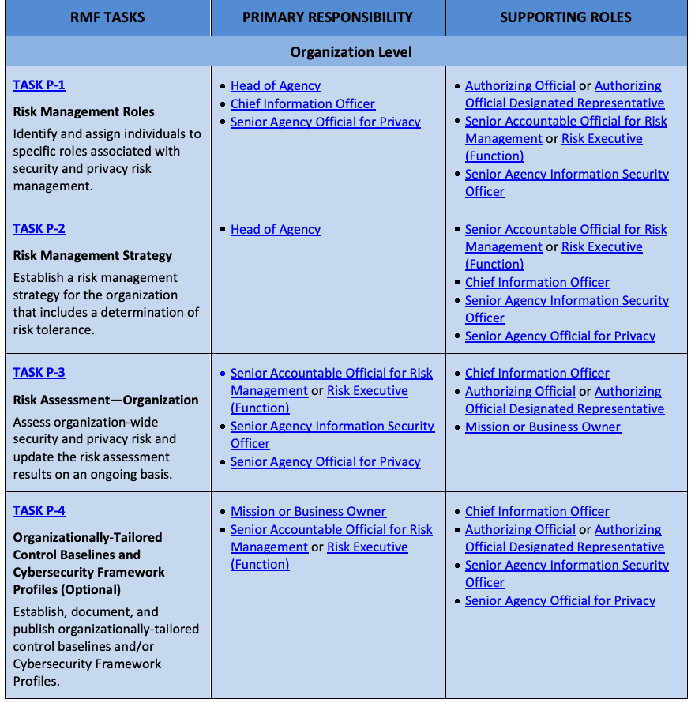
抽出したテキスト（原本と未照合・参考）
RMF TASKS PRIMARY RESPONSIBILITY SUPPORTING ROLES Organization Level TASK P-1 • Head of Agency • Authorizing Official or Authorizing • Chief Information Officer Official Designated Representative Risk Management Roles • Senior Agency Official for Privacy • Senior Accountable Official for Risk Identify and assign individuals to Management or Risk Executive specific roles associated with (Function) security and privacy risk • Senior Agency Information Security management. Officer TASK P-2 • Head of Agency • Senior Accountable Official for Risk Management or Risk Executive Risk Management Strategy (Function) Establish a risk management • Chief Information Officer strategy for the organization • Senior Agency Information Security that includes a determination of Officer risk tolerance. • Senior Agency Official for Privacy TASK P-3 • Senior Accountable Official for Risk • Chief Information Officer Management or Risk Executive • Authorizing Official or Authorizing Risk Assessment—Organization (Function) Official Designated Representative Assess organization-wide • Senior Agency Information Security • Mission or Business Owner security and privacy risk and Officer update the risk assessment • Senior Agency Official for Privacy results on an ongoing basis. TASK P-4 • Mission or Business Owner • Chief Information Officer • Senior Accountable Official for Risk • Authorizing Official or Authorizing Organizationally-Tailored Management or Risk Executive Official Designated Representative Control Baselines and (Function) • Senior Agency Information Security Cybersecurity Framework Officer Profiles (Optional) • Senior Agency Official for Privacy Establish, document, and publish organizationally-tailored control baselines and/or Cybersecurity Framework Profiles.抽出したテキストの訳（原本と未照合・参考）
RMFタスク｜主たる責任者｜支援する役割 組織レベル。タスクP-1：リスク管理上の役割。セキュリティリスクとプライバシーリスクに関する特定の役割を担う個人を特定し、任命する。主たる責任者：機関の長、最高情報責任者。支援する役割：認可権限者またはその指定代理人、政府機関上級プライバシー担当者、リスク管理上級説明責任者またはリスクエグゼクティブ（機能）、政府機関上級情報セキュリティ責任者。タスクP-2：リスク管理戦略。リスク許容度の決定を含む、組織のリスク管理戦略を確立する。主たる責任者：機関の長、リスク管理上級説明責任者またはリスクエグゼクティブ（機能）。支援する役割：最高情報責任者、政府機関上級情報セキュリティ責任者、政府機関上級プライバシー担当者。タスクP-3：リスク評価—組織。組織全体のセキュリティリスクおよびプライバシーリスクを評価し、リスク評価結果を継続的に更新する。主たる責任者：リスク管理上級説明責任者またはリスクエグゼクティブ（機能）。支援する役割：最高情報責任者、認可権限者またはその指定代理人、ミッション所有者または業務所有者、政府機関上級情報セキュリティ責任者、政府機関上級プライバシー担当者。タスクP-4：組織に合わせた管理策ベースラインおよびサイバーセキュリティフレームワークプロファイル（任意）。組織に合わせた管理策ベースラインおよび／またはサイバーセキュリティフレームワークプロファイルを確立し、文書化して公開する。主たる責任者：ミッション所有者または業務所有者、リスク管理上級説明責任者またはリスクエグゼクティブ（機能）。支援する役割：最高情報責任者、認可権限者またはその指定代理人、政府機関上級情報セキュリティ責任者、政府機関上級プライバシー担当者。抽出したテキスト（原本と未照合・参考）
• Head of Agency • Chief Information Officer • Senior Agency Official for Privacy抽出したテキストの訳（原本と未照合・参考）
• 機関の長 • 最高情報責任者 • 政府機関上級プライバシー担当者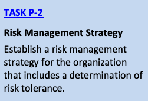
抽出したテキスト（原本と未照合・参考）
TASK P-2 Risk Management Strategy Establish a risk management strategy for the organization that includes a determination of risk tolerance.抽出したテキストの訳（原本と未照合・参考）
タスクP-2 リスク管理戦略：リスク許容度の決定を含む、組織のリスク管理戦略を確立する。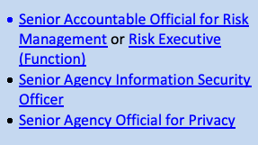
抽出したテキスト（原本と未照合・参考）
• Senior Accountable Official for Risk Management or Risk Executive (Function) • Senior Agency Information Security Officer • Senior Agency Official for Privacy抽出したテキストの訳（原本と未照合・参考）
• リスク管理上級説明責任者またはリスクエグゼクティブ（機能） • 政府機関上級情報セキュリティ責任者 • 政府機関上級プライバシー担当者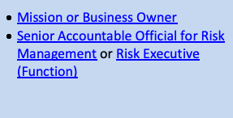
抽出したテキスト（原本と未照合・参考）
• Mission or Business Owner • Senior Accountable Official for Risk Management or Risk Executive (Function)抽出したテキストの訳（原本と未照合・参考）
• ミッション所有者または業務所有者 • リスク管理上級説明責任者またはリスクエグゼクティブ（機能）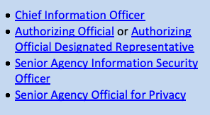
抽出したテキスト（原本と未照合・参考）
• Chief Information Officer • Authorizing Official or Authorizing Official Designated Representative • Senior Agency Information Security Officer • Senior Agency Official for Privacy抽出したテキストの訳（原本と未照合・参考）
• 最高情報責任者 • 認可権限者またはその指定代理人 • 政府機関上級情報セキュリティ責任者 • 政府機関上級プライバシー担当者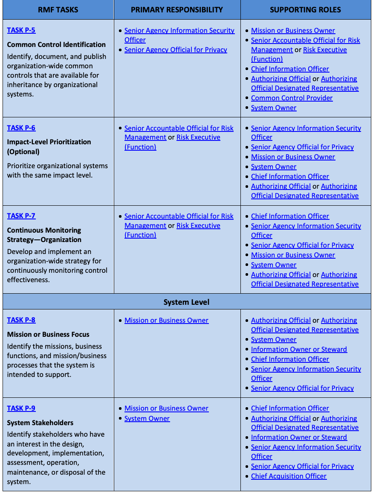
抽出したテキスト（原本と未照合・参考）
RMF TASKS PRIMARY RESPONSIBILITY SUPPORTING ROLES TASK P-5 • Senior Agency Information Security • Mission or Business Owner Officer • Senior Accountable Official for Risk Common Control Identification • Senior Agency Official for Privacy Management or Risk Executive Identify, document, and publish (Function) organization-wide common • Chief Information Officer controls that are available for • Authorizing Official or Authorizing inheritance by organizational Official Designated Representative systems. • Common Control Provider • System Owner TASK P-6 • Senior Accountable Official for Risk • Senior Agency Information Security Management or Risk Executive Officer Impact-Level Prioritization (Function) • Senior Agency Official for Privacy (Optional) • Mission or Business Owner Prioritize organizational systems • System Owner with the same impact level. • Chief Information Officer • Authorizing Official or Authorizing Official Designated Representative TASK P-7 • Senior Accountable Official for Risk • Chief Information Officer Management or Risk Executive • Senior Agency Information Security Continuous Monitoring (Function) Officer Strategy—Organization • Senior Agency Official for Privacy Develop and implement an • Mission or Business Owner organization-wide strategy for • System Owner continuously monitoring control • Authorizing Official or Authorizing effectiveness. Official Designated Representative System Level TASK P-8 • Mission or Business Owner • Authorizing Official or Authorizing Official Designated Representative Mission or Business Focus • System Owner Identify the missions, business • Information Owner or Steward functions, and mission/business • Chief Information Officer processes that the system is • Senior Agency Information Security intended to support. Officer • Senior Agency Official for Privacy TASK P-9 • Mission or Business Owner • Chief Information Officer • System Owner • Authorizing Official or Authorizing System Stakeholders Official Designated Representative Identify stakeholders who have • Information Owner or Steward an interest in the design, • Senior Agency Information Security development, implementation, Officer assessment, operation, • Senior Agency Official for Privacy maintenance, or disposal of the • Chief Acquisition Officer system.抽出したテキストの訳（原本と未照合・参考）
RMFタスク｜主たる責任者｜支援する役割。タスクP-5：共通管理策の特定。組織システムが継承できる、組織全体で利用可能な共通管理策を特定し、文書化して公開する。主たる責任者：政府機関上級情報セキュリティ責任者、リスク管理上級説明責任者またはリスクエグゼクティブ（機能）。支援する役割：ミッション所有者または業務所有者、政府機関上級プライバシー担当者、最高情報責任者、認可権限者またはその指定代理人、共通管理策プロバイダー、システム所有者。タスクP-6：影響レベルに基づく優先順位付け（任意）。同じ影響レベルを持つ組織システムの優先順位を決める。主たる責任者：リスク管理上級説明責任者またはリスクエグゼクティブ（機能）。支援する役割：政府機関上級情報セキュリティ責任者、政府機関上級プライバシー担当者、ミッション所有者または業務所有者、システム所有者、最高情報責任者、認可権限者またはその指定代理人。タスクP-7：組織レベルの継続監視戦略。管理策の有効性を継続的に監視する組織全体の戦略を策定し、実施する。主たる責任者：リスク管理上級説明責任者またはリスクエグゼクティブ（機能）。支援する役割：最高情報責任者、政府機関上級情報セキュリティ責任者、政府機関上級プライバシー担当者、ミッション所有者または業務所有者、システム所有者、認可権限者またはその指定代理人。システムレベル。タスクP-8：ミッション／業務への重点。システムが支援するミッション、業務機能、ミッション／業務プロセスを特定する。主たる責任者：ミッション所有者または業務所有者。支援する役割：認可権限者またはその指定代理人、システム所有者、情報所有者または管理責任者、最高情報責任者、政府機関上級情報セキュリティ責任者、政府機関上級プライバシー担当者。タスクP-9：システムの利害関係者。システムの設計、開発、実装、評価、運用、保守、廃止に利害を持つ関係者を特定する。主たる責任者：ミッション所有者または業務所有者。支援する役割：最高情報責任者、システム所有者、認可権限者またはその指定代理人、情報所有者または管理責任者、政府機関上級情報セキュリティ責任者、政府機関上級プライバシー担当者、最高調達責任者。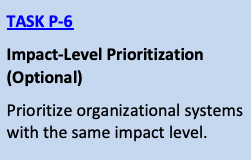
抽出したテキスト（原本と未照合・参考）
TASK P-6 Impact-Level Prioritization (Optional) Prioritize organizational systems with the same impact level.抽出したテキストの訳（原本と未照合・参考）
タスクP-6：影響レベルに基づく優先順位付け（任意）。同じ影響レベルを持つ組織システムの優先順位を決める。抽出したテキスト（原本と未照合・参考）
• Senior Accountable Official for Risk Management or Risk Executive抽出したテキストの訳（原本と未照合・参考）
• リスク管理上級説明責任者またはリスクエグゼクティブ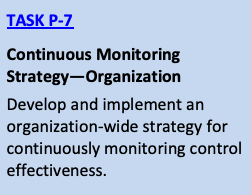
抽出したテキスト（原本と未照合・参考）
TASK P-7 Continuous Monitoring Strategy—Organization Develop and implement an organization-wide strategy for continuously monitoring control effectiveness.抽出したテキストの訳（原本と未照合・参考）
タスクP-7：組織レベルの継続監視戦略。管理策の有効性を継続的に監視する組織全体の戦略を策定し、実施する。抽出したテキスト（原本と未照合・参考）
• Senior Accountable Official for Risk Management or Risk Executive (Function)抽出したテキストの訳（原本と未照合・参考）
• リスク管理上級説明責任者またはリスクエグゼクティブ（機能）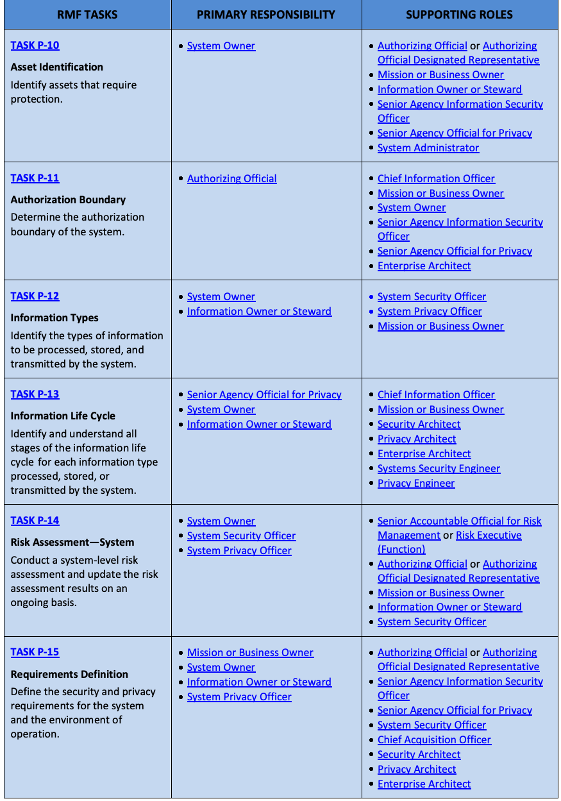
抽出したテキスト（原本と未照合・参考）
RMF TASKS PRIMARY RESPONSIBILITY SUPPORTING ROLES TASK P-10 • System Owner • Authorizing Official or Authorizing Official Designated Representative Asset Identification • Mission or Business Owner Identify assets that require • Information Owner or Steward protection. • Senior Agency Information Security Officer • Senior Agency Official for Privacy • System Administrator TASK P-11 • Authorizing Official • Chief Information Officer • Mission or Business Owner Authorization Boundary • System Owner Determine the authorization • Senior Agency Information Security boundary of the system. Officer • Senior Agency Official for Privacy • Enterprise Architect TASK P-12 • System Owner • System Security Officer • Information Owner or Steward • System Privacy Officer Information Types • Mission or Business Owner Identify the types of information to be processed, stored, and transmitted by the system. TASK P-13 • Senior Agency Official for Privacy • Chief Information Officer • System Owner • Mission or Business Owner Information Life Cycle • Information Owner or Steward • Security Architect Identify and understand all • Privacy Architect stages of the information life • Enterprise Architect cycle for each information type • Systems Security Engineer processed, stored, or • Privacy Engineer transmitted by the system. TASK P-14 • System Owner • Senior Accountable Official for Risk • System Security Officer Management or Risk Executive Risk Assessment—System • System Privacy Officer (Function) Conduct a system-level risk • Authorizing Official or Authorizing assessment and update the risk Official Designated Representative assessment results on an • Mission or Business Owner ongoing basis. • Information Owner or Steward • System Security Officer TASK P-15 • Mission or Business Owner • Authorizing Official or Authorizing • System Owner Official Designated Representative Requirements Definition • Information Owner or Steward • Senior Agency Information Security Define the security and privacy • System Privacy Officer Officer requirements for the system • Senior Agency Official for Privacy and the environment of • System Security Officer operation. • Chief Acquisition Officer • Security Architect • Privacy Architect • Enterprise Architect抽出したテキストの訳（原本と未照合・参考）
RMFタスク｜主たる責任者｜支援する役割。タスクP-10：資産の特定。保護を要する資産を特定する。主たる責任者：システム所有者。支援する役割：認可権限者またはその指定代理人、ミッション所有者または業務所有者、情報所有者または管理責任者、政府機関上級情報セキュリティ責任者、政府機関上級プライバシー担当者、システム管理者。タスクP-11：認可境界。システムの認可境界を決定する。主たる責任者：認可権限者。支援する役割：最高情報責任者、ミッション所有者または業務所有者、システム所有者、政府機関上級情報セキュリティ責任者、政府機関上級プライバシー担当者、エンタープライズアーキテクト。タスクP-12：情報の種類。システムが処理、保存、送信する情報の種類を特定する。主たる責任者：システム所有者、情報所有者または管理責任者。支援する役割：システムセキュリティ担当者、システムプライバシー担当者、ミッション所有者または業務所有者。タスクP-13：情報ライフサイクル。システムが処理、保存、送信する各情報の種類について、そのライフサイクルの全段階を特定し、理解する。主たる責任者：政府機関上級プライバシー担当者、システム所有者、ミッション所有者または業務所有者、情報所有者または管理責任者。支援する役割：最高情報責任者、セキュリティアーキテクト、プライバシーアーキテクト、エンタープライズアーキテクト、システムセキュリティエンジニア、プライバシーエンジニア。タスクP-14：システムリスク評価。システムレベルのリスク評価を実施し、その結果を継続的に更新する。主たる責任者：システム所有者、システムセキュリティ担当者、システムプライバシー担当者。支援する役割：リスク管理上級説明責任者またはリスクエグゼクティブ（機能）、認可権限者またはその指定代理人、ミッション所有者または業務所有者、情報所有者または管理責任者、システムセキュリティ担当者。タスクP-15：要件の定義。システムおよび運用環境のセキュリティ要件とプライバシー要件を定義する。主たる責任者：ミッション所有者または業務所有者、システム所有者、情報所有者または管理責任者。支援する役割：認可権限者またはその指定代理人、政府機関上級情報セキュリティ責任者、システムプライバシー担当者、政府機関上級プライバシー担当者、システムセキュリティ担当者、最高調達責任者、セキュリティアーキテクト、プライバシーアーキテクト、エンタープライズアーキテクト。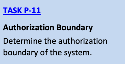
抽出したテキスト（原本と未照合・参考）
TASK P-11 Authorization Boundary Determine the authorization boundary of the system.抽出したテキストの訳（原本と未照合・参考）
タスクP-11：認可境界。システムの認可境界を決定する。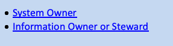
抽出したテキスト（原本と未照合・参考）
• System Owner • Information Owner or Steward抽出したテキストの訳（原本と未照合・参考）
• システム所有者 • 情報所有者または管理責任者抽出したテキスト（原本と未照合・参考）
• Senior Agency Official for Privacy • System Owner抽出したテキストの訳（原本と未照合・参考）
• 政府機関上級プライバシー担当者 • システム所有者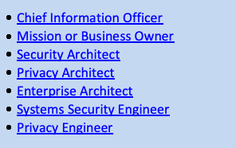
抽出したテキスト（原本と未照合・参考）
• Chief Information Officer • Mission or Business Owner • Security Architect • Privacy Architect • Enterprise Architect • Systems Security Engineer • Privacy Engineer抽出したテキストの訳（原本と未照合・参考）
• 最高情報責任者 • ミッション所有者または業務所有者 • セキュリティアーキテクト • プライバシーアーキテクト • エンタープライズアーキテクト • システムセキュリティエンジニア • プライバシーエンジニア抽出したテキスト（原本と未照合・参考）
• System Owner • System Security Officer • System Privacy Officer抽出したテキストの訳（原本と未照合・参考）
• システム所有者 • システムセキュリティ担当者 • システムプライバシー担当者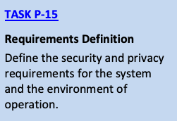
抽出したテキスト（原本と未照合・参考）
TASK P-15 Requirements Definition Define the security and privacy requirements for the system and the environment of operation.抽出したテキストの訳（原本と未照合・参考）
タスクP-15：要件の定義。システムおよび運用環境のセキュリティ要件とプライバシー要件を定義する。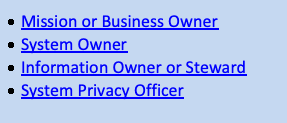
抽出したテキスト（原本と未照合・参考）
• Mission or Business Owner • System Owner • Information Owner or Steward • System Privacy Officer抽出したテキストの訳（原本と未照合・参考）
• ミッション所有者または業務所有者 • システム所有者 • 情報所有者または管理責任者 • システムプライバシー担当者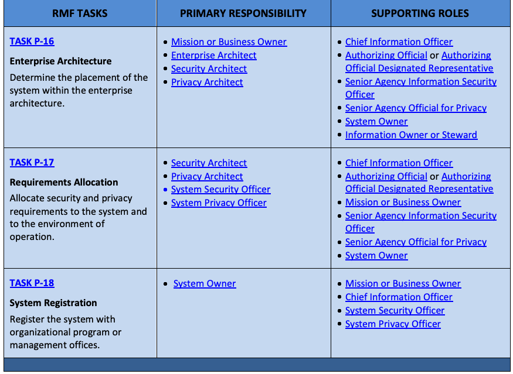
抽出したテキスト（原本と未照合・参考）
RMF TASKS PRIMARY RESPONSIBILITY SUPPORTING ROLES TASK P-16 • Mission or Business Owner • Chief Information Officer • Enterprise Architect • Authorizing Official or Authorizing Enterprise Architecture • Security Architect Official Designated Representative Determine the placement of the • Privacy Architect • Senior Agency Information Security system within the enterprise Officer architecture. • Senior Agency Official for Privacy • System Owner • Information Owner or Steward TASK P-17 • Security Architect • Chief Information Officer • Privacy Architect • Authorizing Official or Authorizing Requirements Allocation • System Security Officer Official Designated Representative Allocate security and privacy • System Privacy Officer • Mission or Business Owner requirements to the system and • Senior Agency Information Security to the environment of Officer operation. • Senior Agency Official for Privacy • System Owner TASK P-18 • System Owner • Mission or Business Owner • Chief Information Officer System Registration • System Security Officer Register the system with • System Privacy Officer organizational program or management offices.抽出したテキストの訳（原本と未照合・参考）
RMFタスク｜主たる責任者｜支援する役割。タスクP-16：エンタープライズアーキテクチャ。エンタープライズアーキテクチャ内におけるシステムの配置を決定する。主たる責任者：ミッション所有者または業務所有者、エンタープライズアーキテクト。支援する役割：最高情報責任者、認可権限者またはその指定代理人、セキュリティアーキテクト、プライバシーアーキテクト、政府機関上級情報セキュリティ責任者、政府機関上級プライバシー担当者、システム所有者、情報所有者または管理責任者。タスクP-17：要件の割り当て。セキュリティ要件およびプライバシー要件をシステムと運用環境に割り当てる。主たる責任者：セキュリティアーキテクト、プライバシーアーキテクト。支援する役割：最高情報責任者、認可権限者またはその指定代理人、システムセキュリティ担当者、システムプライバシー担当者、ミッション所有者または業務所有者、政府機関上級情報セキュリティ責任者、政府機関上級プライバシー担当者、システム所有者。タスクP-18：システム登録。組織のプログラム部門または管理部門にシステムを登録する。主たる責任者：システム所有者。支援する役割：ミッション所有者または業務所有者、最高情報責任者、システムセキュリティ担当者、システムプライバシー担当者。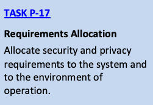
抽出したテキスト（原本と未照合・参考）
TASK P-17 Requirements Allocation Allocate security and privacy requirements to the system and to the environment of operation.抽出したテキストの訳（原本と未照合・参考）
タスクP-17：要件の割り当て。セキュリティ要件およびプライバシー要件をシステムと運用環境に割り当てる。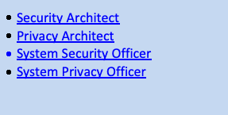
抽出したテキスト（原本と未照合・参考）
• Security Architect • Privacy Architect • System Security Officer • System Privacy Officer抽出したテキストの訳（原本と未照合・参考）
• セキュリティアーキテクト • プライバシーアーキテクト • システムセキュリティ担当者 • システムプライバシー担当者TABLE E-2: CATEGORIZATION TASKS, RESPONSIBILITIES, AND SUPPORTING ROLES
表 E-2：分類のタスク、責任、および支援的役割
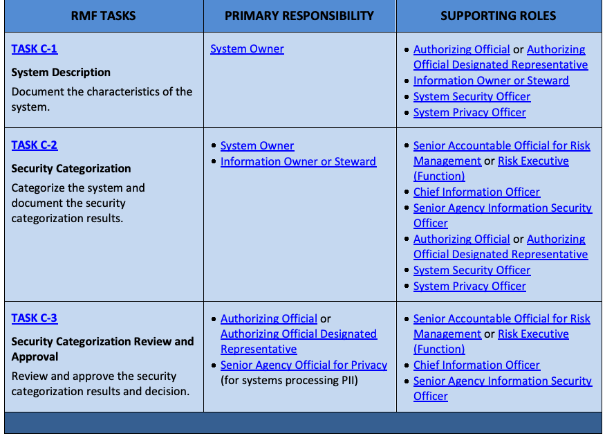
抽出したテキスト（原本と未照合・参考）
RMF TASKS PRIMARY RESPONSIBILITY SUPPORTING ROLES TASK C-1 System Owner • Authorizing Official or Authorizing Official Designated Representative System Description • Information Owner or Steward Document the characteristics of the • System Security Officer system. • System Privacy Officer TASK C-2 • System Owner • Senior Accountable Official for Risk • Information Owner or Steward Management or Risk Executive Security Categorization (Function) Categorize the system and • Chief Information Officer document the security • Senior Agency Information Security categorization results. Officer • Authorizing Official or Authorizing Official Designated Representative • System Security Officer • System Privacy Officer TASK C-3 • Authorizing Official or • Senior Accountable Official for Risk Authorizing Official Designated Management or Risk Executive Security Categorization Review and Representative (Function) Approval • Senior Agency Official for Privacy • Chief Information Officer Review and approve the security (for systems processing PII) • Senior Agency Information Security categorization results and decision. Officer抽出したテキストの訳（原本と未照合・参考）
RMFタスク｜主たる責任者｜支援する役割。タスクC-1：システムの説明。システムの特性を文書化する。主たる責任者：システム所有者。支援する役割：認可権限者またはその指定代理人、情報所有者または管理責任者、システムセキュリティ担当者、システムプライバシー担当者。タスクC-2：セキュリティ分類。システムを分類し、セキュリティ分類の結果を文書化する。主たる責任者：システム所有者、情報所有者または管理責任者。支援する役割：リスク管理上級説明責任者またはリスクエグゼクティブ（機能）、最高情報責任者、政府機関上級情報セキュリティ責任者、認可権限者またはその指定代理人、システムセキュリティ担当者、システムプライバシー担当者。タスクC-3：セキュリティ分類の確認と承認。セキュリティ分類の結果と判断を確認し、承認する。主たる責任者：認可権限者またはその指定代理人。支援する役割：リスク管理上級説明責任者またはリスクエグゼクティブ（機能）、PIIを処理するシステムの場合は政府機関上級プライバシー担当者、最高情報責任者、政府機関上級情報セキュリティ責任者。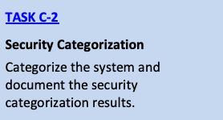
抽出したテキスト（原本と未照合・参考）
TASK C-2 Security Categorization Categorize the system and document the security categorization results.抽出したテキストの訳（原本と未照合・参考）
タスクC-2：セキュリティ分類。システムを分類し、セキュリティ分類の結果を文書化する。抽出したテキストの訳（原本と未照合・参考）
• システム所有者 • 情報所有者または管理責任者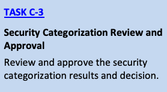
抽出したテキスト（原本と未照合・参考）
TASK C-3 Security Categorization Review and Approval Review and approve the security categorization results and decision.抽出したテキストの訳（原本と未照合・参考）
タスクC-3：セキュリティ分類の確認と承認。セキュリティ分類の結果と判断を確認し、承認する。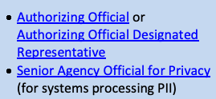
抽出したテキスト（原本と未照合・参考）
• Authorizing Official or Authorizing Official Designated Representative • Senior Agency Official for Privacy (for systems processing PII)抽出したテキストの訳（原本と未照合・参考）
• 認可権限者またはその指定代理人 • PIIを処理するシステムの場合は政府機関上級プライバシー担当者TABLE E-3: SELECTION TASKS, RESPONSIBILITIES, AND SUPPORTING ROLES
表 E-3：選択のタスク、責任、および支援的役割
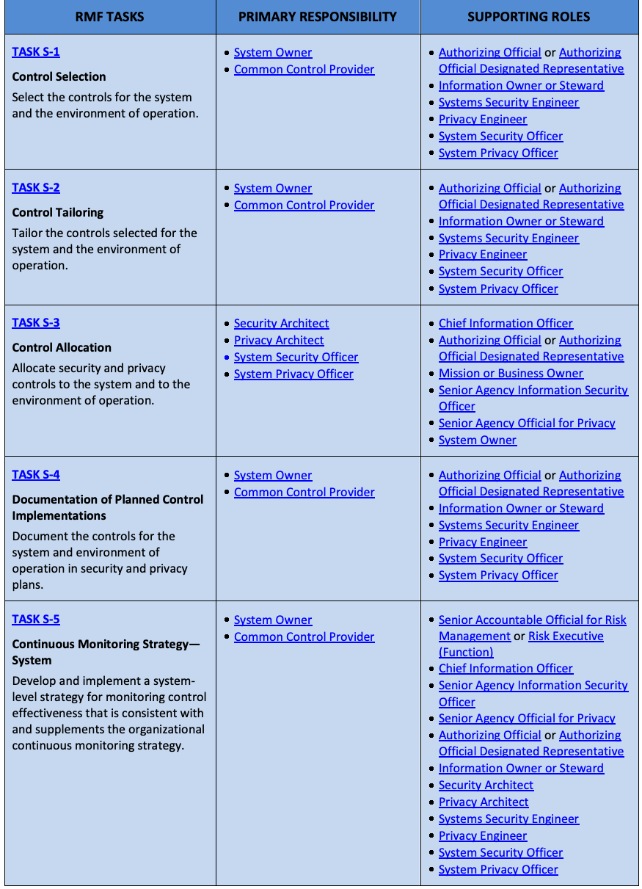
抽出したテキスト（原本と未照合・参考）
RMF TASKS PRIMARY RESPONSIBILITY SUPPORTING ROLES TASK S-1 • System Owner • Authorizing Official or Authorizing • Common Control Provider Official Designated Representative Control Selection • Information Owner or Steward Select the controls for the system • Systems Security Engineer and the environment of operation. • Privacy Engineer • System Security Officer • System Privacy Officer TASK S-2 • System Owner • Authorizing Official or Authorizing • Common Control Provider Official Designated Representative Control Tailoring • Information Owner or Steward Tailor the controls selected for the • Systems Security Engineer system and the environment of • Privacy Engineer operation. • System Security Officer • System Privacy Officer TASK S-3 • Security Architect • Chief Information Officer • Privacy Architect • Authorizing Official or Authorizing Control Allocation • System Security Officer Official Designated Representative Allocate security and privacy • System Privacy Officer • Mission or Business Owner controls to the system and to the • Senior Agency Information Security environment of operation. Officer • Senior Agency Official for Privacy • System Owner TASK S-4 • System Owner • Authorizing Official or Authorizing • Common Control Provider Official Designated Representative Documentation of Planned Control • Information Owner or Steward Implementations • Systems Security Engineer Document the controls for the • Privacy Engineer system and environment of • System Security Officer operation in security and privacy • System Privacy Officer plans. TASK S-5 • System Owner • Senior Accountable Official for Risk • Common Control Provider Management or Risk Executive Continuous Monitoring Strategy— (Function) System • Chief Information Officer Develop and implement a system- • Senior Agency Information Security level strategy for monitoring control Officer effectiveness that is consistent with • Senior Agency Official for Privacy and supplements the organizational • Authorizing Official or Authorizing continuous monitoring strategy. Official Designated Representative • Information Owner or Steward • Security Architect • Privacy Architect • Systems Security Engineer • Privacy Engineer • System Security Officer • System Privacy Officer抽出したテキストの訳（原本と未照合・参考）
RMFタスク｜主たる責任者｜支援する役割。タスクS-1：管理策の選択。システムおよび運用環境に適用する管理策を選択する。主たる責任者：システム所有者。支援する役割：認可権限者またはその指定代理人、共通管理策プロバイダー、情報所有者または管理責任者、システムセキュリティエンジニア、プライバシーエンジニア、システムセキュリティ担当者、システムプライバシー担当者。タスクS-2：管理策の調整。システムおよび運用環境向けに選択した管理策を調整する。主たる責任者：システム所有者。支援する役割：認可権限者またはその指定代理人、共通管理策プロバイダー、情報所有者または管理責任者、システムセキュリティエンジニア、プライバシーエンジニア、システムセキュリティ担当者、システムプライバシー担当者。タスクS-3：管理策の割り当て。セキュリティ管理策およびプライバシー管理策をシステムと運用環境に割り当てる。主たる責任者：セキュリティアーキテクト、プライバシーアーキテクト、システムセキュリティ担当者、システムプライバシー担当者。支援する役割：最高情報責任者、認可権限者またはその指定代理人、ミッション所有者または業務所有者、政府機関上級情報セキュリティ責任者、政府機関上級プライバシー担当者、システム所有者。タスクS-4：計画された管理策実装の文書化。システムおよび運用環境の管理策をセキュリティ計画およびプライバシー計画に記録する。主たる責任者：システム所有者。支援する役割：認可権限者またはその指定代理人、共通管理策プロバイダー、情報所有者または管理責任者、システムセキュリティエンジニア、プライバシーエンジニア、システムセキュリティ担当者、システムプライバシー担当者。タスクS-5：システムレベルの継続監視戦略。組織全体の継続監視戦略と整合し、それを補完する、管理策の有効性を監視するシステムレベルの戦略を策定し、実施する。主たる責任者：システム所有者。支援する役割：リスク管理上級説明責任者またはリスクエグゼクティブ（機能）、最高情報責任者、政府機関上級情報セキュリティ責任者、政府機関上級プライバシー担当者、認可権限者またはその指定代理人、情報所有者または管理責任者、セキュリティアーキテクト、プライバシーアーキテクト、システムセキュリティエンジニア、プライバシーエンジニア、システムセキュリティ担当者、システムプライバシー担当者。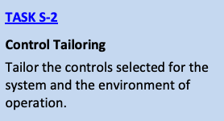
抽出したテキスト（原本と未照合・参考）
TASK S-2 Control Tailoring Tailor the controls selected for the system and the environment of operation.抽出したテキストの訳（原本と未照合・参考）
タスクS-2：管理策の調整。システムおよび運用環境向けに選択した管理策を調整する。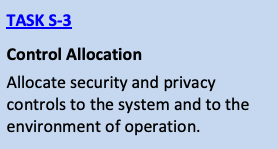
抽出したテキスト（原本と未照合・参考）
TASK S-3 Control Allocation Allocate security and privacy controls to the system and to the environment of operation.抽出したテキストの訳（原本と未照合・参考）
タスクS-3：管理策の割り当て。セキュリティ管理策およびプライバシー管理策をシステムと運用環境に割り当てる。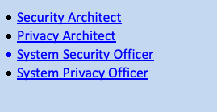
抽出したテキスト（原本と未照合・参考）
• Security Architect • Privacy Architect • System Security Officer • System Privacy Officer抽出したテキストの訳（原本と未照合・参考）
• セキュリティアーキテクト • プライバシーアーキテクト • システムセキュリティ担当者 • システムプライバシー担当者抽出したテキストの訳（原本と未照合・参考）
• システム所有者 • 共通管理策プロバイダー抽出したテキストの訳（原本と未照合・参考）
• システム所有者 • 共通管理策プロバイダー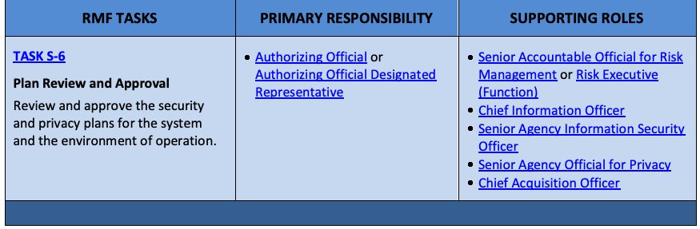
抽出したテキスト（原本と未照合・参考）
RMF TASKS PRIMARY RESPONSIBILITY SUPPORTING ROLES TASK S-6 • Authorizing Official or • Senior Accountable Official for Risk Authorizing Official Designated Management or Risk Executive Plan Review and Approval Representative (Function) Review and approve the security • Chief Information Officer and privacy plans for the system • Senior Agency Information Security and the environment of operation. Officer • Senior Agency Official for Privacy • Chief Acquisition Officer抽出したテキストの訳（原本と未照合・参考）
RMFタスク｜主たる責任者｜支援する役割。タスクS-6：計画の確認と承認。システムおよび運用環境のセキュリティ計画とプライバシー計画を確認し、承認する。主たる責任者：認可権限者またはその指定代理人。支援する役割：リスク管理上級説明責任者またはリスクエグゼクティブ（機能）、最高情報責任者、政府機関上級情報セキュリティ責任者、政府機関上級プライバシー担当者、最高調達責任者。TABLE E-4: IMPLEMENTATION TASKS, RESPONSIBILITIES, AND SUPPORTING ROLES
表 E-4：実装のタスク、責任、および支援的役割
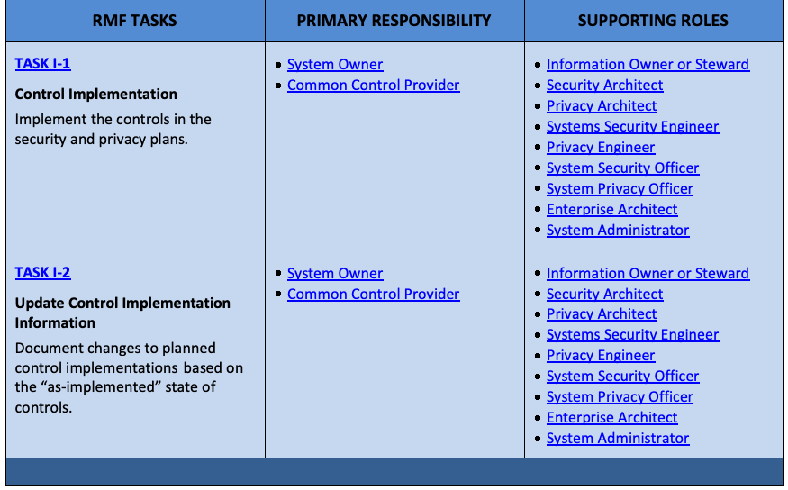
抽出したテキスト（原本と未照合・参考）
RMF TASKS PRIMARY RESPONSIBILITY SUPPORTING ROLES TASK I-1 • System Owner • Information Owner or Steward • Common Control Provider • Security Architect Control Implementation • Privacy Architect Implement the controls in the • Systems Security Engineer security and privacy plans. • Privacy Engineer • System Security Officer • System Privacy Officer • Enterprise Architect • System Administrator TASK I-2 • System Owner • Information Owner or Steward • Common Control Provider • Security Architect Update Control Implementation • Privacy Architect Information • Systems Security Engineer Document changes to planned • Privacy Engineer control implementations based on • System Security Officer the “as-implemented” state of • System Privacy Officer controls. • Enterprise Architect • System Administrator抽出したテキストの訳（原本と未照合・参考）
RMFタスク｜主たる責任者｜支援する役割。タスクI-1：管理策の実装。セキュリティ計画およびプライバシー計画に定めた管理策を実装する。主たる責任者：システム所有者。支援する役割：情報所有者または管理責任者、共通管理策プロバイダー、セキュリティアーキテクト、プライバシーアーキテクト、システムセキュリティエンジニア、プライバシーエンジニア、システムセキュリティ担当者、システムプライバシー担当者、エンタープライズアーキテクト、システム管理者。タスクI-2：管理策実装情報の更新。計画した管理策の実装内容について、実際に実装された状態に基づく変更を文書化する。主たる責任者：システム所有者。支援する役割：情報所有者または管理責任者、共通管理策プロバイダー、セキュリティアーキテクト、プライバシーアーキテクト、システムセキュリティエンジニア、プライバシーエンジニア、システムセキュリティ担当者、システムプライバシー担当者、エンタープライズアーキテクト、システム管理者。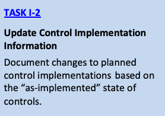
抽出したテキスト（原本と未照合・参考）
TASK I-2 Update Control Implementation Information Document changes to planned control implementations based on the “as-implemented” state of controls.抽出したテキストの訳（原本と未照合・参考）
タスクI-2：管理策実装情報の更新。計画した管理策の実装内容について、実際に実装された状態に基づく変更を文書化する。抽出したテキストの訳（原本と未照合・参考）
• システム所有者 • 共通管理策プロバイダーTABLE E-5: ASSESSMENT TASKS, RESPONSIBILITIES, AND SUPPORTING ROLES
表 E-5：評価のタスク、責任、および支援的役割
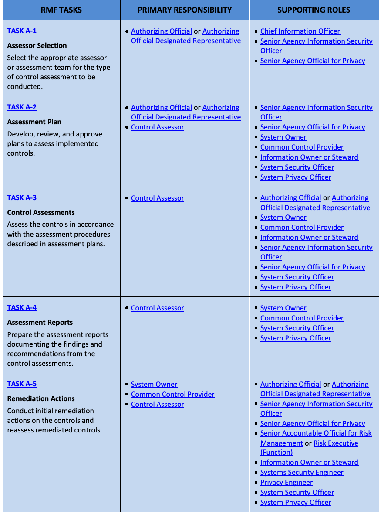
抽出したテキスト（原本と未照合・参考）
RMF TASKS PRIMARY RESPONSIBILITY SUPPORTING ROLES TASK A-1 • Authorizing Official or Authorizing • Chief Information Officer Official Designated Representative • Senior Agency Information Security Assessor Selection Officer Select the appropriate assessor • Senior Agency Official for Privacy or assessment team for the type of control assessment to be conducted. TASK A-2 • Authorizing Official or Authorizing • Senior Agency Information Security Official Designated Representative Officer Assessment Plan • Control Assessor • Senior Agency Official for Privacy Develop, review, and approve • System Owner plans to assess implemented • Common Control Provider controls. • Information Owner or Steward • System Security Officer • System Privacy Officer TASK A-3 • Control Assessor • Authorizing Official or Authorizing Official Designated Representative Control Assessments • System Owner Assess the controls in accordance • Common Control Provider with the assessment procedures • Information Owner or Steward described in assessment plans. • Senior Agency Information Security Officer • Senior Agency Official for Privacy • System Security Officer • System Privacy Officer TASK A-4 • Control Assessor • System Owner • Common Control Provider Assessment Reports • System Security Officer Prepare the assessment reports • System Privacy Officer documenting the findings and recommendations from the control assessments. TASK A-5 • System Owner • Authorizing Official or Authorizing • Common Control Provider Official Designated Representative Remediation Actions • Control Assessor • Senior Agency Information Security Conduct initial remediation Officer actions on the controls and • Senior Agency Official for Privacy reassess remediated controls. • Senior Accountable Official for Risk Management or Risk Executive (Function) • Information Owner or Steward • Systems Security Engineer • Privacy Engineer • System Security Officer • System Privacy Officer抽出したテキストの訳（原本と未照合・参考）
RMFタスク｜主たる責任者｜支援する役割。タスクA-1：評価者の選定。実施する管理策評価の種類に適した評価者または評価チームを選ぶ。主たる責任者：認可権限者またはその指定代理人。支援する役割：最高情報責任者、政府機関上級情報セキュリティ責任者、政府機関上級プライバシー担当者。タスクA-2：評価計画。実装済み管理策を評価する計画を策定、確認、承認する。主たる責任者：認可権限者またはその指定代理人、管理策評価者。支援する役割：政府機関上級情報セキュリティ責任者、政府機関上級プライバシー担当者、システム所有者、共通管理策プロバイダー、情報所有者または管理責任者、システムセキュリティ担当者、システムプライバシー担当者。タスクA-3：管理策の評価。評価計画に記載された評価手順に従って管理策を評価する。主たる責任者：管理策評価者。支援する役割：認可権限者またはその指定代理人、システム所有者、共通管理策プロバイダー、情報所有者または管理責任者、政府機関上級情報セキュリティ責任者、政府機関上級プライバシー担当者、システムセキュリティ担当者、システムプライバシー担当者。タスクA-4：評価報告書。管理策評価の所見と推奨事項を記録した評価報告書を作成する。主たる責任者：管理策評価者。支援する役割：システム所有者、共通管理策プロバイダー、システムセキュリティ担当者、システムプライバシー担当者。タスクA-5：是正措置。管理策に対する初期是正措置を実施し、是正した管理策を再評価する。主たる責任者：システム所有者。支援する役割：認可権限者またはその指定代理人、共通管理策プロバイダー、管理策評価者、政府機関上級情報セキュリティ責任者、政府機関上級プライバシー担当者、リスク管理上級説明責任者またはリスクエグゼクティブ（機能）、情報所有者または管理責任者、システムセキュリティエンジニア、プライバシーエンジニア、システムセキュリティ担当者、システムプライバシー担当者。抽出したテキスト（原本と未照合・参考）
• Authorizing Official or Authorizing Official Designated Representative抽出したテキストの訳（原本と未照合・参考）
• 認可担当者または認可担当者の指定代理人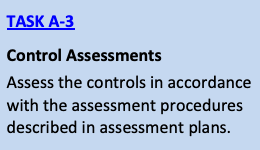
抽出したテキスト（原本と未照合・参考）
TASK A-3 Control Assessments Assess the controls in accordance with the assessment procedures described in assessment plans.抽出したテキストの訳（原本と未照合・参考）
TASK A-3 管理策評価 評価計画に記載された評価手順に従って、管理策を評価する。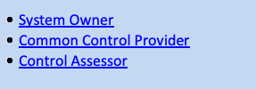
抽出したテキスト（原本と未照合・参考）
• System Owner • Common Control Provider • Control Assessor抽出したテキストの訳（原本と未照合・参考）
• システム所有者 • 共通管理策プロバイダー • 管理策評価者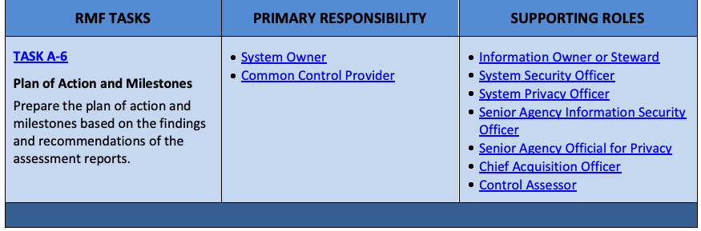
抽出したテキスト（原本と未照合・参考）
RMF TASKS PRIMARY RESPONSIBILITY SUPPORTING ROLES TASK A-6 • System Owner • Information Owner or Steward • Common Control Provider • System Security Officer Plan of Action and Milestones • System Privacy Officer Prepare the plan of action and • Senior Agency Information Security milestones based on the findings Officer and recommendations of the • Senior Agency Official for Privacy assessment reports. • Chief Acquisition Officer • Control Assessor抽出したテキストの訳（原本と未照合・参考）
RMFタスク 主たる責任 支援役割 TASK A-6 • システム所有者 • 情報所有者または管理者 • 共通管理策プロバイダー • システムセキュリティ責任者 行動計画およびマイルストーン • システムプライバシー責任者 評価報告書の所見および推奨事項に基づいて、行動計画およびマイルストーンを作成する。 • 機関上級情報セキュリティ担当官 • プライバシー担当機関上級職員 • 最高調達責任者 • 管理策評価者TABLE E-6: AUTHORIZATION TASKS, RESPONSIBILITIES, AND SUPPORTING ROLES
表 E-6：認可のタスク、責任、および支援的役割
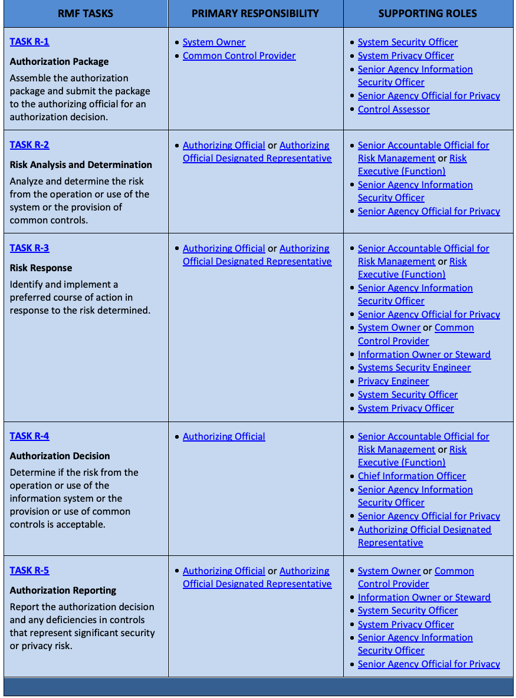
抽出したテキスト（原本と未照合・参考）
RMF TASKS PRIMARY RESPONSIBILITY SUPPORTING ROLES TASK R-1 • System Owner • System Security Officer • Common Control Provider • System Privacy Officer Authorization Package • Senior Agency Information Assemble the authorization Security Officer package and submit the package • Senior Agency Official for Privacy to the authorizing official for an • Control Assessor authorization decision. TASK R-2 • Authorizing Official or Authorizing • Senior Accountable Official for Official Designated Representative Risk Management or Risk Risk Analysis and Determination Executive (Function) Analyze and determine the risk • Senior Agency Information from the operation or use of the Security Officer system or the provision of • Senior Agency Official for Privacy common controls. TASK R-3 • Authorizing Official or Authorizing • Senior Accountable Official for Official Designated Representative Risk Management or Risk Risk Response Executive (Function) Identify and implement a • Senior Agency Information preferred course of action in Security Officer response to the risk determined. • Senior Agency Official for Privacy • System Owner or Common Control Provider • Information Owner or Steward • Systems Security Engineer • Privacy Engineer • System Security Officer • System Privacy Officer TASK R-4 • Authorizing Official • Senior Accountable Official for Risk Management or Risk Authorization Decision Executive (Function) Determine if the risk from the • Chief Information Officer operation or use of the • Senior Agency Information information system or the Security Officer provision or use of common • Senior Agency Official for Privacy controls is acceptable. • Authorizing Official Designated Representative TASK R-5 • Authorizing Official or Authorizing • System Owner or Common Official Designated Representative Control Provider Authorization Reporting • Information Owner or Steward Report the authorization decision • System Security Officer and any deficiencies in controls • System Privacy Officer that represent significant security • Senior Agency Information or privacy risk. Security Officer • Senior Agency Official for Privacy抽出したテキストの訳（原本と未照合・参考）
RMFタスク 主たる責任 支援役割 TASK R-1 • システム所有者 • システムセキュリティ責任者 • 共通管理策プロバイダー • システムプライバシー責任者 認可パッケージ • 機関上級情報セキュリティ担当官 認可パッケージを作成し、そのパッケージを認可担当者に認可判断のため提出する。 • プライバシー担当機関上級職員 • 管理策評価者 TASK R-2 • 認可担当者または認可担当者の指定代理人 リスク分析および判定 • リスク管理担当上級責任者またはリスクエグゼクティブ（機能） システムの運用もしくは使用、または共通管理策の提供に起因するリスクを分析し、判定する。 • 機関上級情報セキュリティ担当官 • プライバシー担当機関上級職員 TASK R-3 • 認可担当者または認可担当者の指定代理人 リスク対応 • リスク管理担当上級責任者またはリスクエグゼクティブ（機能） 判定されたリスクへの対応として、望ましい行動方針を特定し、実施する。 • 機関上級情報セキュリティ担当官 • プライバシー担当機関上級職員 • システム所有者または共通管理策プロバイダー • 情報所有者または管理者 • システムセキュリティエンジニア • プライバシーエンジニア • システムセキュリティ責任者 • システムプライバシー責任者 TASK R-4 • 認可担当者 認可判断 • リスク管理担当上級責任者またはリスクエグゼクティブ（機能） 情報システムの運用もしくは使用、または共通管理策の提供もしくは使用に起因するリスクが受容可能かどうかを判断する。 • 最高情報責任者 • 機関上級情報セキュリティ担当官 • プライバシー担当機関上級職員 • 認可担当者の指定代理人 TASK R-5 • 認可担当者または認可担当者の指定代理人 認可報告 • システム所有者または共通管理策プロバイダー • 情報所有者または管理者 認可判断、および重大なセキュリティまたはプライバシーリスクを示す管理策の欠陥を報告する。 • システムセキュリティ責任者 • システムプライバシー責任者 • 機関上級情報セキュリティ担当官 • プライバシー担当機関上級職員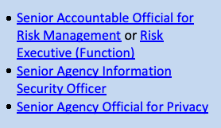
抽出したテキスト（原本と未照合・参考）
• Senior Accountable Official for Risk Management or Risk Executive (Function) • Senior Agency Information Security Officer • Senior Agency Official for Privacy抽出したテキストの訳（原本と未照合・参考）
• リスク管理担当上級責任者またはリスクエグゼクティブ（機能） • 機関上級情報セキュリティ担当官 • プライバシー担当機関上級職員
抽出したテキスト（原本と未照合・参考）
• Authorizing Official or Authorizing Official Designated Representative抽出したテキストの訳（原本と未照合・参考）
• 認可担当者または認可担当者の指定代理人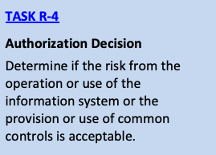
抽出したテキスト（原本と未照合・参考）
TASK R-4 Authorization Decision Determine if the risk from the operation or use of the information system or the provision or use of common controls is acceptable.抽出したテキストの訳（原本と未照合・参考）
TASK R-4 認可判断 情報システムの運用もしくは使用、または共通管理策の提供もしくは使用に起因するリスクが受容可能かどうかを判断する。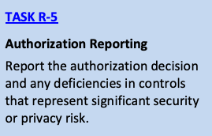
抽出したテキスト（原本と未照合・参考）
TASK R-5 Authorization Reporting Report the authorization decision and any deficiencies in controls that represent significant security or privacy risk.抽出したテキストの訳（原本と未照合・参考）
TASK R-5 認可報告 認可判断、および重大なセキュリティまたはプライバシーリスクを示す管理策の欠陥を報告する。抽出したテキスト（原本と未照合・参考）
• Authorizing Official or Authorizing Official Designated Representative抽出したテキストの訳（原本と未照合・参考）
• 認可担当者または認可担当者の指定代理人TABLE E-7: MONITORING TASKS, RESPONSIBILITIES, AND SUPPORTING ROLES
表 E-7：モニタリングのタスク、責任、および支援的役割
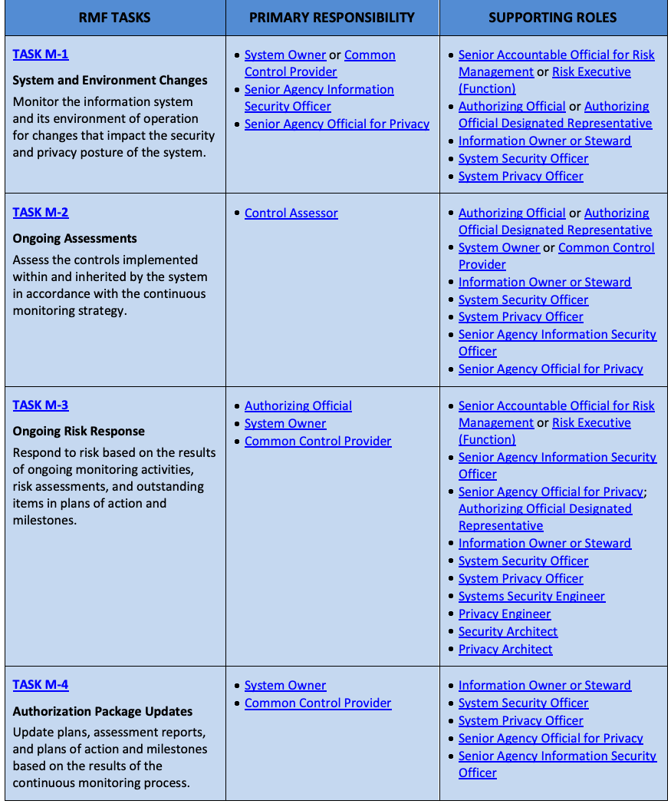
抽出したテキスト（原本と未照合・参考）
RMF TASKS PRIMARY RESPONSIBILITY SUPPORTING ROLES TASK M-1 • System Owner or Common • Senior Accountable Official for Risk Control Provider Management or Risk Executive System and Environment Changes • Senior Agency Information (Function) Monitor the information system Security Officer • Authorizing Official or Authorizing and its environment of operation • Senior Agency Official for Privacy Official Designated Representative for changes that impact the security • Information Owner or Steward and privacy posture of the system. • System Security Officer • System Privacy Officer TASK M-2 • Control Assessor • Authorizing Official or Authorizing Official Designated Representative Ongoing Assessments • System Owner or Common Control Assess the controls implemented Provider within and inherited by the system • Information Owner or Steward in accordance with the continuous • System Security Officer monitoring strategy. • System Privacy Officer • Senior Agency Information Security Officer • Senior Agency Official for Privacy TASK M-3 • Authorizing Official • Senior Accountable Official for Risk • System Owner Management or Risk Executive Ongoing Risk Response • Common Control Provider (Function) Respond to risk based on the results • Senior Agency Information Security of ongoing monitoring activities, Officer risk assessments, and outstanding • Senior Agency Official for Privacy; items in plans of action and Authorizing Official Designated milestones. Representative • Information Owner or Steward • System Security Officer • System Privacy Officer • Systems Security Engineer • Privacy Engineer • Security Architect • Privacy Architect TASK M-4 • System Owner • Information Owner or Steward • Common Control Provider • System Security Officer Authorization Package Updates • System Privacy Officer Update plans, assessment reports, • Senior Agency Official for Privacy and plans of action and milestones • Senior Agency Information Security based on the results of the Officer continuous monitoring process.抽出したテキストの訳（原本と未照合・参考）
RMFタスク 主たる責任 支援役割 TASK M-1 • システム所有者または共通管理策プロバイダー • リスク管理担当上級責任者またはリスクエグゼクティブ（機能） システムおよび運用環境の変更 • 機関上級情報セキュリティ担当官 情報システムおよびその運用環境をモニタリングし、システムのセキュリティおよびプライバシー態勢に影響する変更を確認する。 • 認可担当者または認可担当者の指定代理人 • プライバシー担当機関上級職員 • 情報所有者または管理者 • システムセキュリティ責任者 • システムプライバシー責任者 TASK M-2 • 管理策評価者 • 認可担当者または認可担当者の指定代理人 継続的評価 • システム所有者または共通管理策プロバイダー システム内に実装された管理策およびシステムが継承する管理策を、継続的モニタリング戦略に従って評価する。 • 情報所有者または管理者 • システムセキュリティ責任者 • システムプライバシー責任者 • 機関上級情報セキュリティ担当官 • プライバシー担当機関上級職員 TASK M-3 • 認可担当者 • リスク管理担当上級責任者またはリスクエグゼクティブ（機能） • システム所有者 継続的リスク対応 • 共通管理策プロバイダー 継続的モニタリング活動、リスク評価、および行動計画とマイルストーンにおける未解決項目の結果に基づいてリスクに対応する。 • 機関上級情報セキュリティ担当官 • プライバシー担当機関上級職員；認可担当者の指定代理人 • 情報所有者または管理者 • システムセキュリティ責任者 • システムプライバシー責任者 • システムセキュリティエンジニア • プライバシーエンジニア • セキュリティアーキテクト • プライバシーアーキテクト TASK M-4 • システム所有者 • 情報所有者または管理者 • 共通管理策プロバイダー • システムセキュリティ責任者 認可パッケージの更新 • システムプライバシー責任者 モニタリングプロセスの結果に基づき、計画、評価報告書、行動計画およびマイルストーンを更新する。 • プライバシー担当機関上級職員 • 機関上級情報セキュリティ担当官抽出したテキスト（原本と未照合・参考）
TASK M-2 Ongoing Assessments Assess the controls implemented within and inherited by the system in accordance with the continuous monitoring strategy.抽出したテキストの訳（原本と未照合・参考）
TASK M-2 継続的評価 システム内に実装された管理策およびシステムが継承する管理策を、継続的モニタリング戦略に従って評価する。抽出したテキスト（原本と未照合・参考）
TASK M-3 Ongoing Risk Response Respond to risk based on the results of ongoing monitoring activities, risk assessments, and outstanding items in plans of action and milestones.抽出したテキストの訳（原本と未照合・参考）
TASK M-3 継続的リスク対応 継続的モニタリング活動、リスク評価、および行動計画とマイルストーンにおける未解決項目の結果に基づいてリスクに対応する。抽出したテキスト（原本と未照合・参考）
• Authorizing Official • System Owner • Common Control Provider抽出したテキストの訳（原本と未照合・参考）
• 認可担当者 • システム所有者 • 共通管理策プロバイダー抽出したテキスト（原本と未照合・参考）
RMF TASKS PRIMARY RESPONSIBILITY SUPPORTING ROLES TASK M-5 • System Owner • System Security Officer • Common Control Provider • System Privacy Officer Security and Privacy Reporting • Senior Agency Information Report the security and privacy Security Officer posture of the system to the • Senior Agency Official for Privacy authorizing official and other organizational officials on an ongoing basis in accordance with the organizational continuous monitoring strategy. TASK M-6 • Authorizing Official • Senior Accountable Official for Risk Management or Risk Executive Ongoing Authorization (Function) Review the security and privacy • Chief Information Officer posture of the system on an • Senior Agency Information Security ongoing basis to determine whether Officer the risk remains acceptable. • Senior Agency Official for Privacy • Authorizing Official Designated Representative TASK M-7 • System Owner • Authorizing Official or Authorizing Official Designated Representative System Disposal • Information Owner or Steward Implement a system disposal • System Security Officer strategy and execute required • System Privacy Officer actions when a system is removed • Senior Accountable Official for Risk from operation. Management or Risk Executive (Function) • Senior Agency Information Security Officer • Senior Agency Official for Privacy抽出したテキストの訳（原本と未照合・参考）
RMFタスク 主たる責任 支援役割 TASK M-5 • システム所有者 • システムセキュリティ責任者 • 共通管理策プロバイダー • システムプライバシー責任者 セキュリティおよびプライバシーの報告 • 機関上級情報セキュリティ担当官 システムのセキュリティおよびプライバシー態勢を、組織の継続的モニタリング戦略に従って継続的に認可担当者およびその他の組織職員へ報告する。 • プライバシー担当機関上級職員 TASK M-6 • 認可担当者 • リスク管理担当上級責任者またはリスクエグゼクティブ（機能） 継続的認可 システムのセキュリティおよびプライバシー態勢を継続的に確認し、リスクが引き続き受容可能かどうかを判断する。 • 最高情報責任者 • 機関上級情報セキュリティ担当官 • プライバシー担当機関上級職員 • 認可担当者の指定代理人 TASK M-7 • システム所有者 • 認可担当者または認可担当者の指定代理人 システム廃棄 • 情報所有者または管理者 システム廃棄戦略を実施し、システムが運用から除外される際に必要な措置を実行する。 • システムセキュリティ責任者 • システムプライバシー責任者 • リスク管理担当上級責任者またはリスクエグゼクティブ（機能） • 機関上級情報セキュリティ担当官 • プライバシー担当機関上級職員抽出したテキスト（原本と未照合・参考）
TASK M-7 System Disposal Implement a system disposal strategy and execute required actions when a system is removed from operation.抽出したテキストの訳（原本と未照合・参考）
TASK M-7 システム廃棄 システム廃棄戦略を実施し、システムが運用から除外される際に必要な措置を実行する。APPENDIX F
付録F
SYSTEM AND COMMON CONTROL AUTHORIZATIONS
システムおよび共通管理策の認可
AUTHORIZATION DECISIONS AND SUPPORTING EVIDENCE
認可判断および裏付け証拠
This appendix provides information on the system and common control authorization processes to include: types of authorizations; content of authorization packages; authorization decisions; authorization decision documents; ongoing authorization; reauthorization; event-driven triggers and significant changes; type and facility authorizations; and authorization approaches.
翻訳準備中
TYPES OF AUTHORIZATIONS
認可の種類
Authorization is the process by which a senior management official, the authorizing official, reviews security and privacy information describing the current security and privacy posture of information systems or common controls that are inherited by systems. The authorizing official uses this information to determine if the mission/business risk of operating a system or providing common controls is acceptable—and if it is, explicitly accepts the risk. Security and privacy information is presented to the authorizing official in an authorization package, which may consist of a report from an automated security/privacy management and reporting tool.125 System and common control authorization occurs as part of the RMF Authorize step. A system authorization or a common control authorization can be an initial authorization, an ongoing authorization, or a reauthorization as defined below:
翻訳準備中
•Initial authorization is defined as the initial (start-up) risk determination and risk acceptance decision based on a complete, zero-based review of the system or of common controls. The zero-based review of the system includes an assessment of all implemented system-level controls (including the system-level portion of the hybrid controls) and a review of the security status of inherited common controls as specified in security and privacy plans.126 The zero-based review of common controls (other than common controls that are system-based) includes an assessment of applicable controls (e.g., policies, operating procedures, implementation information) that contribute to the provision of a common control or set of common controls.
•翻訳準備中
•Ongoing authorization is defined as the subsequent (follow-on) risk determinations and risk acceptance decisions taken at agreed-upon and documented frequencies in accordance with the organization’s mission/business requirements and organizational risk tolerance. Ongoing authorization is a time-driven or event-driven authorization process. The authorizing official is provided with the necessary information regarding the near real-time security and privacy posture of the system to determine whether the mission/business risk of continued system
•継続的認可とは、組織のミッション／事業要件および組織のリスク許容度に従い、合意され文書化された頻度で行う、初回以降のリスク判定およびリスク受容の決定である。継続的認可は、時間駆動型またはイベント駆動型の認可プロセスである。認可担当者には、システムのセキュリティおよびプライバシー態勢をほぼリアルタイムで示す必要な情報が提供され、認可担当者は、継続するシステムのミッション／事業リスクが
•Reauthorization is defined as the static, single point-in-time risk determination and risk acceptance decision that occurs after initial authorization. In general, reauthorization actions may be time-driven or event-driven. However, under ongoing authorization, reauthorization is in most instances, an event-driven action initiated by the authorizing official or directed by the senior accountable official for risk management or risk executive (function) in response to an event that results in security and privacy risk above the level of risk previously accepted by the authorizing official. Reauthorization consists of a review of the system or the common controls similar to the review carried out during the initial authorization. The reauthorization differs from the initial authorization because the authorizing official can choose to initiate a complete zero-based review of the system or of the common controls or to initiate a targeted review based on the type of event that triggered the reauthorization. Reauthorization is a separate activity from the ongoing authorization process. However, security and privacy information generated from the continuous monitoring program may be leveraged to support reauthorization. The reauthorization actions may necessitate a review of and changes to the organization’s information security and privacy continuous monitoring strategies which may in turn affect ongoing authorization.
•再認可とは、初回認可後に行われる、特定の時点における静的なリスク判定およびリスク受容の決定である。一般に、再認可の措置は時間駆動型またはイベント駆動型となる場合がある。ただし継続的認可の下では、ほとんどの場合、再認可はイベント駆動型の措置であり、認可担当者が開始するか、リスク管理担当上級責任者またはリスクエグゼクティブ（機能）が指示する。これは、認可担当者が以前に受容したリスク水準を超えるセキュリティおよびプライバシーリスクを生じさせるイベントに対応して実施される。再認可では、初回認可時に実施するものと同様のシステムまたは共通管理策のレビューを行う。再認可は、認可担当者がシステムまたは共通管理策の完全なゼロベースレビューを開始するか、再認可の引き金となったイベントの種類に応じて対象を絞ったレビューを開始するかを選べる点で、初回認可とは異なる。再認可は継続的認可プロセスとは別の活動である。ただし、継続的モニタリングプログラムで生成されたセキュリティおよびプライバシー情報を再認可の支援に活用できる。再認可の措置によって、組織の情報セキュリティおよびプライバシーの継続的モニタリング戦略をレビューして変更する必要が生じる場合があり、その結果、継続的認可にも影響する場合がある。
AUTHORIZATION PACKAGE
認可パッケージ
The authorization package provides a record of the results of the control assessments and provides the authorizing official with the information needed to make a risk-based decision on whether to authorize the operation of a system or common controls.127 The system owner or common control provider is responsible for the development, compilation, and submission of the authorization package. This includes information available from reports generated by an automated security/privacy management and reporting tool. The system owner or common control provider receives inputs from many sources during the preparation of the authorization package (e.g., senior agency information security officer; senior agency official for privacy, senior accountable official for risk management or risk executive [function]; control assessors; system security or privacy officer; and the continuous monitoring program). The authorization package128 includes the following:
翻訳準備中
•Executive summary;
•エグゼクティブサマリー;
•Security and privacy plans;129 130
•翻訳準備中
•Security and privacy assessment reports;131 and
•翻訳準備中
•Plans of action and milestones.
•行動計画およびマイルストーン。
The executive summary provides a consolidated view of the security and privacy information in the authorization package. The executive summary identifies and highlights risk management issues associated with protecting information systems and the environments in which the systems operate. The summary provides the essential information needed by the authorizing official to understand the security and privacy risks to the organization’s operations and assets, individuals, other organizations, and the Nation. The executive summary information can be used by the authorizing official to make informed, risk-based decisions regarding the operation and use of the system or the provision of common controls that can be inherited by organizational systems.
エグゼクティブサマリーは、認可パッケージに含まれるセキュリティおよびプライバシー情報を統合的に示す。エグゼクティブサマリーでは、情報システムおよびその運用環境を保護することに関連するリスク管理上の問題を特定し、重点を示す。この要約は、組織の運用および資産、個人、他の組織、ならびに国家に対するセキュリティおよびプライバシーリスクを認可担当者が理解するために必要な重要情報を提供する。エグゼクティブサマリーの情報は、認可担当者が、システムの運用および使用、または組織のシステムが継承できる共通管理策の提供に関して、情報に基づいたリスクベースの判断を行うために利用できる。
The security and privacy plans provide an overview of the security and privacy requirements and describe the controls in place or planned for meeting those requirements.132 The plans provide sufficient information to understand the intended or actual implementation of the controls implemented within the system and indicate the controls that are implemented via inherited common controls. Additionally, privacy plans describe the methodologies and metrics that will be used to assess the controls. The security and privacy plans may also include as supporting appendices or as references, additional documents such as a privacy impact assessment, interconnection security agreements, security and privacy configurations, contingency plan, configuration management plan, supply chain risk management plan, incident response plan, and system-level continuous monitoring strategy. The security and privacy plans are updated whenever events dictate changes to the controls implemented within or inherited by the system.
翻訳準備中
The security and privacy assessment reports, prepared by the control assessor or generated by automated security/privacy management and reporting tools, provide the findings and results of assessing the implementation of the controls identified in the security and privacy plans to determine the extent to which the controls are implemented correctly, operating as intended, and producing the desired outcome with respect to meeting security and privacy requirements. The assessment reports may contain recommended corrective actions for deficiencies identified in the controls.133 The authorizing official reviews the reports and determines the appropriate risk response [Task R-3].
翻訳準備中
Supporting the near real-time risk management objectives of the authorization process, the assessment reports are updated on an ongoing basis whenever changes are made to the controls implemented within or inherited by the system.134 Updates to the assessment reports
翻訳準備中
The plan of action and milestones describes the measures planned to correct deficiencies identified in the controls during the assessment; and to address known vulnerabilities or security and privacy risks.135 The content and structure of plans of action and milestones are informed by the risk management strategy developed as part of the risk executive (function) and are consistent with the plans of action and milestones process established by the organization which include any requirements defined in federal laws, executive orders, policies, directives, or standards. If the systems and the environments in which those systems operate have more vulnerabilities than available resources can realistically address, organizations develop and implement plans of action and milestones that facilitate a prioritized approach to risk mitigation and that is consistent across the organization. A prioritized and consistent approach to risk mitigation ensures that plans of action and milestones are based on:
翻訳準備中
•The security categorization of the system and security, privacy, and supply chain risk assessments;
•システムのセキュリティ分類、ならびにセキュリティ、プライバシーおよびサプライチェーンのリスク評価;
•The specific deficiencies in the controls;
•管理策における具体的な欠陥;
•The criticality of the control deficiencies (i.e., the direct or indirect effect the deficiencies may have on the security and privacy posture of the system and the risk exposure of the organization);136
•翻訳準備中
•The risk mitigation approach of the organization to address the identified deficiencies in the controls; and
•特定された管理策の欠陥に対処するための組織のリスク緩和アプローチ; および
•The rationale for accepting certain deficiencies in the controls.
•管理策の特定の欠陥を受容する根拠。
Organizational strategies for plans of action and milestones are guided and informed by the security categorization of the systems affected by the risk mitigation activities. Organizations may decide, for example, to allocate their risk mitigation resources initially to the highest-impact systems or other high value assets because a failure to correct the known deficiencies in those systems or assets could potentially have the most significant adverse effects on their missions or business functions. Organizations prioritize deficiencies using information from risk assessments and the risk management strategy developed as part of the risk executive (function). Therefore, a high-impact system would have a prioritized list of deficiencies for that system, and similarly for moderate-impact and low-impact systems.
行動計画およびマイルストーンに関する組織の戦略は、リスク緩和活動の影響を受けるシステムのセキュリティ分類に基づき、これを踏まえて策定される。たとえば、最も高い影響度のシステムまたはその他の高価値資産における既知の欠陥を是正しなかった場合、ミッションまたは事業機能に最も重大な悪影響を及ぼす可能性があるため、組織は、リスク緩和リソースをまずそれらのシステムまたは資産へ割り当てることを決定する場合がある。組織は、リスク評価およびリスクエグゼクティブ（機能）の一環として策定されたリスク管理戦略から得た情報を用いて、欠陥に優先順位を付ける。したがって、高影響度システムにはそのシステムの欠陥の優先順位付きリストが作成され、中影響度および低影響度のシステムについても同様に作成される。
AUTHORIZATION DECISIONS
認可判断
Authorization decisions are based on the content of the authorization package. There are four types of authorization decisions that can be rendered by authorizing officials:
認可判断は、認可パッケージの内容に基づく。認可担当者が下すことのできる認可判断には、次の四種類がある：
•Authorization to operate;
•運用認可;
•Common control authorization;
•共通管理策認可;
•Authorization to use; and
•使用認可; および
•Denial of authorization.
•認可の拒否。
Authorization to Operate
運用認可
If the authorizing official, after reviewing the authorization package, determines that the risk to organizational operations, organizational assets, individuals, other organizations, and the Nation is acceptable, an authorization to operate is issued for the information system. The system is authorized to operate for a specified period in accordance with the terms and conditions established by the authorizing official. An authorization termination date is established by the authorizing official as a condition of the authorization. The authorization termination date can be adjusted at any time by the authorizing official to reflect an increased level of concern regarding the security and privacy posture of the system. For example, the authorizing official may choose to authorize the system to operate only for a short period of time if it is necessary to test a system in the operational environment before all controls are fully in place, (i.e., the authorization to operate is limited to the time needed to complete the testing objectives).137 The authorizing official may choose to include operating restrictions such as limiting logical and physical access to a minimum number of users; restricting system use time periods; employing enhanced or increased audit logging, scanning, and monitoring; or restricting the system functionality to include only the functions that require live testing. The authorizing official considers results from the assessment of controls that are fully or partially implemented since if the system is ready to be tested in a live environment, many of the controls should already be in place. If the system is under ongoing authorization, a time-driven authorization frequency is specified. Additionally, an adverse event could occur that triggers the need to review the authorization to operate.138
認可担当者が認可パッケージをレビューした後、組織の運用および資産、個人、他の組織、ならびに国家に対するリスクが受容可能であると判断した場合、情報システムに運用認可が発行される。システムは、認可担当者が定める条件に従い、指定された期間、運用を認可される。認可の条件として、認可担当者が認可の終了日を定める。認可担当者は、システムのセキュリティおよびプライバシー態勢に対する懸念の高まりを反映するため、終了日をいつでも変更できる。たとえば、すべての管理策が完全に実装される前に運用環境でシステムをテストする必要がある場合、認可担当者は短期間だけ運用を認可することを選ぶ場合がある（すなわち、運用認可を、テスト目標の達成に必要な期間に限定する）。137 認可担当者は、論理的および物理的アクセスを最小限の利用者数に制限すること、システムの使用期間を制限すること、監査ログの記録・スキャン・モニタリングを強化または増加させること、あるいはライブテストを必要とする機能だけにシステム機能を制限することなど、運用上の制限を含めることを選ぶ場合がある。システムが実稼働環境でテストできる状態にあるなら、多くの管理策はすでに整備されているはずであるため、認可担当者は、全部または一部が実装された管理策の評価結果を考慮する。システムが継続的認可の下にある場合は、時間駆動型の認可頻度を指定する。さらに、運用認可をレビューする必要を生じさせる有害事象が発生する場合もある。138
Common Control Authorization A common control authorization is similar to an authorization to operate for systems. If the authorizing official, after reviewing the authorization package submitted by the common control provider, determines that the risk to organizational operations and assets, individuals, other organizations, and the Nation is acceptable, a common control authorization is issued. It is the responsibility of common control providers to indicate that the common controls selected by the organization have been implemented, assessed, and authorized and are available for inheritance by organizational systems. Common control providers are also responsible for ensuring that the system owners inheriting the controls have access to appropriate documentation and tools.
共通管理策認可 共通管理策認可は、システムに対する運用認可に類似する。認可担当者が、共通管理策プロバイダーから提出された認可パッケージをレビューした後、組織の運用および資産、個人、他の組織、ならびに国家に対するリスクが受容可能であると判断した場合、共通管理策認可が発行される。組織が選択した共通管理策が実装、評価、認可済みであり、組織のシステムが継承できる状態にあることを示すのは、共通管理策プロバイダーの責任である。また、管理策を継承するシステム所有者が適切な文書およびツールにアクセスできるようにすることも、共通管理策プロバイダーの責任である。
Common controls are authorized for a specific time period in accordance with the terms and conditions established by the authorizing official and the organization. An authorization termination date is established by the authorizing official as a condition of the initial common control authorization. The termination date can be adjusted at any time to reflect the level of concern by the authorizing official regarding the security and privacy posture of the common controls that are available for inheritance. If the controls are under ongoing authorization, a
共通管理策は、認可担当者および組織が定める条件に従い、特定の期間について認可される。初回の共通管理策認可の条件として、認可担当者が終了日を定める。継承可能な共通管理策のセキュリティおよびプライバシー態勢に対する認可担当者の懸念の程度を反映するため、終了日はいつでも変更できる。管理策が継続的認可の下にある場合は、
137 Formerly referred to as an interim authority to test. 138 Additional information on event-driven triggers is provided below.
137 以前は暫定的なテスト権限と呼ばれていた。138 イベント駆動型トリガーに関する追加情報は、以下に示す。
time-driven authorization frequency is specified. Within any authorization type, an adverse event could trigger the need to review the common control authorization. Common controls that are implemented in a system do not require a separate common control authorization because the controls receive an authorization to operate as part of the system authorization to operate.139
時間駆動型の認可頻度が指定される。いずれの認可の種類においても、有害事象が発生した場合には共通管理策の認可をレビューする必要が生じうる。システム内に実装された共通管理策は、システムの運用認可の一部として運用認可を受けるため、別途共通管理策の認可を必要としない。139
Authorization to Use An authorization to use is employed when an organization (hereafter referred to as the customer organization) chooses to accept the information in an existing authorization package produced by another organization (either federal or nonfederal) for an information system that is authorized to operate by a federal entity (referred to as the provider organization).140 The authorization to use is a mechanism to promote reciprocity for systems under the purview of different authorizing officials. An authorization to use is issued by an authorizing official from the customer organization instead of an authorization to operate. The official issuing an authorization to use has the same level of responsibility and authority for risk management as an authorizing official issuing an authorization to operate or a common control authorization.141
使用認可 使用認可は、組織（以下、顧客組織という）が、連邦機関（提供組織という）によって運用を認可された情報システムについて、別の組織（連邦組織または非連邦組織のいずれか）が作成した既存の認可パッケージの情報を受け入れることを選択する場合に用いられる。140 使用認可は、異なる認可担当者の管轄下にあるシステム間の相互承認を促進する仕組みである。使用認可は、運用認可に代えて、顧客組織の認可担当者が発行する。使用認可を発行する担当者は、運用認可または共通管理策認可を発行する認可担当者と同じ水準のリスク管理責任および権限を持つ。141
The acceptance of the information in the authorization package from the provider organization is a form of reciprocity and is based on a need to use shared systems, services, or applications. A customer organization can issue an authorization to use only after a valid authorization to operate has been issued by another federal entity (i.e., the provider organization).142 The authorization to operate by the provider organization is a statement of acceptance of risk for the system, service, or application being provided. The authorization to use by the customer organization is a statement of the acceptance of risk in using the system, service, or application with respect to the customer’s information. An authorization to use provides opportunities for significant cost savings and avoids a potentially costly and time-consuming authorization process by the customer organization.
提供組織の認可パッケージに含まれる情報を受け入れることは、相互承認の一形態であり、共有システム、サービス、またはアプリケーションを使用する必要性に基づく。顧客組織は、別の連邦機関（すなわち提供組織）が有効な運用認可を発行した後に限り、使用認可を発行できる。142 提供組織による運用認可は、提供されるシステム、サービス、またはアプリケーションのリスクを受容することを示す。顧客組織による使用認可は、顧客の情報に関してシステム、サービス、またはアプリケーションを使用するリスクを受容することを示す。使用認可により、大幅なコスト削減が可能になり、顧客組織による高コストで時間のかかる可能性のある認可プロセスを回避できる。
An authorization to use requires the customer organization to review the authorization package from the provider organization as the fundamental basis for determining risk.143 When
使用認可を行うには、リスクを判断するための基本的な根拠として、顧客組織が提供組織から受領した認可パッケージをレビューする必要がある。143
139 In certain situations, system owners may choose to inherit controls from other organizational systems that may not be designated officially as common controls. System owners inheriting controls from other than approved common control providers ensure that the systems providing such controls have valid authorizations to operate. The authorizing official of the system inheriting the controls is also made aware of the inheritance. 140 The term provider organization refers to the federal agency or subordinate organization that provides a shared system, service, or application and/or owns and maintains the authorization package (i.e., has granted an Authorization to Operate for the shared system, service, or application). The shared system, service, or application may not be owned by the organization that owns the authorization package, for example, in situations where the shared system, service, or application is provided by an external provider. 141 Risk-based decisions related to control selection and baseline tailoring actions by organizations providing cloud or shared systems, services, or applications should consider the protection needs of the customer organizations that may be using those cloud or shared systems, services, or applications. Thus, organizations hosting cloud or shared systems, services, or applications should consider the shared risk of operating in those types of environments. 142 A provisional authorization (to operate) issued by the General Services Administration (GSA) as part of the Federal Risk and Authorization Management Program (FedRAMP) is considered a valid authorization to operate for customer organizations desiring to issue an authorization to use for cloud-based systems, services, or applications. 143 The sharing of the authorization package (including security and privacy plans, security and privacy assessment reports, plans of action and milestones, and the authorization decision document) is accomplished under terms and conditions agreed upon by all parties (i.e., the customer organization and the service provider organization).
139 特定の状況では、システム所有者は、共通管理策として正式に指定されていない他の組織システムから管理策を継承することを選択する場合がある。承認済みの共通管理策プロバイダー以外から管理策を継承するシステム所有者は、その管理策を提供するシステムに有効な運用認可があることを確認する。管理策を継承するシステムの認可担当者にも、その継承について認識させる。140 提供組織という用語は、共有システム、サービス、またはアプリケーションを提供する連邦機関もしくはその下位組織、および／または認可パッケージを所有し維持する組織（すなわち、共有システム、サービス、またはアプリケーションに運用認可を付与した組織）を指す。共有システム、サービス、またはアプリケーションは、認可パッケージを所有する組織が所有していない場合もある。たとえば、外部の提供者が共有システム、サービス、またはアプリケーションを提供する場合がこれに当たる。141 クラウドまたは共有システム、サービス、アプリケーションを提供する組織による管理策の選択およびベースライン調整に関するリスクベースの判断では、それらを利用する可能性のある顧客組織の保護ニーズを考慮すべきである。したがって、クラウドまたは共有システム、サービス、アプリケーションをホストする組織は、その種の環境で運用することに伴う共有リスクを考慮すべきである。142 連邦リスク認可管理プログラム（FedRAMP）の一環として米国一般調達局（GSA）が発行する暫定運用認可は、クラウドベースのシステム、サービス、またはアプリケーションに使用認可を発行しようとする顧客組織にとって、有効な運用認可と見なされる。143 認可パッケージ（セキュリティ計画およびプライバシー計画、セキュリティおよびプライバシー評価報告書、行動計画およびマイルストーン、ならびに認可判断文書を含む）の共有は、すべての当事者（すなわち、顧客組織およびサービス提供組織）が合意した条件に従って行われる。
reviewing the authorization package, the customer organization considers various risk factors such as the time elapsed since the authorization results were produced; the environment of operation (if different from the environment reflected in the authorization package); the impact level of the information to be processed, stored, or transmitted; and the overall risk tolerance of the customer organization. If the customer organization plans to integrate the shared system, application, or service with one or more of its systems, the customer organization considers the risk in doing so.
認可パッケージをレビューする際、顧客組織は、認可結果が作成されてからの経過時間、運用環境（認可パッケージに反映された環境と異なる場合）、処理、保存、または送信される情報の影響レベル、および顧客組織の全体的なリスク許容度など、さまざまなリスク要因を考慮する。顧客組織が共有システム、アプリケーション、またはサービスを自組織の一つ以上のシステムと統合する計画である場合、顧客組織はそうすることのリスクを考慮する。
If the customer organization determines that there is insufficient information in the provider authorization package or inadequate controls in place for establishing an acceptable level of risk, the organization may negotiate with the provider organization and request additional controls or security, privacy, or supply chain information. Requests for additional controls may include for example, supplementing controls for risk reduction; implementing compensating controls; conducting additional or more rigorous assessments; or establishing constraints on the use of the system, application, or service provided. Requests for additional information may include, for example, information the provider organization produced or discovered in the use of the system that is not reflected in the authorization package. When the provider organization does not provide the requested controls, the customer organization may choose to implement additional controls to reduce risk to an acceptable level. The additional controls, along with any other controls for which the customer organization is responsible, are documented, implemented, assessed, authorized, and monitored.
顧客組織が、提供組織の認可パッケージに含まれる情報が不十分である、または受容可能なリスク水準を確立するために実施されている管理策が不十分であると判断した場合、提供組織と交渉し、追加の管理策またはセキュリティ、プライバシー、もしくはサプライチェーンに関する情報を要求する場合がある。追加の管理策の要求には、たとえば、リスク低減のための管理策の補完、代替管理策の実装、追加の評価またはより厳格な評価の実施、提供されるシステム、アプリケーション、またはサービスの使用に関する制約の設定が含まれる。追加情報の要求には、提供組織がシステムを使用する中で作成または発見したものの、認可パッケージに反映されていない情報などが含まれる場合がある。提供組織が要求された管理策を提供しない場合、顧客組織は、リスクを受容可能な水準まで低減するため追加の管理策を実装することを選択できる。追加の管理策と、顧客組織が責任を負うその他の管理策は、文書化、実装、評価、認可、およびモニタリングされる。
Once the customer organization is satisfied with the security and privacy posture of the shared or cloud system, application, or service (as reflected in the current authorization package) and the risk of using the shared or cloud system, application, or service has been sufficiently mitigated, the customer organization issues an authorization to use in which the customer organization explicitly understands and accepts the security or privacy risk incurred by using the shared system, service, or application.144 Ultimately, the customer organization is responsible and accountable for the risks that may impact the customer organization’s operations and assets, individuals, other organizations, or the Nation.
顧客組織が、共有システムまたはクラウドシステム、アプリケーション、サービスのセキュリティおよびプライバシー態勢（最新の認可パッケージに反映されたもの）に納得し、それらを使用するリスクが十分に緩和された場合、顧客組織は使用認可を発行する。その際、顧客組織は、共有システム、サービス、またはアプリケーションの使用によって生じるセキュリティリスクまたはプライバシーリスクを明示的に理解し、受容する。144 最終的には、顧客組織の運用および資産、個人、他の組織、または国家に影響を及ぼす可能性のあるリスクについて、顧客組織が責任を負い、説明責任を果たす。
The authorization to use does not require a termination date but remains in effect if the customer organization continues to accept the security and privacy risk of using the shared or cloud system, application, or service and the authorization to operate issued by the provider organization meets the requirements established by federal and organizational policies. It is incumbent on the customer organization to ensure that information from the monitoring activities conducted by the provider organization is shared on an ongoing basis and that the provider organization notifies the customer organization when there are significant changes to the system, application, or service that may affect the security and privacy posture of the provider. If desired, the authorization to use decision may specify time- or even-driven triggers for review of the security and privacy posture of the provider organization system, service, or application being used by the customer organization. The provider organization to notifies the customer organization if there is a significant event that compromises or adversely affects the customer organization’s information.145
使用認可には終了日は必要ないが、顧客組織が共有システムまたはクラウドシステム、アプリケーション、サービスを使用することに伴うセキュリティおよびプライバシーリスクを引き続き受容し、かつ提供組織が発行した運用認可が連邦および組織の方針で定められた要件を満たしている場合には、使用認可は有効なまま継続する。提供組織が実施するモニタリング活動から得られた情報が継続的に共有され、提供組織のシステム、アプリケーション、またはサービスのセキュリティおよびプライバシー態勢に影響する可能性のある重要な変更があった際に、提供組織が顧客組織へ通知するよう、顧客組織が確保する責任を負う。必要に応じて、使用認可の判断で、顧客組織が使用する提供組織のシステム、サービス、またはアプリケーションのセキュリティおよびプライバシー態勢をレビューするための時間駆動型またはイベント駆動型のトリガーを指定できる。提供組織は、顧客組織の情報を侵害する、または悪影響を及ぼす重大な事象が発生した場合に、顧客組織に通知する。145
144 In accordance with [FISMA], the head of each agency is responsible for providing information security protections commensurate with the risk resulting from unauthorized access, use, disclosure, disruption, modification, or destruction of information collected or maintained by or on behalf of the agency; and information systems used or operated by an agency or by a contractor of an agency. [OMB A-130] describes organizational responsibilities for accepting security and privacy risk.
144 [FISMA]に従い、各機関の長は、機関またはその代理で収集もしくは維持される情報、および機関または機関の請負業者が使用もしくは運用する情報システムに対する、不正アクセス、使用、開示、妨害、変更、または破壊から生じるリスクに応じた情報セキュリティ保護を提供する責任を負う。[OMB A-130]は、セキュリティリスクおよびプライバシーリスクを受容する組織の責任について説明する。
customer organization if there is a significant event that compromises or adversely affects the customer organization’s information.145
原文のみ
Figure F-1 illustrates the types of authorization decisions that can be applied to organizational systems and common controls and the risk management roles in the authorization process.
図 F-1 は、組織のシステムおよび共通管理策に適用できる認可決定の種類と、認可プロセスにおけるリスク管理の役割を示している。
「運用認可」と「共通管理策の認可」の関係図。認可担当者、システム所有者、共通管理策提供者を示し、共通管理策がシステムに継承されることを説明する。
FIGURE F-1: TYPES OF AUTHORIZATION DECISIONS
図 F-1：認可決定の種類
Denial of Authorization
認可の拒否
If the authorizing official, after reviewing the authorization package, including any inputs provided by the senior accountable official for risk management or risk executive (function), determines that the risk to organizational operations, organizational assets, individuals, other organizations, and the Nation is unacceptable and immediate steps cannot be taken to reduce the risk to an acceptable level, the authorization is not granted. A denial of authorization means that the information system is not authorized to operate and not placed into operation; common controls are not authorized to be provided to systems; or that the provider’s system is not authorized for use by the customer organization. If the system is currently in operation, all activity is halted. Failure to receive an authorization means that there are significant deficiencies in the controls.
認可権限者が、リスク管理担当上級説明責任者またはリスクエグゼクティブ（機能）から提供された入力を含む認可パッケージをレビューした後、組織の運用、組織の資産、個人、他の組織、および国家に対するリスクが受容できず、かつリスクを受容可能なレベルまで低減するための措置を直ちに講じることができないと判断した場合、認可は付与されない。認可の拒否とは、情報システムの運用が認可されず運用が開始されないこと、共通管理策をシステムに提供することが認可されないこと、または提供者のシステムを顧客組織が使用することが認可されないことを意味する。システムが現在運用中である場合は、すべての活動が停止される。認可を受けられないということは、管理策に重大な不備があることを意味する。
The authorizing official or designated representative works with the system owner or the common control provider to revise the plan of action and milestones to help ensure that measures are taken to correct the deficiencies. A special case of authorization denial is an
認可権限者または指名された代理人は、システム所有者または共通管理策提供者と協力して行動計画およびマイルストーンを改訂し、不備を是正するための措置が確実に講じられるよう支援する。認可拒否の特殊なケースとして、
145 The customer organization may develop memoranda of agreement/understanding, contracts, or other types of agreements with the provider organization to help ensure security posture information about the provided system is shared appropriately. authorization rescission. Authorizing officials can rescind a previous authorization decision when there is a violation of federal or organizational policies, directives, regulations, standards, or guidance; or a violation of the terms and conditions of the authorization. For example, failure to maintain an effective continuous monitoring program may be grounds for rescinding an authorization decision.
145 顧客組織は、提供組織と合意覚書／了解覚書、契約、またはその他の種類の合意を作成し、提供されたシステムに関するセキュリティ態勢の情報が適切に共有されるようにしてもよい。 認可の取り消し（authorization rescission）。連邦または組織の方針、指令、規則、基準もしくはガイダンスに違反した場合、または認可の条項および条件に違反した場合、認可担当者は以前の認可判断を取り消すことができる。たとえば、効果的な継続的モニタリング・プログラムを維持できなかった場合、認可判断を取り消す根拠となる可能性がある。
authorization rescission. Authorizing officials can rescind a previous authorization decision when there is a violation of federal or organizational policies, directives, regulations, standards, or guidance; or a violation of the terms and conditions of the authorization. For example, failure to maintain an effective continuous monitoring program may be grounds for rescinding an authorization decision.
原文のみ
AUTHORIZATION DECISION INFORMATION
認可判断に関する情報
The authorization decision is transmitted from the authorizing official to system owners, common control providers, and other key organizational officials. The authorization decision includes the following information:
認可判断は、認可担当者からシステム所有者、共通管理策プロバイダー、および組織内のその他の主要な職員に伝達される。認可判断には、次の情報が含まれる。
•Authorization decision;
•認可判断;
•Terms and conditions for the authorization;
•認可に関する条項および条件;
•Time-driven authorization frequency or authorization termination date;
•時間駆動型の認可頻度、または認可の終了日;
•Events that may trigger a review of the authorization decision (if any); and
•認可判断のレビューを開始する契機となり得る事象（該当する場合）; および
•For common controls, the [FIPS 199] impact level supported by those controls.
•共通管理策については、それらの管理策が支える[FIPS 199]の影響度レベル。
The authorization decision indicates if the system is authorized to operate or authorized to be used; or if the common controls are authorized to be provided to system owners and inherited by organizational systems. The terms and conditions for the authorization provide any limitations or restrictions placed on the operation of the system that must be followed by the system owner or alternatively, limitations or restrictions placed on the implementation of common controls that must be followed by the common control provider. If the system or common controls are not under ongoing authorization, the termination date for the authorization established by the authorizing official indicates when the authorization expires and reauthorization is required. The authorization decision document is transmitted with the original authorization package to the system owner or common control provider.146
認可決定は、システムが運用を認可されたか、もしくは使用を認可されたか、または共通管理策がシステム所有者に提供され組織のシステムによって継承されることを認可されたかを示す。認可の条件は、システムの運用に課される制限または制約のうちシステム所有者が従わなければならないもの、あるいは共通管理策の実装に課される制限または制約のうち共通管理策提供者が従わなければならないものを示す。システムまたは共通管理策が継続的認可の対象でない場合、認可権限者が定めた認可の終了日は、認可がいつ失効し再認可が必要になるかを示す。認可決定文書は、元の認可パッケージとともにシステム所有者または共通管理策提供者に送付される。146
Upon receipt of the authorization decision and authorization package, the system owner and common control provider acknowledge, implement, and comply with the terms and conditions of the authorization. The system owner and common control provider retain the authorization decision and authorization package.147 The organization ensures that authorization documents are available to organizational officials when requested. The contents of authorization packages, including sensitive information regarding system vulnerabilities, privacy risks, and control deficiencies, are marked and protected in accordance with federal and organizational policy. Authorization decision information is retained in accordance with the organization’s record retention policy. The authorizing official verifies on an ongoing basis, that the terms and conditions established as part of the authorization are being followed by the system owner and common control provider.
認可決定および認可パッケージを受領すると、システム所有者および共通管理策提供者は、認可の条件を確認し、実施し、遵守する。システム所有者および共通管理策提供者は、認可決定および認可パッケージを保持する。147 組織は、要求があった場合に認可文書を組織の職員が利用できるようにする。システムの脆弱性、プライバシーリスク、および管理策の不備に関する機微な情報を含む認可パッケージの内容は、連邦および組織の方針に従って表示され保護される。認可決定の情報は、組織の記録保持方針に従って保持される。認可権限者は、認可の一部として定められた条件がシステム所有者および共通管理策提供者によって遵守されていることを継続的に検証する。
Authorization to Use Decision
使用認可の決定
The authorization to use is a streamlined version of the authorization to operate and includes:
使用認可は、運用認可を簡略化したものであり、次を含む。
•A risk acceptance statement; and
•リスク受容声明; および
•Time- or event-driven triggers for review of the security and privacy posture of the provider organization shared cloud or system, application, or service (if any).
•提供組織の共有またはクラウドのシステム、アプリケーション、もしくはサービスのセキュリティおよびプライバシー態勢をレビューする時間駆動型またはイベント駆動型のトリガー（該当する場合）。
An authorization to use is issued by an authorizing official from a customer organization in lieu of an authorization to operate. The authorizing official has the same level of risk management responsibility and authority as an authorizing official issuing an authorization to operate or a common control authorization. The risk acceptance statement indicates the explicit acceptance of the security and privacy risk incurred from the use of a shared system, service, or application with respect to the customer organization information processed, stored, or transmitted by or through the shared or cloud system, service, or application.
使用認可は、運用認可に代えて顧客組織の認可担当者が発行する。認可担当者は、運用認可または共通管理策認可を発行する認可担当者と同等のリスク管理責任および権限を持つ。リスク受容声明は、共有またはクラウドのシステム、サービス、もしくはアプリケーションを使用することで生じるセキュリティおよびプライバシーリスクを、共有またはクラウドのシステム、サービス、もしくはアプリケーションによって処理、保存、または送信される顧客組織の情報に関して、明示的に受容することを示す。
ONGOING AUTHORIZATION
継続的な認可
Continuous monitoring strategies148 promote effective and efficient risk management on an ongoing basis. Risk management can become near real-time by using automation and state-of-the-practice tools, techniques, and procedures for the ongoing monitoring of controls and changes to systems and the environments in which those systems operate. Continuous monitoring based on the needs of the authorizing official, produces the necessary information to determine the security and privacy posture of the system149 and highlights the risks to organizational operations and assets, individuals, other organizations, and the Nation. Ultimately, continuous monitoring guides and informs the authorizing official’s decision whether to authorize the continued operation of the system or the continued use of the common controls inherited by organizational systems.
継続的モニタリング戦略148 は、効果的かつ効率的なリスク管理を継続的に推進する。管理策ならびにシステムおよびそのシステムが運用される環境の変化を継続的にモニタリングするための自動化と最新の実践的なツール、技法、および手順を用いることで、リスク管理はほぼリアルタイムで行えるようになる。認可権限者のニーズに基づく継続的モニタリングは、システムのセキュリティおよびプライバシーの態勢を判断するために必要な情報を生成し149、組織の運用および資産、個人、他の組織、ならびに国家に対するリスクを明らかにする。最終的に、継続的モニタリングは、システムの継続運用、または組織のシステムによって継承される共通管理策の継続使用を認可するか否かについて、認可権限者の決定を導き、情報を与える。
Continuous monitoring helps to achieve a state of ongoing authorization where the authorizing official maintains sufficient knowledge of the current security and privacy posture of the system to determine whether continued operation is acceptable based on ongoing risk determinations—and if not, which steps in the RMF need to be revisited to effectively respond to the additional risk. Reauthorizations are unnecessary in situations where the continuous monitoring program provides authorizing officials with the information necessary to manage the risk arising from changes to the system or the environment in which the system operates. If a reauthorization is required, organizations maximize the use of status reports and relevant information about the security and privacy posture of the system that is produced during the continuous monitoring process to improve efficiency.
継続的モニタリングは、認可担当者がシステムの現在のセキュリティおよびプライバシー態勢について十分な知識を維持し、継続的なリスク判断に基づいて運用継続が許容可能かどうかを判断できる状態、すなわち継続的な認可の実現に役立つ。許容できない場合は、追加のリスクに効果的に対応するため、RMFのどの段階を見直すべきかを判断できる。継続的モニタリング・プログラムによって、システムまたはその運用環境の変更に伴うリスクを管理するために必要な情報が認可担当者に提供される場合、再認可は不要である。再認可が必要な場合、組織は、効率を高めるため、継続的モニタリングの過程で作成された状況報告書およびシステムのセキュリティおよびプライバシー態勢に関する関連情報を最大限に活用する。
When a system or common controls are under ongoing authorization, the system or common controls may be authorized on a time-driven and/or event-driven basis, leveraging the security and privacy information generated by the continuous monitoring program. The system and
継続的な認可の対象となるシステムまたは共通管理策は、継続的モニタリング・プログラムが生成したセキュリティおよびプライバシー情報を活用し、時間駆動型および／またはイベント駆動型の基準で認可される場合がある。システムおよび
common controls are authorized on a time-driven basis in accordance with the authorization frequency determined as part of the organization- and system-level continuous monitoring strategies. The system and common controls are authorized on an event-driven basis until organizational-defined trigger events occur. Whether the authorization is time-driven or event-driven, the authorizing official acknowledges the ongoing acceptance of identified risks. The organization determines the level of formality required for such acknowledgement by the authorizing official.
共通管理策は、組織レベルおよびシステムレベルの継続的モニタリング戦略の一部として決定された認可頻度に従い、時間駆動型で認可される。システムおよび共通管理策は、組織が定義したトリガーイベントが発生するまでは、イベント駆動型で認可される。認可が時間駆動型であるかイベント駆動型であるかにかかわらず、認可権限者は特定されたリスクを継続的に受容していることを確認する。組織は、認可権限者によるそのような確認にどの程度の形式性が必要かを決定する。
Conditions for Implementation of Ongoing Authorization
継続的な認可の実施条件
When the RMF has been effectively applied across the organization and the organization has implemented a robust continuous monitoring program, systems may transition from a static, point-in-time authorization process to a dynamic, near real-time ongoing authorization process. To do so, the following conditions must be satisfied:
RMFが組織全体に効果的に適用され、堅牢な継続的モニタリング・プログラムが実装されている場合、システムは、静的な一時点での認可プロセスから、動的でほぼリアルタイムの継続的認可プロセスへ移行できる。そのためには、次の条件を満たさなければならない。
•The system or common control being considered for ongoing authorization has received an initial authorization based on a complete, zero-based review of the system or the common controls.150
•継続的な認可の対象として検討されるシステムまたは共通管理策は、システムまたは共通管理策を対象とする完全なゼロベースのレビューに基づく初回認可を受けている。150
•An organizational continuous monitoring program is in place that monitors implemented controls with the appropriate degree of rigor and at the required frequencies specified by the organization in accordance with the continuous monitoring strategy and NIST standards and guidelines.151
•組織の継続的モニタリング・プログラムが整備されており、継続的モニタリング戦略ならびにNISTの標準およびガイドラインに従って組織が定めた適切な厳格さと頻度で、実装済みの管理策をモニタリングしている。151
The organization establishes and implements a process to designate that the two conditions are satisfied and the system or the common controls are transitioning to ongoing authorization. The process includes the authorizing official acknowledging that the system or common control is now being managed by an ongoing authorization process and accepting the responsibility for performing all activities associated with that process. The transition to ongoing authorization is documented by the authorizing official by issuing a new authorization decision.152 The security and privacy information generated through the continuous monitoring process is provided to the authorizing officials and other organizational officials in a timely manner through security and privacy management and reporting tools. Such tools facilitate risk-based decision making for the ongoing authorization for systems and common controls.
組織は、二つの条件が満たされ、システムまたは共通管理策が継続的な認可へ移行することを指定するプロセスを確立し、実施する。このプロセスには、システムまたは共通管理策が継続的な認可プロセスによって管理されることを認可担当者が確認し、そのプロセスに関連するすべての活動を実施する責任を受け入れることが含まれる。継続的な認可への移行は、認可担当者が新たな認可判断を発行することによって文書化される。152 継続的モニタリングの過程で生成されたセキュリティおよびプライバシー情報は、セキュリティおよびプライバシーの管理・報告ツールを通じて、適時に認可担当者およびその他の組織職員へ提供される。このようなツールは、システムおよび共通管理策の継続的な認可に関するリスクベースの意思決定を容易にする。
Information Generation, Collection, and Independence Requirements
情報の生成、収集、および独立性に関する要件
To support ongoing authorization, security and privacy information for controls is generated and collected at the frequency specified in the organization’s continuous monitoring strategy. Security and privacy information may be collected using automated tools or other methods of assessment depending on the type and purpose of the control and desired rigor of the assessment. Automated tools may not generate security and privacy information that is
継続的な認可を支援するため、管理策に関するセキュリティおよびプライバシー情報は、組織の継続的モニタリング戦略で定められた頻度で生成および収集される。管理策の種類と目的、および求められる評価の厳格さに応じて、自動化ツールまたはその他の評価方法を用いて情報を収集してもよい。自動化ツールは、次のようなセキュリティおよびプライバシー情報を生成しない場合がある。すなわち、その情報が
150 System owners and authorizing officials leverage security and privacy information about inherited common controls from assessments conducted by common control providers. 151 [SP 800-53] and [SP 800-53A] provide guidance regarding the appropriate degree of rigor for security assessments and monitoring. Future publications will address privacy assessments. 152 Prior to transitioning to ongoing authorization, organizations have authorization decision documents that include an authorization termination date. By requiring a new authorization decision document, it is made clear that the system or the common controls are no longer bound to the termination date specified in the initial authorization document because the system and the common controls are now under ongoing authorization.
150 システム所有者および認可担当者は、共通管理策プロバイダーが実施した評価に基づく、継承された共通管理策に関するセキュリティおよびプライバシー情報を活用する。151 [SP 800-53]および[SP 800-53A]は、セキュリティ評価およびモニタリングに適した厳格さの程度に関する指針を示す。今後の刊行物ではプライバシー評価を扱う。152 継続的な認可に移行する前、組織は認可終了日を含む認可判断文書を保有している。新しい認可判断文書を求めることで、システムおよび共通管理策が継続的な認可の対象となったため、当初の認可文書に定められた終了日に拘束されなくなったことが明確になる。
sufficient to support the authorizing official in making risk determinations. Automated tools may not provide sufficient support for various reasons (e.g., the tools do not generate information for every control or every part of a control, additional assurance is needed, or the tools do not generate information on specific technologies or platforms). In such cases, manual control assessments are conducted at organizationally-determined frequencies to cover any gaps in automated security and privacy information generation. The manually-generated assessment results are provided to the authorizing official in the manner deemed appropriate by the organization.
認可権限者がリスク判断を行うことを支援するのに十分である。自動化ツールは、さまざまな理由（例えば、ツールがすべての管理策または管理策のすべての部分について情報を生成しない、追加の保証が必要である、ツールが特定の技術またはプラットフォームに関する情報を生成しない）により、十分な支援を提供できない場合がある。そのような場合には、自動化されたセキュリティおよびプライバシー情報の生成における欠落を補うため、組織が決定した頻度で手動による管理策評価が実施される。手動で生成された評価結果は、組織が適切とみなす方法で認可権限者に提供される。
To support ongoing authorizations for moderate- and high-impact systems, the security and privacy information provided to the authorizing official, whether generated manually or in an automated fashion, is produced and analyzed by an entity that meets the independence requirements established by the organization. The senior agency official for privacy is responsible for assessing privacy controls and for providing privacy information to the authorizing official. At the discretion of the organization, privacy controls may be assessed by an independent assessor. The independent assessor is impartial and free from any perceived or actual conflicts of interest regarding the development, implementation, assessment, operation, or management of the organizational systems and common controls being monitored.
中影響度および高影響度システムの継続的な認可を支援するため、手作業または自動化によって生成されたかを問わず、認可担当者に提供されるセキュリティおよびプライバシー情報は、組織が定めた独立性要件を満たす組織体によって作成および分析される。プライバシー担当上級機関職員は、プライバシー管理策を評価し、プライバシー情報を認可担当者に提供する責任を負う。組織の裁量により、プライバシー管理策を独立評価者が評価してもよい。独立評価者は、モニタリング対象である組織システムおよび共通管理策の開発、実装、評価、運用、または管理に関して、認識上または実際の利益相反がなく、公平である。
Ongoing Authorization Frequency
継続的な認可の頻度
[SP 800-53] security control CA-6, Part c. specifies that the authorization for a system and any common controls inherited by the system be updated at an organization-established frequency. This part of the control reinforces the concept of ongoing authorization. In accordance with CA-6 (along with the security and privacy assessment and monitoring frequency determinations established as part of the continuous monitoring strategy), organizations determine a frequency with which authorizing officials review security and privacy information via the security or privacy management and reporting tool or manual process.153 The near real-time information from the reporting tool or manual process is used to determine whether the mission or business risk of operating the system or providing the common controls continues to be acceptable. [SP 800-137] provides criteria for determining assessment and monitoring frequencies.
[SP 800-53]のセキュリティ管理策CA-6、パートc.は、システムおよびそのシステムが継承する共通管理策の認可を、組織が定めた頻度で更新するよう規定している。この管理策の部分は、継続的な認可という概念を補強する。CA-6に従い（継続的モニタリング戦略の一部として定められたセキュリティおよびプライバシー評価ならびにモニタリングの頻度と併せて）、組織は、認可担当者がセキュリティまたはプライバシーの管理・報告ツールまたは手作業のプロセスを通じてセキュリティおよびプライバシー情報をレビューする頻度を定める。153 報告ツールまたは手作業のプロセスから得られるほぼリアルタイムの情報を用いて、システムの運用または共通管理策の提供に伴うミッション上もしくは事業上のリスクが引き続き許容可能かどうかを判断する。[SP 800-137]は、評価およびモニタリング頻度を決定するための基準を示す。
Under ongoing authorization, time-driven authorization triggers refer to the frequency with which the organization determines that authorizing officials are to review security and privacy information and authorize the system (or common controls) for continued operation as described above. Time-driven authorization triggers can be based on a variety of organization-defined factors including the impact level of the system. When a time-driven trigger occurs, authorizing officials review security and privacy information on the systems for which they are responsible and accountable to determine the ongoing organizational mission or business risk, the acceptability of such risk in accordance with organizational risk tolerance, and whether the approval for continued operation is justified. The organizational continuous monitoring process, supported by the organization’s security and privacy management and reporting tools, provides
継続的な認可の下では、時間駆動型の認可トリガーとは、前述のとおり、組織が認可担当者にセキュリティおよびプライバシー情報をレビューさせ、システム（または共通管理策）の継続運用を認可する頻度を指す。時間駆動型の認可トリガーは、システムの影響度レベルなど、組織が定めるさまざまな要因に基づいて設定できる。時間駆動型トリガーが発生した場合、認可担当者は、自らが責任を負い説明責任を有するシステムのセキュリティおよびプライバシー情報をレビューし、組織のミッション上または事業上の継続的なリスク、組織のリスク許容度に照らしたそのリスクの受容可能性、および運用継続の承認が正当化されるかどうかを判断する。組織のセキュリティおよびプライバシー管理・報告ツールに支援された組織の継続的モニタリング・プロセスは、
153 Ongoing authorization and ongoing assessment are different concepts but closely related. To employ an ongoing authorization approach (which implies an ongoing understanding and acceptance of risk), organizations must have in place, an organization-level and system-level continuous monitoring process to assess implemented controls on an ongoing basis. The findings or results from the continuous monitoring process provides information to authorizing officials to support near-real time risk-based decision making.
153 継続的な認可と継続的評価は異なる概念だが、密接に関連している。継続的な認可のアプローチ（リスクを継続的に理解し受容することを含意する）を採用するには、組織は、実装済みの管理策を継続的に評価するための組織レベルおよびシステムレベルの継続的モニタリング・プロセスを整備しておかなければならない。継続的モニタリング・プロセスから得られる所見または結果は、ほぼリアルタイムのリスクベースの意思決定を支援する情報を認可担当者に提供する。
the appropriate functionality to notify the responsible and accountable authorizing official that it is time to review the security and privacy information to support ongoing authorization.
継続的認可を支援するためにセキュリティおよびプライバシー情報をレビューする時期になったことを、責任と説明責任を負う認可権限者に通知する適切な機能。
In contrast to time-driven authorization triggers, event-driven triggers necessitate an immediate review of security and privacy information by the authorizing official. Organizations may define event-driven triggers (i.e., indicators or prompts that cause an organization to react in a predefined manner) for ongoing authorization and reauthorization. When an event-driven trigger occurs under ongoing authorization, the authorizing official is either notified by organizational personnel (e.g., senior agency information security officer, senior agency official for privacy, system owner, common control provider, or system security or privacy officer) or via automated tools that defined trigger events have occurred requiring an immediate review of the system or the common controls. The authorizing official may also determine independently that an immediate review is required. The event-driven trigger review is conducted in addition to the time-driven frequency review defined in the organizational continuous monitoring strategy and occurs during ongoing authorization when the residual risk remains within the acceptable limits of organizational risk tolerance.154
時間駆動型の認可トリガーとは異なり、イベント駆動型トリガーでは、認可担当者がセキュリティおよびプライバシー情報を直ちにレビューする必要がある。組織は、継続的な認可および再認可のためにイベント駆動型トリガー（すなわち、組織が事前に定めた方法で対応するきっかけとなる指標または通知）を定義できる。継続的な認可の下でイベント駆動型トリガーが発生した場合、認可担当者は、組織職員（たとえば、機関の情報セキュリティ担当上級職員、プライバシー担当上級機関職員、システム所有者、共通管理策プロバイダー、またはシステムのセキュリティ担当者もしくはプライバシー担当者）から、あるいは自動化ツールを通じて、定義済みのトリガー事象が発生しシステムまたは共通管理策の即時レビューが必要であることの通知を受ける。認可担当者は、即時レビューが必要であると独自に判断することもできる。イベント駆動型トリガーによるレビューは、組織の継続的モニタリング戦略で定められた時間駆動型の頻度レビューに加えて実施され、残余リスクが組織のリスク許容度の許容範囲内にある間、継続的な認可の下で行われる。154
Transitioning from Static Authorization to Ongoing Authorization
静的な認可から継続的な認可への移行
The intent of continuous monitoring is to monitor controls at a frequency that is sufficient to provide authorizing officials with the information necessary to make effective, risk-based decisions, whether by automated or manual means.155 However, if a substantial portion of monitoring is not accomplished via automation, it will not be feasible or practical to move from the current static authorization approach to an effective and efficient ongoing authorization approach. A phased approach for the generation of security and privacy information may be necessary during the transition as automated tools become available and a greater number of controls are monitored by automated techniques. Organizations may begin by generating security and privacy information from automated tools and fill in gaps by generating additional information from manual assessments. As additional automated monitoring functionality is added, processes can be adjusted.
継続的モニタリングの目的は、自動または手作業によって、認可担当者が効果的なリスクベースの判断を行うために必要な情報を得られる十分な頻度で管理策をモニタリングすることである。155 ただし、モニタリングの大部分が自動化されていない場合、現在の静的な認可アプローチから効果的かつ効率的な継続的認可アプローチへ移行することは、実行可能でも現実的でもない。自動化ツールが利用可能になり、自動化技法によってモニタリングされる管理策が増える移行期間中は、セキュリティおよびプライバシー情報を段階的に生成するアプローチが必要となる場合がある。組織は、自動化ツールからセキュリティおよびプライバシー情報を生成し、手作業による評価から追加情報を生成して不足を補う方法で開始してもよい。自動モニタリング機能が追加されるにつれて、プロセスを調整できる。
Transitioning from a static authorization process to a dynamic, ongoing authorization process requires considerable thought and planning. One methodology that organizations may consider is to take a phased approach to the migration based on the security categorization of the system. Because risk tolerance levels for low-impact systems are likely to be greater than for moderate-impact or high-impact systems, implementing continuous monitoring and ongoing authorization for low-impact systems first may ease the transition. The phased approach starting with low-impact systems allows organizations to incorporate lessons learned as continuous monitoring and ongoing authorization processes are implemented for moderate-impact and high-impact systems. Incorporating lessons learned facilitates the consistent progression of the continuous monitoring and ongoing authorization implementation from the
静的な認可プロセスから動的な継続的認可プロセスへ移行するには、十分な検討と計画が必要である。組織が検討できる方法の一つは、システムのセキュリティ分類に基づき、段階的に移行することである。低影響度システムのリスク許容度は中影響度または高影響度システムより高い可能性があるため、まず低影響度システムに継続的モニタリングおよび継続的な認可を実装すれば、移行を容易にする可能性がある。低影響度システムから始める段階的なアプローチにより、中影響度および高影響度システムに継続的モニタリングおよび継続的な認可のプロセスを実装する際に、組織は得られた教訓を取り入れられる。得られた教訓を取り入れることで、継続的モニタリングおよび継続的な認可の実装を、一貫して
154 The immediate reviews initiated by specific trigger events may occur simultaneously (i.e., in conjunction) with time-driven monitoring activities based on the monitoring frequencies established by the organization and how the reviews are structured within the organization. The same reporting structure may be used for event- and time-driven reviews to achieve efficiencies. 155 Privacy continuous monitoring means maintaining ongoing awareness of privacy risks and assessing privacy controls at a frequency sufficient to ensure compliance with applicable privacy requirements and to manage privacy risks.
154 特定のトリガー事象によって開始される即時レビューは、組織が定めたモニタリング頻度および組織内でのレビューの構成に応じて、時間駆動型のモニタリング活動と同時に（すなわち、併せて）行われる場合がある。効率化のため、イベント駆動型レビューと時間駆動型レビューに同じ報告体制を用いてもよい。155 プライバシーの継続的モニタリングとは、プライバシーリスクを継続的に把握し、適用されるプライバシー要件への準拠を確保してプライバシーリスクを管理するのに十分な頻度でプライバシー管理策を評価することをいう。
lowest to the highest impact levels for the systems within the organization. Organizations may also consider employing the phased implementation approach by partitioning systems into subsystems or system elements and subsequently transitioning those subsystems or system elements to ongoing authorization one segment at a time until the entire system is ready for the full transition (at which time the authorizing official acknowledges that the system is now being managed by an ongoing authorization process).
組織内のシステムについて、最も低い影響レベルから最も高い影響レベルへと進めやすくなる。組織はまた、システムをサブシステムまたはシステム要素に分割し、システム全体が完全な移行の準備が整うまで（その時点で認可権限者は、システムが継続的認可プロセスによって管理されるようになったことを確認する）、それらのサブシステムまたはシステム要素を一度に一つの区分ずつ継続的認可へ移行させる段階的実装アプローチの採用を検討することもできる。
REAUTHORIZATION
再認可
Reauthorization actions occur at the discretion of the authorizing official in accordance with federal or organizational policy.156 If a reauthorization action is required, organizations maximize the use of security and privacy risk information produced as part of the continuous monitoring processes currently in effect. Reauthorization actions, if initiated, can be either time-driven or event-driven. Time-driven reauthorizations occur when the authorization termination date is reached (if one is specified). If the system is under ongoing authorization,157 a time-driven reauthorization may not be necessary. However, if the continuous monitoring program is not sufficiently comprehensive to fully support ongoing authorization, a maximum authorization period can be specified by the authorizing official. Authorization termination dates are guided and informed by federal and organizational policies and by the requirements of authorizing officials.
再認可の措置は、連邦または組織の方針に従い、認可担当者の裁量で実施される。156 再認可の措置が必要な場合、組織は、現在実施中の継続的モニタリング・プロセスで生成されたセキュリティおよびプライバシーのリスク情報を最大限に活用する。再認可の措置を開始する場合、その契機は時間駆動型またはイベント駆動型のいずれでもよい。時間駆動型の再認可は、認可終了日が設定されている場合、その日に到達したときに行われる。システムが継続的な認可の対象である場合、157 時間駆動型の再認可は不要となることがある。ただし、継続的モニタリング・プログラムが継続的な認可を十分に支援できるほど包括的でない場合、認可担当者は最長認可期間を定めることができる。認可終了日は、連邦および組織の方針ならびに認可担当者の要件に基づき、これらを踏まえて定められる。
Under ongoing authorization, a reauthorization may be necessary if an event occurs that produces risk above the acceptable organizational risk tolerance. A reauthorization may be warranted, for example, if there is a breach/incident or failure of or significant problems with the continuous monitoring program. Reauthorization actions may necessitate a review of and changes to the continuous monitoring strategy which may in turn, affect ongoing authorization.
継続的な認可の下では、組織のリスク許容度の許容限度を超えるリスクを生じさせる事象が発生した場合、再認可が必要となることがある。たとえば、侵害もしくはインシデントが発生した場合、または継続的モニタリング・プログラムに不備もしくは重大な問題がある場合、再認可が妥当となることがある。再認可の措置により、継続的モニタリング戦略のレビューおよび変更が必要となり、それがさらに継続的な認可に影響することもある。
For security and privacy assessments associated with reauthorization, organizations leverage security and privacy information generated by the continuous monitoring program and fill in gaps with manual assessments. Organizations may supplement automatically-generated assessment information with manually-generated information in situations where an increased level of assurance is needed. If the security control assessments are conducted by qualified assessors with the necessary independence, use appropriate security standards and guidelines, and are based on the needs of the authorizing official, the assessment results can be applied to the reauthorization.158
再認可に関連するセキュリティおよびプライバシー評価では、組織は継続的モニタリング・プログラムが生成したセキュリティおよびプライバシー情報を活用し、不足分を手作業による評価で補う。より高い保証レベルが必要な場合、組織は自動生成された評価情報を手作業で生成した情報によって補完してもよい。必要な独立性を備えた適格な評価者がセキュリティ管理策評価を実施し、適切なセキュリティ標準およびガイドラインを使用し、認可担当者のニーズに基づいて評価している場合、その評価結果を再認可に適用できる。158
The senior agency official for privacy is responsible for assessing privacy controls and those assessment results can be cumulatively applied to the reauthorization. Independent assessors may assess privacy controls at the discretion of the organization. The senior agency official for privacy reviews and approves the authorization packages for information systems that process PII prior to the authorizing official making a reauthorization decision. The reauthorization action may be as simple as updating the security and privacy plans, security and privacy assessment
プライバシー担当上級機関職員はプライバシー管理策の評価に責任を負い、その評価結果を累積的に再認可へ適用できる。組織の裁量により、独立評価者がプライバシー管理策を評価してもよい。プライバシー担当上級機関職員は、PIIを処理する情報システムの認可パッケージをレビューして承認した後、認可担当者が再認可の判断を行う。再認可の措置は、セキュリティ計画およびプライバシー計画、セキュリティおよびプライバシー評価
156 Decisions to initiate a formal reauthorization include inputs from the senior agency information security officer, senior agency official for privacy, and senior accountable official for risk management/risk executive (function). 157 An ongoing authorization approach requires that a continuous monitoring program is in place to monitor all implemented security controls with a frequency specified in the continuous monitoring strategy. 158 [SP 800-53A] describes the specific conditions when security information can be reused to support authorization actions. reports, and plans of action and milestones—focused only on specific problems or ongoing issues, or as comprehensive as the initial authorization.
翻訳準備中
The authorizing official signs an updated authorization decision document based on the current risk determination and acceptance of risk to organizational operations and assets, individuals, other organizations, and the Nation. In all situations where there is a decision to reauthorize a system or the common controls inherited by organizational systems, the maximum reuse of authorization information is encouraged to minimize the time and expense associated with the reauthorization effort (subject to organizational reuse policy).
認可担当者は、最新のリスク判断および組織の運用と資産、個人、他の組織、および国家に対するリスクの受容に基づき、更新された認可判断文書に署名する。システムまたは組織システムが継承する共通管理策を再認可する判断がある場合はすべて、再認可に要する時間と費用を最小限に抑えるため、認可情報を最大限再利用することが推奨される（組織の再利用方針に従う）。
EVENT-DRIVEN TRIGGERS AND SIGNIFICANT CHANGES
イベント駆動型トリガーおよび重要な変更
Organizations define event-driven triggers (i.e., indicators or prompts that cause a predefined organizational reaction) for both ongoing authorization and reauthorization. Event-driven triggers may include, but are not limited to:
組織は、継続的な認可と再認可の両方について、イベント駆動型トリガー（すなわち、組織が事前に定めた対応を行うきっかけとなる指標または通知）を定義する。イベント駆動型トリガーには、次のものが含まれるが、これらに限定されない。
•New threat, vulnerability, privacy risk, or impact information;
•新たな脅威、脆弱性、プライバシーリスク、または影響に関する情報;
•An increased number of findings or deficiencies from the continuous monitoring program;
•継続的モニタリング・プログラムでの所見または欠陥の増加;
•New missions/business requirements;
•新たなミッション／事業要件;
•Change in the authorizing official;
•認可担当者の交代;
•Significant change in risk assessment findings;
•リスク評価の所見における重大な変更;
•Significant changes to the system, common controls, or the environments of operation;
•システム、共通管理策、または運用環境に対する重大な変更;
•Changes in the supply chain affecting security or privacy risks to operational systems; or
•運用中のシステムに対するセキュリティリスクまたはプライバシーリスクに影響するサプライチェーンの変更; または
•Exceeding organizational thresholds.
•組織のしきい値を超えること。
When there is a change in authorizing officials, the new authorizing official reviews the current authorization decision document, authorization package, any updated documents from ongoing monitoring activities, or a report from automated security/privacy management and reporting tools. If the new authorizing official finds the current risk to be acceptable, the official signs a new or updated authorization decision document, formally transferring responsibility and accountability for the system or the common controls. In doing so, the new authorizing official explicitly accepts the risk to organizational operations and assets, individuals, other organizations, and the Nation. If the new authorizing official finds the current risk to be unacceptable, an authorization action (i.e., ongoing authorization or reauthorization) can be initiated. Alternatively, the new authorizing official may instead establish new terms and conditions for continuing the original authorization, but not extend the original authorization termination date (if not under ongoing authorization).
認可担当者に交代があった場合、新しい認可担当者は、現在の認可判断文書、認可パッケージ、継続的モニタリング活動に伴う更新済み文書、または自動化されたセキュリティ／プライバシー管理・報告ツールによる報告書をレビューする。現在のリスクが受容可能であると判断した場合、新しい認可担当者は、新規または更新済みの認可判断文書に署名し、システムまたは共通管理策に関する責任および説明責任を正式に引き継ぐ。その際、新しい認可担当者は、組織の運用および資産、個人、他の組織、および国家に対するリスクを明示的に受容する。現在のリスクが受容不能であると判断した場合、認可措置（すなわち、継続的な認可または再認可）を開始できる。あるいは、新しい認可担当者は、元の認可終了日を延長せずに（継続的な認可の対象でない場合）、元の認可を継続するための新たな条件を定めてもよい。
A significant change is defined as a change that is likely to substantively affect the security or privacy posture of a system. Significant changes to a system that may trigger an event-driven authorization action may include, but are not limited to:
重要な変更とは、システムのセキュリティまたはプライバシー態勢に実質的な影響を及ぼす可能性が高い変更と定義される。イベント駆動型の認可措置を引き起こす可能性のあるシステムの重要な変更には、次のものが含まれるが、これらに限定されない。
•Installation of a new or upgraded operating system, middleware component, or application;
•新規またはアップグレードされたオペレーティングシステム、ミドルウェア・コンポーネント、またはアプリケーションのインストール;
•Modifications to system ports, protocols, or services;
•システムのポート、プロトコル、またはサービスの変更;
•Installation of a new or upgraded hardware platform;
•新規またはアップグレードされたハードウェア・プラットフォームのインストール;
•Modifications to how information, including PII, is processed;
•PIIを含む情報の処理方法の変更;
•Modifications to cryptographic modules or services;
•暗号モジュールまたは暗号サービスの変更;
•Changes in information types processed, stored, or transmitted by the system; or
•システムが処理、保存、または送信する情報の種類の変更; または
•Modifications to security and privacy controls.
•セキュリティ管理策およびプライバシー管理策の変更。
Significant changes to the environment of operation that may trigger an event-driven authorization action may include, but are not limited to:
イベント駆動型の認可措置を引き起こす可能性がある運用環境の重要な変更には、次のものが含まれるが、これらに限定されない。
•Moving to a new facility;
•新しい施設への移転;
•Adding new core missions or business functions;
•新たな中核的ミッションまたは事業機能の追加;
•Acquiring specific and credible threat information that the organization is being targeted by a threat source; or
•脅威源から組織が標的にされていることを示す、具体的かつ信頼性のある脅威情報の取得; または
•Establishing new/modified laws, directives, policies, or regulations.
•新規または改正された法律、指令、方針、もしくは規則の制定。
The examples of changes listed above are only significant when they represent a change that is likely to affect the security and privacy posture of the system. Organizations establish criteria for what constitutes significant change based on a variety of factors (e.g., mission and business needs; threat and vulnerability information; environments of operation for systems; privacy risks; and security categorization).
上記の変更例が重要となるのは、システムのセキュリティおよびプライバシー態勢に影響する可能性が高い変更に該当する場合に限られる。組織は、さまざまな要因（たとえば、ミッションおよび事業上のニーズ、脅威および脆弱性に関する情報、システムの運用環境、プライバシーリスク、セキュリティ分類）に基づき、何を重要な変更とみなすかの基準を定める。
Risk assessment results or the results from an impact analysis may be used to determine if changes to systems or common controls are significant and trigger an authorization action. If an authorization action is initiated, the organization targets only the specific controls affected by the changes and reuses previous assessment results wherever possible. An effective monitoring program can significantly reduce the overall cost and level of effort of authorization actions. Most changes to a system or its environment of operation can be handled through the continuous monitoring program and ongoing authorization.
リスク評価の結果または影響分析の結果を用いて、システムまたは共通管理策の変更が重要であり、認可措置の契機となるかどうかを判断してもよい。認可措置を開始する場合、組織は変更の影響を受ける特定の管理策のみを対象とし、可能な限り過去の評価結果を再利用する。効果的なモニタリング・プログラムは、認可措置に伴う全体的なコストと作業量を大幅に削減できる。システムまたはその運用環境に対する変更の大半は、継続的モニタリング・プログラムおよび継続的な認可を通じて対処できる。
TYPE AND FACILITY AUTHORIZATIONS
タイプ認可および施設認可
A type authorization159 is an official authorization decision that allows for a single authorization package to be developed for an archetype (i.e., common) version of a system. This includes, for example hardware, software, or firmware components that are deployed to multiple locations for use in specified environments of operation (e.g., system installation and configuration requirements or operational security and privacy needs provided by the host organization at a specific location). A type authorization is appropriate when the system is deployed in a defined environment and is comprised of identical instances of system architecture, software, identical information types, functionally identical hardware, information that is processed in the same way, identical control implementations, or identical configurations. A type authorization is used
タイプ認可159は、システムの原型（すなわち、共通）バージョンについて単一の認可パッケージを作成できるようにする正式な認可判断である。たとえば、複数の場所に配備され、特定の運用環境で使用されるハードウェア、ソフトウェア、またはファームウェアのコンポーネントが含まれる（たとえば、システムの設置・構成要件、または特定の場所でホスト組織が提供する運用上のセキュリティおよびプライバシーのニーズ）。システムが定義された環境に配備され、システムアーキテクチャの各インスタンス、ソフトウェア、情報の種類、機能的に同一のハードウェア、同じ方法で処理される情報、管理策の実装、または構成が同一である場合、タイプ認可が適切である。タイプ認可は、
159 Examples of type authorizations include: an authorization of the hardware and software applications for a standard financial system deployed in multiple locations; or an authorization of a common workstation or operating environment (i.e., hardware, operating system, and applications) deployed to all operating units within an organization. in conjunction with authorized site-specific controls160 or with a facility authorization as described below. A type authorization is issued by the authorizing official responsible for the development of the system161 and represents an authorization to operate. At the site or facility where the system is deployed, the authorizing official who is responsible for the system at the site or facility accepts the risk of deploying the system and issues an authorization to use. The authorization to use leverages the information in the authorization packages for the archetype system and the facility common controls.
翻訳準備中
A facility authorization is an official authorization decision that is focused on specific controls implemented in a defined environment of operation to support one or more systems residing within that environment. A facility authorization addresses common controls within a facility and allows systems residing in the defined environment to inherit the common controls and the affected system security and privacy plans to reference the authorization package for the facility. The common controls are provided at a specified impact level to facilitate risk decisions on whether it is appropriate to locate a given system in a particular facility.162 Physical and environmental controls are addressed in a facility authorization but other controls may also be included, for example, boundary protections; contingency plan and incident response plan for the facility; or training and awareness and personnel screening for facility staff. The facility authorizing official issues a common control authorization to describe the common controls available for inheritance by systems residing within the facility.
翻訳準備中
TRADITIONAL AND JOINT AUTHORIZATIONS
従来型の認可および共同認可
Organizations can choose from two distinct approaches when planning for and conducting authorizations. These include an authorization with a single authorizing official or an authorization with multiple authorizing officials.163 The first approach is the traditional authorization process defined in this appendix where a single organizational official in a senior leadership position is responsible and accountable for a system or for common controls. The organizational official accepts the security and privacy risks that may adversely impact organizational operations, organizational assets, individuals, other organizations, or the Nation.
翻訳準備中
The second approach, joint authorization, is employed when multiple organizational officials either from the same organization or different organizations, have a shared interest in authorizing a system. The organizational officials collectively are responsible and accountable for the system and jointly accept the security and privacy risks that may adversely impact organizational operations and assets, individuals, other organizations, and the Nation. A similar authorization process is followed as in the single authorizing official approach with the essential difference being the addition of multiple authorizing officials. Organizations choosing a joint authorization approach are expected to work together on the planning and the execution of RMF tasks and to document their agreement and progress in implementing the tasks.
第二のアプローチである共同認可は、同一組織内または異なる組織間の複数の組織職員が、システムの認可に共通の利害を有する場合に用いられる。組織職員は、システムに関する責任および説明責任を共同で負い、組織の運用および資産、個人、他の組織、および国家に悪影響を及ぼす可能性のあるセキュリティおよびプライバシーリスクを共同で受容する。複数の認可担当者が加わることを除き、単一の認可担当者によるアプローチと同様の認可プロセスが実施される。共同認可アプローチを選択する組織には、RMFタスクの計画および実施に協力し、それらのタスクの実施に関する合意と進捗を文書化することが期待される。
Collaboration on security categorization, control selection and tailoring, a plan for assessing controls to determine effectiveness, a plan of action and milestones, and a system-level continuous monitoring strategy is necessary for a successful joint authorization. The terms and conditions of the joint authorization are established by the participating parties in the joint authorization including the process for ongoing determination and acceptance of risk. The joint authorization remains in effect only while there is agreement among authorizing officials and the authorization meets the specific requirements established by federal and organizational policies. [SP 800-53] controls CA-6(1), Joint Authorization – Same Organization and CA-6(2) Joint Authorization – Different Organizations, describe the requirements for joint authorizations.
共同認可を成功させるには、セキュリティ分類、管理策の選択とテーラリング、管理策の有効性を判断するための評価計画、行動計画およびマイルストーン、ならびにシステムレベルの継続的モニタリング戦略について協働することが必要である。共同認可の条件は、リスクの継続的な判断と受容のプロセスを含め、共同認可の参加当事者によって定められる。共同認可は、認可権限者の間で合意があり、かつ認可が連邦および組織の方針で定められた特定の要件を満たしている間に限り有効である。[SP 800-53] の管理策 CA-6(1)「共同認可 – 同一組織」および CA-6(2)「共同認可 – 異なる組織」は、共同認可の要件を記述している。
APPENDIX G
付録 G
AUTHORIZATION BOUNDARY CONSIDERATIONS
認可境界に関する考慮事項
COMPLEX SYSTEMS, APPLICATIONS, AND THE EFFECTS OF CHANGING TECHNOLOGIES
複雑なシステム、アプリケーション、および技術の変化の影響
This appendix provides additional considerations for determining authorization boundaries for complex systems and software applications. It also includes guidance on authorization boundaries when organizations use external providers for their information resources. The foundational RMF steps and tasks described in Chapter Three can be applied in all three scenarios to help organizations manage security and privacy risks and comply with the laws, executive orders, and OMB policies discussed in Chapter One.
本付録では、複雑なシステムおよびソフトウェアアプリケーションの認可境界を決定するための追加の考慮事項を示す。また、組織が情報資源に外部提供者を使用する場合の認可境界に関するガイダンスも含む。第3章で説明した RMF の基礎となるステップとタスクは、三つのシナリオすべてに適用でき、組織がセキュリティおよびプライバシーのリスクを管理し、第1章で論じた法律、大統領令、および OMB の方針に準拠することを支援する。
AUTHORIZATION BOUNDARIES FOR COMPLEX SYSTEMS
複雑なシステムの認可境界
The determination of authorization boundaries for complex systems can present significant challenges to organizations. A complex system can be viewed as set of individual subsystems. A subsystem is a major subdivision of a system consisting of system elements that perform one or more specific functions. Figure G-1 illustrates the concept of a complex system.
複雑なシステムの認可境界の決定は、組織にとって大きな課題となりうる。複雑なシステムは、個々のサブシステムの集合とみなすことができる。サブシステムとは、一つ以上の特定の機能を実行するシステム要素から構成される、システムの主要な下位区分である。図 G-1 は、複雑なシステムの概念を示している。
運用環境内のシステム認可境界と3つのサブシステムを示す図。各サブシステムには複数のシステム要素があり、システムは指定されたサブシステム全体の最高影響度（high-water mark）で分類される。
図中のラベル「Enabling System（支援システム）」。
Note: The system is categorized at the high-water mark of all designated subsystems.
注記：システムは、指定されたすべてのサブシステムのうち最も高い影響度に合わせて分類される。
FIGURE G-1: CONCEPTUAL VIEW OF A COMPLEX SYSTEM
図 G-1：複雑なシステムの概念図
Organizations can employ the concept of subsystems to divide complex systems into a set of manageable system elements or identify those elements that support a similar mission, but are sufficiently distinct to be identified separately. Each subsystem has its own boundary (distinct from an authorization boundary) and can be defined within a comprehensive authorization boundary that includes all subsystems.
組織は、サブシステムの概念を用いて、複雑なシステムを管理可能なシステム要素の集合に分割したり、類似のミッションを支援しつつ個別に識別できるほど十分に異なる要素を特定したりできる。各サブシステムには（認可境界とは異なる）独自の境界があり、すべてのサブシステムを含む包括的な認可境界内で定義できる。
For example, an organization may find it useful to combine several systems that are under the same direct management control or that have similar missions or business functions into a single system to achieve the dual purposes of effective risk and resource management. An organization may also choose to develop a system composed of multiple independent systems (distributed across a widespread geographic area) supporting a set of common missions or business functions. Similarly, a system can be divided into multiple subsystems to facilitate and support management of the system and risk-based decision making (e.g., categorization decisions, tailoring decisions, and control allocation decisions).
たとえば、組織は、同じ直接管理下にある、または類似するミッションもしくは事業機能を持つ複数のシステムを単一のシステムにまとめ、効果的なリスク管理と資源管理という二つの目的を達成することが有用だと判断する場合がある。組織は、共通のミッションまたは事業機能を支援する、広範な地理的地域に分散した複数の独立システムから成るシステムを構築することを選択してもよい。同様に、システムの管理およびリスクベースの意思決定（たとえば、分類、テーラリング、管理策の割当てに関する判断）を容易にし支援するため、システムを複数のサブシステムに分割できる。
Dividing a system into subsystems (i.e., divide and conquer) facilitates a targeted application of controls to achieve adequate security, protection of individual privacy, and a cost-effective risk management process. Dividing complex systems into subsystems also supports the important security concepts of domain separation and network segmentation, which can be significant when dealing with high value assets. When systems are divided into subsystems, organizations may choose to develop individual subsystem security and privacy plans or address the system and subsystems in the same security and privacy plans.
システムをサブシステムに分割すること（すなわち、分割統治）により、適切なセキュリティ、個人のプライバシー保護、および費用対効果の高いリスク管理プロセスを実現するための、対象を絞った管理策の適用が容易になる。複雑なシステムをサブシステムに分割することは、ドメイン分離やネットワーク・セグメンテーションという重要なセキュリティ概念も支援する。これらは、高価値資産を扱う場合に特に重要となり得る。システムをサブシステムに分割する際、組織は各サブシステム個別のセキュリティ計画およびプライバシー計画を作成するか、システムおよびサブシステムを同一のセキュリティ計画およびプライバシー計画で扱うかを選択してもよい。
Information security and privacy architectures play a key part in the process of dividing complex systems into subsystems. This includes monitoring and controlling communications at internal boundaries among subsystems and selecting, allocating, and implementing controls that meet or exceed the security and privacy requirements of the constituent subsystems. One approach to control selection and allocation is to categorize each identified subsystem separately (see Task C-2). However, separately categorizing each subsystem does not change the overall categorization of the system. Rather, separately categorizing each subsystem allows the subsystems to receive a separate and more targeted allocation of controls from [SP 800-53] instead of deploying higher-impact controls across the entire system (see Task P-17 and Task S-3). Another approach is to bundle smaller subsystems into larger subsystems within the system, categorize each of the aggregated subsystems, and allocate controls to the subsystems, as needed. While subsystems within complex systems may exist as complete systems, the subsystems are, in most cases, not treated as independent entities because they are typically interdependent and interconnected.
情報セキュリティおよびプライバシーのアーキテクチャは、複雑なシステムをサブシステムに分割するプロセスで重要な役割を果たす。これには、サブシステム間の内部境界における通信の監視および制御と、構成サブシステムのセキュリティおよびプライバシー要件を満たす、または上回る管理策の選択、割当て、および実装が含まれる。管理策の選択および割当ての一つの方法は、特定した各サブシステムを個別に分類することである（Task C-2を参照）。ただし、各サブシステムを個別に分類しても、システム全体の分類は変わらない。むしろ、各サブシステムを個別に分類することで、システム全体に高影響度の管理策を展開する代わりに、[SP 800-53]から別個の、より対象を絞った管理策の割当てをサブシステムごとに受けられる（Task P-17およびTask S-3を参照）。別の方法として、システム内の小規模なサブシステムをより大きなサブシステムにまとめ、統合された各サブシステムを分類し、必要に応じて管理策を割り当てることができる。複雑なシステム内のサブシステムは完全なシステムとして存在する場合があるが、通常は相互依存し相互接続されているため、ほとんどの場合、独立した主体として扱われない。
When the security categorizations for the identified subsystems are different (e.g., low-impact versus high-impact), the organization examines the subsystem interfaces,164 information flows, and security and privacy dependencies among subsystems and selects the appropriate controls
特定したサブシステムのセキュリティ分類が異なる場合（たとえば、低影響度と高影響度）、組織は、サブシステム間のインターフェース164、情報フロー、セキュリティおよびプライバシー上の依存関係を調査し、適切な管理策を選択する
164 The types of interfaces and couplings among subsystems may introduce inadvertent vulnerabilities in a complex system. For example, if a large organizational intranet is decomposed into smaller subsystems (e.g., severable systems such as local area network segments) and subsequently categorized individually, the specific protections at the system level may expose an attack vector against the intranet by erroneously selecting and implementing controls that are not sufficiently strong with respect to the rest of the system. To avoid this situation, organizations carefully examine the interfaces among subsystems and take appropriate actions to eliminate potential vulnerabilities in this area, thus helping to ensure that the information system is adequately protected.
164 サブシステム間のインターフェースおよび結合の種類によっては、複雑なシステムに意図しない脆弱性が生じることがある。たとえば、大規模な組織イントラネットを小規模なサブシステム（ローカルエリア・ネットワークのセグメントなど、分離可能なシステム）に分割し、その後、個別に分類する場合、システム全体と比べて十分に強度のない管理策を誤って選択・実装すると、システムレベルの特定の保護策によってイントラネットに対する攻撃経路が生じる可能性がある。このような事態を避けるため、組織はサブシステム間のインターフェースを慎重に調査し、この領域の潜在的な脆弱性を排除するために適切な措置を講じ、情報システムが十分に保護されるようにする。
for the interconnection of the subsystems to eliminate or reduce potential vulnerabilities. This helps to ensure that the system is adequately protected. Controls for the interconnection of subsystems are also employed when the subsystems implement different security and privacy policies or are administered by different authorities. The extent to which the selected controls are implemented correctly, operating as intended, and producing the desired outcome with respect to meeting the security and privacy requirements for the complex system, can be determined by combining control assessments at the system level and adding considerations addressing interface issues. The combined approach facilitates a targeted and cost-effective risk management process by scaling the level of effort of the assessment in accordance with the security categorization and allowing for reuse of assessment results at the system level.
サブシステムの相互接続に関して、潜在的な脆弱性を排除または低減するためである。これにより、システムが適切に保護されることを確実にする助けとなる。サブシステムの相互接続に関する管理策は、サブシステムが異なるセキュリティ方針およびプライバシー方針を実装している場合や、異なる権限主体によって管理されている場合にも採用される。選択された管理策が正しく実装され、意図したとおりに動作し、複雑なシステムのセキュリティ要件およびプライバシー要件を満たすという点で望ましい成果を生み出している程度は、システムレベルの管理策評価を組み合わせ、インタフェースの問題に対処する考慮事項を加えることによって判断できる。この組み合わせたアプローチは、セキュリティ分類に応じて評価の作業量を調整し、システムレベルでの評価結果の再利用を可能にすることで、的を絞った費用対効果の高いリスク管理プロセスを促進する。
AUTHORIZATION BOUNDARIES FOR SOFTWARE APPLICATIONS
ソフトウェア・アプリケーションの認可境界
Authorization boundaries include all system elements, including hardware, firmware, and software. Software elements include applications (e.g., database applications, customized business applications, and web applications), middleware, and operating systems. The software elements are included in authorization boundaries, either as part of the information system on which the software is hosted or as a part of an application-only system or subsystem that inherits controls from the hosting system. Software applications may depend on the resources provided by the hosting system and as such, can leverage the controls provided by the hosting system to help provide a foundational level of protection for the hosted applications. Additional application-level controls are provided by the respective software applications, as needed. Application owners coordinate with system owners to help ensure that security and privacy requirements are satisfied among applications and hosting systems. Coordination between system owners and application owners includes, for example, consideration for the selection, implementation, assessment, and monitoring of controls for the applications; the effects of changes to the applications on the security and privacy posture of the system and the organization; and the effects of changes to the system on the hosted applications.
認可境界には、ハードウェア、ファームウェア、およびソフトウェアを含むすべてのシステム要素が含まれる。ソフトウェア要素には、アプリケーション（たとえば、データベース・アプリケーション、カスタマイズされた業務アプリケーション、およびウェブ・アプリケーション）、ミドルウェア、およびオペレーティングシステムが含まれる。ソフトウェア要素は、そのソフトウェアをホストする情報システムの一部として、またはホストシステムから管理策を継承するアプリケーション専用のシステムもしくはサブシステムの一部として、認可境界に含められる。ソフトウェア・アプリケーションは、ホストシステムが提供する資源に依存する場合があり、そのため、ホストされたアプリケーションを基礎的な水準で保護するために、ホストシステムが提供する管理策を活用できる。必要に応じて、各ソフトウェア・アプリケーションが追加のアプリケーションレベル管理策を提供する。アプリケーション所有者は、アプリケーションとホストシステムとの間でセキュリティおよびプライバシー要件が満たされるよう、システム所有者と調整する。システム所有者とアプリケーション所有者との調整には、たとえば、アプリケーションの管理策の選択、実装、評価、およびモニタリング、アプリケーションの変更がシステムおよび組織のセキュリティおよびプライバシー態勢に及ぼす影響、ならびにシステムの変更がホストされたアプリケーションに及ぼす影響の検討が含まれる。
AUTHORIZATION BOUNDARIES AND EXTERNAL PROVIDERS
認可境界と外部プロバイダー
While the concepts of external systems and external service providers are not new, the current pervasiveness and frequency of their invocation can present organizations with significant, new challenges. There are instances where system elements, subsystems, or perhaps the entire system may be outside of the direct control of the organization that authorizes its operation. The nature of such external systems can vary from organizations employing external cloud computing services to process, store, and transmit federal information to organizations allowing platforms under their control to host applications or services developed by some external entity.165
外部システムおよび外部サービスプロバイダーという概念は新しいものではないが、現在、それらが広く普及し頻繁に利用されているため、組織には重大な新たな課題が生じる場合がある。システム要素、サブシステム、あるいはシステム全体が、その運用を認可する組織の直接管理下にない場合もある。このような外部システムの形態は、連邦情報の処理、保存、および送信に外部クラウド・コンピューティング・サービスを利用する組織から、組織の管理下にあるプラットフォームで外部組織が開発したアプリケーションまたはサービスをホストすることを認める組織まで、さまざまである。165
FISMA and OMB policy require external providers that process, store, or transmit federal information or operate information systems on behalf of the federal government to meet the same security and privacy requirements as federal agencies. Federal security and privacy requirements also apply to external systems storing, processing, or transmitting federal information and any services provided by or associated with the external system. Furthermore,
FISMAおよびOMBの方針は、連邦情報を処理、保存、または送信する外部プロバイダー、あるいは連邦政府に代わって情報システムを運用する外部プロバイダーに対し、連邦機関と同じセキュリティおよびプライバシー要件を満たすよう求めている。連邦のセキュリティおよびプライバシー要件は、連邦情報を保存、処理、または送信する外部システム、および外部システムが提供する、もしくはそれに関連するあらゆるサービスにも適用される。さらに、
165 The Federal Risk and Authorization Management Program (FedRAMP) operated by the General Services Administration (GSA) provides guidance on determining cloud authorization boundaries. the assurance or confidence that the risk from using external providers is at an acceptable level depends on the trust that the organization places in the provider. In some instances, the level of trust is based on the amount of direct control the organization can exert on the provider regarding the employment of controls necessary to protect federal information and protect the privacy of individuals.
翻訳準備中
The level of trust can also be based on the evidence brought forth by the external provider or by an independent assessor as to the effectiveness of those controls. In other instances, trust can be based on other factors, such as the previous experience the organization has had with the external provider and the confidence the organization has in the provider taking the correct actions. There are a variety of factors that can complicate the level of trust with external providers:
信頼の程度は、管理策の有効性に関して外部プロバイダーまたは独立評価者が提示する証拠にも基づき得る。また、組織が外部プロバイダーとこれまでに得た経験や、プロバイダーが適切な措置を講じるという組織の確信など、別の要因に基づく場合もある。外部プロバイダーに対する信頼の程度を複雑にする要因はさまざまである。
•The delineation between what is owned by the external provider and the organization may be blurred (e.g., organization-owned platform executing external provider-developed application, software module, or firmware);
•外部プロバイダーと組織のどちらが所有するかの境界が曖昧な場合がある（たとえば、組織所有のプラットフォーム上で、外部プロバイダーが開発したアプリケーション、ソフトウェア・モジュール、またはファームウェアを実行する場合）。
•The degree of control the organization has over the external provider may be very limited;
•組織が外部プロバイダーに対して行使できる管理の程度が非常に限られている場合がある。
•The nature and content of the system, subsystem, service, or application may be subject to rapid change; and
•システム、サブシステム、サービス、またはアプリケーションの性質や内容が急速に変化する場合がある; および
•The system, subsystem, service, or application may be of such critical nature that it needs to be incorporated into organizational systems very rapidly.
•システム、サブシステム、サービス、またはアプリケーションが非常に重要であり、組織のシステムに迅速に組み込む必要がある場合がある。
The consequence of the above factors is that some of the traditional means organizations use to verify and validate the correct functioning of a system, subsystem, application or service and the effectiveness of implemented controls (e.g., clearly defined requirements, design analysis, testing and evaluation before deployment, control assessments and continuous monitoring) may not be feasible. As a result, organizations may be left to depend upon the nature of the trust relationships with the external provider as the basis for determining whether to issue an authorization to use or authorization to operate for the system or subsystems processing, storing, or transmitting federal information (e.g., use of GSA list of approved providers). Alternatively, organizations may allow externally provided systems or services to be used only in those instances where the exchange of information risk determined by the organization is acceptable.
上記の要因により、組織がシステム、サブシステム、アプリケーション、またはサービスの正しい機能や実装済み管理策の有効性を検証・確認するために用いる従来の方法（たとえば、明確に定義された要件、設計分析、配備前の試験および評価、管理策評価、継続的モニタリング）が実行できない場合がある。その結果、連邦情報を処理、保存、または送信するシステムまたはサブシステムについて、使用認可または運用認可を発行するかどうかを判断する根拠として、組織は外部プロバイダーとの信頼関係の性質に依存せざるを得ない場合がある（たとえば、GSAの承認済みプロバイダー一覧を利用する）。あるいは、組織が判断した情報交換のリスクが許容可能な場合に限り、外部から提供されるシステムまたはサービスの使用を認めてもよい。
Ultimately, when the level of trust in the external provider does not provide sufficient assurance, the organization employs compensating controls; accepts greater risk; contracts with a more trustworthy external provider; or does not obtain the service (i.e., conducts its missions and business operations with reduced levels of functionality or possibly no functionality at all).
最終的に、外部プロバイダーに対する信頼の程度が十分な保証をもたらさない場合、組織は、補完的管理策を用いる、より大きなリスクを受容する、より信頼できる外部プロバイダーと契約する、またはサービスを利用しない（すなわち、機能を縮小するか、場合によっては機能をまったく提供せずにミッションおよび業務を遂行する）。
LEVERAGING EXTERNAL PROVIDER CONTROLS AND ASSESSMENTS
外部提供者の管理策および評価の活用
Organizations should exercise caution when attempting to leverage external provider controls and assessment results. Controls implemented by external providers may be different than the controls in [SP 800-53] in the scope, coverage, and capability provided. NIST provides a mapping of the controls in its catalog to the [ISO 27001] security controls and to the [ISO 15408-2] and [ISO 15408-3] security requirements. However, such mappings are inherently subjective and should be reviewed carefully by organizations to determine if the controls and requirements addressed by external providers meet the protection needs of the organization. The mappings between different standards or guidelines also do not address the potential for differing scopes and purpose for each publication.
組織は、外部プロバイダの管理策および評価結果を活用しようとする際には注意を払うべきである。外部プロバイダが実装する管理策は、その範囲、適用対象、および提供される能力において、[SP 800-53] の管理策と異なる場合がある。NIST は、自らのカタログの管理策と [ISO 27001] のセキュリティ管理策、ならびに [ISO 15408-2] および [ISO 15408-3] のセキュリティ要件との対応付けを提供している。しかし、こうした対応付けは本質的に主観的なものであり、外部プロバイダが対処する管理策および要件が組織の保護ニーズを満たすかどうかを判断するため、組織は慎重にレビューすべきである。また、異なる標準またはガイドライン間の対応付けは、各文書の範囲と目的が異なる可能性には対処していない。
Similar caution should be exercised when attempting to use or leverage security and privacy assessment results from external providers. The type, rigor, and scope of the assessments may vary widely from provider to provider. In addition, the assessment procedures employed by the provider and the independence of the assessors conducting the assessments are critical issues that should be reviewed and considered by organizations prior to leveraging assessment results.
外部プロバイダによるセキュリティおよびプライバシーの評価結果を使用または活用しようとする際にも、同様の注意を払うべきである。評価の種類、厳密さ、および範囲は、プロバイダによって大きく異なる場合がある。さらに、プロバイダが用いる評価手順と、評価を実施する評価者の独立性は重要な問題であり、組織は評価結果を活用する前にこれらをレビューし検討すべきである。
Effective risk decisions by authorizing officials depend on the transparency of controls selected and implemented by external providers and the quality and efficacy of the assessment evidence produced by those providers. Transparency is essential to achieve the assurance necessary to ensure adequate protection for organizational assets.
認可権限者による効果的なリスク判断は、外部プロバイダが選定・実装した管理策の透明性と、それらのプロバイダが作成した評価証拠の品質および有効性に依存する。透明性は、組織の資産を適切に保護するために必要な保証を得るうえで不可欠である。
APPENDIX H
付録H
SYSTEM LIFE CYCLE CONSIDERATIONS
システム・ライフサイクルに関する考慮事項
OTHER FACTORS EFFECTING THE EXECUTION OF THE RMF
RMFの実施に影響するその他の要因
All systems, including operational systems, systems under development, and systems that are undergoing modification or upgrade, are in some phase of the SDLC.166 Defining requirements is a critical part of an SDLC process and begins in the initiation phase.167 Security and privacy requirements are part of the functional and nonfunctional168 requirements allocated to a system. The security and privacy requirements are incorporated into the SDLC simultaneously with the other requirements. Without the early integration of security and privacy requirements, significant expense may be incurred by the organization later in the life cycle to address security and privacy concerns that could have been included in the initial design. When security and privacy requirements are defined early in the SDLC and integrated with other system requirements, the resulting system has fewer deficiencies, and therefore, fewer privacy risks or security vulnerabilities that can be exploited in the future.
翻訳準備中
Integrating security and privacy requirements into the SDLC is the most effective, efficient, and cost-effective method to ensure that the organization’s protection strategy is implemented. It also ensures that security and privacy processes are not isolated from the other processes used by the organization to develop, implement, operate, and maintain the systems supporting ongoing missions and business functions. In addition to incorporating security and privacy requirements into the SDLC, the requirements are integrated into the organization’s program, planning, and budgeting activities to help ensure that resources are available when needed and program and project milestones are completed. The enterprise architecture provides a central record of this integration within an organization.
セキュリティおよびプライバシー要件をSDLCに統合することは、組織の保護戦略を実装するための最も効果的、効率的、かつ費用対効果の高い方法である。また、継続中のミッションおよび事業機能を支えるシステムの開発、実装、運用、および保守に組織が用いる他のプロセスから、セキュリティおよびプライバシーのプロセスが切り離されないようにする。セキュリティおよびプライバシー要件をSDLCに組み込むことに加え、必要なときに資源を利用でき、プログラムおよびプロジェクトのマイルストーンを完了できるよう、これらの要件を組織のプログラム、計画、および予算策定活動にも統合する。エンタープライズ・アーキテクチャは、組織内におけるこの統合の中心的な記録となる。
RISK MANAGEMENT IN THE SYSTEM DEVELOPMENT LIFE CYCLE
翻訳準備中
Risk management activities begin early in the SDLC and continue throughout the life cycle. These activities are important in helping to shape the security and privacy capabilities of the system; ensuring that the necessary controls are implemented and that the security and privacy risks are being adequately addressed on an ongoing basis; and ensuring that the authorizing officials understand the current security and privacy posture of the system in order to accept the risk to organizational operations and assets, individuals, other organizations, and the Nation.
翻訳準備中
Ensuring that security and privacy requirements are integrated into the SDLC helps facilitate the development and implementation of more resilient systems to reduce the security and privacy
セキュリティおよびプライバシー要件をSDLCに統合することは、よりレジリエントなシステムの開発および実装を促進し、セキュリティおよびプライバシー
Finally, organizations maximize the use of security- and privacy-relevant information generated during the SDLC process to satisfy requirements for similar information needed for other security and privacy purposes. The reuse of security and privacy information is an effective method to reduce duplication of effort and documentation; promote reciprocity; and avoid unnecessary costs when security and privacy activities are conducted independently of the SDLC processes. Reuse promotes consistency of information in the development, implementation, assessment, operation, maintenance, and disposition of systems including security and privacy considerations.
最後に、組織はSDLCプロセス中に生成されたセキュリティおよびプライバシー関連情報を最大限に活用し、他のセキュリティおよびプライバシー目的で必要となる同種の情報に関する要件を満たす。セキュリティおよびプライバシー情報を再利用することは、作業および文書の重複を減らし、相互承認を促進し、セキュリティおよびプライバシー活動をSDLCプロセスとは独立して実施する場合の不要なコストを避ける効果的な方法である。再利用により、セキュリティおよびプライバシーに関する考慮事項を含むシステムの開発、実装、評価、運用、保守、および廃棄を通じて、情報の一貫性が促進される。
THE IMPORTANCE OF ARCHITECTURE AND ENGINEERING
アーキテクチャとエンジニアリングの重要性
Security architects, privacy architects, systems security engineers, and privacy engineers can play an essential role in the SDLC and in the successful execution of the RMF. Security and privacy architects and engineers provide system owners and authorizing officials with technical advice on the selection and implementation of controls in information systems—guiding and informing risk-based decisions across the enterprise.
セキュリティアーキテクト、プライバシーアーキテクト、システムセキュリティエンジニア、およびプライバシーエンジニアは、SDLC において、また RMF を首尾よく実行するうえで、不可欠な役割を果たし得る。セキュリティおよびプライバシーのアーキテクトとエンジニアは、情報システムにおける管理策の選定と実装に関する技術的助言をシステム所有者および認可権限者に提供し、エンタープライズ全体にわたるリスクベースの判断を導き、その根拠を与える。
Security and Privacy Architects:
セキュリティおよびプライバシーのアーキテクト：
•Ensure that security and privacy requirements necessary to protect mission and business processes are adequately addressed in all aspects of enterprise architecture including reference models, segment and solution architectures, and the systems supporting those missions and business processes.
•ミッションおよびビジネスプロセスを保護するために必要なセキュリティおよびプライバシー要件が、参照モデル、セグメントアーキテクチャおよびソリューションアーキテクチャ、ならびにそれらのミッションおよびビジネスプロセスを支えるシステムを含め、エンタープライズアーキテクチャのあらゆる側面において適切に対処されるようにする。
•Serve as the primary liaison between the enterprise architect and the systems security and privacy engineers.
•エンタープライズアーキテクトと、システムセキュリティおよびプライバシーのエンジニアとの間の主要な連絡窓口を務める。
•Coordinate with system owners, common control providers, and system security and privacy officers on the allocation of controls.
•管理策の割り当てについて、システム所有者、共通管理策提供者、ならびにシステムセキュリティおよびプライバシー担当者と調整する。
•Advise authorizing officials, chief information officers, senior accountable officials for risk management/risk executive (function), senior agency information security officers, and senior agency officials for privacy on a range of security and privacy issues.
•認可権限者、最高情報責任者、リスク管理担当上級責任者／リスクエグゼクティブ（機能）、上級機関情報セキュリティ責任者、および上級機関プライバシー責任者に対し、セキュリティおよびプライバシーに関するさまざまな問題について助言する。
Security and Privacy Engineers:
セキュリティおよびプライバシーのエンジニア：
•Ensure that security and privacy requirements are integrated into systems and system elements through purposeful security or privacy architecting, design, development, and configuration.
•目的に沿ったセキュリティまたはプライバシーのアーキテクチャ設計、設計、開発、および構成を通じて、セキュリティおよびプライバシー要件がシステムおよびシステム要素に組み込まれるようにする。
•Employ best practices when implementing controls within a system, including the use of software engineering methodologies; systems security or privacy engineering principles; secure or privacy-enhancing design, secure or privacy-enhancing architecture, and secure or privacy-enhancing coding techniques.
•翻訳準備中
•Coordinate security and privacy activities with senior agency information security officers, senior agency officials for privacy, system owners, common control providers, security and privacy architects, and system security or privacy officers.
•セキュリティおよびプライバシーの活動について、上級機関情報セキュリティ責任者、上級機関プライバシー責任者、システム所有者、共通管理策提供者、セキュリティおよびプライバシーのアーキテクト、ならびにシステムセキュリティまたはプライバシー担当者と調整する。